應該是 Profilling 吧？
本書整理自 iT 邦幫忙鐵人賽系列（7138），共 30 篇文章。
系列目錄
應該是 Profilling 吧？
章節
- Day 01 D1 遙測信號在軟體系統中的協同應用
- Day 02 D2 簡介系統性能工程
- Day 03 D3 性能測試成熟度模型與實踐指南
- Day 04 D4 系統性能工程充滿著挑戰
- Day 05 D5 全面掌握系統性能：工具選擇、最佳實踐與常見錯誤
- Day 06 D6 性能工程基本定律 - 80/20 法則
- Day 07 D7 性能工程基本定律 - Amdahl's Law
- Day 08 D8 性能工程基本定律 - 排隊理論
- Day 09 D9 性能的外部指標
- Day 10 D10 深入探討 RPS、QPS 和 TPS 的概念與應用
- Day 11 D11 高併發系統設計中的實踐與挑戰
- Day 12 D12 閒聊如何量測系統的容量與 Baseline？
- Day 13 D13 閒聊I/O密集型任務與 Context Switch
- Day 14 D14 CPU 觀測工具 vmstat 與 pidstat
- Day 15 D15 淺談 Go Tool Trace - 1
- Day 16 D16 淺談 Go Tool Trace - 2 Go Trace 與使用者自訂追蹤分析
- Day 17 D17 淺談 Go Tool Trace - 3 實際分析 Goroutine Analysis
- Day 18 D18 Go Tool Trace - 4 從 分析到實戰：最佳化 Goroutine 數量
- Day 19 D19 讓系統數據看得見（可觀測性驅動開發 ODD）
- Day 20 D20 淺談回饋導向優化 PGO
- Day 21 D21 淺談 Go GC 機制
- Day 22 D22 看見 GC
- Day 23 D23 整合 OpenTelemetry Metrics
- Day 24 D24 簡介 Flame Graph
- Day 25 D25 Pyroscope 與 Profiling
- Day 26 D26 關聯 Profile 與 Trace
- Day 27 D27 將四種遙測訊號編織在一起
- Day 28 D28 透過 Grafana Pyroscope 察覺 Memory Leak 並解決
- Day 29 D29 閒聊可觀測性"驅動"開發
- Day 30 D30 結尾，推薦讀物
D1 遙測信號在軟體系統中的協同應用
- 系列：應該是 Profilling 吧？系列 第 1 篇
- Day：1
- 發佈時間：2024-09-01 00:27:36
- 原文：https://ithelp.ithome.com.tw/articles/10347242
TL;DR:
這系列都不會直接介紹什麼工具，反而比較多在討論怎假設、驗證、測試，也就是文戲會比較多點 :)
要是期待看完這系列會成為 DevOps 現成的專家的話，那推薦看其他位大大的比較快。
本來也不在意測試與假設驗證，覺得寫測試是很浪費時間的大大，根本上班就沒空做，也能點擊上一頁看其他位大大的比較快。畢竟文字不少，看完這堆文字頗需要時間。
能不能完賽我也不清楚 QQ
今年是連續第六年參賽的我，連續幾年分享了點可觀測性、遙測信號、OpenTelemetry、跟相關的工具與服務們。今年七月也出了第一本著作 OpenTelemetry 入門指南：建立全面可觀測性架構，與翻譯可觀測性工程。
以前分享的都是大家比較知道的 Log、Metric 這類大部分團隊已經有應用於系統之中的信號。以及這幾年在微服務系統架構中，越來越被重視的 Trace。今年想說聊一點有關 Profile 相關的議題，其實 Profile 的歷史比 Trace 還更早出現，與 Metric 差不多時間點出限於軟體系統中。
軟體觀察性的歷史背景
以下是 Log、Metrics、Trace 和 Profile 在軟體系統中出現的歷史時間點：
1. Logs 的歷史
1960年代：
Log 是最早出現的遙測信號之一。在大型主機（mainframe）時代，系統會生成簡單的文本記錄來追踪操作流程和錯誤。這些記錄最初主要是用來故障排除和審計。
1970年代：
隨著 Unix 操作系統的誕生，系統日誌（system logs）變得更加普遍和標準化。Unix 系統中的 syslog 成為了記錄系統事件的標準機制，並且被廣泛使用至今。
1980年代及以後：
Log 隨著應用程式日益複雜，開始從系統級別拓展到應用程式級別，記錄應用內部的操作過程。這一時期還出現了專門的日誌管理工具，如 syslog-ng 和 Logrotate，來幫助管理和分析越來越多的日誌數據。
2. Metric 的歷史
1980年代：
隨著分散式系統和網路的興起，系統性能監控變得越來越重要。最早的 Metric 通常是手動收集的數據點，用於監控如 CPU 使用率、內存消耗等基本的系統資源指標。
1990年代：
隨著網路服務和電子商務的發展，出現了專門的監控工具，如 Nagios（1999年推出），用於自動化收集和報告系統指標，並設置閾值來觸發警報。
2000年代及以後：
隨著雲計算和大規模分佈式系統的普及，Metric 收集和分析變得更加自動化和集中化。工具如 Graphite 和後來的 Prometheus（2012年推出）成為收集、儲存和查詢 Metric 的主流解決方案，支持更加即時和靈活的系統性能監控。
3. Trace 的歷史
2000年代初期：
隨著分散式系統變得越來越複雜，特別是微服務架構的出現，傳統的日志和指標已無法全面描述跨多個服務的請求流。為了應對這一挑戰，Google 開發了分散式追踪系統 Dapper（2005年左右），這是最早的分散式追踪系統之一。
2010年代：
受 Dapper 的影響，Twitter 開發了 Zipkin（2012年推出），一個開源的分散式追踪系統，旨在幫助開發者和運維人員理解微服務架構中請求的流動路徑。此後，Jaeger（2017年由 Uber 推出）等工具也相繼問世，成為分佈式追踪的主流工具。
OpenTracing 和 OpenTelemetry：
隨著分散式追踪變得越來越普遍，2016年推出了 OpenTracing，這是一個用於標準化分散式追踪的開源 API，後來與 OpenCensus 合併，形成了 OpenTelemetry，成為現在追踪標準的一部分。
4. Profile 的歷史
1980年代至1990年代：
最早的 Profiling 技術出現在開發人員試圖優化應用程式性能的背景下。工具如 gprof（1982年推出）由 GNU 提供，用於分析程序的 CPU 使用情況。
2000年代：
隨著多核處理器和複雜應用程式的普及，Profile 工具逐漸從開發階段滲透到正式營運環境。Java 開發的 Profiling 工具如 VisualVM 和 JProfiler 開始流行。
2010年代及以後：
隨著持續性能監控需求的增加，無侵入式的 Profiling 技術開始出現，如基於 eBPF 的 Profiling，允許在正式營運環境中進行持續監控而不對系統性能造成顯著影響。Pyroscope 和 Parca 等現代工具就是這類技術的代表。
總結來說，log 是最早出現的遙測信號，隨後是 metric 作為性能監控的核心手段，trace 則是在面對日益複雜的分散式系統下發展起來的，而 Cloud Provider（AWS、GCP、Azure...）profile 雖然很早就出現，但其實有在關注的人不多，但在大家逐步上雲的營運上，除了性能調優需求外，分析 Profile 後做出的處理，也能替公司省下不少成本。這些遙測信號的演變反映了軟體系統的複雜性和對性能及穩定性要求的提高。
已知-未知（Known-Unknowns）與未知-未知（Unknown-Unknowns）概念的引入
在「OpenTelemetry 入門指南」第3章裡與「可觀測性工程」的序當中，都提到系統的狀態空間。
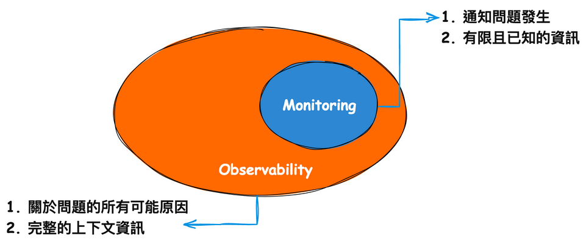
在系統的行為中，我們對於它們的理解/掌握程度又能分類。
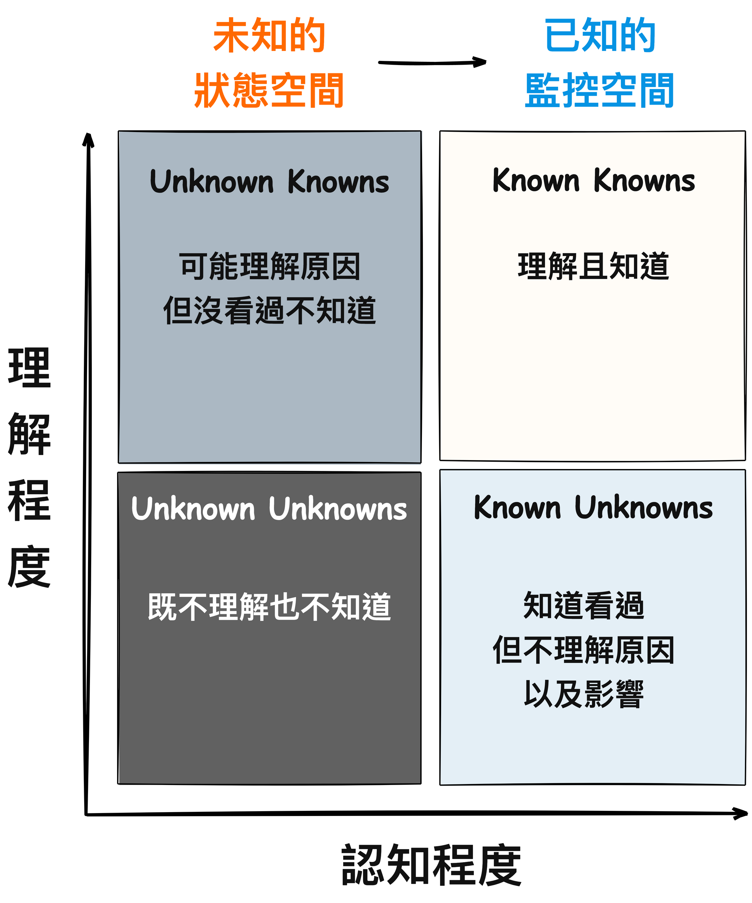
Known-knowns 的定義與應用
已知-未知（Known-Unknowns）是指我們已經知道系統中存在某些問題或異常情況，但需要進一步的調查才能理解這些問題的具體原因或位置。例如，當 Metric 顯示某個系統指標異常時，我們可以確定存在問題，但具體的原因可能仍然不明確，需要進一步的 Log 或 Trace 來定位。
Metric 和 Trace 是識別和解決已知-未知問題的主要工具。Metric 提供了系統健康狀況的數據概覽，幫助我們識別異常，而 Trace 則提供了問題發生位置的詳細視圖，幫助我們深入了解問題的根本原因。
Known-Unknowns 的定義與應用
已知-未知（Known-Unknowns）是指我們已經知道系統中存在某些問題或異常情況，但需要進一步的調查才能理解這些問題的具體原因或位置。例如，當 Metric 顯示某個系統指標異常時，我們可以確定存在問題，但具體的原因可能仍然不明確，需要進一步的 Log 或 Trace 來定位。
Metric 和 Trace 是識別和解決已知-未知問題的主要工具。Metric 提供了系統健康狀況的數據概覽，幫助我們識別異常，而 Trace 則提供了問題發生位置的詳細視圖，幫助我們深入了解問題的根本原因。
Unknown-Unknowns 的定義與應用
未知-未知（Unknown-Unknowns）是指那些我們甚至不知道存在的問題，這些問題在影響系統之前可能完全不為人知。這些問題通常隱藏在系統的底層程式碼或資源分配策略中，僅憑 Metric、Log 或 Trace 是難以發現的。
Profile 是針對 Unknown-Unknowns 問題的強大工具。透過分析應用程式的資源使用情況，Profile 能夠挖掘出深層次的性能問題，如資源過度消耗或低效的程式碼實做結構，這些問題往往是其他信號無法察覺的。
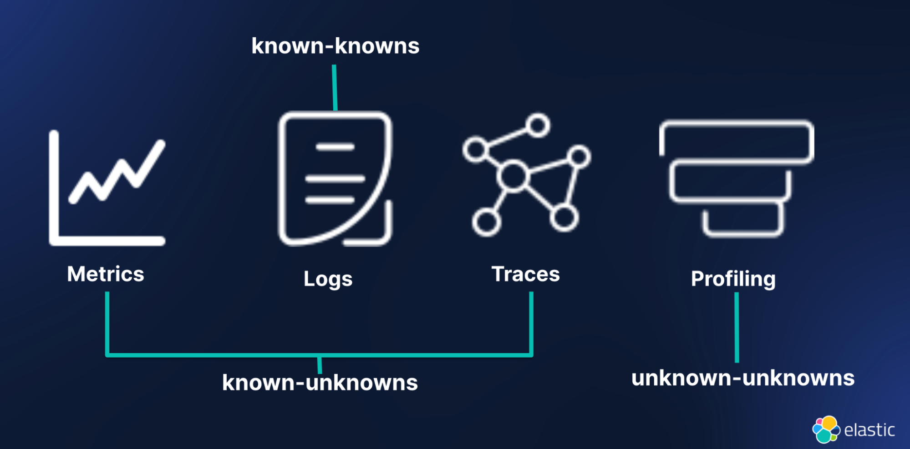
圖片參考自 Elastic Why metrics, logs, and traces aren’t enough
四種信號的詳細說明與協同工作
Logs：提供詳細事件記錄
Logs 是遙測信號中最早出現的形式，它們記錄了系統中的具體事件，提供了故障排除和 Audit 的基礎。Log 的主要優勢在於其能夠提供詳細的事件追踪，幫助開發者和運維人員了解系統中發生了什麼。
然而，Logs 的局限性在於它們僅能記錄已知的事件，對於未知問題的探查能力有限。在面對 Known-Unknowns 或 Unknown-Unknowns 問題時，僅依賴 Logs 可能不足以全面理解和解決問題。
Metric：數據化的系統健康指標
Metric 通過定期收集和報告系統性能指標，為我們提供了系統健康狀況的即時概覽。Metric 的優勢在於其結構化的資料形式，使得設置閾值警報和進行趨勢分析變得容易。
在處理 Known-Unknowns 問題時，Metric 是非常有用的工具。當我們觀察到某個指標超出預期範圍時，Metric 可以引導我們進一步調查問題的根本原因。然而，僅憑 Metric，我們無法深入了解問題的具體細節，需要結合其他遙測信號來進行更全面的分析。
Trace：追踪請求的詳細路徑
Trace 是理解分散式系統中請求流動的關鍵工具。它們記錄了請求從進入系統到處理完成的每一步操作，並提供了每個步驟的執行時間和狀態。
在解決 Known-Unknowns 問題時，Trace 能夠幫助我們定位問題發生的位置。例如，當一個請求的某個步驟出現異常延遲時，Trace 能夠指引我們到具體的服務或元件進行深入調查。這使得 Traces 成為分散式系統中的重要診斷工具。
Profiles：深入分析系統資源使用
Profiles 是針對系統資源使用進行深度分析的工具。通過捕捉 CPU 時間、內存使用等資源消耗情況，Profiles 能夠揭示系統中最耗資源的程式碼區段，幫助開發者優化系統性能。
Profiles 的最大價值在於其能夠識別 Unknown-Unknowns 問題。這些問題可能隱藏在程式碼的某個角落，通常難以通過其他信號發現。通過持續 Profiling，開發者可以實時監控系統性能，並及時解決潛在的瓶頸問題。
遙測信號之間的互補性
以前我們應該最常看到的是這張圖
加入 Profile 後變成如下圖所示。
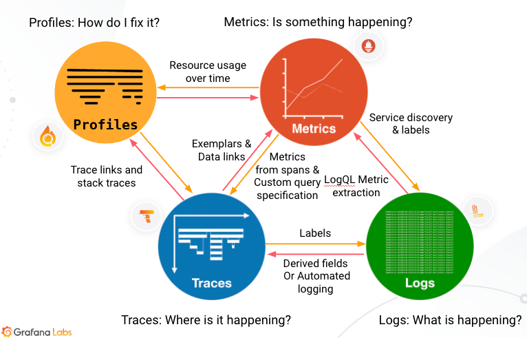
參考自 Grafana Traces and telemetry
metric、log 和 trace 各有其在系統可觀測性中的優勢，但它們主要提供的是已知問題的上下文或定位資訊：
Metrics 讓我們知道系統中發生了某些異常，但它們往往只能提示我們需要進一步調查。
Logs 記錄了具體的系統事件，幫助理解問題的表現形式，但僅限於已知範疇內的問題。
Traces 幫助定位問題的具體位置，特別是跨系統或跨服務的操作，但無法深入程式碼層面。
而 Profile 則彌補了這些信號的不足，特別是在揭示那些深層次、難以察覺的性能瓶頸和資源耗盡問題方面。當 Metric 顯示某個系統資源使用異常時，Profile 可以深入到具體的程式碼對應行，幫助找出資源過度消耗的根本原因。這種微觀層面的分析能力使 Profile 成為解決「為什麼會這樣？」這類問題的關鍵工具。
如果沒辦法將基本的三種遙測信號相互關聯起來做分析。那麼團隊肯定引入了不少工具在蒐集遙測信號，但其實當問題來臨時，幫助有限，因為處理者還是要開啟超過一個以上的工具和瀏覽器視窗在排查問題。甚至很可能有的工具還沒權限。
此時，就更不用說引入 Prfoile了。災難ㄚ！！ 天崩地裂一開 掰。
解決不同層次的問題
Known-knowns 問題：Log 是解決這類問題的主要工具，因為它們記錄了已知的事件和狀態變化，幫助我們快速確定問題所在。
Known-Unknowns 問題：Metric 和 Trace 能夠幫助識別和定位這類問題，為進一步的調查提供指引。
Unknown-Unknowns 問題：Profile 是解決這類問題的核心工具，通過深入分析系統資源使用，揭示潛在的性能瓶頸和程式碼問題。
統一遙測信號的重要性
在現代雲端環境中，將 metric、log、trace 和 profile 整合到一個統一的平台中是至關重要的，而 OpenTelemetry 這一個開源遙測信號的框架，目的就是在整合從產生遙測信號、注入上下文內容、集中管理遙測信號與配置遙測流水線。只有集中統一後，這樣可以確保在處理系統問題時，能夠從宏觀到微觀層面逐步深入，最終全面理解系統的運行狀況，並有效解決問題。
統一平台的好處在於，它可以減少資料孤島現象，使得觀察性更具效率，同時也降低了系統運維的複雜性和成本。通過統一的觀察性平台，團隊能夠更快地識別問題的根源，優化系統性能，並最終提升整體運維效率。
總結來說，這四種信號形成了一個強大的工具集，為現代雲端原生環境提供了全面的可觀測性。profile 的加入，使得這個工具集能夠進一步深入到系統的內部運作，揭示其他信號難以發現的深層次問題，成為現代可觀測性中不可或缺的一部分。
DDD 領域驅動設計
沒想到吧 XD 其實我們做軟體設計與解決問題的開發者，時常需要回來思考我們為什麼要用這些技術。不然只會引入一個新框架（OpenTelemetry）和一堆工具（Grafana、ELK、DataDog...）。真的有幫助你解決問題了嘛？這裡提到的問題又是什麼？
先說我不是 DDD 高手，只是有稍微研究一點點。
在 DDD 中，Problem Domain 和 Solution Domain 是相互影響的，因為解決方案的設計應該直接反映出問題領域中的需求和挑戰。在這一過程中，遙測信號起到了關鍵的作用，幫助我們在兩個領域之間建立起有效的連接。
Problem Domain 與遙測信號
Problem Domain 是指我們試圖解決的業務問題或挑戰。這個領域涉及到問題的背景與範圍、約束條件、相關規範以及解決問題所需的專業知識。當我們試圖理解一個問題並定義它的範圍時，遙測信號在提供背景資訊和問題診斷方面發揮著關鍵作用。
Log 在 Problem Domain 中扮演著事件記錄和背景提供者的角色。通過分析 log，開發者可以了解業務流程中的關鍵事件，識別出系統何時以及在哪裡出現了問題。這些資訊有助於深入理解問題領域，並確保在設計解決方案時考慮到所有相關的業務背景。
Metric 提供了系統運行狀態的直觀數據表達，這些數據能幫助我們識別業務層面的性能問題或異常行為。當我們在 Problem Domain 中尋找具體問題時，Metric 能夠指示出哪些部分的性能表現不符合預期，從而引導我們進一步調查。
Trace 則幫助我們理解業務操作在系統中的流動，特別是在分散式系統中。Trace提供了業務操作跨越不同服務或組件的詳細路徑，幫助我們在 Problem Domain 中確定問題發生的具體位置和影響範圍。
Solution Domain 與遙測信號
Solution Domain 是指我們用來解決問題或需求的技術和方法。這包括架構設計、技術選型、工具使用等。在這一領域中，遙測信號的作用在於幫助我們驗證和優化解決方案，以確保它們能有效解決問題領域中的需求。
Log 在 Solution Domain 中用於跟踪和驗證解決方案的實施情況。例如，當我們實施一個新的功能或修復一個問題時，log 可以提供即時的反饋，告訴我們系統是否按預期運行，是否解決了問題領域中所定義的問題。
Metric 則幫助我們監控解決方案的整體性能，確保它符合技術限制和業務需求。例如，我們可以使用 Metric 來監控新功能的性能指標，確保它在滿足業務需求的同時，沒有引入新的性能瓶頸。
Trace 在解決方案實施後，幫助我們分析系統內部操作的流動。Trace 可以揭示新的架構設計或技術實現是否導致了意外的性能問題或系統瓶頸，從而幫助我們在 Solution Domain 中進行必要的調整。
Profile 則是用於對程式碼和系統資源使用的深入分析。Profile 能夠幫助我們優化解決方案的性能表現，確保系統運行高效，並符合預定的性能目標。
從 Problem Domain 到 Solution Domain 的過渡過程
從 Problem Domain 到 Solution Domain 的過渡過程中，我們可以使用遙測信號來驗證問題的定義和解決方案的設計。例如，我們可以使用 Log 來追踪業務事件，並使用 Metric 來確保解決方案能夠提升這些事件的處理效率。
從 Solution Domain 到 Problem Domain 的反饋過程中，我們可以使用遙測信號來監控技術變更的效果，並確保它們不會對業務流程產生負面影響。例如，我們可以使用 Trace 來分析新的技術實現是否影響了業務操作的流動，並使用 Profile 來優化解決方案的性能表現。
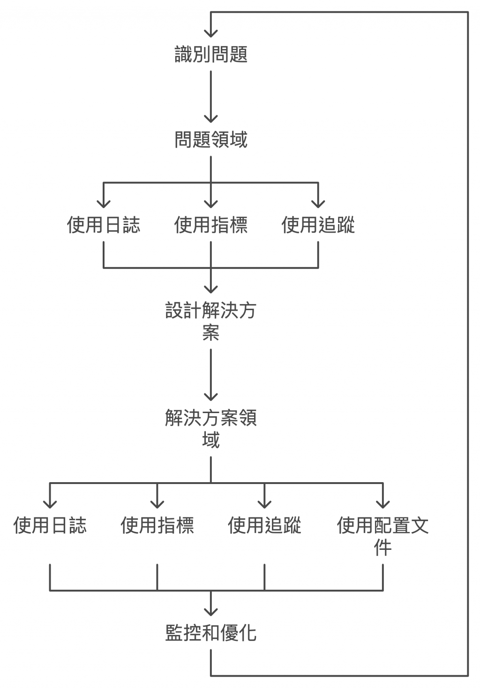
小結
在現代軟體系統中，可觀測性已成為確保系統穩定性和性能的關鍵。Log、Metric、Trace 和 Profile 這四種信號代表了系統監控和診斷的不同層面，各自發展於不同的歷史時期，並且在處理不同類型的系統問題時發揮著互補的作用。
理解這些信號的歷史背景以及它們如何協同工作，對於構建全面的可觀測性策略至關重要。通過統一這四種信號，我們可以實現從宏觀到微觀的全面系統監控，從而更有效地識別和解決系統中的 Known-Unknowns 和未知-未知問題。
遙測信號能夠幫助我們在 Problem Domain 中更準確地識別和理解問題，並在 Solution Domain 中設計出高效的解決方案。同時，Known-Unknowns 和 Unknown-Unknowns 的概念也與 DDD 中的這兩個領域緊密相關，幫助我們在設計和實施解決方案時更好地應對系統中的潛在問題。通過有效利用這些工具和概念，我們可以建置更穩定、高效的系統，並在面對複雜的業務需求和技術挑戰時具備更強的應對能力。
第一天跟最後一天總是特別好寫 :) 能寫得很長又完整。
中間的 28 天就...我就會原形畢露了
D2 簡介系統性能工程
- 系列：應該是 Profilling 吧？系列 第 2 篇
- Day：2
- 發佈時間：2024-09-02 00:01:55
- 原文：https://ithelp.ithome.com.tw/articles/10347376
站在未來，規劃現在
就是可觀測性工程與系統性能工程的核心精神
只有知道系統能有多少容量應付未來的流量，以及知道系統發生哪些事情我們能提早準備
才有可能把 Risk 降到最低。
現代軟體系統中，Log、Metrics 和 Traces 已成為實現系統可觀測的三大遙測信號基石。這些遙測信號幫助我們深入了解系統的運行狀態，識別問題，並提供解決問題所需的上下文。然而，隨著系統的複雜性增加和性能要求的提高，僅依賴這三種遙測信號已不足以滿足現代企業的需求。因此，Profile 性能剖析作為第四種遙測信號，逐漸在系統性能工程中扮演著不可或缺的角色。
Profile 性能剖析的重要性
在傳統開發流程中，工程師通常會在開發完成後紀錄事件 log，設置框架監測 metric 和 trace span，然後將系統部署到具有擴展能力的測試環境中進行負載測試。然而，這樣的流程存在一個主要問題：當性能問題出現時，往往只能依賴基本遙測信號進行推敲，缺乏深入的剖析工具來準確定位問題。
舉個現實案例，團隊僅仰賴 log，但真的出問題時，找不到能定位問題的 log，或者能看見很常的錯誤訊息，但通常還是猜，然後在改程式加入更多 log。此時團隊能做的事情只有觀察與等待。事情未必能很容易再上演。且這過程中，無疑也沒能幫助系統止血或根除原因，因為只做了跟重開機一樣的行為。
但蠻多時候這種事情發生，幾乎是 syscall(I/O)或是服務容量不夠導致的，但這些原因 log 捕捉不到，因為這都是 kernel 等級的資訊。但 profile 可能可以捕捉到一些資訊，例如等待 syscall 完成的時間資訊，每個 goroutine 等執行情況等。
Profile 性能剖析正是在這一背景下應運而生。它能夠深入分析應用程式的資源使用情況，揭示系統的深層次性能瓶頸。這種能力使得 Profile 成為解決 Unknown-Unknowns 問題的關鍵工具。
系統性能工程的背景
系統性能工程（Performance Engineering）是一個涵蓋系統開發生命週期中各個階段的技術領域，其目的是確保系統性能的非功能需求（如吞吐量、延遲、記憶體/CPU 使用量等）得到滿足。這個領域的重點不僅僅是在開發過程中進行性能優化，還包括在系統運行後的持續監控和優化。
性能工程的目標是多方面的，包括：
- 增加業務收入：確保系統能在所需時間內處理請求，從而提升用戶體驗和業務收益。
- 消除系統開發返工：通過在開發階段就解決性能問題，避免因性能目標失敗而導致的返工。
- 減少硬體成本：通過優化系統性能，減少不必要的硬體資源消耗，從而降低成本。
性能工程目標
- 通過確保系統能在所需時間內處理請求來增加業務收入
- 消除由於性能目標失敗而需要報廢和撇帳的系統開發工作
- 消除由於性能問題導致的系統延遲部署
- 消除由於性能問題引起的可避免的系統返工
- 消除可避免的系統調優工作
- 避免額外和不必要的硬體採購成本
- 減少由於正式營運環境中的性能問題而導致的軟體維護成本增加
- 減少由於即興性能修復對軟體的影響而導致的軟體維護成本增加
- 減少由於性能問題而處理系統問題的額外運營開銷
- 通過原型模擬識別未來瓶頸
- 增加伺服器容量的能力
性能工程的主要方法
性能工程涉及多種方法論，這些方法在不同的開發階段應用，並通過統一的過程框架（如 RUP）進行管理。
-
概念階段（Concept Phase）：
- 識別關鍵業務流程：根據業務價值分類，確定需要優先關注的業務流程。
- 識別高風險：描述可能影響系統性能的風險，並制定相應的計劃。
-
闡述階段（Elaboration Phase）：
- 分解業務流程：將關鍵業務流程分解為具體的使用案例，確保每個步驟的性能需求得到充分考慮。
- 定義非功能需求（NFR）：包括性能需求在內的所有非功能需求，在這一階段得到明確的定義。
-
建置階段（Construction Phase）：
- 選擇性能剖析工具：為開發和測試環境選擇合適的工具，這些工具將用於性能測試和剖析。
- 性能測試：在接近正式營運環境的預部署環境中進行性能測試，確保系統在實際運行中的表現符合預期。
-
轉換階段（Transition Phase）：
- 部署準備：配置操作系統、網路、伺服器和性能監控軟體，以確保系統在運行中的穩定性。
- 持續運營：在系統部署後，進行定期的性能監控和報告，確保系統性能始終保持在最佳狀態。
這些方法構成了性能工程的基本框架，為系統性能優化提供了科學的指導。
以上只是 Wiki 的內容翻譯成中文而已 XD
從這性能工程方法的各階段描述能理解到也是一種測試概念，將這類測試左移至系統分析與設計階段就開始規劃，並且於開發整合環境就能測試，在之後各環境也是能持續地測試取得回饋。
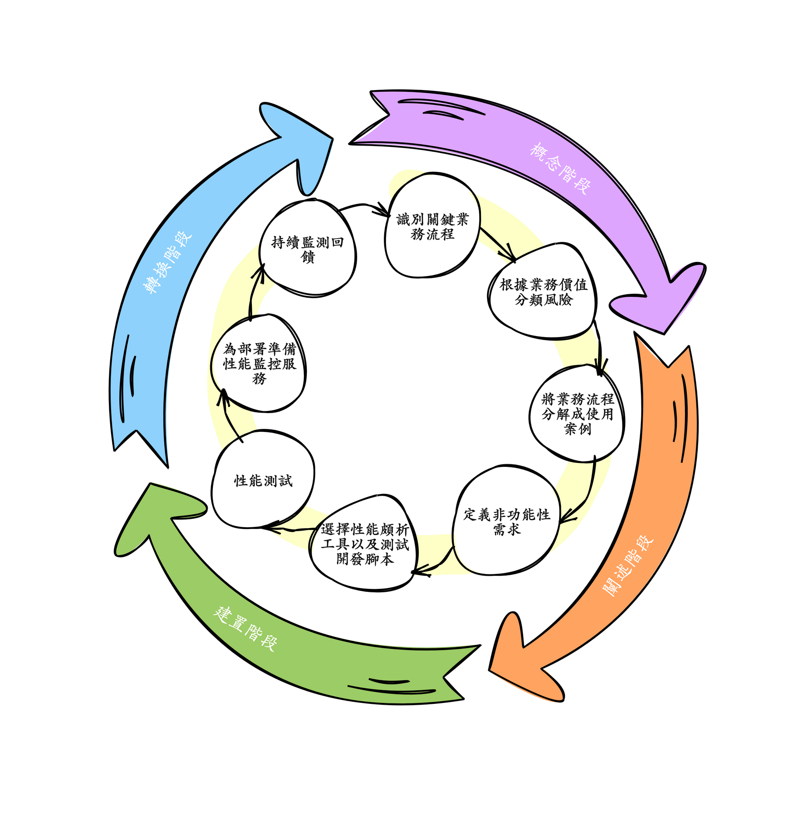
當團隊開始將這樣的工程方法引入在團隊的開發流程中時，其實也像可觀測性工程的 ODD（可觀測性驅動開發）中也有個 OMM（可觀測性成熟度模型），這裡也有 Performance Process Maturity Model （性能測試成熟度模型）。
性能剖析工具的選擇與應用
在性能工程中，性能剖析工具的選擇至關重要。這些工具能夠提供對系統內部運行狀態的深度洞察，幫助開發者識別和解決性能瓶頸。
常見的性能剖析工具包括：
- gprof：一種早期的性能剖析工具，用於分析程式的 CPU 使用情況。
- Java VisualVM：Java 開發中的一種可視化性能剖析工具，能夠幫助開發者分析和優化 Java 應用程式的性能。
- Pyroscope 和 Parca：現代化的性能剖析工具，基於 eBPF 技術，能夠在不影響系統性能的情況下進行持續監控。
性能剖析工具的選擇應根據具體的應用需求和技術環境進行調整。在選擇工具時，應考慮其對系統性能的影響、可擴展性以及與現有技術堆棧的兼容性。
Profile 在系統性能工程中的重要性
前面提到不少次 Profile 能深入分析與解決 Unknown-Unknowns 問題：
在傳統開發流程中，當性能問題出現時，開發團隊往往只能依賴基本的 Log、Metrics 和 Traces 來推敲問題的根源。然而，這些遙測信號只能告訴我們「出了什麼問題」，卻無法揭示「為什麼會出現這個問題」。Profile 性能剖析工具能夠深入剖析應用程式的資源使用情況，揭示深層次的性能瓶頸，幫助團隊定位和解決 Unknown-Unknowns 問題。
提升系統性能工程的全面性：
系統性能工程涵蓋了系統開發生命週期中的各個階段，其目的是確保系統性能的非功能需求得到滿足。Profile 性能剖析作為一種深度剖析工具，能夠在性能工程的各個階段發揮重要作用。例如，在建置階段，它可以幫助選擇合適的性能剖析工具，並在性能測試中提供精確的性能數據；在轉換階段，它可以持續監控系統性能，確保系統運行始終保持最佳狀態。
支持持續優化與改進：
Profile 性能剖析工具的應用，讓開發團隊能夠在整個系統開發生命週期中進行持續的性能優化。這不僅能幫助團隊及早發現並解決性能問題，還能降低由於性能問題導致的系統開發返工和維護成本。此外，這些工具還能通過數據的持續監控和分析，為未來的系統優化提供寶貴的數據支持，幫助團隊更好地應對系統的複雜性和業務需求的變化。
總結
可觀測性驅動開發（ODD）其實各種的開發流程都差不多概念，目的都希望左移（Shift Left），就是希望在設計初期就把這些加入工作項目與完成目標中。可避免不必要的返工，導致工時延宕。或者上線了才發現出問題，只因為沒多點時間一起設計討論。
應該蠻多團隊很常嘴邊掛著「先做再說」，通常此話一出，什麼方法論就基本無用武之處了 XD 我相信也不太會重視測試，頂多在意那涵蓋率，但不看內容的。
好一點的團隊記得多復盤系統上遇到的問題以及盤點技術債與問題，能在之後修補問題就好。復盤出事的時空背景，可能的原因，解決的方法，讓大家能一起討論跟了解這些處理的 SOP。也能在這樣的過程中變成 Known-Knowns，就是加入 log 以及對應的 alert 或 SOP。
最怕的就是不復盤、不盤點跟償還技術債，一直疊床架屋的團隊。這種我只能說「很棒！」。
D3 性能測試成熟度模型與實踐指南
- 系列：應該是 Profilling 吧？系列 第 3 篇
- Day：3
- 發佈時間：2024-09-03 00:00:12
- 原文：https://ithelp.ithome.com.tw/articles/10347564
昨天簡短的介紹了什麼是系統性能工程，今天接著分享該工程領域中也有類似於可觀測性工程的可觀測性成熟度模型（ODD）的部份。
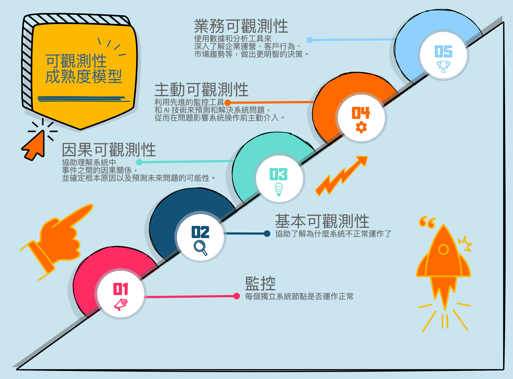
系統性能工程的定義
昨天好像沒怎提到 :(
性能工程代表了組織看待其基本流程的方式的文化轉變。它包含在整個組織中建置品質和績效的實踐和能力。這使組織能夠增加收入、吸引和保留客戶、品牌價值和競爭優勢，同時專注於滿足並超越最終使用者的期望。
成熟度模型
成熟度模型（Maturity Model） 是一種用來評估組織、流程、產品或系統在特定領域內成熟度的框架或工具。這種模型通常將成熟度劃分為多個等級，並根據各級別的特徵來判斷當前狀態和潛在的改進空間。以下是成熟度模型的核心概念和應用。
成熟度模型的基本特徵
1. 等級劃分：
成熟度模型通常包含多個等級（通常為 3 到 5 級），每個級別代表著不同的成熟度水平。這些級別從基本的、初級的狀態逐步提升到更高級的、成熟的狀態。
2. 等級特徵：
每個成熟度級別都有明確的特徵或標準，用來描述在該級別上應該具備的能力、流程或實踐。這些特徵幫助組織了解其當前狀態，以及達到更高級別所需的改進方向。
3. 進步路徑：
成熟度模型還提供了從一個等級進步到下一個等級的路徑和指南，幫助組織逐步提升其能力、流程或產品的成熟度。
成熟度模型的應用場景
成熟度模型可以應用於多種領域，以下是幾個常見的例子：
軟體開發：
CMMI（Capability Maturity Model Integration）：CMMI 是軟體工程領域中非常著名的成熟度模型，通過對組織的開發流程進行評估，來判斷其在不同級別上的成熟度。CMMI 將成熟度劃分為 5 級，從初級的 "初始級" 到最高級的 "優化級"。
IT 服務管理：
ITIL（Information Technology Infrastructure Library）成熟度模型：ITIL 將 IT 服務管理的成熟度劃分為多個等級，並提供改善流程和服務質量的指南，幫助組織提高 IT 服務的效能和效益。
資料治理：
資料治理成熟度模型：這種模型用來評估組織在資料管理和治理方面的成熟度，並提供提升資料質量、資料保護和資料利用率的路徑。
性能測試：
性能測試成熟度模型：幫助組織評估其性能測試流程的成熟度，從初級的、反應式的測試方式提升到全面、前瞻性的測試方法。
可觀測性工程：
可觀測性成熟度模型（Observability Maturity Model, OMM）：這個模型專注於評估和提升組織在系統可觀測性方面的能力。通過逐步提升可觀測性成熟度，組織能夠更好地監控、分析和優化系統性能。從最初的依賴基本 Log 和 Metric 到最終實現整合性、智能化的全方位可觀測性，OMM 為提升系統的穩定性和效能提供了明確的路徑。
以上這些成熟度模型的應用範圍廣泛，無論是在軟體開發、IT 服務管理、資料治理，還是在性能測試與可觀測性工程方面，都能幫助組織系統化地提升其流程、技術和管理水平，從而達到更高的效能和競爭力。
白話點，你能掌控 Risk 的程度有多高。
Risk 怎麼產生、何時產生、如何解決、怎麼避免等。
從需求開始到上線營運一直都會有 Risk 產生的。
成熟度模型的優點
評估當前狀態：
通過成熟度模型，組織能夠客觀地評估當前的成熟度水平，識別其強項和弱項。
指導改進：
成熟度模型提供了清晰的路徑，幫助組織逐步提升其能力，從而達到更高的成熟度等級。
標準化：
成熟度模型通常基於行業標準或最佳實踐，這有助於組織在全球範圍內保持一致性。
衡量效益：
通過持續改進成熟度，組織可以看到具體的效益提升，如更高的效能、更低的成本或更好的服務質量。
性能測試成熟度模型
隨著企業對系統性能要求的日益提高，性能測試不再僅僅是開發過程中的一個附屬環節，而是成為了一門獨立的學科。性能測試成熟度模型（Performance Testing Maturity Model）為企業提供了一個系統化的框架，使其能夠逐步提升性能測試和優化實踐。
性能測試成熟度模型的特徵
性能測試成熟度模型包含五個等級，從1到5。這些等級具有以下共同特徵：
**可累積性： **
性能成熟度等級具有可累積性，這意味著在較低等級中應用的性能活動和流程在較高等級中被保留並增強。這種可累積性確保了在提升成熟度等級的過程中，已有的知識和實踐不會丟失，而是作為基礎進一步發展和優化。
例如： 等級1：僅進行基本的故障排除和應急修復。 等級2：在等級1的基礎上，增加了持續監控和數據收集。 等級3：在等級2的基礎上，整合了性能優化工具和方法，並將性能考慮融入開發過程。 等級4：在等級3的基礎上，強化了對業務效能的理解，並考慮系統變更對業務生產力的影響。 等級5：在等級4的基礎上，進一步延伸到整個企業的流程優化，全面檢視成本和利潤可能性。 這樣的累積性確保了每個等級的進步都建立在前一等級的基礎上，使整個流程變得更加穩健和高效。
不同應用的差異性：
不同的應用程序可能在性能成熟度等級上表現出差異。這是由於各個應用程序的需求、開發過程和運行環境不同所致。然而，相同的企業或部門文化會使大多數系統表現出類似的成熟度等級。這意味著，雖然單個應用程序可能處於不同的成熟度等級，但整體企業文化和方法論會影響這些應用程序，使其在性能成熟度上趨於一致。
例如：
某些應用可能在性能監控方面做得很好（等級2），但在性能優化和容量規劃方面仍需改進（等級3）。 另一個應用程序可能已經將性能考慮融入了開發過程（等級3），但尚未全面理解和優化業務效能（等級4）。 企業或部門文化的統一性有助於推動所有應用程序朝著更高的性能成熟度等級邁進，形成一致的流程和標準。
學習和反饋：
在性能成熟度的提升過程中，學習和反饋是關鍵。隨著工作的進展，組織會應用不同程度的學習和反饋機制，以提高性能和優化流程。較高等級的組織更傾向於使用有效且具有戰略性的反饋方法。
例如：
等級1：主要依賴於個別事件的反應，缺乏系統性的學習和反饋。 等級2：開始定期收集性能數據，並根據這些數據進行基礎的性能調整。 等級3：將性能評估和規劃融入開發過程，開發團隊和性能工作者持續交流和反饋。 等級4：基於用戶生產力和業務效能的數據進行深入分析和優化，建立更具戰略性的反饋機制。 等級5：企業高層全面理解並推動性能和流程優化，形成自上而下的學習和反饋文化。 這種學習和反饋機制確保了組織能夠持續改進和優化，並在面對新的挑戰時具備更強的應對能力。
性能測試成熟度模型的五個等級
性能測試成熟度模型包含五個等級，這些等級代表了企業在性能測試方面的不同發展階段。這些等級的主要特徵包括：
等級 1：消防式處理：
在等級1，開發人員在創建系統時對操作考慮（包括性能）缺乏意識。他們所得到的需求僅指定最基本的性能需求（如果有的話）。如果在試點或早期部署中暴露出性能問題，則通過「調優」來解決，即對程式邏輯進行小幅調整，只能帶來增量改善。系統交付生產後，實際上是「扔過牆」。
伺服器可能在對其大小缺乏理解或定量科學的情況下指定、購買和安裝，導致意外停機，隨後進行緊急（昂貴）的升級或更換，甚至需要重新開發應用。由於應用過慢而需要返工的成本很高（包括超支），並且會導致顯著的延遲。用戶群體或應用集的變化對操作人員來說是驚喜，導致停機或極差的性能。
主要重點在於故障排除和反應模式，這主要在操作領域。一個缺乏性能專業知識的支持團隊成員可能會被指派「快速運行一個 PerfMon」或使用其他臨時工具進行檢查。每次新危機都會產生另一個特別研究，並可能從中獲得一些預防措施，但很少試圖產生戰略價值或計劃長期穩定的流程。
管理層對系統性能如何促進企業成功的理解很少，只知道停機（極端性能差）會花費金錢。性能在這個成熟度等級是黑暗藝術。
等級 2：監控：
在等級2，一個性能工作者設置了一些自動化水平，從營運系統中收集性能數據，理想情況下是24x7。系統地處理超出既定閾值的資源測量（如 CPU 使用率、I/O 頻寬、記憶體空間可用性或硬碟空間）的努力有所增加。性能工作者可能會定期發布報告，但管理層可能仍然認為這些數據及其意義超出了他們的興趣或專業範疇。
接受監控的系統至少在某種程度上已被合理化，考慮到用戶數量和由此產生的停機和響應不良成本。應用系統在部署前仍然受到很少的性能審查，因此用戶群體或系統負載的意外水平仍然會破壞響應時間和穩定性。修復或防止性能缺陷的努力可能僅限於操作系統（OS）或硬體配置調整、系統軟體更新等。
性能工作者可能使用一個打包好的監控系統，如 BMC Patrol Perform 或 Heroix eQ Management Suite。或者，性能工作者可能從免費組件中組裝一個系統，由腳本和操作系統級別的任務調度鏈接起來。監控系統可能會捕捉關鍵的超出閾值的測量。警報有兩種可能的級別：
- 近乎實時，為操作支持團隊提供解決異常所需的信息。
- 批量，提供更具戰略性或戰術性的支持。
等級 3：性能優化：
在等級3，性能評估和規劃融入了開發過程。開發人員和性能工程使用全套方法和工具來解決性能需求。例如：
- 軟體性能工程（SPE）模型從設計階段開始就預測系統響應和資源競爭，隨著設計和實施的細節逐漸清晰，SPE 模型也會進行調整和完善。
- 回應時間預算將複雜或多層應用程序的時間分解，以建立內部處理時間限制，並在專案早期確立和隨著組件的開發進行完善。
- IDE 型剖析器評估執行路徑和路徑長度，開發人員使用電腦輔助軟體工程（CASE）工具或 SQL 伺服器分析路徑長度、I/O 計數和其他性能行為。
- 專門的主機工具檢查應用程序性能行為，I/O 追蹤實用程序捕捉輸入/輸出模式和計時，操作系統特定工具從測試運行中捕獲廣泛的性能測量。
應用程序回應測量（ARM）API 用於捕捉應用程序在執行中的回應時間。監控系統支持 ARM API，收集並分析這些回應時間數據。這些數據可用於以下目的：
- 系統回應時間性的直接測量： 通過 ARM API 捕捉應用程序的回應時間，可以直接測量系統在處理請求時的回應速度。
- 請求速率/吞吐量分析： 分析著重於測量系統在單位時間內接收到的請求數量，幫助理解系統在不同負載情況下的行為。
- 請求數量分析： 分析專注於統計和評估系統處理的總請求數量，特別是在高負載情況下，用來確定系統的容量需求。
- 趨勢分析： 通過長期收集回應時間數據，可以分析系統性能的趨勢，預測未來的性能瓶頸和資源需求。
等級 4：業務優化：
系統的性能優化不僅僅停留在技術層面，而是進一步與業務目標掛鉤。企業開始理解系統性能對業務價值的影響，並將性能優化作為提升業務效能的核心手段。
- 用戶生產力對應用程序的理解，如通話時長、每小時的電話營銷銷售等。
- 系統的業務價值—不僅僅是對用戶生產力的好處—被充分理解。
- 對系統變更的提議進行徹底評估，以了解其對用戶生產力和資源利用的影響。
- 系統回應性、用戶生產力、硬件投資和系統壽命之間的權衡被充分理解和合理化。
這一階段需要廣泛協調的技能，包括性能、人為因素、管理和系統分析領域。企業目標對所有人都是可見的，並形成衡量設計和性能決策的標尺。
等級 5：流程優化：
在等級5，管理層完全理解性能和流程優化的好處，重點是進一步擴展這些好處：
- 仔細檢查與系統相關的成本與利潤可能性。
- 對每個潛在優化的好處與實現該優化的成本進行理性化，例如，考慮投資回報率（ROI）。
這一成熟度等級幾乎完全採用管理科學，但不忽視系統性能的潛在貢獻，從 I/O 到資產負債表進行徹底檢查。流程文化確保所有人都能看到企業目標，並將他們的努力與流程效能對照。企業架構已被合理化，應用程序系統及其上的業務系統的性能優化已經實現並持續改進。
在 Thoughtworks 今年也有一篇關於性能工程成熟度模型的文章，分享給各位閱讀。
小結
總結來說，性能測試成熟度模型為企業提供了一個系統化的框架，使其能夠逐步提升性能測試和優化實踐。這不僅提高了單個應用程序的性能，還推動整個企業的性能文化，最終實現業務效能的全面提升。這一模型的價值在於它提供了一條清晰的路徑，幫助企業在日益複雜和動態的技術環境中保持競爭力和可持續發展。
講這麼多，測量這些要幹麻？
別急，後面會提大家朗朗上口的 *80/20 法則。
就說這次的文字會比較多了 :)
講了三天提到 Profile 我好像還沒給它的基礎長相。
該 repository 有很基礎的 profile 測量資料，剛好之前在看別人寫的 orderbook。
https://github.com/panaali/orderbook
裡面一段描述︰
如果您的實施投入生產後發現速度太慢，您會嘗試哪些想法來提高其效能？
• CPU 分析與最佳化以及重寫瓶頸部分 • 使用 valgrind 等工具進行記憶體最佳化 • 使用 GPU 運算 • 使用開銷較少的資料類型 • 使用更好的雜湊函數 • 盡可能使用緩存。
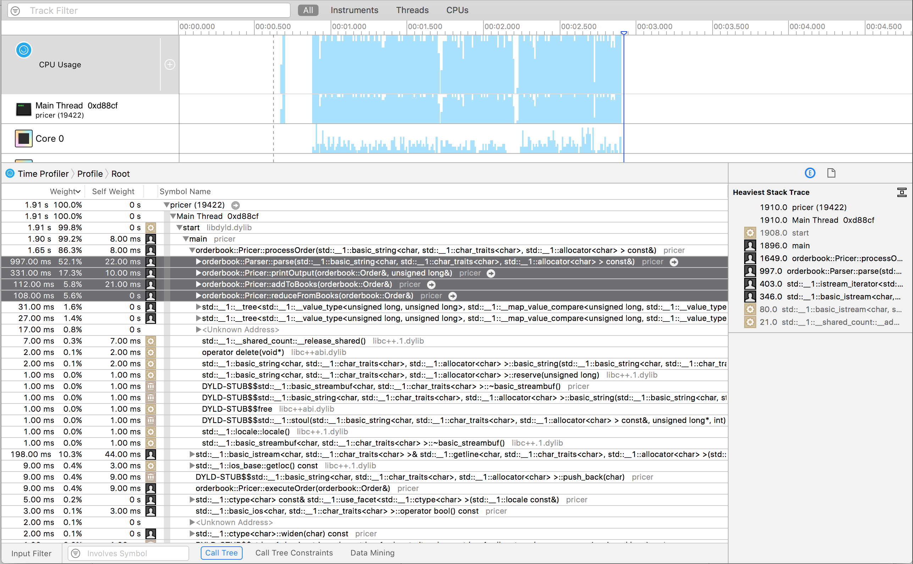
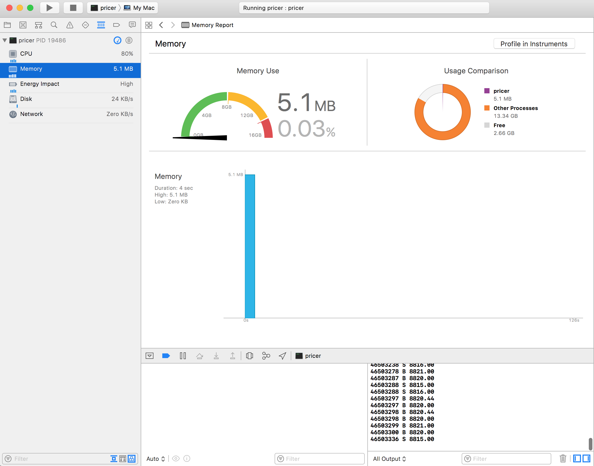
D4 系統性能工程充滿著挑戰
- 系列：應該是 Profilling 吧？系列 第 4 篇
- Day：4
- 發佈時間：2024-09-04 00:10:27
- 原文：https://ithelp.ithome.com.tw/articles/10347763
繼前兩天都在提到系統性能工程，今天來多聊一點該領域的東西。
D2 簡介系統性能工程
D3 性能測試成熟度模型與實踐指南
系統性能指的是對個服務的性能的研究，包括主要硬體與軟體。所有執行路徑與資料路徑上和從儲服務到應用程式上所發生的事情都包括在內，因為這些都有可能影響系統性能。對於分散式系統來說，這益為著更多台的伺服器與應用程式在營運環境上，複雜度幾乎成指數成長。如果我們沒有系統環境的一張全景示意圖，用來顯示資料的路徑，以前我們會自己畫一張，然後在部門同事間流傳。這圖可以幫助我們理解所有組件的關係，並確保我們不會只見樹木不見森林。
系統性能的基本目標是減少 duration 以及降低運行或計算成本，來改善使用者的體驗。可低成本可以通過消除性能低效的地方、提供系統吞吐量和進行常規性能優化來實現。
在系統性能工程中，也有 Full Stack 這名稱 XD。 不同於職位上表示一條龍，這裡的 Full Stack 指的是應用程式到硬體的全部，包含軟體系統、系統底層、硬體本身。系統性能研究的是 Full Stack。研究範圍就是下圖的應用程式與系統主機的區塊。
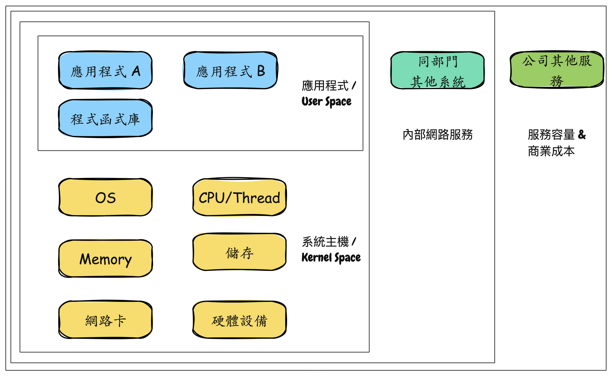
所有服務的黃色區塊其實就是全公司的硬體容量，也就是營運時必須支出的成本。這時候上層就會有兩種營運思路出現了︰
- 降低營運成本，那我們就會把總硬體容量降低了。通常在公司不賺錢時 XD 就也別再妄想會有漂亮的分紅了。
- 不降低營運成本，而是希望大家提高性能以及有效率用率。這樣子的思維那肯定就是公司有賺錢，但希望擴大通路跟客戶數量，以及提昇使用者體驗。
所以如果開發團隊能對系統性能以及資源利用程度有所關心，以及知道如何監測以及分析自己開發的服務。服務運行效能的提昇以及執行性能的優化，能使得成本花在刀口上，讓資源更有效率的被運用。
很多公司上雲端，就是照以往的習慣與認知，依樣放上雲端而已。最後都會說怎麼比地端都還貴。交付速度也沒變快多少。或者 ECS. EKS fargate這些以為便宜就最小數量開不少。但其實資源利用率很低很低，效能不好以為能仰賴數量做補救，但其實就是用鈔能力來提高系統容量，並沒作到優化這事情。
往往我們所設計的解決方案以及撰寫的程式碼近乎直接影響了服務的質量，也間接決定了使用者的去留。同時這些服務會運行在各種主機上，公司的維運團隊需要部署資料庫以及網路等容量，這些容量的效率就直接影響了公司的運營成本。
所以，程式性能的優化以及容量效率的提昇，其實是每個開發人員的重要工作。正且系統性能工程就是在討論這面向。
性能
性能表現其實能體驗在很多指標上，常見的幾個指標有Throughput、Latency、Scalability 和 Resouce Utilization。
- Throughput︰單位時間內能處理請求的數量。老闆總是希望 throught 越多越好 XD
- Latency/Duration︰使用者請求的處理時間。老闆總希望Latency 越快越低越好。
- Scalability︰系統在
高度負載的情況下能不能正常處理請求。老闆總希望 scalability 越即時越好。 - Resource Utilization︰單位請求處理所需要的資源量（比如 CPU、記憶體、頻寬或連線等）。老闆總希望utilization越高越省$$ ^^
這裡講的都不會是單個，主要是整體。只是別忘記木桶理論 或 短板理論。
一個木桶盛水的多少，並不取決於桶壁上最高的那塊木塊，而是取決於桶壁上最短的那塊。
當我們知道這四個基本指標時，就能簡單評斷自己設計撰寫的服務的表現如果不好，那就是 throughput 少、latency 高、scalability 差又慢、resource utilization 低（帳面資源需求很高）。那麼這服務肯定會提高不少營運上的成本。
所以團隊以及開發人員還是需要關心自己的程式碼的性能表現。而在這系統性能工程上掌握度越高的工程師，往往也是在團隊中相對資深或對該語言或很多系統底層掌握度高的人員。
舉例說明
-
二維陣列操作
這裡都是針對二維陣列進行存取操作。只是一個先從內層
j開始走訪，再走訪i，令一個則是反過來。
func TwoDimArrayBad() {
x := [4000][4000]int{}
for i := 0; i < 4000; i++ {
for j := 0; j < 4000; j++ {
x[j][i] = i + j
}
}
}
func TwoDimArrayGood() {
x := [4000][4000]int{}
for i := 0; i < 4000; i++ {
for j := 0; j < 4000; j++ {
x[i][j] = i + j
}
}
}
讓我們執行benchmark測試，
func BenchmarkTwoDimArrayBad(b *testing.B) {
b.ResetTimer()
for i := 0; i < b.N; i++ {
TwoDimArrayBad()
}
}
func BenchmarkTwoDimArrayGood(b *testing.B) {
b.ResetTimer()
for i := 0; i < b.N; i++ {
TwoDimArrayGood()
}
}
go test -bench=.
goos: linux
goarch: amd64
pkg: demo/TwoDimArrayBench
cpu: AMD Ryzen 5 3600 6-Core Processor
BenchmarkTwoDimArrayBad-12 13 83757417 ns/op
BenchmarkTwoDimArrayGood-12 54 25308850 ns/op
我們能看到TwoDimArrayBad每次操作平均花費 83,757,417 納秒（約 83 毫秒）。而TwoDimArrayGood 每次操作平均花費 25,308,850 納秒（約 25 毫秒）。後者快了約3倍之多。且陣列操作是很常見的場景。
TwoDimArrayGood 會這麼快是因為利用了 CPU cache，在 CPU 的L1/L2的記憶體中甚至在一般的記憶體中，陣列都是連續空間來儲存的。還有就是利用了 Spatial locality （資料局部性原則），因為連續的資料存取是在鄰近的記憶體空間中。而如果每次操作都要切換令一個很大的陣列元素，那麼自然快不起來。
所以知曉一些底層的知識，以及知道怎麼做測試來改善程式碼，會是工程師一門重要的修為。
-
Map 結構操作
我們時常會用到 Map 來存放 Key-Value 這樣的大量資料於記憶體中做操作。通常每種程式語言都會提供很多種的泛型容器，如果我們開發者不夠清楚自己的存取場景與方式，以及不清楚這些容器的差別與適用場景。那麼在性能表現上也會很明顯。
以下是 C++ 的常見 map容器。今天存取場景是隨機插入。可能常見的會選擇std::unordered_map，可是 google:dense_hash_map 相比於 std::unordered_map 是非常的快好幾倍。
但這些性能指標的benchmark報表也都是實驗測試出來的。
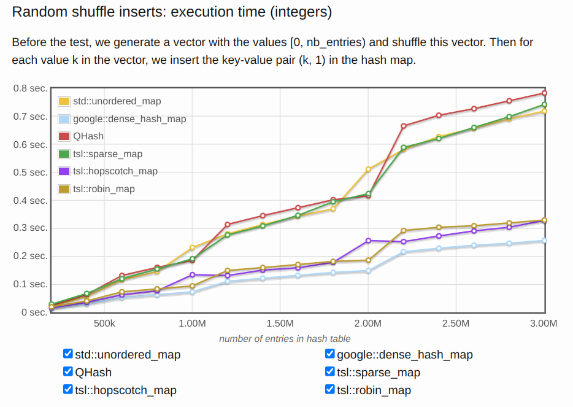
- 濫用 Thread 或 coroutine
濫用Thread或Coroutine會導致系統資源的浪費，因為CPU數量有限，過多的Thread或Coroutine會導致上下文切換開銷過高。合適地使用這些技術，並根據實際需求進行性能測試和優化，是提高系統性能的重要方法。
這段程式會針對不同數量的Goroutine進行基準測試，從而瞭解系統在不同情況下的表現。
package main
import (
"fmt"
"sync"
"testing"
"time"
)
type WorkerPool struct {
tasks chan func()
wg sync.WaitGroup
}
func NewWorkerPool(size int) *WorkerPool {
pool := &WorkerPool{
tasks: make(chan func(), size),
}
for i := 0; i < size; i++ {
go pool.worker()
}
return pool
}
func (p *WorkerPool) worker() {
for task := range p.tasks {
task()
}
}
func (p *WorkerPool) Submit(task func()) {
p.wg.Add(1)
p.tasks <- func() {
defer p.wg.Done()
task()
}
}
func (p *WorkerPool) Wait() {
p.wg.Wait()
}
func BenchmarkWorkerPool(b *testing.B) {
for _, n := range []int{10, 100, 1000, 10000} {
b.Run(fmt.Sprintf("%d-WorkerPool", n), func(b *testing.B) {
pool := NewWorkerPool(100) // 池的大小可以根據需要調整
b.ResetTimer()
for i := 0; i < b.N; i++ {
for j := 0; j < n; j++ {
pool.Submit(func() {
time.Sleep(time.Millisecond)
})
}
pool.Wait()
}
})
}
}
go test -bench=. -benchmem
goos: linux
goarch: amd64
pkg: demo/coroutine
cpu: AMD Ryzen 5 3600 6-Core Processor
BenchmarkGoroutines/10-Goroutines-12 1110 1082729 ns/op 1002 B/op 21 allocs/op
BenchmarkGoroutines/100-Goroutines-12 1028 1164214 ns/op 9633 B/op 201 allocs/op
BenchmarkGoroutines/1000-Goroutines-12 638 1884204 ns/op 96252 B/op 2002 allocs/op
BenchmarkGoroutines/10000-Goroutines-12 214 5376712 ns/op 966349 B/op 20048 allocs/op
PASS
ok demo/coroutine 5.742s
這些benchmark結果提供了有關不同數量Goroutine對系統性能影響的信息。讓我們逐行解析這些數據：
-
BenchmarkGoroutines/10-Goroutines-12：
- ns/op（每操作納秒數）：1,082,729 ns（約1.08毫秒），表示每次運行這個測試需要的平均時間。
- B/op（每操作的字節數）：1,002 B，表示每次操作分配的記憶體量。
- allocs/op（每操作的分配數量）：21次，表示每次操作記憶體分配的次數。
-
BenchmarkGoroutines/100-Goroutines-12：
- ns/op：1,164,214 ns（約1.16毫秒），比10個Goroutine的情況略微增加。
- B/op：9,633 B，分配的記憶體明顯增加。
- allocs/op：201次，記憶體分配次數也增加。
-
BenchmarkGoroutines/1000-Goroutines-12：
- ns/op：1,884,204 ns（約1.88毫秒），隨著Goroutine數量的增加，時間也增加。
- B/op：96,252 B，記憶體分配量顯著增加。
- allocs/op：2002次，記憶體分配次數也大幅增加。
-
BenchmarkGoroutines/10000-Goroutines-12：
- ns/op：5,376,712 ns（約5.38毫秒），顯著增加。
- B/op：966,349 B，記憶體分配接近1MB。
- allocs/op：20048次，記憶體分配次數非常多。
解釋和分析
-
時間（ns/op）：
- 隨著Goroutine數量的增加，每次操作所需的時間也在增加。這是因為更多的Goroutine會增加調度和Context switch的開銷。
-
記憶體佔用大小（B/op）：
- 隨著Goroutine數量的增加，每次操作分配的記憶體量也在增加。更多的Goroutine需要更多的記憶體來存儲其狀態和棧。
-
記憶體分配次數（allocs/op）：
- 記憶體分配次數也隨著Goroutine數量的增加而增加。這是因為每個Goroutine的創建和銷毀都會涉及記憶體分配和釋放。
改善方法
- 使用Goroutine池：
重用Goroutine而不是每次都創建新的Goroutine，這可以顯著減少記憶體分配和context switch 的開銷。
- 優化記憶體使用：
減少每個Goroutine需要的記憶體量，確保Goroutine的工作量和記憶體需求是合理的。
package main
import (
"fmt"
"sync"
"testing"
"time"
)
type WorkerPool struct {
tasks chan func()
wg sync.WaitGroup
}
func NewWorkerPool(size int) *WorkerPool {
pool := &WorkerPool{
tasks: make(chan func(), size),
}
for i := 0; i < size; i++ {
go pool.worker()
}
return pool
}
func (p *WorkerPool) worker() {
for task := range p.tasks {
task()
}
}
func (p *WorkerPool) Submit(task func()) {
p.wg.Add(1)
p.tasks <- func() {
defer p.wg.Done()
task()
}
}
func (p *WorkerPool) Wait() {
p.wg.Wait()
}
func BenchmarkWorkerPool(b *testing.B) {
for _, n := range []int{10, 100, 1000, 10000} {
b.Run(fmt.Sprintf("%d-WorkerPool", n), func(b *testing.B) {
pool := NewWorkerPool(100) // 池的大小可以根據需要調整
b.ResetTimer()
for i := 0; i < b.N; i++ {
for j := 0; j < n; j++ {
pool.Submit(func() {
time.Sleep(time.Millisecond)
})
}
pool.Wait()
}
})
}
}
go test -bench=. -benchmem
goos: linux
goarch: amd64
pkg: demo/coroutine
cpu: AMD Ryzen 5 3600 6-Core Processor
BenchmarkGoroutines/10-Goroutines-12 1110 1081654 ns/op 994 B/op 21 allocs/op
BenchmarkGoroutines/100-Goroutines-12 1029 1149538 ns/op 9626 B/op 201 allocs/op
BenchmarkGoroutines/1000-Goroutines-12 624 1937192 ns/op 96108 B/op 2001 allocs/op
BenchmarkGoroutines/10000-Goroutines-12 201 5689357 ns/op 967234 B/op 20025 allocs/op
BenchmarkWorkerPool/10-WorkerPool-12 1110 1088607 ns/op 266 B/op 10 allocs/op
BenchmarkWorkerPool/100-WorkerPool-12 1036 1164913 ns/op 2424 B/op 100 allocs/op
BenchmarkWorkerPool/1000-WorkerPool-12 100 11163591 ns/op 24341 B/op 1003 allocs/op
BenchmarkWorkerPool/10000-WorkerPool-12 10 110927755 ns/op 242182 B/op 10024 allocs/op
PASS
ok demo/coroutine 11.775s
分析和解釋
-
時間（ns/op）：
- 在Goroutine的基準測試中，隨著Goroutine數量的增加，執行時間也逐漸增加。這是因為創建和調度大量Goroutine需要更多的時間。
- 在Worker Pool的基準測試中，當Goroutine數量較少時，執行時間相對穩定，但隨著數量增加，時間顯著增加，這是因為Worker Pool需要管理大量的任務。
-
記憶體佔用大小（B/op）：
- 在Goroutine的基準測試中，記憶體使用量隨著Goroutine數量的增加而顯著增加，這是因為每個Goroutine都需要分配記憶體來儲存其狀態。
- 在Worker Pool的benchmark中，記憶體使用量明顯較少，這是因為Goroutine池重用了Goroutine，減少了記憶體分配的開銷。
-
記憶體分配次數（allocs/op）：
- 在Goroutine的基準測試中，記憶體分配次數隨著Goroutine數量的增加而顯著增加。
- 在Worker Pool的benchmark中，記憶體分配次數較少，這是因為Worker Pool減少了Goroutine的創建和銷毀次數。
改善建議
- 使用Goroutine池：對於需要創建大量Goroutine的應用，使用Goroutine池可以顯著減少記憶體使用和記憶體分配次數，提高性能。
- 調整池大小：根據實際需求調整Goroutine池的大小，以達到最佳性能。
- 進行性能剖析：使用性能剖析工具，如
pprof，進一步分析和優化程式碼中的性能瓶頸。
通過這些措施，您可以更好地利用Goroutine池，提高應用程序的性能和資源利用效率。
小結
每個開發者應該需要關心程式碼性能。如果不了解性能優化的相關知識，是也能寫出可執行但性能非常不好的程式碼。但一個對待自己開發維護的服務負責的開發人員一定會發現，應能不好的程式碼無異於在製造技術債，還會像艾倫一樣，在製造更多工作機會。
如果一開始在設計時，就考慮到一些性能問題，並且提前在開發過程中解決，經過測試來驗證。這樣子的開發者相信到哪裡服務都會是團隊中的骨幹。
就延伸我在用Go做些範例的地方，其實常見的還有如I/O性能優化、資料庫查詢優化、或網路延遲優化。不然上面會很冗長。
- I/O 操作
I/O 往往是系統性能瓶頸的一個重要來源，因為與 CPU 和記憶體相比，I/O 操作通常會慢得多。優化 I/O 性能的策略可以顯著提升系統的整體效率。
這網站能了解從1990-2020這些年來 CPU-Mem-Disk-SSD 的讀寫效能、一些瓶頸時間
- Async I/O 處理
方法：將 I/O 操作設計為 Async 方式，讓程式在等待 I/O 操作完成的同時，可以繼續執行其他任務。
說明：Async I/O 可以防止因等待 I/O 操作完成而導致的 CPU 空閒，從而提高系統的吞吐量。例如，在網路請求或文件讀寫時，使用異步 I/O 能夠更有效地利用系統資源。
- 批量處理
方法：將多個 I/O 操作合併為一次操作，減少每次 I/O 的開銷。
說明：批量處理可以減少 I/O 操作的頻率，降低每次 I/O 的時間開銷。例如，在需要多次寫入文件時，將多次寫入操作合併為一次批量寫入，能顯著減少 I/O 的總耗時。
- Cache 機制
方法：使用 Cache（如記憶體Cache或硬碟Cache）來減少對硬碟或網絡的直接 I/O 操作。
說明：Cache 機制可以顯著降低 I/O 操作的延遲。例如，在讀取經常使用的數據時，先查詢 Cache，只有當 Cache 中不存在時才進行 I/O 操作。
- Zero Copy機制
資料從硬碟或網路設備直接傳輸到最終目標，不需要經過 User space 的多次 copy。例如，在 Linux 中，使用 sendfile() 函數可以將文件中的數據直接從 File descripter 傳輸到 socket，而不經過 user space 的中間步驟。
- 網路延遲優化
在分散式系統中，網路延遲往往是導致性能問題的一個重要因素。優化網路性能可以顯著提升系統的響應速度。
- 減少網路跳數
方法：優化系統架構，減少數據在不同節點之間的傳輸次數。
說明：每次網路跳數都會增加延遲，因此減少節點之間的傳輸次數可以降低延遲。例如，在 CDN 中將內容儲存到距離用戶最近的節點，可以顯著降低延遲。
- 使用壓縮
方法：在網路傳輸中使用壓縮技術，減少需要傳輸的數據量。
說明：壓縮可以減少數據包的大小，從而降低網路傳輸所需的時間。例如，對於文本數據，使用 GZIP 壓縮可以大幅減少傳輸時間。
- 優化協議
方法：選擇和優化網路協議，如使用 HTTP/2 或 QUIC 來替代 HTTP/1.1，以提高數據傳輸效率。
說明：現代協議如 HTTP/2 支持多路複用，允許多個數據流在單個連接上並行傳輸，這可以顯著減少延遲。例如，使用 HTTP/2 可以減少瀏覽器在加載網頁時的資源請求時間。
D5 全面掌握系統性能：工具選擇、最佳實踐與常見錯誤
- 系列：應該是 Profilling 吧？系列 第 5 篇
- Day：5
- 發佈時間：2024-09-05 00:01:36
- 原文：https://ithelp.ithome.com.tw/articles/10347793
工欲善其事，必先利其器！
但決定用什麼工具，用工具做什麼事情來解決什麼問題之前
看見全貌，理解流程與依賴關係，是最為重要的。
別盲目於很潮的新工具上，那只會留下債站在未來，規劃現在
性能監測工具的介紹
在系統性能工程中，選擇合適的性能監測工具是關鍵，這不僅可以幫助我們發現潛在的性能瓶頸，還能為我們的優化工作提供數據支撐。以下是一些常用的性能監測工具，這些工具涵蓋了從應用程式層級到系統和網路層級的不同範疇。
1. pprof
pprof 是 Go 語言內建的性能分析工具，它可以幫助我們生成 CPU、記憶體、阻塞、Goroutine 等多種性能報告。pprof 可以直接與 Go 的 runtime 進行整合，並提供強大的性能視覺化能力，例如生成 Flamegraph 來展示程式在不同函數中的 CPU 時間分佈。
應用層級：pprof 主要用於分析應用程式的 CPU 使用、記憶體分配、Goroutine 使用情況等。
實際應用：當我們發現某個 Go 應用的性能出現問題時，使用 pprof 可以快速定位是哪部分代碼佔用了過多的 CPU 或記憶體。
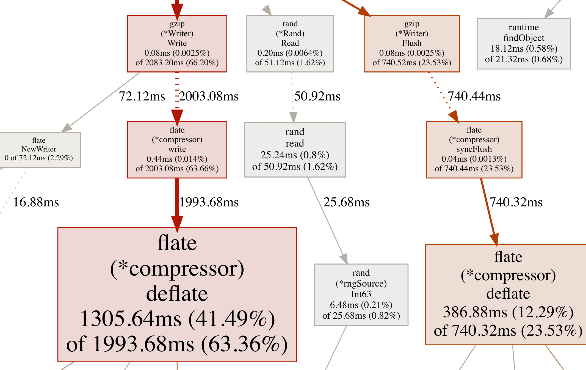
後面會有更詳細的介紹。
2. Prometheus
Prometheus 是一個開源的系統監控和警報工具，主要用於收集和存儲時間序列數據。它與應用程式、伺服器主機、資料庫等進行整合，並透過 Pull 模式獲取各種性能指標數據。
是也能搭配 Push 模式或者 Prometheus remote-write。但都不如 Pull 來的適合。具體一些原因在連結中有提到，Pushgateway 其實會喪失每個監控對象的 up time指標，然後因為沒這個辨識能力，就也不會主動刪除推送給他的指標歷史資料。其次是它本身就是系統中的單點服務，可能會有單點失敗的問題。
系統層級：Prometheus 可以監控整個系統的資源使用情況，包括 CPU、記憶體、磁碟 I/O、網路流量等。
應用層級：它還能監控應用程式的運行情況，例如請求數、錯誤率、響應時間等。
實際應用：在一個分散式系統中，我們可以使用 Prometheus 來收集來自不同服務的性能數據，並且通過定義告警規則，在性能指標異常時及時發送警報。

圖片皆來自OpenTelemetry 入門指南︰建立全面可觀測性架構
3. Grafana
Grafana 是一個開源的數據可視化工具，它常與 Prometheus 搭配使用，用於展示和分析收集到的時間序列數據。Grafana 提供了豐富的圖表選項，可以將數據轉化為圖形化的展示，如折線圖、柱狀圖、熱圖等，幫助我們更直觀地理解系統性能狀況。
Grafana 其實主要精神是提供 Big Tent，即任何遙測資料都能統一在此工具上顯示跟分析。如果是採用 OpenTelemetry 產生的遙測資料，甚至能再 Grafana 中產生關聯，直接進行連結，這樣就能再同一個工具的瀏覽視窗內，連結至相關的遙測信號，查看其內容了。
系統層級：可以使用 Grafana 來可視化系統資源使用情況，並且展示趨勢和異常情況。
應用層級：Grafana 也常用來監控應用程式的各種性能指標，如響應時間、錯誤率、吞吐量等。
實際應用：在進行系統性能優化時，Grafana 可以幫助我們發現長期的性能趨勢，並為性能調整提供依據。
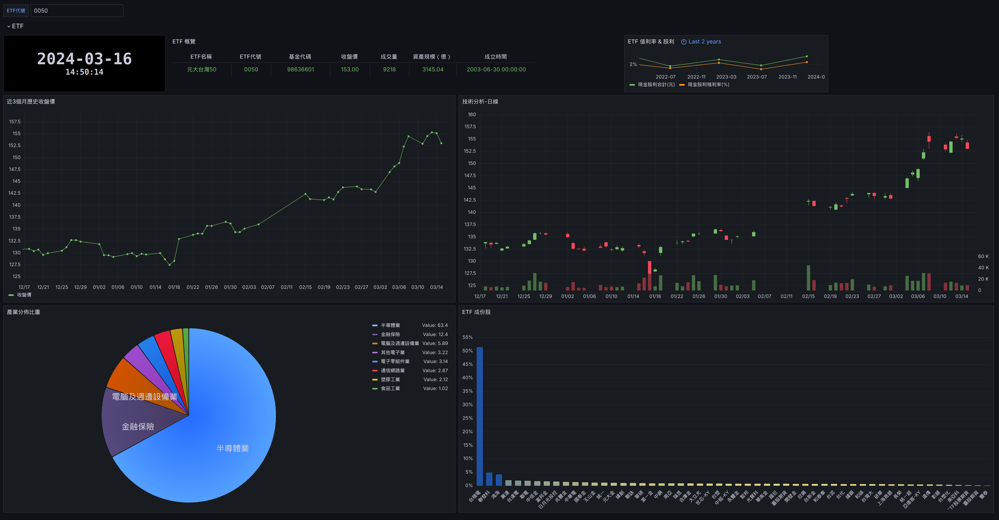
圖片來自OpenTelemetry 入門指南︰建立全面可觀測性架構
4. Flamegraph
Flamegraph 是一種視覺化工具，用於展示程式在不同函數或模塊中的 CPU 時間分佈。它通常與 pprof 等性能分析工具一起使用。Flamegraph的橫軸代表函數的執行順序，縱軸代表函數的堆疊深度，函數框的寬度表示該函數的 CPU 使用時間。
應用層級：主要用於分析應用程式的 CPU 使用情況，幫助開發者快速定位性能瓶頸。
實際應用：在進行程式碼性能調優時，通過生成火焰圖，我們可以直觀地看到哪些函數佔用了大量的 CPU 時間，從而針對性地進行優化。
5. OpenTelemetry
OpenTelemetry 是一個開源的可觀測性框架，用於收集、處理和導出應用程式的遙測信號，包括 traces（、metrics 和 logs。OpenTelemetry 可以幫助我們統一管理來自不同服務和工具的性能數據，從而更全面地了解系統的運行情況。還能自動的在每種遙測信號中注入共同的上下文資訊，方便我們如下圖那樣做關聯。能便於在分析時快速的將所有相關的信號都放在一起分析。這是以往的監控工具所作不到的。
在 OpenTelemetry 截至今日，框架的 Roadmap 已經有把 Profile 列入計畫中。雖然有其他工具可以提供 Profile 但會缺失了與其他遙測信號相互關聯的能力。
應用層級：OpenTelemetry 可以追蹤應用程式的請求路徑，從而了解不同操作的耗時情況和資源使用情況。
系統層級：通過 OpenTelemetry 收集的遙測數據，能夠整合到 Prometheus 或 Grafana 中，實現系統層級的監控和可視化。
實際應用：在一個微服務架構中，OpenTelemetry 可以追蹤跨服務的請求路徑，幫助我們分析和優化整體性能。此外，OpenTelemetry 的路線圖中提到了即將支持的分佈式 Profiling，這將進一步提升系統的觀測能力。此功能將允許用戶收集堆棧和 CPU 配置檔，並將其與分佈式追蹤和其他信號相關聯，從而能夠在分佈式系統中追蹤到具體的性能瓶頸並深入到代碼級別進行分析。這樣的改進使得 OpenTelemetry 成為一個能夠提供更全面可觀測性的工具，能夠真正滿足複雜系統的性能優化需求。
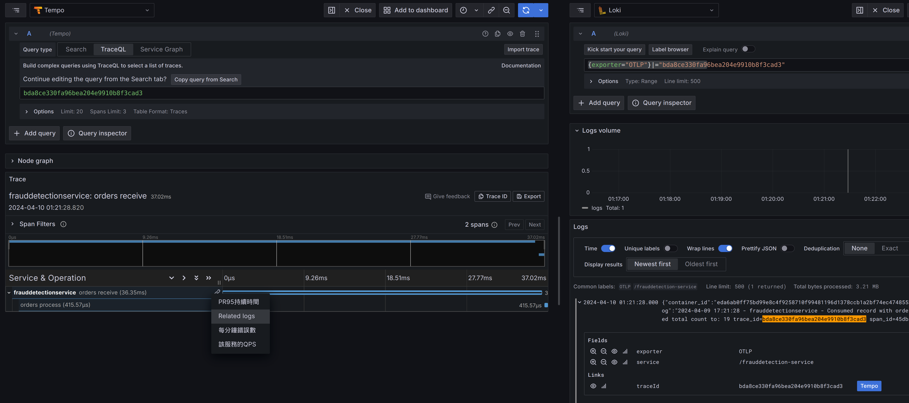
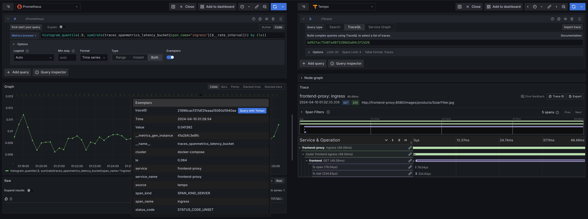
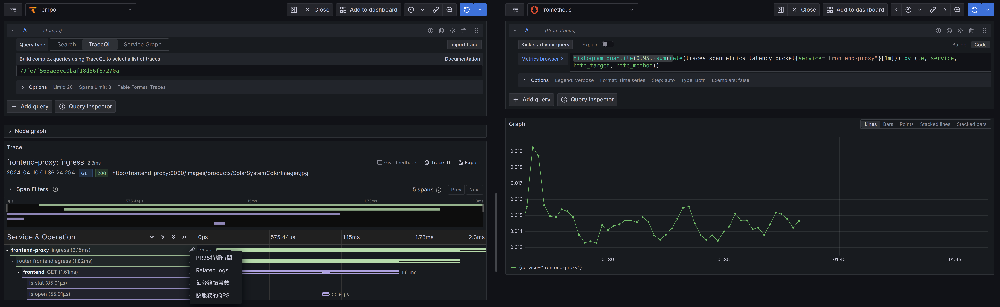
R.E.D. 指標與系統節點全覽圖
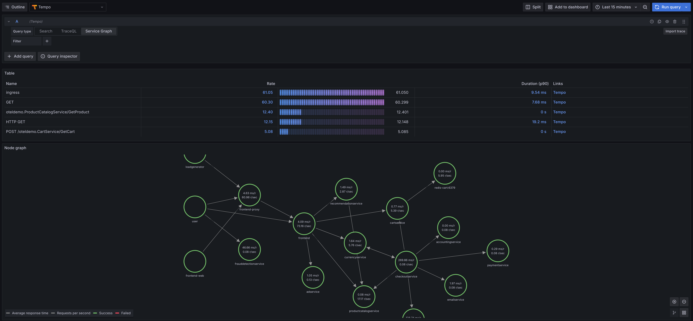
圖片皆來自OpenTelemetry 入門指南︰建立全面可觀測性架構
不同層級的性能監控
這些工具涵蓋了不同層級的性能監控：
應用程式層級：pprof、Flamegraph、OpenTelemetry
系統層級：Prometheus、Grafana、OpenTelemetry
網路層級：Prometheus 也可以用於監控網路流量與延遲，甚至憑證的監控都能作到
通過結合這些工具，我們能夠從多個角度全面掌握系統的性能狀況，並在發現性能問題時迅速作出反應，進行針對性的優化。這也是系統性能工程中必不可少的一環。
性能優化的最佳實踐與常見錯誤
在進行性能優化時，了解和遵循一些最佳實踐可以幫助我們更高效地解決問題，同時避免常見的陷阱。以下是一些在性能優化過程中應該注意的最佳實踐和常見錯誤。
最佳實踐
從測量開始
最佳實踐：在進行任何性能優化之前，首先要對系統的當前性能進行測量。使用如 pprof、Prometheus 等工具來收集基準數據，了解系統的瓶頸所在。優化後再次測量以驗證改進效果。
原因：沒有測量就無法確定問題所在，盲目優化可能會導致更嚴重的性能問題。透過測量，可以精確地定位性能瓶頸，並且提供實際數據來驗證優化是否有效。
資料做決策
最佳實踐：在優化過程中，應該依據收集到的性能數據來做決策，而不是憑直覺或假設。每一個優化步驟都應該有數據支持，並且能夠明確追蹤到性能的改進。
原因：數據驅動的決策能確保優化的有效性，避免浪費時間和資源在無效或低效的優化措施上。此外，數據也能幫助團隊識別其他潛在的問題區域，並進行相應的預防措施。
確保整體視角
最佳實踐：在優化系統性能時，應該從全局出發，考慮系統的所有組件和依賴關係，而不僅僅專注於單一部分。優化應用程式的同時，也要考慮網路、資料庫和其他系統資源。
原因：系統性能往往是由多個因素共同影響的，忽略任何一個部分都可能導致無法達成預期的優化效果。全局視角能幫助團隊識別跨組件的性能瓶頸，並制定更全面的優化策略。
了解流程做改動
最佳實踐：在進行任何改動之前，首先要充分了解整個系統的工作流程和依賴關係。這不僅包括應用層面的邏輯，還涉及網路拓撲、資料庫設計和資源分配等方面。
原因：對系統流程的深入理解有助於預測改動的影響，避免在優化一個部分時無意中引發其他部分的性能問題。改動應該是有計劃且有針對性的，並且要經過多次測試和驗證。
像是帳戶這功能幾乎在什麼軟體服務中都有，他的 API 只會有四個 是最基礎的 : 存款提款(扣款)批量/批次存款批量/批次扣款
其他再多的東西你可能會提， 譬如說 :
- 暫時凍結帳戶 ?
- 關閉帳戶 ?
- 刪除該帳戶 ?
做很簡單， 都只是加個 flag 或者真的刪掉他就好， 但在你動手之前， 先問自己 : "我真的探詢過了我手上所有會來訪問我的系統的 app flow 了嗎 ? 寫下去會不會有後遺症"
如果還沒盤點過流程，就輕易改動，很可能整體服務會產生不如你預期的行為導致不一致的發生。
DDD 的工作坊與很多軟體開發方法，其實都是在鼓勵掌握全局視角，了解流程與依賴關係。
方便做出精準沒有過多風險的決策。
常見錯誤
在性能優化的過程中，開發者可能會犯一些常見的錯誤，這些錯誤可能會導致優化效果不佳，甚至引發新的問題。了解這些常見錯誤可以幫助避免陷入性能優化的陷阱。
1. 過度優化
錯誤描述：過度優化是指在沒有明確性能瓶頸或業務需求的情況下，投入過多時間和資源進行性能優化。
結果：過度優化往往會導致開發時間的浪費，並且可能引入不必要的代碼複雜性，降低系統的可維護性和穩定性。此外，過度優化可能會忽視其他更為重要的功能開發或維護工作。
2. 忽視測量與驗證
錯誤描述：在進行優化之前或之後，沒有進行充分的性能測量與驗證，僅依賴直覺或假設進行優化。
結果：這種做法往往導致無效的優化，甚至可能引發新的性能問題。沒有測量就無法確定優化的實際效果，可能會錯過真正的性能瓶頸，甚至可能導致性能的下降。
3. 只關注單一指標
錯誤描述：在優化過程中，過於關注某一個性能指標（例如 CPU 使用率或回應時間），而忽視了其他可能同樣重要的指標（如記憶體使用、I/O 性能、網路延遲等）。
結果：這樣的優化可能會造成其他部分的性能惡化。例如，過度優化 CPU 使用率可能會增加記憶體使用或 I/O 負荷，導致整體系統性能反而下降。
4. 忽略全局視角
錯誤描述：在優化時僅關注某一部分系統（如應用程式層），而忽視了整個系統的其他組件和依賴關係（如資料庫、網路、外部服務等）。
結果：這種局限性的優化往往無法解決系統的整體性能問題，甚至可能導致新的瓶頸出現。例如，優化了應用層的處理速度，但忽略了資料庫查詢性能，最終導致性能瓶頸轉移到資料庫層。
5. 忽視性能回歸測試
錯誤描述：在優化過程中，沒有進行充分的回歸測試，未能檢查優化後的系統是否引入了新的性能問題或缺陷。
結果：性能回歸測試能確保在優化過程中沒有引入新的問題。忽視這一步驟可能導致系統出現不可預測的問題，降低整體穩定性，並可能在後期運行中產生難以發現和解決的性能問題。
小結
在系統性能工程中，選擇適當的監測工具是優化過程的基礎。從 pprof 到 OpenTelemetry，這些工具涵蓋了應用程式、系統和網路層級的監控，為我們提供了全面的數據支持。在進行性能優化時，遵循測量先行、數據驅動決策和全局視角等最佳實踐，可以幫助我們更精確地識別和解決性能瓶頸。然而，開發者也需要警惕常見的錯誤，如過度優化、忽視測量和驗證、過於集中於單一指標、忽略全局視角，以及缺乏性能回歸測試。通過了解並避免這些錯誤，我們能夠確保優化工作的有效性和系統的穩定性，最終達成提升性能的目標。
D6 性能工程基本定律 - 80/20 法則
- 系列：應該是 Profilling 吧？系列 第 6 篇
- Day：6
- 發佈時間：2024-09-06 00:12:13
- 原文：https://ithelp.ithome.com.tw/articles/10348115
今天來介紹性能工程在進行時，可以遵守這幾天介紹的基本法則，來決定團隊優先進行什麼測試或改善。今天先介紹 80/20 法則。
Pareto Principle 又被稱為 80/20 法則、關鍵少數法則。在很多場景下，大約 20% 的因素操控著 80% 的局面。也就是說，所有的變數中，比較重要的通常只有 20%，是所謂的關鍵少數。其餘 80% 的因素則相對次要。
當我們將 Pareto Principle 應用到 性能工程 或 性能測試 之中，它可以為優化策略提供清晰的指引，幫助我們有效利用資源，解決系統中的關鍵性能瓶頸，並且避免浪費過多精力在次要問題上。以下是一些針對 性能工程 和 性能優化 的擴展應用場景及其具體意義：
性能工程中的 80/20 法則應用場景
-
性能測試覆蓋範圍
- 套用法則：80% 的系統性能問題來自於 20% 的操作場景或路徑。
- 具體意義：在進行性能測試時，應集中測試那些最常被使用的功能或路徑，因為這些部分最有可能暴露性能問題。例如，在負載測試中，優先測試關鍵交易流程或核心業務模塊，而非針對所有場景進行等同測試。這樣可以最大化發現性能瓶頸並優化資源利用。
-
性能瓶頸識別
- 套用法則：80% 的性能瓶頸來自於 20% 的系統資源或程式碼區段。
- 具體意義：在性能分析中，集中資源進行針對性分析，例如使用 Profiling 工具（如 pprof 或 Flamegraph）來找出使用最多 CPU 或 I/O 資源的關鍵程式碼區段，並對其進行針對性優化。這樣可以避免將精力浪費在次要功能模組上，從而更快速地改善系統性能。
-
資料存取與 I/O 優化
- 套用法則：80% 的 I/O 時間集中在 20% 的資料操作上。
- 具體意義：大部分 I/O 操作耗時都來自於少數頻繁訪問的資料或資料表。因此，在優化 I/O 性能時，應優先處理那些頻繁讀寫的資料，進行快取優化、索引調整，或使用 Zero Copy 技術來減少資料複製開銷，從而提升系統整體的 I/O 性能。
冷熱資料分離，也是一種優化方式
- 性能指標收集
- 套用法則：80% 的性能指標意義來自於 20% 的關鍵指標。
- 具體意義：在性能測試和運維監控中，收集和監控所有的指標並不總是必要的。應聚焦於關鍵性能指標，如 CPU 使用率、記憶體占用、請求延遲、吞吐量 等，這些關鍵指標能最直接地反映系統性能的健康狀況。通過優先處理和分析這些指標，能夠大幅提高性能監控的效率。
下一段，有提供常見服務類型的關鍵性能指標
-
性能優化的資源分配
- 套用法則：80% 的性能改進來自於優化 20% 的程式碼或架構設計。
- 具體意義：在進行性能優化時，應根據數據分析找出系統中的熱點程式碼或瓶頸所在，集中精力優化這些部分。這包括優化算法、提升資源管理效率，或解決 CPU 飽和、I/O 阻塞等問題。優化這 20% 的程式碼區段將能顯著提升整體系統的效能，避免浪費大量資源在次要程式碼上。
-
服務擴容與縮容
- 套用法則：80% 的系統資源消耗集中在 20% 的高負載業務上。
- 具體意義：在雲端環境中進行服務擴容或縮容時，應集中分析和處理那 20% 的高負載業務模塊，針對其進行垂直擴容（增加單台伺服器資源）或水平擴容（擴大伺服器集群）。這樣能有效利用資源，並確保系統在高峰期仍能保持穩定性。
題外話，但擴容的上限就是系統容量的最大值，不能在超過，如果能知道系統容量的最大值，能搭配 Rate Limit（Token/Leakey bucket 等來控制）。
-
服務與架構的模組化優化
- 套用法則：80% 的系統延遲可能來自 20% 的服務或模組間通訊交互。
- 具體意義：在分散式系統中，服務間的通訊交互效率會直接影響系統的延遲和回應時間。應優先分析服務間的網路通訓、RPC 等場景，通過優化服務架構、減少網路跳數或增加資料傳輸的批次處理來提升性能。這可以顯著減少整體的網路延遲和系統反應時間。
-
資料庫性能優化
- 套用法則：80% 的資料庫性能問題集中在 20% 的查詢或操作上。
- 具體意義：資料庫的性能瓶頸通常來自於少數幾個查詢或操作，這些查詢可能佔據了大部分的資料庫資源。通過優先優化這 20% 的高負載查詢（例如添加索引、優化查詢語句、使用分區等），可以顯著提升整個系統的資料庫性能，減少查詢延遲。
-
使用者訪問模式分析與優化
- 套用法則：80% 的使用者訪問集中在 20% 的時間段內。
- 具體意義：應根據使用者流量的分佈情況，優先優化使用者高峰期的系統負載。例如，提前進行系統升級、資源調配和負載預測，確保系統在高峰期內仍能穩定運行。此外，使用 自適應擴容 和 CDN 優化 技術，幫助應對流量高峰。
-
自動化運維流程
- 套用法則：80% 的人工手動運維操作來自於 20% 的重複性任務。
- 具體意義：應優先將重複性高、影響範圍廣的手動操作自動化，例如自動化部署、持續整合與持續交付等。這樣可以顯著提升運維效率，降低手動操作帶來的人為錯誤風險。
-
安全漏洞修補
- 套用法則：80% 的安全漏洞集中在大約 20% 的程式碼路徑或配置上
- 具體意義：應優先檢查並修補這些容易暴露漏洞的程式碼區段或配置項。
這些場景進一步擴展了 Pareto Principle 的應用範疇，使得法則在軟體開發的各個層面都能發揮其影響力。通過識別和優先處理這些「關鍵少數」，可以在資源有限的情況下，取得最大化的效率和效果。
這一法則的核心價值在於：先解決 20% 最關鍵的問題，便能達到 80% 的效果。而剩餘 80% 的問題，即便投入大量資源，也只能獲得相對有限的改進。
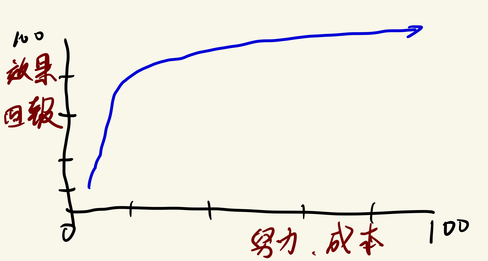
服務提供的各種功能中，只要跟營收或所謂的核心競爭力有直接影響關係的功能，肯定是關鍵部份，絕對是要關注相關問題來處理並持續優化的。
各種服務類型的關鍵性能指標
針對不同的服務類型，應根據其特性來選擇關鍵性能指標。以下是各類服務的常見性能指標，根據 Pareto Principle 的應用，我們可以聚焦於這些關鍵指標來提高性能監控的效率：
-
API 服務
API 服務的核心是為客戶端提供穩定、快速的資料訪問。因此，以下關鍵指標最能反映 API 服務的健康狀況：- 請求延遲（Latency）：反映 API 請求處理的時間，通常用於衡量使用者體驗。
- 吞吐量（Throughput）：每秒處理的請求數，反映 API 的處理能力。
- 錯誤率（Error Rate）：失敗請求的比例，反映 API 服務的穩定性。
- CPU 使用率：反映服務的資源消耗情況，過高的使用率可能表明性能瓶頸。
- 記憶體使用率：反映應用的記憶體管理情況，過高的記憶體使用可能會導致性能下降或 OOM（Out of Memory）。
- API 回應時間的分佈：查看請求回應時間的不同分佈區間，幫助定位潛在的性能問題。
-
- 資料庫服務
資料庫的核心性能指標與數據的讀取、寫入、查詢效率密切相關。關鍵性能指標包括：
- 查詢延遲（Query Latency）：單次查詢的處理時間，反映資料庫的查詢性能。
- 查詢吞吐量（Query Throughput）：每秒處理的查詢數量，反映資料庫的並發能力。
- 索引命中率（Index Hit Rate）：反映查詢是否有效利用了索引，過低的命中率可能會導致性能問題。
- 慢查詢（Slow Queries）：執行時間超過預定閾值的查詢次數，這些查詢往往會拖慢整個系統。
- 資料庫連接數：反映資料庫連接池的健康狀況，過多的連接數可能導致連接池資源耗盡。
- IOPS（Input/Output Operations Per Second）：讀寫操作的速率，反映資料庫的 I/O 性能，特別是當資料量較大時。
- 資料庫服務
-
快取服務（Cache Service）
快取服務的性能直接影響系統的響應時間和資源使用效率。關鍵指標包括：- 快取命中率（Cache Hit Rate）：成功從快取中獲取數據的比例，反映快取的有效性。
- 快取未命中率（Cache Miss Rate）：無法從快取中獲取數據的比例，過高的未命中率可能表明快取配置不當。
- 記憶體使用率：快取服務通常依賴內存，應確保記憶體使用合理。
- 吞吐量：每秒處理的讀取/寫入操作次數，反映快取的性能表現。
- 延遲（Latency）：快取服務處理每次請求的時間，應盡量保持低延遲以提高整體系統性能。
-
Message Queue
Message Queue 的性能對於確保系統內部組件之間的非同步通訊至關重要。關鍵性能指標包括：- 訊息吞吐量（Message Throughput）：每秒處理的訊息數，反映隊列的處理能力。
- 訊息延遲（Message Latency）：訊息從入列到被消費的時間，反映系統的通信效率。
- 訊息積壓（Message Backlog）：未處理的訊息數量，積壓增多表明消費者無法及時處理訊息。
- 消費失敗率（Consumption Failure Rate）：消費訊息時的失敗比例，過高的失敗率可能會引發訊息丟 * 失或重複處理問題。
- 訊息重試次數：訊息處理失敗後的重試次數，過高的重試次數表明系統有潛在的處理問題。
-
控制後台（Admin Console）
控制後台主要負責系統管理與監控，關鍵性能指標應包括數據響應和系統管理效率：- 回應時間（Response Time）：後台每次操作的回應速度，反映管理操作的及時性。
- API 使用率：後台調用的 API 次數，反映管理活動的頻繁程度。
- 後台查詢延遲：系統管理所進行的各種查詢操作的延遲情況，延遲過高可能影響管理效率。
- 資源消耗（CPU、記憶體使用）：確保後台管理不會占用過多系統資源。
-
排程服務（Scheduled Tasks / Cron Jobs）
排程服務負責定期執行任務，這些任務的性能指標往往與任務的成功率和執行效率相關：- 任務執行成功率（Task Success Rate）：反映排程任務的執行成功率，失敗率過高可能需要深入分析原因。
- 任務延遲（Task Latency）：從任務排程到實際執行的延遲，反映排程的準時性。
- 任務執行時間（Task Execution Time）：每個排程任務的執行時間，應確保長時間運行的任務不影響系統性能。
- 錯誤率（Error Rate）：執行任務中的錯誤數量，應及時排查和解決錯誤問題。
- 資源使用（Resource Usage）：排程任務的 CPU 和記憶體使用情況，確保不會過度消耗系統資源。
不同服務類型對性能指標的要求不同，這是因為每種類型都有主要提供給使用者的核心價值，根據 Pareto Principle，我們可以聚焦於最能反映系統健康狀況的 20% 關鍵指標，這些指標能顯著影響整體性能和系統穩定性。這樣做能夠最大化地提升性能監控的效率，幫助團隊及時發現並解決潛在的性能瓶頸問題。
小結
Pareto Principle 在性能工程和性能測試中的應用，能幫助開發者和運維團隊集中精力處理對系統影響最大，但也相對明確範圍較小可控制的問題，從而更有效地提升系統整體性能。這一法則指導我們優先解決 20% 關鍵的性能瓶頸，這些瓶頸往往對系統的 80% 性能影響負責。透過合理應用這一法則，我們可以在有限的資源和時間內，取得顯著的效能提升，並且避免過度優化或資源浪費。
在性能測試、優化和運維自動化中，Pareto Principle 提供了一個強大的策略性框架，幫助團隊識別關鍵少數，優化最具影響力的部分，達到事半功倍的效果。
D7 性能工程基本定律 - Amdahl's Law
- 系列：應該是 Profilling 吧？系列 第 7 篇
- Day：7
- 發佈時間：2024-09-07 02:50:11
- 原文：https://ithelp.ithome.com.tw/articles/10348351
昨天我們討論了 Pareto Principle，強調在各種服務類型中的關鍵性能指標如何遵循 80/20 法則，並指導我們聚焦在少數會產生最多影響的問題上。
今天，我們將進一步探討 Amdahl's Law，其著重於系統在多核心併行處理時的性能提升限制。透過這個法則，我們可以更深入理解，當我們嘗試優化多核系統性能時，哪些部分能夠實現最大化的加速，哪些部分卻是無法簡單透過增加硬體來解決的。這正如我們在生活中做兩件事情的例子：洗衣服和曬衣服，即使曬衣服的速度加快了，但如果不對洗衣服進行優化，總時長的提升也會受限。
接下來，我們將進一步探討如何應用 Amdahl's Law 來優化程式的併行能力。
Amdahl's Law
衡量 CPU 運行併發處理時總體性能的提昇度。
用個生活例子洗衣服與曬衣浮來說明，洗衣服與晒衣服都需要 10 分鐘才能完成，總時長需要 20 分鐘才能完成這件事。
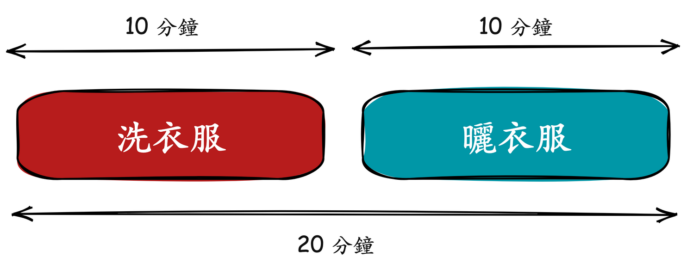
如果我們能把晒衣服給加快成 5 分鐘就能完成。晒衣服的速度就提昇了 2倍。總時長來到 15 分鐘。
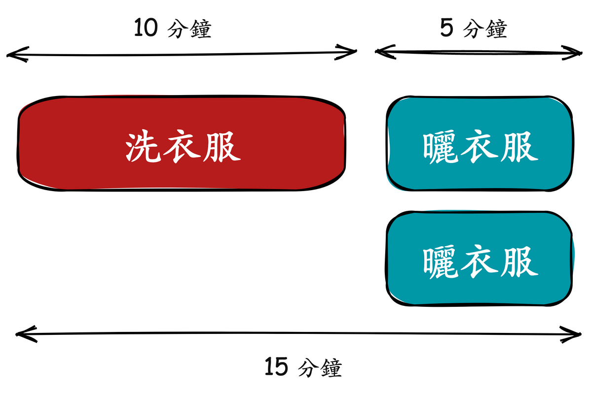
這樣的思維繼續優化下去。都需要至少 10 分鐘才能完成這整件事情，是因為我們沒對洗衣服進行優化。所以整體加速比並不會高過 2 。
又例如一個大型 e-commerce 平台，每秒處理數千個訂單，訂單處理系統中的某些部分（如支付流程）必須是串行的，而某些部分（如物流分配）可以併行處理。這樣的場景能夠更具體地說明 Amdahl's Law 如何影響系統設計和硬體資源投資的決策。
許多線上支付的流程也都必須對同一個帳號進行串行處理，不然一定會出現同時要扣款先檢查餘額，但可能兩個都檢查覺得自己餘額夠扣款支付，結果其實餘額只夠一個扣款。但如果將可用餘額或該帳戶給進行鎖定，那麼同帳戶的操作就只能等前面完成。
同帳戶同時有多筆在不同設備中支付，不覺得也很怪嘛 XD
但自動化交易就是能這樣，因為是程式執行並觸發對方的支付扣款 API 的。
又比如超商排隊結帳，兩個櫃台人員每次就只能處理兩筆結帳動作。但如果有第三位店員可能可以協助一次取很多網購的物品給櫃台去結帳。
而根據 Amdahl's Law 描述，如果我們能使用多個 CPU 來平行處理以達到加速時，其實總時常還是受限於程式所需的串行時間百分比。比如一段處理邏輯其中的 50%只能串行，而其他一半可以平行，那麼最大的加速比就是 2，不會更高了，無論買再多顆 CPU 或多快都不會將加速比提高到大於 2。
當我們面對系統瓶頸時，盲目地增加硬體資源並不總能解決問題，這是 Amdahl's Law 的關鍵。在當前的 DevOps 或性能優化計畫中，開發者需要平衡增加硬體資源（如 CPU 數量）和對程式碼進行深層次的性能優化之間的取捨。因此如果在這種情況下，改善程式碼串行流程與邏輯的可能會比無腦使用多核心平行處理來的有用。
這裡提供公式能計算，如果整體執行時間長度是 1，其中要進行優化加速的功能模組運行時長是 P。如果對這模組的加速比是 N，那麼優化加速後的時間會是
如果要與舊有線上運行的時間相比來算出加速比，公式如下
所以 Amdahl's Law 主要是給我們方向，
- 優先優化佔用時間最常的功能模組/流程，因為這樣可以最大限度的提昇加速比。
- 針對一個性能優化的計畫，我們可以根據這樣的計算給出準確的效果預估和整體系統的性能預算。

上圖顯示的是 Amdahl's Law 的視覺化結果。它描述了在某種情況下，增加處理器數量對系統性能（加速比）的影響。
-
X軸 代表處理器的數量，從 1 到 65536。
-
Y軸 代表加速比（Speedup），即增加處理器數量後系統的性能提升程度。
-
圖中有四條不同的曲線，分別表示在不同的「可併行比例」（Parallel portion）下，隨著處理器數量增加所能達到的加速比：
- 50%（淺藍色實線）：當程序有 50% 可以併行執行時，隨著處理器數量的增加，加速比增加有限，並在處理器數量增加到一定程度後幾乎不再上升。
- 75%（紅色虛線）：當程序有 75% 可以併行執行時，加速比會比 50% 高，但依然會隨著處理器數量增加而趨於平緩。
- 90%（紫色點劃線）：當程序有 90% 可以併行執行時，加速效果更加明顯，但同樣隨著處理器數量的增加，最終加速比也會趨於飽和。
- 95%（綠色虛線）：當程序有 95% 可以併行執行時，加速比相對前面幾個比例更高，但最終也會達到極限。
能發現隨著可併行比例的提高（從 50% 到 95%），可以看到加速比有明顯的提升，但無論可併行比例多高，最終都會出現加速比飽和的現象，即增加更多的處理器已經無法帶來顯著的性能提升。
這個現象表明，即使是高度可平行的程序，在某一點之後，非平行部分（程序中無法平行的部分）會成為整個系統性能提升的瓶頸。
這張圖旨在說明 Amdahl's Law 的核心：即使增加處理器數量也有其效果的上限，這個上限受限於程序中無法併行的部分。
與 Profiling 的關聯：
Profiling 是一種技術，用來分析應用程式的性能瓶頸，找出哪部分程式碼消耗了最多的資源或時間。通過 Profiling，開發者可以更清楚地了解哪些部分是系統的「熱點」，即主要的串行瓶頸。這正是 Amdahl's Law 中需要優化的部分。 根據 Amdahl's Law，只有優化了這些佔用大量時間的部分，才能最大限度地提升系統的整體性能。因此，Profiling 給出了明確的優化方向：找到最需要改進的瓶頸程式碼部分進行優化，而不是盲目地增加硬體資源。
每一個性能優化決策不應該依賴於假設，而是應根據 Profiling 和 Observability 收集的數據進行判斷。> 在一個優化計畫中，應該對每個關鍵模組的串行時間、資源消耗等數據進行詳細測量。
根據 Amdahl's Law 的計算，優先集中資源在那些會產生最大提升的部分，而避免浪費資源在無效的優化上。
與 Observability 的關聯：
Observability 涵蓋了系統的可觀測性，包括 Logging、Tracing、Metrics 和 Profiling。Observability 允許我們在分佈式系統中跟蹤和分析系統的行為及其性能表現。 透過 Observability，我們可以在運行時精確地看到哪部分系統是串行的、哪部分是併行的，並且能夠對這些部分進行實時的監控和分析。這樣可以及時發現和修正可能的性能瓶頸，並驗證所做的優化是否真正有效。 同時，Observability 讓我們能夠在不同環境中觀察到 Amdahl's Law 所描述的現象，並提供足夠的數據來預測系統在不同硬體配置下的行為。
小結
Amdahl's Law 可以作為性能優化的理論基礎，指導開發者通過 Profiling 來找出最有效的優化點，而 Observability 提供了實施這些優化後的反饋回路，幫助驗證優化的成效。 在實際的系統中，藉由 Observability 和 Profiling，可以確保我們所做的每一個性能優化都是基於數據驅動的決策，並能夠在系統整體性能中看到顯著提升。 這樣的結合可以幫助你在性能優化和可觀測性建設中達到更好的效果，從而確保系統能夠在現有資源下達到最佳性能表現。
明天會引入其他相關理論如 Little's Law 和 Utilization Law，來幫助我們進行更全面的性能分析。
D8 性能工程基本定律 - 排隊理論
- 系列：應該是 Profilling 吧？系列 第 8 篇
- Day：8
- 發佈時間：2024-09-08 00:17:27
- 原文：https://ithelp.ithome.com.tw/articles/10348486
在前兩天的討論中，我們探討了 Pareto Principle 和 Amdahl's Law，前者強調了在性能優化中聚焦於少數能帶來最大影響的因素，而後者讓我們理解了並行處理的極限和瓶頸。今天，讓我們將焦點轉向 Little's Law，它通過排隊理論為我們揭示了系統在穩定狀態下的運行特徵，幫助我們分析系統的容量和等待時間。這與之前的討論相輔相成，進一步豐富我們對系統性能分析的理解。
接下來我們將詳細探討 Little's Law 的應用，並結合實際例子，說明如何透過這個法則來設計和優化系統性能。
Little's Law
Little's Law 是性能分析和基於排隊理論中的基本定律，適用於任何穩定的系統或流程中、非搶佔式（先來先服務，不能插隊）的系統中，該系統或流程存在進入、處理和離開三個基本環節。這個定律可以幫助我們理解系統中請求或客戶的平均數量、到達速率和平均等待時間之間的關係。
適用條件
Little's Law 有幾個重要的前提條件：
- 穩定系統: 系統必須是穩定的，即長時間內進入系統的請求數量與離開系統的請求數量相等，否則L會無限增長。
- FIFO（先進先出）或其他服務策略: 雖然Little's Law不依賴於具體的服務策略，但在FIFO（先進先出）的策略下，W的計算更為簡單和直接。
- 平均值: Little's Law 基於長期平均值的概念，因此它描述的是在長期穩定狀態下的系統行為。
其內容為：在一個穩定的系統中，長期的平均使用者人數（L），等於長期的有效抵達率（λ），乘以顧客在這個系統中平均的等待時間（W）； 或者，我們可以用一個代數式來表達： L = λW
參數解釋
- L (Average number of items in the system): 系統中的平均請求數量，也可以理解為在系統中同時存在的平均客戶數量（工作進行量 (WIP)）。在計算機系統中，這可以表示為當前正在處理或等待處理的請求數。
- λ (Arrival rate): 系統的到達速率，即每單位時間內到達系統的請求數量（通常以每秒請求數，RPS，表示）。這表示系統中流入的客戶或請求的速率，或換個說法每個時間單位完成的物品數量。
- W (Average time in the system): 請求在系統中的平均時間，這包括了從請求進入系統到離開系統的整個過程時間，包括排隊時間和實際處理時間。
是不是看不懂？換個角度就容易理解了。如下圖所示，使用者按照一定的速度持續地請求我們的系統，假設這個速度是每分鐘 λ 個使用者。每個使用者的請求在系統的平均處理時間是 W 分鐘。
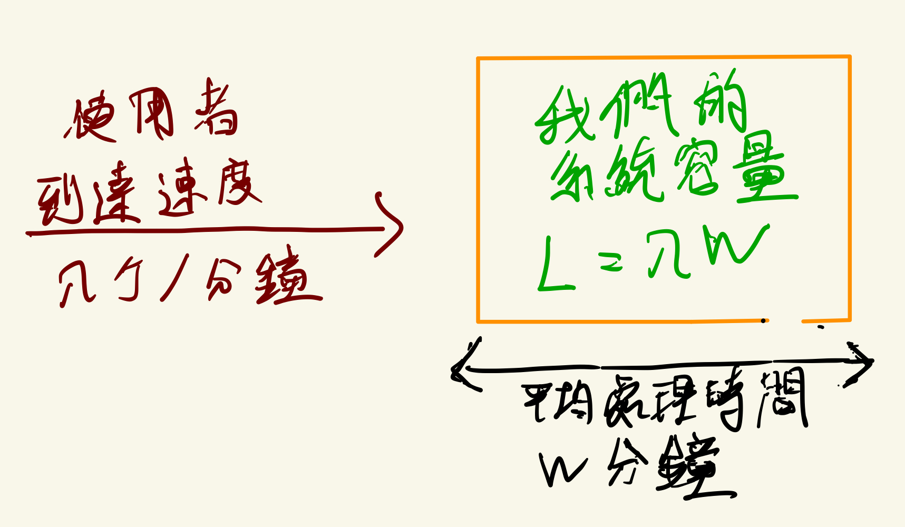
按照這法則計算，如果系統處理速度恰好滿足使用者到速度的話，一方面系統就不會有空閒浪費，且使用者也不需要排隊在系統外等待。在這樣的穩定狀態下，我們系統的總容量恰好等於系統裡面正在處理的使用者請求數量。也就剛好 L = λW。
如果我們的系統面臨著使用者訪問速度是每秒鐘 1000 個使用者，每個使用者在我們服務花費的平均時間是 0.2 秒。那麼根據 little's law 我們的系統將容納 1000 * 0.2 = 200 個使用者請求。這表示系統中平均同時有 200 個使用者請求在被處理或等待處理。但如果使用者的併發訪問速度增大到每分鐘 2000。
在這種情況下，我們能應對的方法如下︰
- 把使用者的處理時間減半，從 0.2 秒減半成 0.1 秒。這樣可保持系統容量不變。因為處理時間減半，但剛好可以應對訪問速率加倍的請求。系統容量等於 2000 * 0.1 = 200。
- 擴大系統容量。維持處理時間不變還是 0.2 秒。但因為使用者訪問速度加倍了，所以系統容量也要加倍，變成 4000。假如本來的系統背後是5台主機，那麼現在就變成需要 10 台主機。
應用範例
應用範例出處影片 Little's Law - How to Calculate WIP, Lead Time and Throughput Rate | Rowtons Training
1. 工廠生產流程
一家工廠每天生產 1000 個產品，整個生產過程需要 5 天。根據 Little's Law，我們可以使用公式 L = λW 來計算系統中的最小工作進行量 (WIP)。
λ 是吞吐率，即每天生產的產品數量 (1000 個)。
W 是產品在系統中的生產時間，即 5 天。
因此，L = 1000 * 5 = 5000。這意味著在任何時刻，這家工廠至少需要 5000 個產品正在生產或等待生產，才能保持系統正常運作。如果覺得 WIP 過高，工廠可以選擇：
減少吞吐率，即每天減少生產的產品數量。
減少生產時間，例如將 5 天縮短為 3 天，這樣可以減少系統中的 WIP。
2. 電話客服中心
在影片的第二個範例中，說明了一個客服中心的運作。該中心每小時處理 1000 位客戶，系統中同時有 500 位客戶正在等待或接受服務。根據 Little's Law，我們要計算每個客戶在系統中的平均等待時間。
L 是系統中的客戶數量，即 500 位客戶。
λ 是每小時處理的客戶數量 (1000 位)。
因此，W = L / λ = 500 / 1000 = 0.5 小時，也就是每位客戶平均需要等待 30 分鐘來完成整個流程。如果想要縮短等待時間，客服中心可以：
減少系統中的客戶數量 (L)，這可以通過減少同時處理的客戶數來實現。
提高吞吐率 (λ)，即加快處理速度，如增加客服人員的數量來處理更多客戶。
從這裡的範例與討論就能看到 Little's Law 在優化工作中的兩種用途︰
- 協助我們設計性能測試的環境。如果我們需要模擬一個固定容量的環境時，這法則能協助我們設定使用者請求速度與每個請求的處理時間。
- 協助我們驗證測試結果的正確性。
在深入探討 Little's Law 之後，我們已經了解了系統中請求數量、到達速率和等待時間之間的關係。這些資訊能幫助我們理解系統在穩定狀態下的表現，尤其是在高負載情況下的行為。
然而，僅僅瞭解系統中的請求數量和等待時間還不足以完全掌握系統的性能狀況。接下來，我們需要關注的是系統資源的利用率，特別是核心資源（如 CPU、記憶體、I/O）的使用情況。這正是 Utilization Law 發揮作用的地方，它能夠幫助我們深入理解系統在不同負載下的行為，並揭示系統何時會達到資源的極限。
透過結合 Little's Law 和 Utilization Law，我們可以更全面地分析系統性能，不僅知道系統中的請求數量和等待時間，還能掌握資源的利用狀況，從而進行有效的性能優化。
Utilization Law
Utilization Law 是計算機系統性能分析中的重要法則，描述系統資源的利用率。它表示系統中資源的繁忙程度，尤其是 CPU、I/O 設備等關鍵資源。當系統利用率 U 接近 1（100%）時，這意味著資源幾乎完全被佔用，此時任何額外的負載都可能導致系統性能下降，甚至是崩潰。
公式與參數解釋
U=λS
- U (Utilization): 系統的利用率，是一個從0到1（或0%到100%）的數值，表示資源在時間範圍內的使用情況。U=1表示資源完全被佔用，U=0表示資源閒置。
- λ (Arrival rate): 與Little's Law中的 λ 相同，表示系統的到達速率（每秒請求數）。
- S (Service time): 每個請求的平均服務時間，即資源處理一個請求所需的時間。
適用條件
線性關係: Utilization Law假設服務時間和到達速率之間存在線性關係，這在大多數情況下是合理的。
資源單一性: Utilization Law通常應用於單個資源的利用率計算，而不適合直接用於分析多個資源的複合利用率。
理想化情境: 利用率通常在理想情境下計算，但實際情況可能更為複雜，包括資源的上下線時間、不同優先級的請求等。
應用範例
假設一個系統的處理能力是每秒100個請求（λ=100 RPS），每個請求的平均服務時間為0.02秒（S=0.02秒），則該系統的CPU利用率為：
𝑈 = 100 × 0.02 = 2
這表示系統的理論利用率為200%，但實際上，當利用率超過100%時，系統就會開始產生延遲或瓶頸，這表明系統處於超負荷狀態。
綜合應用與實例說明
在實際應用中，Little's Law 和 Utilization Law 可以結合使用來分析和優化系統性能。以下是一個綜合應用的例子：
綜合範例
1. 支付系統
假設一個在線支付系統，其到達速率（λ）為500 RPS，每個請求的平均服務時間（S）為0.005秒。利用Utilization Law，我們可以計算出系統的CPU利用率（U）：
𝑈 = 500 × 0.005 = 2.5
這意味著系統的利用率為250%，明顯超過了100%的合理上限，因此系統處於過載狀態，可能會導致處理延遲或請求排隊。
接著，我們利用Little's Law來分析系統中的平均請求數量和平均等待時間。如果我們觀察到系統中同時存在的請求數量（L）約為50，則可以計算平均等待時間（W）：
𝑊 =𝐿 / 𝜆 = 50 / 500 = 0.1秒
這意味著每個請求在系統中平均需要等待0.1秒來完成處理。如果這個等待時間超過了用戶的接受範圍，則需要考慮升級系統資源或優化服務流程。
2. 停車場與高速公路
線性關係: 在停車場和高速公路的情境下，Utilization Law 假設服務時間（車輛停留時間或行駛時間）和到達速率（車輛進入停車場或高速公路的速率）之間存在線性關係。當車輛進入的速率增加時，總體的利用率會隨之提高，這在大多數情況下是合理的。
資源單一性: Utilization Law 假設停車場或高速公路的容量是一個單一資源，通常是停車位數量或車道容量。每輛車在系統中的停留時間是唯一影響系統的變數，這樣的單一資源是 Utilization Law 最適合應用的場景。
理想化情境: 在停車場和高速公路的情況下，系統利用率的計算基於理想狀態下的資源分配。然而，實際情況中可能存在變數，例如停車場可能有不同行駛路徑的複雜性，高速公路可能會因交通事故或施工等因素而影響車輛通行速率。
停車場
假設一個停車場有 100 個停車位，車輛到達速率為每小時 50 輛（λ=50），每輛車平均停留 2 小時（S=2 小時）。根據 Utilization Law，我們可以計算出停車場的利用率（U）：
𝑈 = 50 × 2 = 100%
這表示停車場已經達到 100% 的利用率，所有停車位都被佔用。如果更多的車輛到達，則會開始出現排隊等候車位的現象。
然而，若車輛的停留時間增加到 3 小時，即使車輛到達速率不變，利用率也會超過 100%，導致系統無法滿足所有進入需求，停車場將出現過載狀態，並產生長時間的等待。
又假設一個停車場可以容納 50 輛車（容量為 50 個停車位），平均每輛車停留 1.5 小時，且每小時有 30 輛車進入停車場。我們利用 Utilization Law 計算該系統的利用率：
𝑈 = 30 × 1.5 / 50 = 90%
此時，利用率為 90%，仍有空餘的停車位。然而，若車輛停留時間延長到 2 小時，或每小時進入的車輛數增加，利用率將超過 100%，導致系統過載，車輛無法立即進入停車場，必須等待。
高速公路
假設一條高速公路有 3 條車道，每小時可處理 600 輛車（每條車道 200 輛）。車輛的行駛速率為每小時 60 英里，行駛時間為 1 小時（S=1 小時），車輛到達速率為每小時 550 輛（λ=550）。
𝑈 = 550 × 1 / 600 = 91.67%
在這種情況下，利用率接近 100%，接近飽和狀態。若車流量進一步增加，車道容量將達到最大，並導致車輛減速，增加行駛時間，最終形成瓶頸。
在高速公路上，當車流量增加或行駛速度變慢時，會導致高速公路的擁堵，減少整體吞吐量並增加延遲。通過這些法則，我們可以分析停車場和高速公路的運營，並找出最佳的資源利用和優化方案。
儘管停車場和高速公路的情境雖然不同，但它們的行為模式在 Utilization Law 下是類似的。當系統利用率達到 100% 時，無論是停車場還是高速公路，都會出現瓶頸效應，導致等待時間大幅增加。
當停車場滿載時，進入的車輛會被迫在外面等待，類似於高速公路接近飽和時，車輛速度減慢，等待更長的時間才能通過擁堵路段。因此，管理這些系統時，必須控制利用率，避免超過 100%。
Little's Law 與 Utilization Law 的綜合應用
在實際應用中，Little's Law 和 Utilization Law 是相互補充的。Little's Law 幫助我們理解系統中請求的數量和等待時間，而 Utilization Law 則告訴我們資源的使用情況。
例如，當我們發現系統中的平均請求數量（L）大於預期時，我們可以通過檢查系統的利用率（U）來了解是否因為資源過度利用導致的等待時間增加。如果 U 接近或超過1，則表明系統資源已經達到了極限，這就需要我們考慮升級資源或優化處理流程來降低 S 或增加系統的處理能力。
當這兩個定律結合使用時，我們能夠全面地分析系統的性能，識別出哪些資源過度使用，哪些部分的處理時間過長，從而做出更明智的優化決策。這樣，我們可以在資源有限的情況下，通過調整系統資源和優化處理流程，最大限度地提升系統的效能，確保它在高負載下依然運行良好。
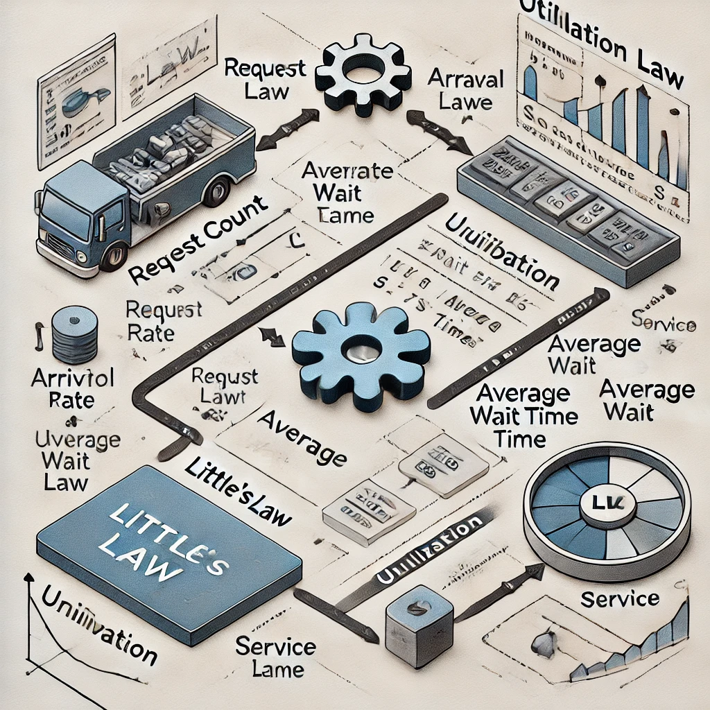
小結
透過 Little's Law 和 Utilization Law，我們能更深入理解系統的性能表現。Little's Law 幫助我們量化了系統中請求的數量、到達速率和等待時間之間的關係，從而提供了一個穩定狀態運行下的系統基準（Baseline）。這個基準反映了系統在日常運行中的常態表現。Baseline 可以作為我們監控系統性能的參考點，用來衡量系統是否按預期表現，並協助發現系統負載異常或效率低下的情況。
當系統負載逐漸增加時，Utilization Law 提供了關於資源使用率的洞見，告訴我們系統何時會接近資源飽和點。這使我們能夠在資源利用接近極限時及時進行調整或擴展資源，從而防止系統崩潰或性能急劇下降。
總結來說，透過 Little's Law 確立的 Baseline，持續關注並更新 Baseline，是性能優化的基石。透過不斷優化 Baseline 的表現，我們可以確保系統在日常運行中的穩定性持續提升。實施優化策略後，借助 Metrics、Logs 和 Traces 持續監控系統表現，形成反饋回路，進行持續改進。此外，隨著負載變化，動態調整資源分配（如 Auto scale）也是保持系統高效運行的重要策略。
接下來，我們可以基於這些理論探討更多性能優化的實際策略，進一步完善我們的系統設計與優化計畫。
D9 性能的外部指標
- 系列：應該是 Profilling 吧？系列 第 9 篇
- Day：9
- 發佈時間：2024-09-09 00:28:06
- 原文：https://ithelp.ithome.com.tw/articles/10348720
當我們回顧前幾天討論的性能工程基本定律時，80/20 法則（Pareto Principle）強調了集中資源於能產生最大影響的關鍵部分，而 Amdahl's Law 讓我們了解了並行處理的局限性，以及排隊理論（Little's Law）揭示了系統負載與等待時間之間的關係。
今天，我們將轉向外部性能指標，這些指標是我們最直接觀察到的系統行為，能夠幫助我們從用戶的角度評估系統的整體性能。外部指標不僅反映了系統的運行效率，還直接影響使用者的體驗，其中包括 Service Latency、Throughput、錯誤率 和 Resource Utilization。這些指標為我們提供了具體的衡量標準，幫助我們識別瓶頸並進行系統優化。
接下來，我們將詳細討論這些指標，並將它們與前幾天討論的基本定律進行銜接，形成一個更完整的性能分析框架。
在性能分析中，外部指標是最直觀反映系統或應用程式性能的方式。這些指標通常用來描述使用者體驗和系統的運行效率，其中包括 Service Latency、Throughput、錯誤率 和 Resource Utilization。
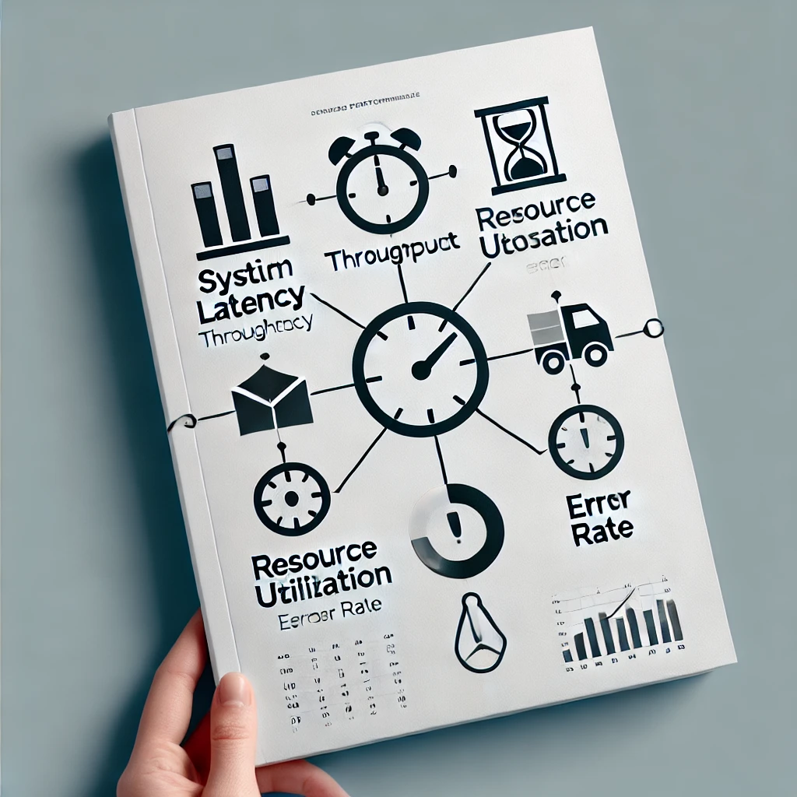
Service Latency
處理延遲指的是從使用者發出請求到收到回應所需的時間。這個指標直接影響使用者體驗，因此在性能測試中，我們通常進行端到端（E2E）的測試，而不是僅僅測試系統架構中的某一個節點。這樣可以確保我們捕捉到整體性能表現，而不僅僅是某個局部的表現。
延遲的增加可能反映了系統內部的多種潛在問題，例如資料庫查詢速度變慢、後端服務之間的通訊效率降低，甚至是應用層面的資源鎖競爭。這些問題都會導致使用者在發出請求後需要等待更長的時間來獲得回應。因此，延遲分析不僅能幫助我們了解使用者體驗，還能讓我們深入挖掘系統內部的性能瓶頸所在。
所以通常我們會使用 Prometheus 的 Histogram 形式搭配 Grafana 的 Time Series 或 Heatmap 圖表類型來顯示服務的處理延遲。
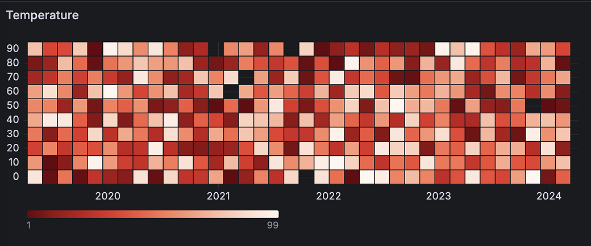
Throughput
吞吐量，指的是單位時間內可以成功處理的請求數量或完成的工作任務數量。這指標與 Latency 相輔相成，只是一個注重時間，一個注重空間，也就是系統容量。通常一個系統的外部性能主要就是受限於這兩個條件的約束，缺一不可。
相輔相成的意思是這兩個指標通常要一起來分析。如果一個電商系統每秒可以提供十萬吞吐量，也就是它能同時服務約十萬的使用者。但是使用者的處理延遲是5分鐘以上，那麼這十萬吞吐量在這樣的表現下是毫無意義的，因為沒有使用者能接受每個請求處理幾乎都要等5分鐘在那邊排隊。
反之，如果延遲很低，但吞吐量超少，這樣的系統也不太好用。所以，外部服務必然受到這兩個條件的同時作用。
通常我們會使用 Prometheus 的 Histogram 或 Gauge 形式搭配 Grafana 的 Time Series 或 Gauge 圖表類型來顯示服務的 Throughput。
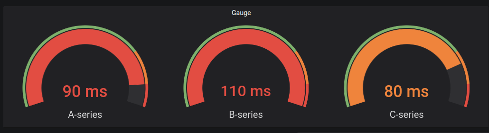
吞吐量的期望值設定
根據您提供的資料，吞吐量期望值可根據具體業務和應用場景進行設置。例如，在 Web 應用中，吞吐量可以用每秒請求數（RPS）來衡量，而在資料庫應用中，則可以用每秒事務數（TPS）或每秒查詢數（QPS）來表示。這些指標幫助我們量化系統在不同負載下的處理能力。
Resource Utilization
從上面就能知道系統和各自的服務都需要容量來支撐的，所以資源利用率就至關重要了，因為這直接決定了系統和各自服務的運營成本。如果配置給一個服務 1 Core+2GB Ram 但卻最高只用到 20%，但雲端供應商還是會收 100%的費用的，就算是地端該機器的成本也已經在購買時就投入了。
這一個指標雖然主要是面向系統的資源用量的，但其實跟使用者也直接相關。如果資源使用率偏低，例如 CPU 使用率偏低，但在系統容量固定（比如叢集內的服務節點數量固定）的情況下，吞吐量也可能會比較低，或是處理延遲比較高，這是因為系統資源沒有被充分利用。
資源利用率的高低還會影響到系統的可擴展性和穩定性。在雲端原生環境中，資源利用率的優化不僅僅是為了節省成本，更是為了提升系統的動態調整能力。比如，在一個高流量的應用中，如果能夠有效地利用資源，那麼當流量突增時，系統能夠迅速擴展資源，滿足更大的請求需求。同時，合理的資源利用也能減少系統故障的風險，因為過度飽和的資源往往是故障的根源之一。
此外，在 OpenTelemetry 入門指南第 3 章介紹的四個黃金信號與 U.S.E. method 都有 Saturation 飽和度這指標。飽和度與 Resource Utilization 密切相關。當系統接近飽和狀態時，資源利用率通常會達到峰值，導致性能下降，這時就會看到吞吐量的減少和延遲的增加。
總結來說，Golden Four Signals 和 U.S.E. 方法都提供了分析和優化系統性能的框架，這些方法可以幫助識別和理解你所提到的 Service Latency、Throughput 和 Resource Utilization 指標之間的關聯性。通過結合這些概念，我們可以更全面地進行性能分析，識別瓶頸，並進行有效的優化。
Resource Utilization 的詳細分析
在性能分析中，資源利用率的期望值應根據不同資源類型進行設置，例如 CPU、記憶體、硬碟 I/O 和網路頻寬。例如，CPU 利用率應保持在合理範圍內（通常不超過 80%），而記憶體使用率如果過高，可能會導致記憶體不足的情況。
通常我們會使用 Prometheus 的 Histogram 或 Gauge 形式搭配 Grafana 的 Time Series 或 Gauge 圖表類型來顯示系統的 Resource Utilization。例如想顯示當前的利用率，就使用 Gauge。若要知道過去歷史利用率的變化就使用 Time series。
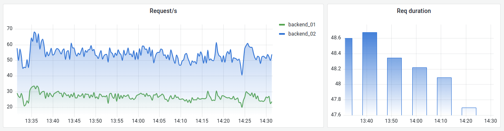
錯誤率
除了 Service Latency、Throughput 和 Resource Utilization。
錯誤率也是性能分析中的一個重要指標，雖然它跟性能表現未必有直接關聯，但它與使用者體驗和服務可用性成直接關聯。錯誤率指的是在性能測試中，請求發生錯誤的比例。這包括頁面錯誤、交易錯誤、資料庫錯誤和服務調用錯誤等。較高的錯誤率通常會影響系統的穩定性和使用者體驗，因此應該盡量保持錯誤率在可接受範圍內。
外部性能指標的變化
從上述的描述，我們現在知道這三個性能指標有自己的特點，但也經常會相互影響。
對一個系統來說，如果 Throughput 很低，那麼 Latency 通常會表現得很穩定。而當 Throughput 突然變高時， Latency 一般來說也會隨之增加。
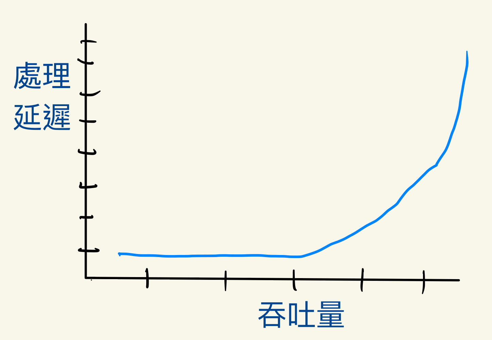
這圖想說明的是通常在 throughput 低於假設每秒500時，處理延遲會小於50ms，這延遲長期觀察起來非常的穩定。但隨著 throughput 逐漸增高， latencyt 也飛速攀升。一般而言，根據系統被規定的可接受的處理延遲快慢，我們會需要在系統層面上控制負載流量，以免處理延遲過大而直接影響使用者體驗。
此外在分析處理延遲時，不僅要計算 AVG，還要注意延遲的分佈情況，例如，有百分之幾的請求在服務允許的最大延遲範圍內，有百分之幾的略為超過了，有百分之幾的是完全無法接受的程度。因為出問題的時候，通常 AVG 指標是達標的不會觸發警報，但很大比例（可能10%~25%）的請求處理的情況是超出了我們設定的可接受範圍。
所以在設定 SLO 時，除了設定AVG均值的標準外，還要定義百分位數的可以接受值。比如，AVG 50 ms，P90 <= 80ms，P99 <= 100ms 等等，這些一起被納入計算才會準確。
關於 Throughput ，其實現實的系統一定有一個峰值極限存在。超過這峰值極限後，系統就會進入超載狀態，除了服務的整體處理延遲會超標外，還會造成一系列相關的性能問題（例如排隊延遲增加、錯誤率上升、資源耗盡、死鎖、GC、服務 crach 和雪崩效應...）。這個峰值極限往往需要經過全面且詳細的性能測試，並且結合 Service Latency 這些指標來確定。 只要確定了這系統峰值值後，之後面對需求的設計方案或維運就需要確保系統的負載不會超過這個值。
在考慮 Resource Utilization 的標準時，除了運營成本和系統容量外，還有幾個重要的因素需要考慮，包括意外事件的緩衝（Buffer）、災難恢復（Disaster Recovery， DR）、冗餘設計（Redundancy）、可擴展性（Scalability）、熱點管理（Hotspot Management）、容錯性（Fault Tolerance）以及資源使用率與性能的非線性關係。這些因素在實際運營中對於維護系統的穩定性至關重要。
小結
各種性能問題雖然表現各異，但歸根總結就是某個資源不夠。而處理請求時在某個地方被卡住了，這個卡住的地方就叫做瓶頸。
瓶頸通常發生在四類地方︰軟體程式、CPU與記憶體、I/O、網路，其實這些就是性能的內部指標。
一個核心觀點、瓶頸是導致系統性能問題的根本原因，而 Profilling 性能分析的目的是找出這些瓶頸並加以解決。所以我們掉實驗調查順序會是︰
瓶頸的存在：首先，當系統在某個環節「卡住」時，這個地方就成為了瓶頸。瓶頸的存在意味著該環節的資源已經達到了其處理能力的極限，無法再高效地完成更多的任務。這個瓶頸直接導致了整個系統的性能問題，比如高延遲、低吞吐量等。
性能分析的必要性：既然瓶頸是系統性能問題的根本原因，那麼要改善系統的性能，就必須找出這些瓶頸所在的位置。這就是 Profilling 性能分析的目的。性能分析是一個系統化的過程，通過測試和分析系統的各個部分，來識別出哪個部分成為了瓶頸。
瓶頸分類和深入分析：在你的描述中，瓶頸被分為了四大類，這使得性能分析有了一個明確的方向和目標。通過針對不同類型的瓶頸進行測試和分析，我們可以了解每個瓶頸可能涉及的具體資源問題，比如 CPU 性能、記憶體頻寬、網路延遲等。
從瓶頸到優化：找到瓶頸之後，性能分析就進入了優化階段。具體的優化方式通常是針對瓶頸的資源進行擴充或調整，比如增加記憶體、優化 CPU 使用效率、提升 I/O 性能等，這樣可以有效地緩解或消除瓶頸，從而提高系統的整體性能。
而主流的程式語言都有 Profiler 工具來進行性能分析，像 Java 有 JVMTI。而 Python 有 sys.setprofile 函式。Go 有更多豐富的 Profiler 工具，這個在之後的部份再來一一介紹。
D10 深入探討 RPS、QPS 和 TPS 的概念與應用
- 系列：應該是 Profilling 吧？系列 第 10 篇
- Day：10
- 發佈時間：2024-09-10 01:50:11
- 原文：https://ithelp.ithome.com.tw/articles/10349002
在上一篇文章中，我們深入探討了性能分析中的4個外部指標：Service Latency、Throughput 和 Resource Utilization、Error Rate。這些指標為我們提供了對系統性能的直觀理解。然而，當談到實際的系統設計和性能優化時，這些外部指標還需要與系統容量進行結合考量。本文將進一步探討系統容量如何影響 RPS、QPS 和 TPS 這些衡量指標，並分析如何通過這些指標來提升系統的併發能力和穩定性，從而在動態變化的負載環境中保持高效運行。
在現代高併發系統設計中，RPS（Requests Per Second）、QPS（Queries Per Second）和 TPS（Transactions Per Second）是衡量系統性能的關鍵指標。這些指標不僅幫助我們了解系統能夠處理的請求數量，也讓我們掌握系統在不同併發情境下的表現。本文將深入探討這三個指標的基本概念、應用及其在不同系統中的挑戰。
系統容量與併發能力
在高併發的情境中，系統容量是決定系統能夠處理多少請求的關鍵因素。這裡所指的系統容量，包含了 CPU、記憶體、I/O 和網路頻寬等資源。當系統需要處理高併發請求時，這些資源必須能夠支撐大量的併發操作。這裡，我們就要談到 RPS、QPS 和 TPS 這三個衡量系統併發能力的重要指標。
RPS（Requests Per Second）
RPS，即每秒請求數，是指系統每秒鐘能夠處理的請求數量。這個指標通常用於衡量一個系統在高併發情境下的性能。例如，一個 API 服務的 RPS 可以告訴我們該服務在單位時間內能夠處理多少個客戶端請求。 計算公式如下：
RPS = 總請求數 / 完成總時間（秒）
範例說明： 如果一個系統在 10 秒內處理了 5000 個請求，那麼 RPS 計算如下： RPS = 5000 / 10 =500 RPS
實際應用中的挑戰
舉例說明： 假設一個電子商務網站在平常的情況下，每秒處理 100 個 RPS。但是在大型促銷活動期間，RPS 突然飆升到 1000。此時，如果系統的容量未能及時擴展，便會出現處理延遲上升、錯誤率增加等問題。這時候，透過自動擴展（auto-scaling）來動態增加系統資源，能夠有效應對這樣的情況，確保服務的穩定性。然而，應用層的擴展往往還需要與後端資料庫的擴展同步進行，這樣才能真正實現高併發能力的提升，否則資料庫成為瓶頸可能會導致整體系統的性能下降。
然而，電子商務系統往往不僅僅依賴於單一服務，而是由多個服務組成，包括後端的資料庫。資料庫作為系統的核心組件之一，其擴展性通常比應用層服務更加困難。這主要是因為資料庫需要處理資料的一致性、完整性和可靠性，而這些特性在高併發的情況下尤為重要。
RPS 是衡量系統性能的重要指標之一，但它並不是單獨存在的。在實際應用中，RPS 與系統容量以及延遲等其他性能指標密切相關。當 RPS 增加時，不僅需要考慮應用層的擴展，資料庫作為後端支持的核心也必須能夠承受住更高的負載。然而，與應用層服務相比，資料庫的擴展性往往面臨更多的挑戰。接下來，我們將探討在高併發情境下，資料庫擴展所遇到的主要困難以及可行的解決方案。
QPS（Queries Per Second）
QPS，即每秒查詢數，是指系統每秒鐘能夠處理的查詢數量。這個指標通常應用於資料庫系統中，衡量其在高併發讀取或寫入操作下的性能。
計算公式如下： QPS = 總查詢數 / 完成總時間（秒）
範例： 如果一個資料庫在 20 秒內處理了 100,000 次查詢，那麼 QPS 計算如下： QPS = 100,000 / 20 = 5000 QPS
如何計算 QPS：步驟與最佳實踐
計算 QPS 的基本過程如下：
QPS 基本計算公式： 使用 QPS 的標準公式來表示：
QPS = (cnt(t) - cnt(t - Δt)) / Δt
其中 cnt(t) 代表時間 t 的請求數，Δt 是時間間隔。透過對比不同時間點的請求數增量來計算 QPS。
- 使用 Bucket 儲存增量： 通常，我們會使用 bucket（桶）來儲存每個時間區段內的請求數增量。這些 bucket 是一個數組，其中每個元素代表一個時間段內的查詢增量。例如，如果在第 7 秒 cnt 是 120，第 8 秒 cnt 是 180，那麼在第 7 到第 8 秒間的 QPS 就是 (180 - 120) / (8 - 7) = 60。
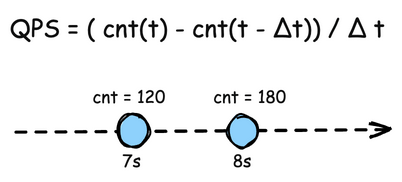
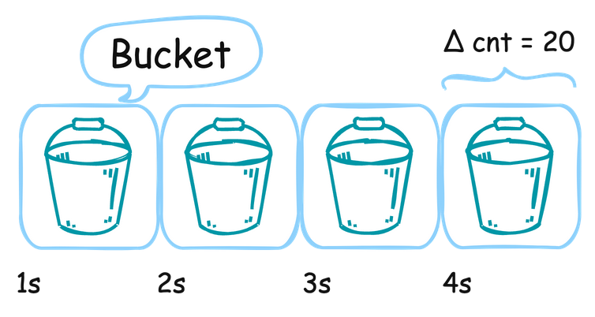
- 提升 QPS 計算的精細度： 為了獲得更細緻的查詢速率，我們可以將時間段細分，例如將每個 bucket 的時間間隔設置為 200ms。這樣可以更準確地捕捉到系統中的變動情況，並通過更加靈敏的數據增量監測來即時反應系統的性能。
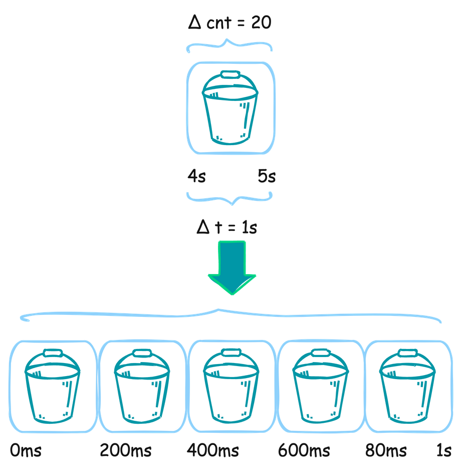
- Circular array 的使用： 長時間的 QPS 計算需要保證數據的持久性和內存使用效率，這時我們可以使用Circular array。Circular array 是一種固定長度的數組，用來儲存最新的 bucket 值，而較舊的 bucket 會被新的數據覆蓋。這樣可以避免內存不斷增長的問題，同時保證計算的即時性。
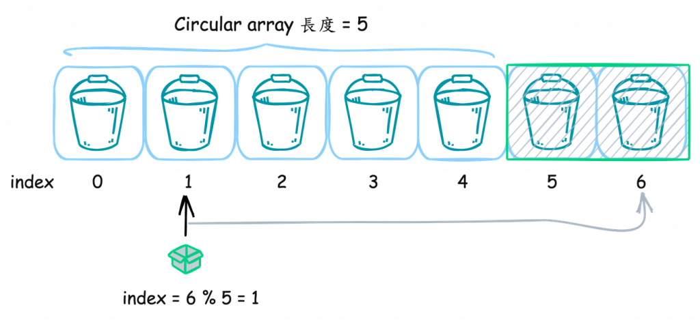
- Sliding Window 技術： 在計算實時 QPS 時，我們可以應用 Sliding Window 口技術。Sliding Window允許我們靈活定義需要計算的時間範圍，並計算這段時間內的 QPS。透過指定 Window 的開始與結束時間，系統可以在每個 bucket 內累加增量，從而計算出更精確的 QPS 值。
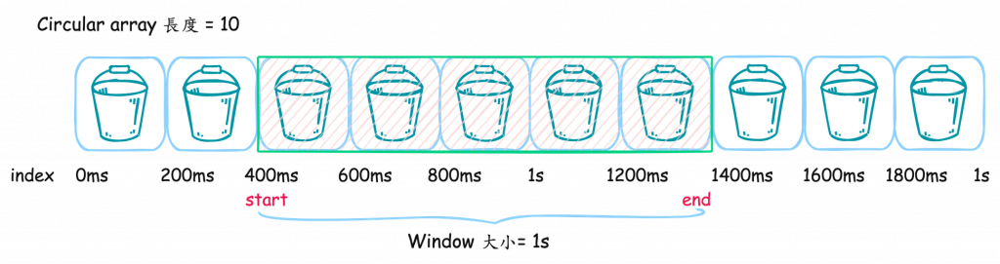
平均請求處理時間
有了 QPS 還能計算平均請求處理時間，是一個非常實用的概念，特別是在性能分析和監控系統中，了解某個函數的平均請求處理時間（Latency）可以幫助我們更準確地評估系統的回應效率。這裡我們可以結合 QPS 的計算過程來說明如何使用 bucket 和 Sliding Window 來計算平均請求處理時間。
計算平均請求處理時間的步驟
計算平均耗時的過程其實與計算 QPS 非常相似，只是這次我們不僅統計請求的次數，還需要統計每次請求的延遲時間（Latency）。以下是具體的步驟：
- 統計請求次數 (cnt)：每次函數被執行時，我們仍然像計算 QPS 那樣，使用 cnt 來統計請求次數。
- 統計延遲時間 (Latency)：每次函數執行後，記錄其延遲時間，並將這個延遲時間加到 bucket 內的 Latency 變數上。每個 bucket 中存儲的就是一段時間內的總延遲時間。
- Sliding Window 技術：與 QPS 的 Sliding Window 相似，我們會設置一個時間範圍，通過 Sliding Window 來確定應該計算哪一段時間內的延遲總和。當窗口滑動時，從窗口內的 bucket 取得總延遲時間（Latency）和總請求次數（cnt）。
- 計算平均請求處理時間：當我們有了這段時間內的總延遲時間與總請求次數後，便可以通過以下公式來計算函數的平均請求處理時間：
平均請求處理時間 = 延遲總和 (Latency) / 請求次數總和 (cnt)
具體例子
假設在 10 秒內某個函數的總請求次數為 100 次，總延遲時間為 2000 毫秒，那麼平均耗時的計算如下：
平均請求處理時間 = 總延遲時間 (2000ms) / 總請求次數 (100) = 20 ms
這意味著，在這段時間內，該函數的平均請求處理時間為 20 ms。
整合到 QPS 計算過程
既然我們已經在 QPS 計算中使用了 bucket 和 Sliding Window 來記錄每個時間段內的請求數，那麼我們可以在這些 bucket 中再添加一個用來統計延遲時間的變數 Latency。每次函數執行後，我們除了增加請求次數外，也將該請求的耗時加到 Latency 變數中。
新增步驟
- 延遲時間的累加：每當函數執行完畢，我們不僅增加 cnt，還將此次執行的延遲時間累加到當前 bucket 中的 Latency。
- Sliding Window 計算平均請求處理時間：Sliding Window 計算過程與 QPS 類似，我們通過 Window 範圍內的所有 bucket，將其中的延遲總和與請求次數總和分別累加起來，並通過這兩個總和來計算出指定時間段內的平均請求處理時間。
這個方法在很多應用中非常實用，特別是在性能分析和監控中，可以幫助我們：
- 了解某個 API 或函數在高併發環境下的回應時間。
- 分析系統中不同時間段的性能波動，幫助找出瓶頸。
- 結合 QPS，進一步優化系統在高負載下的行為。
整合這個過程可以幫助我們更全面地掌握系統的性能，從而能夠做出更加精確的調整和優化。
與 RPS 類似，QPS 的提高通常會直接影響到資料庫的資源消耗，特別是 I/O 操作的頻率。如果 QPS 過高，而資料庫未能及時進行優化（例如增加索引、分片、優化查詢語句等），可能會導致資料庫的性能下降，進而影響整個應用程式的回應時間。
實際應用中的挑戰
舉例說明： 在一個社交媒體應用中，使用者每次刷新動態都會觸發多次資料庫查詢操作。在系統設計初期，QPS 可能處於較低的水準，伺服器可以輕鬆應對。然而，隨著用戶數量的增長和使用頻率的提高，QPS 也會逐漸增加。如果不對資料庫進行優化，最終會導致系統無法滿足使用者需求，體驗變差。因此，對於資料庫系統的 QPS 監控和優化是確保系統能夠穩定運行的關鍵。
TPS（Transactions Per Second）
TPS，即每秒交易數，主要用於金融系統中，衡量一個系統在單位時間內能夠完成的交易次數。與 RPS 和 QPS 不同，TPS 更加注重交易的完整性和一致性，因為金融交易通常涉及多個步驟和系統之間的交互。
計算公式如下： TPS = 總交易數 / 完成總時間（秒）
範例： 如果一個支付系統在 30 秒內完成了 600 筆交易，那麼 TPS 計算如下： TPS = 600 / 30 = 20 TPS
在高併發情境下，TPS 的增長意味著系統需要在更短的時間內處理更多的複雜操作，這對系統的穩定性和可靠性提出了更高的要求。例如，在支付系統中，TPS 的提升往往伴隨著更高的風險管理需求，因為任何一個失誤都可能導致嚴重的財務損失。
實際應用中的挑戰
舉例說明： 一家大型銀行的支付系統在日常運營中，每秒鐘處理 500 TPS。然而，在支付高峰時段，如節假日或大型購物節，TPS 可能會增至 2000 甚至更多。為了應對這樣的情況，系統必須具備良好的擴展性和容錯機制，以確保每筆交易的安全和完整。同時，對於金融系統而言，TPS 不僅僅是衡量性能的指標，更是衡量系統可靠性的關鍵。
小結
在現代的高併發系統設計中，RPS、QPS 和 TPS 這三個指標是評估系統性能的重要工具。這些指標能夠幫助我們了解系統在不同負載情境下的併發能力，並揭示系統的瓶頸和優化空間。
RPS 提供了系統能夠處理的請求數量，是評估應用層性能的關鍵指標，尤其適用於 API 服務和前端系統。
QPS 更加側重於資料庫系統的性能，反映系統在高併發查詢情境下的表現，能夠幫助優化讀寫操作和 I/O 資源的使用。
TPS 則特別應用於金融系統，評估交易處理能力及其一致性和可靠性。
在計算 QPS 及進一步深入到系統優化中時，我們探討了使用 bucket 來儲存增量數據、利用 Sliding Window 計算實時 QPS，以及如何透過這些技術來優化系統性能。特別是針對**平均請求處理時間（Latency）**的計算，進一步提供了實際應用場景中的具體操作方法，這對於系統的即時性能監控至關重要。
這些指標之間不是孤立存在的，而是彼此相互影響。例如，提升 RPS 不僅需要優化應用層，還需要保障後端資料庫和交易系統能夠支撐更高的負載。因此，只有在整個系統架構中平衡這些指標，才能真正提升系統的併發能力和穩定性。
除了 RPS、QPS 和 TPS 這三個常見的性能指標，還有一些其他重要的指標能幫助我們更加全面地評估系統的運行狀態，特別是在高併發和大規模負載下。這些指標包括 Error Rate（錯誤率）、Saturation（飽和度）、Latency（延遲）、Resource Utilization（資源利用率）等。整合這些指標，能夠更深入地了解系統的健康狀況，並指導我們進行針對性的優化和調整。這些指標能參考 OpenTelemetry 入門指南第 3 章介紹的四個黃金信號與 U.S.E. method 以及 R.E.D. method。
D11 高併發系統設計中的實踐與挑戰
- 系列：應該是 Profilling 吧？系列 第 11 篇
- Day：11
- 發佈時間：2024-09-11 00:58:58
- 原文：https://ithelp.ithome.com.tw/articles/10349235
在高併發系統設計中，RPS、QPS 和 TPS 這三個指標與系統的整體性能、資源利用率和架構設計有著直接關聯。我們需要確保系統能夠在不同的負載下，高效處理大量的併發請求，並保持穩定的響應速度。以下內容會更具體地闡述每個最佳實踐如何直接影響這些關鍵指標。
昨天在 RPS 的討論中提到，電子商務系統中常見的是動態地根據負載增加系統節點（auto scaling），來增加系統資源。但現實架構中，關聯式資料庫幾乎很難動態地擴展節點。
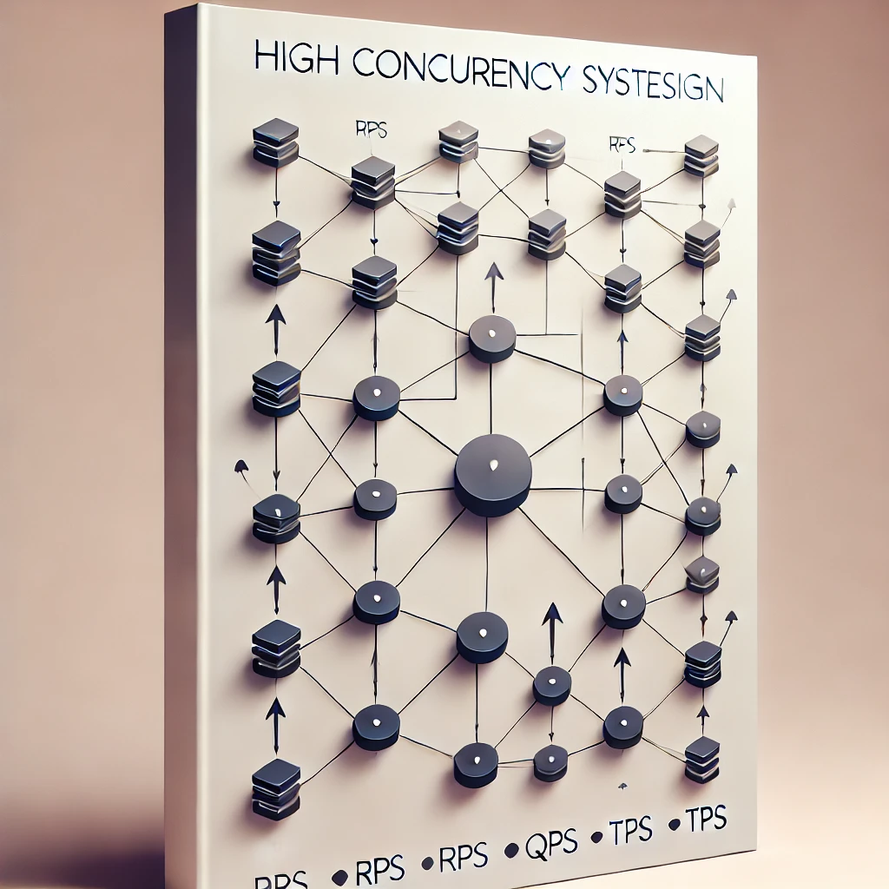
關聯式資料庫擴展的挑戰
在高併發的情境下，關聯式資料庫面臨著更多的挑戰，Day 4 我們曾提過短板理論，恰巧這裡的場景下，資料庫常常是整個系統中的短板，但要能進行關聯式資料庫擴展以增加吞吐量，則會面臨以下幾個困難點：
- 資料一致性問題︰在關聯式資料庫擴展時，特別是在進行分片或複製的情境下，維護資料的一致性變得更加複雜。當多個節點同時進行讀寫操作時，如果沒有適當的同步機制，可能會導致資料不一致的情況，進而影響系統的穩定性和數據準確性。
- 資料分片的複雜性︰資料分片是實現水平擴展的一種有效方式，但它帶來的挑戰包括如何選擇適當的分片鍵、如何在不同分片之間進行查詢，以及如何處理跨分片的交易。這些問題不僅增加了系統的複雜性，還可能導致查詢效率降低。
小弟在服務開發雜談系列 第 32 篇 分庫分表 Sharding & Partition - 2有簡單介紹分片方式。
解決方案與實踐
儘管關聯式資料庫擴展存在諸多挑戰，但通過合理的設計和實踐，我們仍然可以有效提升資料庫在高併發情境下的性能：
- 讀寫分離：通過將讀取操作和寫入操作分離到不同的資料庫實例中，可以減輕主資料庫的負擔，提高系統的讀取性能，從而提升整體併發能力。
- 資料分片：根據業務需求對資料進行分片，將資料分佈到多個資料庫節點中，以分散壓力並提高查詢效率。
- 使用快取：在資料庫查詢之前，先檢查快取，減少直接訪問資料庫的頻率，這樣可以有效降低資料庫的讀取壓力，提升系統響應速度。
- CDN 與邊緣計算：對於靜態內容，使用 CDN 或邊緣計算將資料快取到更靠近使用者的節點，減少資料庫的讀取需求，從而降低伺服器負載。
- NoSQL 資料庫：在一些非結構化資料或高吞吐量需求的場景中，考慮使用 NoSQL 資料庫（如 MongoDB、Cassandra），這些資料庫在某些情境下更易於擴展，能夠有效應對高併發的需求。
- 自動擴展：儘管資料庫擴展困難，但仍可通過自動擴展技術來動態調整資料庫節點的數量，以應對突發流量，確保系統的穩定性和高效性。
總的來說，關聯式資料庫的擴展雖然具有挑戰性，但在高併發情境下，其穩定性和性能對整個系統至關重要。合理應對這些挑戰，才能確保整個系統在高併發情境下穩定運行。
併發數（Concurrency）
我們一直講高併發， 什麼是併發？就是系統能同時處理多個任務。現在其實每個程式語言都能作到，且幾乎沒有哪個伺服器是還在單核心，除了大部分應用用的容器，很多會限制在 0.25 ~ 1 Core，成本考量。所以併發數代表系統在某一時刻同時處理的請求數量。它是衡量系統同時處理多個任務的關鍵指標，特別是在高併發系統設計和優化中起著至關重要的作用。
如下圖所示，兩個隊列的請求被一個購票窗口處理，這代表請求是輪流處理的，但其實窗口可以同時處理這些請求，只是處理速度很慢。
當我們擴充一個購票窗口後，兩個隊列的請求被兩個購票窗口同時處理，顯示出併發數的提升對系統性能的增益。
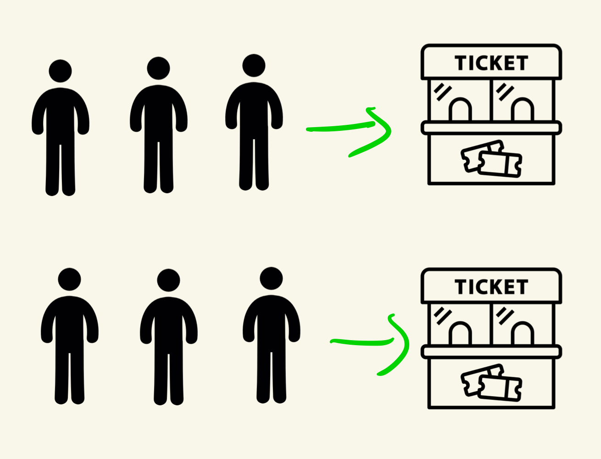
併發數的影響因素
併發數的大小會直接影響系統的性能，特別是在以下幾個方面：
- 資源使用：當併發數增加時，系統中可用的資源（如 CPU、記憶體、I/O 等）會被更多的請求所消耗。如果系統資源不足，則可能會導致請求處理的延遲增加，甚至引發資源瓶頸。
- 回應時間：系統的響應時間通常會隨著併發數的增加而增加，因為更多的請求需要等待資源的分配。這種情況在 I/O 密集型應用中特別明顯。
- 吞吐量：在一定的併發數範圍內，系統的吞吐量（即每秒處理的請求數）會隨著併發數的增加而提高。但是，當併發數超過系統的最佳臨界點後，吞吐量可能會下降，因為系統資源變得過於分散，導致效率降低。
併發數與 QPS 之間的關係
如昨天所述，QPS（是每秒查詢數，與併發數有著密切的關聯。兩者之間的關係可用以下公式表示：
QPS = 併發數 / 平均回應時間
併發數 = QPS * 平均回應時間
在系統設計中，確定最佳 Thread 數量是提高系統併發處理能力的關鍵。最佳 Thread 數量是剛好消耗完伺服器的瓶頸資源的臨界 Thread 數，小弟自己用的公式如下：
最佳 Thread 數量 = （（Thread 等待時間 + Thread CPU 時間）/ Thread CPU 時間）* CPU 數量
其中Thread 等待時間︰Thread 在等待資源（如 I/O 操作、資料庫查詢等）時所花費的時間。
Thread CPU 時間︰Thread 實際在 CPU 上執行的時間。
舉例說明：
假設一個系統有 4 個 CPU 核心，每個 Thread 的 CPU 執行時間是 20 ms，而每個 Thread 的等待時間（如等待 I/O 操作完成的時間）是 80 ms。
我們可以計算出最佳 Thread 數量如下：
最佳 Thread 數量 = ( ( 80ms+20ms)/20ms) * 4 = 20
所以，這個系統的最佳 Thread 數量是 20。
這意味著在這個特定系統配置下，同時運行 20 個Thread將是最優的配置。如果超過這個數量，系統可能會出現Thread之間的競爭，導致 QPS 開始下降，並且系統的 RT 會增加。因此，找到並維持這個最佳Thread數量是提高系統性能的關鍵。
下圖表展示了 Thread 數量對 QPS 的影響。隨著 Thread 數量的增加，QPS 先上升，達到最佳 Thread 數量時 QPS 達到最高值，隨後隨著 Thread 數量的繼續增加，QPS 開始下降。
這展示了在一個系統中，當 Thread 數量超過其最佳臨界點時，資源的競爭會加劇，導致 QPS 不再增加，甚至開始下降。同時，系統的 RT 也會隨之增加，這表明在最佳 Thread 數量之上繼續增加 Thread 數量並不會帶來性能的提升，反而可能降低系統的整體效率。
每個系統都有其最佳 Thread 數量，但在不同的狀態下，這個數量會有所變化。瓶頸資源可能是 CPU、記憶體、鎖資源或 I/O 資源。一旦超過最佳 Thread 數量，將導致資源的競爭加劇，響應時間隨之增加。
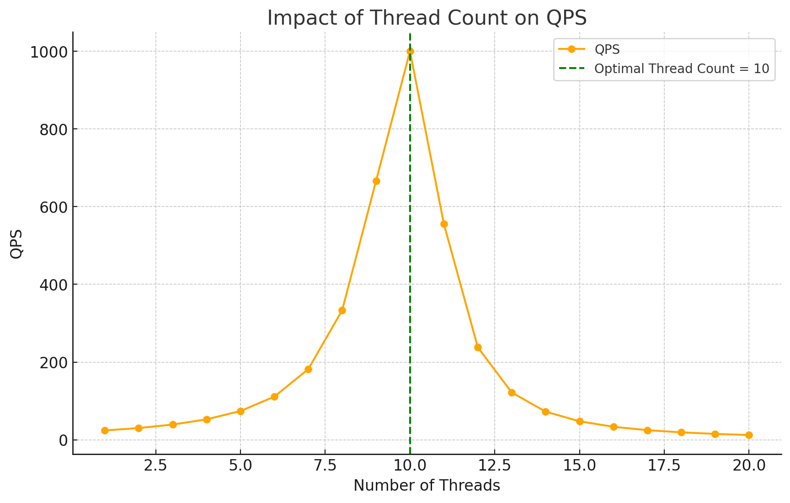
下圖表則展示了 QPS 和併發數與回應時間 RT 之間的關係。圖中可以看到：
QPS vs RT：隨著回應時間增加，QPS 保持不變。這是因為 QPS 是根據併發數與回應時間的比率計算出來的。響應時間增加，QPS 不變，說明在同樣的併發數下，單位時間內能夠處理的查詢數量沒有變化。
Concurrency vs RT（回應時間）：隨著響應時間增加，併發數也逐漸增加。這表明在系統中，隨著處理每個請求的時間延長，能夠同時處理的請求數量增加，這通常是由於請求處理的等待時間增加所致。
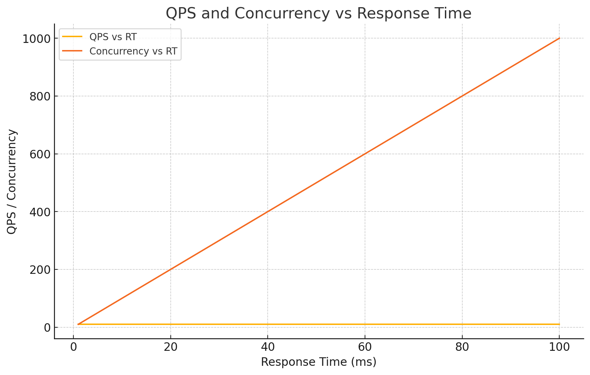
在實際應用中，理解這些指標之間的關係可以幫助我們更好地設計和優化系統，尤其是在高併發情境下。當響應時間降低時，併發數可以減少，系統能夠以更高的效率處理請求。相反，當響應時間增加時，併發數也會相應增加，這可能會導致資源競爭加劇，進而影響系統性能。
RT 回應時間與 QPS 之間的關係
下圖展示了在不同情境下，QPS 與 RT（回應時間）之間的關係：
在單 Thread 或多 Thread 的情境下（藍線）：在這種情境下，QPS 與 RT 呈現明顯的負相關關係。當 RT 減少時，QPS 顯著增加。這表明在 CPU 資源主要消耗於計算的情況下，通過降低RT 可以有效提升系統的 QPS。
而在高 I/O 負載情境下（紅線）：在高 I/O 負載下，QPS 與 RT 之間的負相關關係更加顯著。這意味著當系統需要大量 I/O 操作時，響應時間對 QPS 的影響會更加明顯。隨著響應時間的增加，QPS 下降得更快，顯示了 I/O 操作對於系統性能的更大影響。
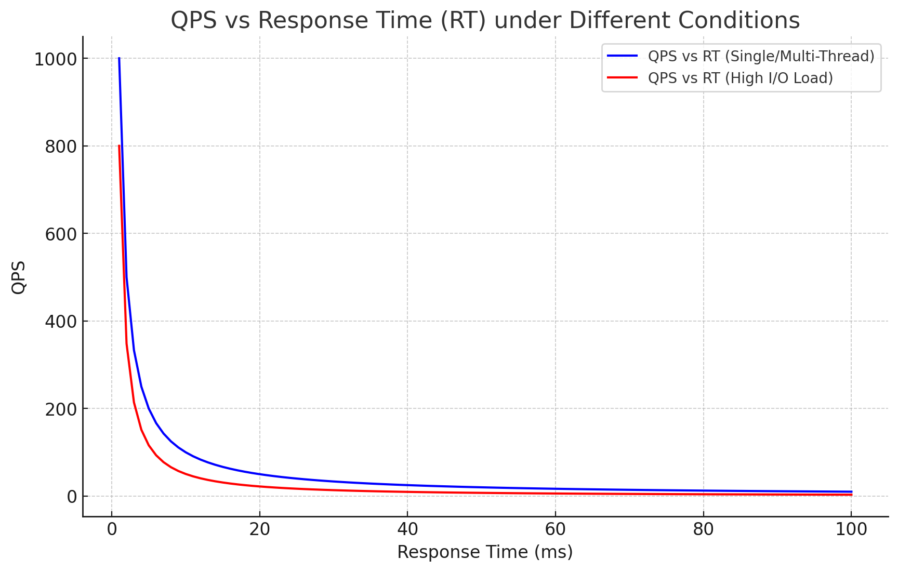
這些圖表說明了在不同的系統負載情境下，優化 RT 是提升 QPS 的關鍵，尤其是在高 I/O 負載的情境下，這種優化尤為重要。理解這些關係有助於我們在系統設計和性能優化過程中做出更為精確的決策。
高併發的概念與挑戰
高併發指系統同時處理大量請求的能力，這需要有效的資源管理和調度來保持穩定性和高效性。高併發系統的特點包括：
- 大量同時請求：在高併發情境下，系統需要同時處理大量來自不同用戶或設備的請求。這些請求可能是讀取資料、寫入資料、計算操作或其他需要系統資源的操作。
- 資源競爭激烈：由於同時有大量操作需要處理，系統中的資源（如 CPU、記憶體、網路、I/O 等）可能會出現競爭，導致某些操作需要等待其他操作完成才能繼續。
- 延遲敏感性：在高併發情境下，任何一個操作的延遲都可能會被放大，進而影響整體系統的響應時間。因此，系統需要優化延遲以確保用戶體驗。
- 高可靠性要求：當系統處於高併發狀態時，任何一個組件的故障都可能導致大範圍的影響，因此系統需要具備高可靠性和容錯能力，以避免單點故障造成的影響。
常見的高併發場景
高併發應用場景包括大型電子商務活動、熱門社交平台、在線支付系統和多人在線遊戲等。這些場景中，系統需要處理大量來自不同用戶的即時請求，並保持高效的回應速度與資料一致性。
高併發的挑戰
實現高併發系統面臨多種挑戰，包括但不限於以下幾點：
- 資源管理與競爭
高併發系統中的第一個挑戰就是如何有效管理有限的系統資源（如 CPU、記憶體、I/O）。當系統承受大量並發請求時，資源的競爭會變得激烈，這直接影響 RPS、QPS 和 TPS 的性能上限。
所以當 RPS 提升時，若資源管理不當，CPU 和記憶體資源將迅速飽和，這會限制系統的吞吐量，降低 RPS。因此，必須優化資源使用，確保系統能在高負載下高效運行。
QPS 主要受到 I/O 操作的影響，特別是在資料庫系統中，頻繁的讀寫操作可能導致查詢延遲增加，限制 QPS 的提升。
TPS 同樣依賴系統的資源分配能力，當交易量劇增時，如果資源競爭加劇，交易處理速度將下降，進而影響 TPS。
- Lock 競爭與同步機制
多個併發請求同時對資料進行讀寫操作時，系統中的 Lock 機制和同步管理成為提高性能的關鍵。 Lock 競爭過多會顯著降低系統性能，甚至流程管理不當會增加產生 Dead lock 的風險。
RPS 受鎖競爭的影響，如果系統設計中無法有效管理鎖衝突，請求的處理速度將下降，從而限制 RPS 的增長。
QPS 也會因為鎖衝突或數據同步不當而受到影響，特別是在高併發讀寫情境下，鎖競爭會增加查詢延遲，降低 QPS。除非像是 MVCC 機制的資料庫，或是使用較低等級的 isolation level，否則光是查詢也是有可能會受 lock 競爭而被影響。
同步機制下，不論是同步至 Replica sets 還是同步至快取服務（Redis、Memcached...）上，有可能因為同步延遲，而讓使用者查詢不到有效的資料，這樣子雖然回應很快，但不能算是有效的查詢。
TPS 要求更高的數據一致性，若同步機制設計不當，將直接影響交易操作的完整性，從而降低 TPS。
- 資料一致性挑戰
在高併發情境下，資料的一致性問題尤其嚴峻，特別是在分散式系統中，當多個節點同時進行讀寫操作時，確保資料的一致性變得至關重要，需要使用分散式一致性協議（如 Paxos 或 Raft）來保證多個節點之間的數據同步。
小弟在以前服務開發雜談系列 第 13 篇 etcd Raft淺談有簡單聊過 Raft。
QPS 的提升通常會受限於資料一致性協議的效率，過多的數據同步操作可能會延長查詢時間，限制 QPS。
TPS 尤其強調數據的一致性，尤其是在金融交易系統中，確保每筆交易的正確性與完整性至關重要，這與資料一致性直接相關。
- 快取技術的應用
快取技術是提高系統性能的重要手段之一，特別是在需要快速回應的情境中，快取可以顯著減少後端系統的負擔。
RPS 可以透過快取減少後端的負荷，當請求頻繁且數據變動不大時，快取能有效提高系統回應速度，進而提升 RPS。
QPS 對於資料庫的查詢量往往非常大，通過快取技術，可以降低資料庫的負擔，提高 QPS。
TPS 在涉及交易一致性的情況下，雖然對快取的需求較低，但在某些場景下，快取也能用來預處理交易結果，加快響應速度。
- 負載均衡與自動擴展
負載均衡和自動擴展是處理高併發請求的核心技術，能確保系統在負載激增的情況下保持穩定。
當 RPS 提升時，負載均衡技術可以確保請求均勻分佈到多個伺服器上，避免單點過載，確保系統能持續處理大量請求。
QPS 和 TPS 也受益於自動擴展技術，特別是在突發負載下，動態增加節點可以確保系統持續高效運行。
- 故障恢復與容錯：高併發系統必須設計為具備強大的故障恢復能力，能夠在部分組件出現故障時保持正常運行，並且能迅速恢復故障部分的功能。
高併發系統設計的基本策略
為了應對高併發場景，設計高併發系統通常會採取以下策略：
- 分散式系統架構：將系統的不同功能模塊分散到多個伺服器或節點上，利用水平擴展來提高併發處理能力。
- 高併發設計策略：應用快取技術可減少對後端系統的負擔，非同步處理適合不需即時回應的操作，而負載均衡則確保請求能均衡分配到多個伺服器，避免資源過載。這些策略在高併發系統中能有效提升處理能力與穩定性。
- 資源隔離：將不同類型的資源進行隔離（如 CPU、記憶體等），確保高優先級的操作不會被低優先級的操作所干擾。
在高併發情境下，系統必須能夠同時處理大量的請求。這可以通過併發或併行的方式來實現。並發處理意味著系統內部有多個隊列等待同一種資源（如上圖所示，兩個隊列對應一個高鐵購票窗口），而併行處理則意味著系統有多個資源可以同時處理多個隊列中的請求（如上圖所示，兩個隊列對應兩個高鐵購票窗口）。
總結來說，高併發系統是現代軟體工程中的一個重要領域，面臨著資源管理、數據一致性和故障恢復等多重挑戰。通過合理的架構設計和技術選擇，這些挑戰是可以被有效克服的，從而保證系統在高併發情境下依然保持高效穩定的運行。
RPS 的量級與高併發的標準
RPS 的量級在不同的環境和應用情境中會有不同的標準和認知。確實，沒有一個放諸四海皆準的「高併發」標準，因為高併發是相對於系統的設計能力和應用場景而言的。
相對性的重要性
高併發的定義和對應的 RPS 量級與系統所處的具體環境、使用者基數和應用場景密切相關。在某些情況下，100 RPS 可能已經對一個系統構成挑戰，而在另一個情境下，1,000 RPS 仍屬於可輕鬆應對的範疇。因此，RPS 是否構成高併發，必須考量以下幾個因素：
- 應用類型：例如，金融交易系統的高併發要求通常會比普通電商網站更高，因為其對交易的一致性和即時性要求更為嚴格。
- 基礎設施能力：基礎設施的能力（如伺服器規模、資料庫性能、網路頻寬）會直接影響系統處理併發請求的能力。
- 目標使用者群體：如果系統主要服務於大眾市場，則高併發量級通常會高於專業市場或企業內部應用。
- 地域影響：不同地區的互聯網基礎設施和使用者行為習慣也會影響 RPS 的量級標準。例如，台灣的互聯網應用可能更多地集中在特定高峰時段，因此即使平時 RPS 不高，但在特定活動期間會瞬間飆升。
在台灣，許多企業應用服務仍以中小型為主，因此 100 到 1,000 RPS 通常被視為較高的併發量級，特別是對於中小型企業和新創公司而言。但對於一些大型電商平台、熱門社交媒體應用或提供全國性服務的公司而言，1,000 到 10,000 RPS 可能才算進入「高併發」的範疇。
在台灣的通路環境中，超過 10,000 RPS 的情況通常比較少見，多半出現在如大型購物節（如雙十一、雙十二）或是大型活動的短時間內。此外，對於台灣的一些技術先驅公司或雲端服務提供商而言，10,000 RPS 以上的量級也不是不可能的，只是需要更強的技術支援和基礎設施投入。
總的來說，將 RPS 分為不同量級（小型、中型、大型、超大型之類的）的方式固然有助於初步理解和分類，但這並不是一個固定的標準，更多地應該根據具體的業務需求和技術能力來定義。因此，在回答這類問題時，應根據具體場景給出相對的解釋，而不是一概而論。
因此，你在處理這類問題時，可以引導問題的提出者考慮其具體場景，包括系統的設計能力、使用者規模、業務特性等，來定義什麼樣的 RPS 才算是高併發。這樣能提供更具體且有價值的建議。
RPS 是否達到「高併發」的標準是相對的，需要根據系統的具體情境和目標來判斷，並不是一個可以統一適用於所有情境的絕對標準。
小結：系統容量與高併發之間的平衡
RPS、QPS 和 TPS 作為衡量系統併發能力的重要指標，它們與系統容量之間的關係是相輔相成的。這些指標不僅幫助我們評估和優化現有系統的性能，還在系統設計階段提供了至關重要的參考。要實現高併發能力，必須在系統容量、架構設計、資源分配與管理等多方面進行全面的優化與調整。
在實際應用中，隨著系統負載的增長，透過對這些指標的監控和分析，我們可以及時識別性能瓶頸，並採取相應的優化措施，確保系統在高併發情境下依然能夠穩定運行。同時，合理的系統架構設計、有效的資源利用率優化以及靈活的自動擴展技術，都是提升系統併發能力的重要手段。
最終，理解並掌握 RPS、QPS 和 TPS 這些指標，以及它們與系統容量之間的關聯，是確保系統在高併發情境下運行良好的關鍵。通過科學的性能分析和合理的優化策略，我們可以在有限的資源下，最大限度地提升系統的效能，為使用者提供更加流暢的體驗。
D12 閒聊如何量測系統的容量與 Baseline？
- 系列：應該是 Profilling 吧？系列 第 12 篇
- Day：12
- 發佈時間：2024-09-12 00:10:57
- 原文：https://ithelp.ithome.com.tw/articles/10349527
在公司已經有在營運且有穩定收入時，對於新系統規劃上，我們能加入對系統容量的估算與驗證。當然新創還沒賺錢的，不用想這件事情，這就是過早優化，重心應該放在開源賺錢 XD
We should forget about small efficiencies, say about 97% of the time: premature optimization is the root of all evil.
Donald Knuth
The Art of Computer Programming (TAOCP)
設計跟執行這樣的量測與驗證其實很需要專業的知識與足夠的時間與成本。也幾乎跟測試自動化一樣。也很容易就成為嘴邊說很重要，但真的要做時都是沒時間 XD
測試自動化老是名列調查中的前茅 可是大家總覺得他很困難 並且更神奇的都說沒時間做 感覺大家只是喜歡, 但是從未把它放在優先級上 2024 Day13 軟體測試現狀調查 https://ithelp.ithome.com.tw/articles/10343736
在現代軟體開發和運維中，系統容量（Capacity）和基準線（Baseline）是兩個至關重要的概念。它們對於確保系統在高負載情境下能夠穩定運行，並且在需要擴展時提供準確的參考指標，具有重要意義。然而，這兩個概念的具體含義和實施方法，對許多工程師來說仍然是一個比較模糊的領域。本文將通過閒聊的方式，深入探討如何量測系統的容量與 Baseline，並提供一些實際應用中的建議。
什麼是系統容量（Capacity）？
系統容量可以簡單地理解為系統在給定的資源條件下，能夠穩定處理的最大負載。這個負載可以是 RPS、QPS 或者是 TPS。系統容量的測量並不是一個靜態的過程，而是動態的，隨著系統的設計、配置和運行條件的變化而變化。
在 YouTube 搜尋 Sytstem Capacity Estimation 就會出現一堆相關影片了。這在 System Design Interview 一系列的書中也是常見的系統設計內容。
什麼是基準線（Baseline）？
在D8 性能工程基本定律 - 排隊理論這天總結時，有提到 Baseline，今天來聊一下。
基準線（Baseline）是系統在特定條件下運行的性能指標，它反映了系統在正常情況下的性能表現。Baseline 的意義在於，它提供了一個衡量系統性能變化的標準，如果系統性能在實際運行中與 Baseline 偏離過多，則意味著系統可能存在問題或需要進行優化。
測量 Baseline 的過程，通常稱為基準測試（Benchmarking）。
異常，一定是比較來的，不會是感覺來著的。
而比較的對象就是 Baseline，例如瞬間高出 Baseline 10倍還在持續增加中，例如持續低於 Baseline 3 倍還在持續下跌中。
Baseline 的值不會一成不變的。隨著需求與系統持續迭代的過程中，Baseline 的值也是要更新或重新測量的。
所以這裡也能察覺監控，其實是一種落後指標，都要等事情持續發生一陣子了，才能觸發 alert。
小弟於 2023 DDD 年會淺談 EventStorming 和 Observability，有分享關於落後指標（Lagging Indicators）。
系統容量的衡量指標
其實昨天就介紹過了，這裡只是再 recap。
- RPS（Requests Per Second）：每秒能夠處理的請求數量，通常應用於 API 服務或 Web 服務。
- QPS（Queries Per Second）：每秒能夠處理的查詢數量，多用於資料庫系統中。
- TPS（Transactions Per Second）：每秒能夠處理的交易數量，通常應用於金融系統中。
這些指標的計算方法基本相同，都是以總請求數或總操作數除以所需的總時間（以秒為單位）。比如，如果一個系統在 10 秒內處理了 1000 個請求，那麼該系統的 RPS 為 100。
系統容量的量測
量測系統容量的主要目的
-
確保系統的穩定性和可靠性：
系統容量測試的首要目的是確保系統在高負載情境下依然能夠穩定運行。通過測試，可以提前識別出在不同負載下系統可能出現的瓶頸和故障點，從而進行優化，避免在實際運行中出現性能問題或系統崩潰。
-
預測並規劃資源需求：
透過容量測試，可以確定系統在不同負載情況下所需的資源（如 CPU、記憶體、網路頻寬等）。這有助於預測未來的資源需求，從而進行合理的規劃和擴展，避免資源浪費或因資源不足導致的性能瓶頸。
-
提升系統的性能表現：
通過容量測試，開發和運維團隊可以更好地理解系統在不同負載下的行為模式，從而進行有針對性的優化，提升整體的性能表現。例如，可以通過測試找到系統的最佳併發數量，從而優化併發處理能力，提升 QPS、TPS 等性能指標。
-
支援業務增長：
在業務增長的過程中，系統的負載往往會隨之增加。通過容量測試，可以提前瞭解系統在應對業務增長時的表現，並進行相應的擴展計劃，確保系統能夠滿足未來的業務需求。
在 Rick 大大的部落格中也提到業務導向的思路。從滿足業務目標的目的，找出整體系統容量需要多少。如何量測系統的容量？（壓測）
-
進行容量規劃和擴展設計：
在進行系統架構設計或擴展時，容量測試提供了基礎數據支持。測試結果可以用來指導系統的水平擴展（如增加伺服器節點）或垂直擴展（如升級硬體配置）的決策，從而設計出符合業務需求的高效架構。
-
定義和驗證 Baseline：
容量測試還有助於定義系統的基準線，這是一個系統在正常運行下的性能指標。通過測試，可以驗證這些基準線是否合理，並據此進行持續的性能監控，及時發現和解決潛在的性能問題。
-
滿足法規和 SLA 要求：
某些行業可能要求系統達到特定的性能標準，這些標準通常在服務水準協議（SLA）中有所規定。通過容量測試，可以確保系統符合這些法規要求，避免因不達標而引發的法律或商業風險。
這些目的共同指向一個核心目標：確保系統在不同的負載和業務情境下，能夠穩定、高效地運行，並且能夠持續支援業務的發展。
常見的容量測量策略
在進行系統容量測量時，根據不同的測試目標和需求，我們可以選擇不同的測量策略。以下是幾種常見的策略：
-
以業務目標為基準
這種策略側重於滿足特定的業務需求。例如，如果業務需求是系統能夠處理 200 TPS（每秒兩百筆交易），那麼測試的目標就是確定系統在達到該目標時所需的資源配置。這種策略通常用於制定系統資源配置計劃，並確保系統能夠在指定的業務需求下穩定運行。
在這種策略下，測試過程中的重點是找出瓶頸並進行優化，以降低資源成本並提高系統效能。
任何業務上的需求，我們身為設計解決方案的開發者，應該要主動詢問，這些業務活動你希望能容納多少使用者或任務在系統上能順暢、穩定的持續運行。
而問到的這些數字，我們就能用來規劃測試計畫。
但如果沒問，那麼真的就是無腦壓測，燒錢燒時間而已。因為優化是沒極限的，不管是追求極大的吞吐量還是極高的回應處理時間。
也許我們面對的是內勤系統，很多運行就只有一兩台機器加一台資料庫
幾個同仁登入, 系統同時做一堆排程跟報表,
平常幾十隻貓在用, 多則一兩百同仁們登入在用
這樣就是這應用場景下的高併發了 XD
目標不就是同仁上班時都登入在用是能穩定好操作嗎？
外網服務其實也是，肯定都有業務活動希望能穩定服務的人數。
這些人數能通過 k6 VU 等壓測軟體搭配測試計畫來驗證。 -
以系統資源為基準
這種策略側重於確定在現有資源配置下，系統能夠達到的最大負載。例如，在已知的資源配置下（如一台 c5.xlarge 伺服器），測試系統能夠達到的最大 TPS、RPS 或 QPS。這種策略適合用來評估系統在現有資源下的性能，並推算在不同負載情境下的表現。
這種策略下的測試結果通常被用來推測當系統負載增加時，可能需要的資源配置。當測試超過系統的理想容量時，我們通常需要處理的是系統的可靠性問題。
能提早演練當測試超過系統的理想容量時，會出現的任何情況，提早做對應措施。
-
以應用程式設計為基準
這種策略主要用於應用程式的效能調校。例如，以 100 QPS 為基準，在 c5.xlarge 的配置下設計應用程式。目標是確保應用程式在這個基準下能夠穩定高效運行。
在這種策略下，測試過程中需要深入了解記憶體管理、Multi-Thread、I/O 模型等技術細節，並對應用程式進行細緻的性能調優。
這種測試策略通常被用來制定系統的 SLO，並進行效能測試，確保系統能夠滿足既定的服務水準。
這裡其實都是為了省錢了 XD
系統容量的測量方法
系統容量的量測主要分為以下幾個步驟：
-
資源準備：首先，定義好待測目標和基本條件。待測目標可以是特定的 API、資料庫查詢等；基本條件則是系統所使用的硬體資源，如 CPU、記憶體、I/O 設備等。
-
待測目標：可以是特定的 API、資料庫查詢、服務端計算等。選擇的目標應該能夠代表系統的主要負載情境。
-
基本條件：指的是系統所使用的硬體資源，如 CPU、記憶體、I/O 設備等。這些資源應該根據測試目標的不同進行合理配置。在這裡任何設定都要盡量與正式的營運環境一致，不能營運環境用特別優化過得參數與高效能的硬碟，但測量環境都用預設和低IOPS等級的硬碟。
在這一步驟中，我們需要確保系統架構圖已經準備好，並且所有相關的系統依賴和網路配置都已經確定。這樣可以避免測試過程中出現不必要的干擾，從而獲得更加準確的測試結果。解決干擾的策略就是讓基準測試運行更長時間，不是只有執行個數秒為單位，可能是以數分鐘為單位。因為太短的測試可能會遭遇很多因素而有影響。
-
-
逐步增加負載：使用負載測試工具（如 k6、JMeter）逐步增加請求量，直到系統開始出現性能下降或者錯誤率增高的情況，記錄此時的負載數值。這個過程被稱為「逐漸增壓」或「步進負載測試」。
我們通過逐步增加請求量來測試系統的響應能力，並觀察系統在不同負載下的表現。當系統無法再穩定處理增加的負載時，即出現瓶頸，這個時候的負載數值即為系統的容量。這個數值應當被記錄下來，作為系統容量的基準數據。
在測試過程中，我們應該注意收集以下數據：
- 回應時間：在不同負載下的平均回應時間。
- 錯誤率：系統在高負載下出現的錯誤比例。
- 吞吐量：系統在單位時間內處理的請求數量。
- 資源使用率：包括 CPU、記憶體、I/O 的利用率。
-
觀察資源使用率：在測試過程中，觀察系統資源的使用率。這包括：
-
CPU 利用率：查看 CPU 的使用情況，是否存在過載情況。
-
記憶體消耗：觀察記憶體的使用情況，是否存在記憶體洩漏或不足。
-
I/O 操作：分析 I/O 操作的效率，是否存在瓶頸。
這些觀察可以幫助我們了解系統在不同負載下的資源消耗情況，從而更好地理解系統的性能極限。
-
-
找到臨界點：當系統無法再穩定處理增加的負載時，我們就找到了系統的臨界點，這個點即為系統的容量。臨界點的數據應該被詳細記錄，並作為系統的容量基準數據。
找到臨界點後，我們可以進行多次測試並取平均值，以保證測試結果的準確性。這樣可以避免由於偶然因素導致的數據誤差。
-
確定 Baseline︰通過 Baseline，我們可以了解系統在正常運行狀態下的性能，並將其作為後續優化和擴展的參考。
確定 Baseline 的方法通常包括以下步驟：
- 穩定性測試：在確定系統容量後，使用穩定性測試來檢驗系統在該容量下的穩定性。這可以幫助我們找到 Baseline，並確保系統在實際運行中能夠保持穩定。
- 性能數據收集：在穩定性測試過程中，收集系統的性能數據，並將其作為 Baseline 的數據來源。
- 多次測試驗證：進行多次測試並比較結果，確保 Baseline 的準確性。
-
多次驗證：為了確保測試結果的準確性，建議進行多次測試並取平均值。這樣可以避免由於偶然因素導致的數據誤差。
理解測試結果與得出結論
在完成測試後，對測試結果進行分析和解讀是非常重要的。
-
分析性能數據
測試結束後，我們需要對測試過程中收集到的性能數據進行深入分析。這些數據包括回應時間、吞吐量、錯誤率、CPU 利用率、記憶體使用情況、I/O 操作等。通過分析這些數據，可以了解系統在不同負載下的表現，並找到系統的瓶頸所在。
-
比較不同負載下的表現
將系統在不同負載條件下的表現進行比較，確定系統在哪個負載範圍內能夠穩定運行，並找到超過該範圍後性能開始下降的臨界點。這有助於確定系統的容量極限，並為後續的擴展設計提供依據。
-
得出結論與建議
根據測試結果，得出有價值的結論。例如，系統在一定的併發數量下能夠穩定運行，但超過該併發數後，響應時間顯著增加，錯誤率上升。根據這些結論，提出相應的優化建議，如增加資源配置、優化程式碼性能、調整系統架構等。
-
制定容量規劃
根據測試得出的系統容量數據，制定容量規劃。這包括系統在不同負載下所需的資源配置，以及在未來負載增加時所需的擴展計劃。容量規劃可以幫助團隊提前準備資源，確保系統能夠在負載增加時保持穩定和高效運行。
k6 如何幫助探索 Baseline？
在 OpenTelemetry 入門指南 的第 13 章介紹 k6 的各種負載測試類型時，有介紹到 Breakpoint test。其實我們要做的就是逐步增加系統負載。
斷點測試( Breakpoint test ):測試的持續時間中等,流量與工作負載 會逐漸增加至某個點。通過逐步增加負載直到系統達到性能斷點或失敗 點,以識別系統的最大承受能力。主要用來確定系統或應用程式可以承 受的最大負載。
Postman 則是選擇漸增負載(Ramp up )。
下圖展示了 k6 各種負載測試類型，在測試時間長度與流量的關係。
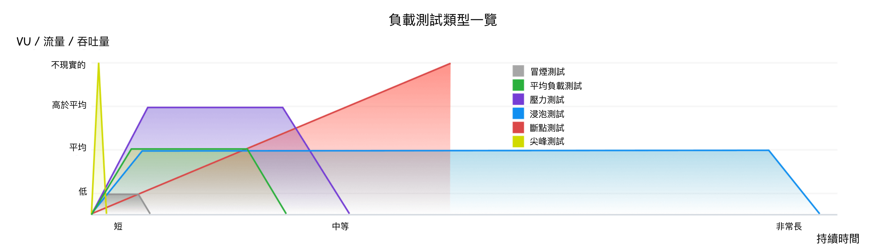
剛好 k6 有 stages 與 thresholds，能幫我們實現這需求。
export const options = {
stages: [
{ duration: '3m', target: 10 },
{ duration: '5m', target: 10 },
{ duration: '10m', target: 35 },
{ duration: '3m', target: 0 },
],
thresholds: {
'http_req_duration': ['avg<100', 'p(95)<200'],
'http_req_connecting{cdnAsset:true}': ['p(95)<100'],
error_total_count:: [
{
threshold: "count<100",
abortOnFail: true,
},
],
},
};
此外一些資源指標能通過 Prometheus的 node_exporter 來取得，例如︰
- 硬碟的IOPS
# Read IOPS
rate(node_disk_reads_completed_total{instance=~"$hostname",device=~"[a-z]*[a-z]"}[5m])
# Write IOPS
rate(node_disk_writes_completed_total{instance=~"$hostname",device=~"[a-z]*[a-z]"}[5m])
-
硬碟 I/O 利用率
# 硬碟 I/O 利用率 (iostat中的%util,取值範圍[0-1]) rate(node_disk_io_time_seconds_total{instance=~"$hostname"}[5m]) -
硬碟平均 I/O 隊列數量
rate(node_disk_io_time_weighted_seconds_total{instance=~"$hostname"}[5m])
-
硬碟讀寫延遲情況
# Read latency(ms) rate(node_disk_read_time_seconds_total{instance=~"$hostname"}[5m]) / rate(node_disk_reads_completed_total{instance=~"$hostname"}[5m]) * 1000 # Write latency(ms) rate(node_disk_write_time_seconds_total{instance=~"$hostname"}[5m]) / rate(node_disk_writes_completed_total{instance=~"$hostname"}[5m]) * 1000 -
CPU Busy 佔比情況，(0 - 100%)
(所有 CPU 使用情形 - 5 分鐘內 CPU 空閒的平均值) / 所有 CPU 使用情形
(((count(count(node_cpu_seconds_total{instance=~"$hostname"}) by (cpu))) - avg(sum by (mode)(irate(node_cpu_seconds_total{mode='idle',instance=~"$hostname"}[5m])))) * 100) / count(count(node_cpu_seconds_total{instance=~\"$node:$port\",job=~\"$job\"}) by (cpu)) -
CPU 處於等待 I/O 的時間佔比
sum by (instance)(rate(node_cpu_seconds_total{mode='iowait',instance=~"$hostname"}[5m])) * 100 -
網卡的上傳流量
rate(node_network_transmit_bytes_total{instance=~"$hostname"}[5m]) -
網卡的下載流量
rate(node_network_receive_bytes_total{instance=~"$hostname"}[5m])
很多硬體資源上的指標能參考。至於應用程式的指標日後在慢慢介紹。
結論
透過以上步驟，系統容量的測量不僅僅是一個單純的測試過程，更是一個系統性地理解和優化系統性能的重要環節。確定測試內容和深入理解測試結果，是從測量中獲得有用信息的關鍵。這樣，才能針對具體問題提出有效的解決方案，從而提升系統的整體性能和穩定性。
D13 閒聊I/O密集型任務與 Context Switch
- 系列：應該是 Profilling 吧？系列 第 13 篇
- Day：13
- 發佈時間：2024-09-13 00:45:02
- 原文：https://ithelp.ithome.com.tw/articles/10349747
突然今天想寫這篇是因為 Line 社群有網友問到 I/O密集型任務 如果開大量 Thread 或是將這個任務以容器啟動了數十個容器在消費從 Message Queue 接收到的事件，然後做大量的 I/O 密集任務。會不會導致 Context Switch ？以及如果真要提高吞吐量與處理效能，開大量 Worker 是常見的方式，但要怎能知道開多少數量的 Worker 在這台機器上適合呢？
今天先從資源使用情況來看，明天在從任務的執行時間來分析。
今天會講比較多基本知識先了解打底用，也能當我在混天數吧 :）
在我們討論過系統容量與高併發的挑戰之後，我們引入了排隊理論來理解請求的排隊與等待時間，並藉由80/20法則和Amdahl's Law 更深入地探討系統性能的優化可能性。這些概念幫助我們看清在處理高併發的情況下，系統的性能瓶頸往往不僅僅來自於計算資源的不足，更多時候是受到 I/O 的延遲和上下文切換的影響。今天，我們將從資源使用的角度來探討這些因素如何影響到 I/O 密集型工作負載，並進一步分析 CPU 的使用情況及過度的上下文切換如何成為限制吞吐量的潛在原因。
CPU 使用率
CPU 的使用率可以透過測量一段時間內 CPU 忙於執行任務的時間比例獲得，通常以百分比 % 表示。也可以透過測量 CPU 未執行 kernel idel 的時間得出，這段時間內 CPU 可能會執行一些 user level 的應用程式，或其他的 kernel 程式，或者在處理 interrupt。
CPU 使用率高不代表一定有問題，只能說系統有在工作。也有人認為這是投資回報率（ROI）的指標，畢竟機器買了租了就用好用滿。CPU 資源高度被利用的系統認為有著較好的 ROI，而空閒太多的系統則是浪費。這點與硬碟（I/O）有著很大的不同。
ROI 很重要，一開始就用的好，則花費都用在刀口上。
後期才投入分析的話，那就是省運行成本，看能否跟老闆凹，省下來的10%當bonus吧！
在OpenTeletetry 入門指南，第 2 章也有提到可觀測性工程對於數位轉型的 ROI 是否幫助的。
CPU 使用率高，不等於應用程式的性能跟著出現顯著的下降！因為 kernel 支援優先級別的處理、搶佔處理和分時共享處理。這些概念組合起來讓 kernel 決定了什麼應用程式或執行緒的優先級更高，並保證它優先執行。
CPU 的時間花費在處理 user space 的時間稱為 User-CPU-Time，而執行 kernel 類型的時間稱為 System-CPU-Time。 System-CPU-Time 包含系統底層調用、kernel 執行緒和處理 interrupt 的時間。在整個系統範圍內進行量測時，User-CPU-Time 與 System-CPU-Time的比例揭示了該系統執行的負載類型。
如果User-CPU-Time 比例很高，那麼可能就在處理像是影像處理、機器學習、數學運算或數據分析等。
反之，如果 System-CPU-Time 很高，則可能是 I/O Intensive Workload，通過 kernel 在進行 I/O 操作。
I/O Intensive Workload
又稱 I/O-bound 或 I/O 密集型工作負載。這裡的 bound 或 intensive，指「受限於」或「受制於」。當我們說一個任務是「I/O-bound」時，意思是這個任務的性能或速度主要受限於 I/O 操作的速度，而非 CPU 的處理能力。
當一個任務是 I/O-intensive 時，系統的其他資源（例如 CPU、記憶體等）可能無法被充分利用。這是因為系統必須等待 I/O 操作完成，而在這段等待時間內，其他資源可能處於閒置或低效狀態。也就是說，儘管 CPU 可能有足夠的能力處理更多的計算任務，但由於 I/O 操作成為瓶頸，整個系統的資源利用率會受到限制。
例如，在一個 I/O-bound 系統中，即使 CPU 的利用率很低，系統整體的性能也可能達不到預期，因為它主要受限於磁碟或網路 I/O 操作的速度和容量。這種情況下，即便增加更多的 CPU 或記憶體資源，也無法顯著提高系統性能，因為真正的瓶頸是 I/O 操作。
相呼應的是速度，系統在處理這類任務時，CPU 的計算能力可能有富餘，但由於需要等待 I/O 操作（例如讀取磁碟、網路請求、文件讀寫等）完成，整體系統的速度和性能會受到這些 I/O 操作的制約。因此，任務的執行效率主要取決於 I/O 操作的效率，而不是計算的速度。
舉例來說，假設一個應用程序需要頻繁地從磁碟讀取數據並進行處理，如果磁碟讀取速度較慢，即使 CPU 再快，也要等待數據讀取完成後才能繼續處理。這時候，我們就可以說這個任務是「I/O-bound」，因為它的性能主要受限於磁碟的 I/O 速度。
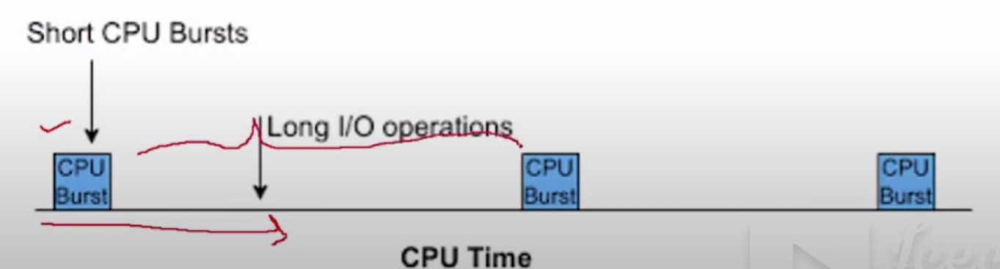
該影片用圖簡單闡述，I/O Bound 的處理，其實真正用到 CPU 的時間很少很少。但對於一個I/O操作具體什麼時候能回應，其實是未知的。由於 I/O 操作的延遲不可預期，這就導致了系統在等待 I/O 回應的過程中，CPU 的資源可能無法被充分利用。在這些等待期間，CPU 可能切換到另 一個可以利用 CPU 資源任務的執行，這就引出了 CPU Context Switching 的概念。
CPU Context Switching
Context
這裡指的 Context，指的是該應用程式/Thread/Coroutine 等等在執行時的環境，包含了所有的 Register 的內容、該應用程式正在使用的文件（或你說 FileDescriptor）、記憶體中的等變數內容（MMU）等等。
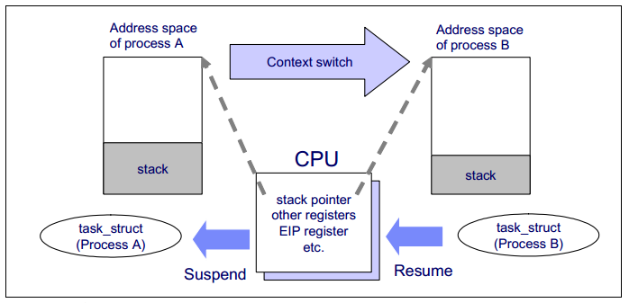
上圖示意，同一個 CPU 從 Process A 切換至 Process B 來執行的流程跟需要用到的 context 內容，過程中會進行現有 context 的儲存，已經載入新的 context。
其實 CPU context swithing 細說有三種，Process context switching、Thread context switching 與 Interrupt Context Switching。有興趣能根據這關鍵字去搜尋學習。
Context Switching 成本分析
在系統運行的過程中，context switching 是無法避免的操作，尤其在高併發和 I/O 密集型任務中，頻繁的上下文切換可能會對系統性能造成嚴重影響。Context switching 的成本主要來自於 CPU 從執行一個 goroutine（或 thread）切換到另一個的過程中所需的資源和時間開銷。
Context Switching 的開銷
上下文切換的過程中，CPU 需要暫停當前正在運行的 goroutine，保存當前任務的狀態（即 context），並加載下一個要執行的 goroutine 的狀態。這些操作涉及到寄存器狀態的保存和恢復，page table 切換，記憶體快取的刷新等操作。雖然對於單次上下文切換，這些開銷看起來是很小的，但在高併發或 I/O 密集型任務中，大量的 goroutine 會導致頻繁的 context switching，累積起來的開銷可能對系統的整體性能造成明顯的影響。
上下文切換的成本分為三大類型：
- Process Context Switching: 這是最昂貴的，因為涉及到切換不同的應用程序（process）間的記憶體空間和系統資源。
- Thread Context Switching: 相較 process switching，thread switching 較輕量級，因為在同一個 process 內切換，不涉及 page table 的更新，但依然需要保存和恢復寄存器等資料。
- Goroutine Context Switching: Go 語言的 goroutine 由 runtime 管理，進行調度時，開銷比系統級別的 thread 較小，但在高併發的情況下，goroutine context switching 依然可能對系統性能產生影響。
這三種類型的 context switching 切換的成本依序是 Process context switching > Thread context switch > Interrupt Context Switching。
在 Linux 系統中，這些 context switching 共同協作，以確保系統能夠多任務併發運行，並及時回應各種事件和操作。但這些 switching 其實都有成本與開銷，如果設計軟體時沒設計好，就會產生巨量的 context switching 其實反而沒達到當初想要的吞吐量與效能，反而表現的會更差。
因此在 I/O 密集型工作場景中，常見的一個現象是，儘管系統的瓶頸主要來自 I/O 操作，CPU 仍可能達到飽和狀態，進而導致整體性能下降。這通常發生在系統同時處理大量 I/O 任務時，尤其是在高併發的情境下，CPU 必須頻繁地進行 context switching 來協調不同的 I/O 操作與計算任務。在這種情況下，如何優化 I/O 操作便成為了提升性能的關鍵。常見的優化手段包括使用非同步 I/O，以減少 CPU 的閒置等待時間，或是採用批量處理 I/O 任務的方式，將多個 I/O 請求合併處理，以降低 context switching 的頻率。這些方法能有效減少系統因 I/O 導致的延遲，同時提高 CPU 資源的利用率，進一步改善整體性能。
用 Go 產生大量的 context switching
通過增加大量的 Worker 或 Thread 來提高吞吐量是一種常見的優化方法，但我們需要謹慎地評估系統的 context switching 頻率，因為過多的 context switching 可能會使問題更加嚴重。
Go 有個函式 Gosched() 可以強制讓該 goroutine 釋放所佔有的 CPU，來讓其他 gorouine 能使用該 CPU 處理事情。搭配 GOMAXPROCS() 限定該程式最多使用 1 個 CPU 核心。透過模擬單核心環境中的行為，這樣所有的goroutine 都必須在同一個 CPU 上執行，這也意味著它們需要更多的 context switching 來共享這個 CPU 處理時間。
package main
import (
"flag"
"fmt"
"log"
"os"
"os/signal"
"runtime"
"sync"
"syscall"
)
func excessiveWorker(id int, wg *sync.WaitGroup) {
defer wg.Done()
for {
// 模擬大量的磁碟 I/O 操作
data := make([]byte, 1024*1024*1) // 1MB 大小的資料
err := os.WriteFile(fmt.Sprintf("/tmp/testfile_%d", id), data, 0644)
if err != nil {
continue
}
_, err = os.ReadFile(fmt.Sprintf("/tmp/testfile_%d", id))
if err != nil {
continue
}
runtime.Gosched()
// 模擬取得資料後的計算
sum := 0
for i := 0; i < 1000; i++ {
sum += i
}
}
}
func main() {
numWorkers := flag.Int("workers", 1000, "number of workers to start")
procs := flag.Int("procs", 1, "number of go max procs")
flag.Parse()
runtime.GOMAXPROCS(*procs)
sigChan := make(chan os.Signal, 1)
signal.Notify(sigChan, syscall.SIGINT, syscall.SIGTERM)
var wg sync.WaitGroup
for i := 0; i < *numWorkers; i++ {
wg.Add(1)
go excessiveWorker(i, &wg)
}
fmt.Printf("Running workers: %d", *numWorkers)
go func() {
<-sigChan
log.Println("Received signal, shutting down...")
os.Exit(0)
}()
wg.Wait()
}
go build -o cs main.go
./cs
Context Switching 的具體影響
透過這樣的程式，我們可以實際觀察到系統在進行大量上下文切換時的性能變化，這包括：
- CPU 利用率的下降：儘管系統內有很多 goroutine 在運行，CPU 的利用率並沒有達到最高，這是因為 CPU 的大部分時間花費在上下文切換上，而非執行實際的計算任務。
- 吞吐量的下降：隨著 goroutine 數量的增加，context switching 的成本越來越高，這會直接導致系統吞吐量的下降。這意味著即便有更多的 goroutine，系統也無法更有效地處理任務。
- 性能瓶頸：通過觀察上下文切換的開銷，我們可以得出系統的瓶頸可能並非來自於 CPU 或記憶體，而是由於過多的 context switching 造成的性能損耗。這時，我們可以考慮調整 worker 或 thread 的數量，減少不必要的切換開銷來提高系統效能。
通過這些觀察和分析，我們可以針對特定的應用場景來調整系統的設計和配置，從而在 I/O 密集型任務中找到最佳的工作者數量，減少 context switching 的成本，提升整體的系統性能。
在我執行該程式後，首先我先使用 top 這工具做簡單的觀察，
執行程式之前
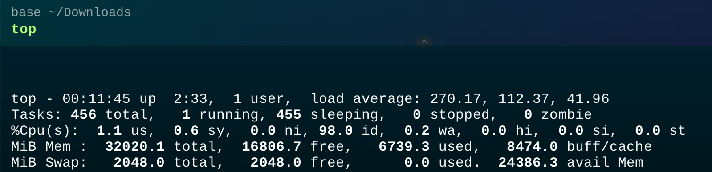
執行程式之後
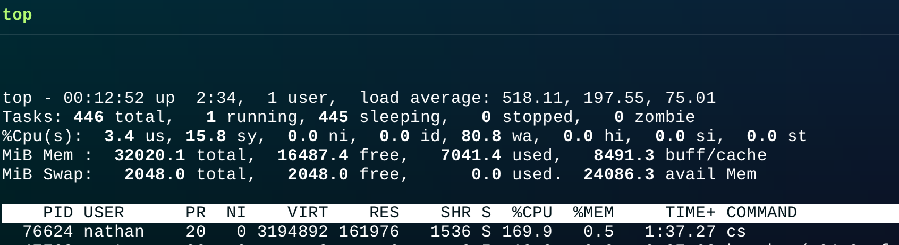
能看見load average 瞬間來到五百多。load average: 518.11, 197.55, 75.01分別表示系統在過去 1 分鐘、5 分鐘和 15 分鐘內的平均負載。這些數值非常高，表示系統的運行隊列中有大量的程式在等待 CPU 資源。
然後 CPU 情況，%Cpu(s): 3.4 us, 15.8 sy, 0.0 ni, 0.0 id, 80.8 wa, 0.0 hi, 0.0 si, 0.0 st，其中80.8 wa: 等待 I/O 操作完成的時間百分比。這是主要的負載來源，表示 CPU 大部分時間在等待磁碟或其他 I/O 操作完成。
然後能看到這程式使用了 VIRT 3.1 GB， RES 佔用了 160MB。%CPU 169%: 該程式大約 1.7 個 CPU 核心。
RES 是我們這程式佔用的實際物理記憶體大小，佔用 160MB，因為我們有把文件內的資料讀取進去程式中。VIRT 來到了 3.1 GB，這是由於大量的 goroutine 分配或HTTP 請求的高併發處理，以及 Go 運行時記憶體管理所致。這些因素在大量併發的情況下累積，會導致 VIRT 看起來非常大，但實際上未必消耗了同樣多的物理記憶體。
這次 top 的輸出顯示了系統處於極高負載的狀態，主要表現在高 load average、高 wa 值和幾乎耗盡的記憶體。這些數據表明系統可能正在執行大量 I/O 密集型任務，導致 CPU 大部分時間在等待 I/O 完成，記憶體資源緊張，並且進程競爭 CPU 資源非常激烈。如果不加以優化，系統性能可能會進一步惡化，影響到正常運行。
小結
今天我們介紹了 CPU 使用率與 I/O 密集型任務之間的關係，並且深入探討了 CPU context switching 如何影響多 worker 的高併發場景。這些知識為我們了解如何正確設置系統中的 worker 數量奠定了基礎。
明天，我們將重點關注任務執行時間的分析，通過更詳細的測量來找出系統的性能瓶頸，並且研究如何根據系統的實際表現來動態調整 worker 的數量，以達到最佳的吞吐量與效能。
希望這篇文章能夠幫助社群中的網友對 I/O 密集型任務有更深入的理解，也能幫助大家更有效率地使用系統資源。
D14 CPU 觀測工具 vmstat 與 pidstat
- 系列：應該是 Profilling 吧？系列 第 14 篇
- Day：14
- 發佈時間：2024-09-14 01:17:31
- 原文：https://ithelp.ithome.com.tw/articles/10350171
昨天我們在D13 閒聊I/O密集型任務與 Context Switch ，我們探討了 I/O 密集型任務與 CPU 上下文切換之間的關係，並以範例程式展示了如何觀察系統在高併發情況下的資源使用情形。透過這些觀察，我們了解到過多的 worker 不僅可能無法有效提升系統效能，還會因上下文切換過於頻繁而造成額外的性能損耗。
今天，我們將延續這個話題，進一步探討如何使用 vmstat 和 pidstat 等觀測工具來深入分析 CPU 的使用情況，找出系統的性能瓶頸。這將幫助我們更清楚地了解任務的執行時間與資源利用，進而為後續的優化提供依據。
U.S.E. 方法
關於 U.S.E. 方法，其實以前在鐵人賽有很簡略的介紹過淺談DevOps與Observability系列 第 19 篇
U.S.E.（Utilization、Saturation、Errors）方法，應用於性能研究，主要用來識別系統瓶頸。對於所有的資源，能看見並分析它的利用率、使用程度和錯誤。
- 資源︰之前一直在提，所有主機裡的物理元件（CPU、記憶體、硬碟網卡等）。某些軟體的資源其實也能被算入其中。
- 利用率︰在規定的時間間隔內，資源用於服務工作的時間百分比。雖然資源繁忙，但是資源來有餘力接受更多的工作。主要用來告訴我們資源有多忙碌。
- 飽和程度/壓力︰過量的工作或排隊的工作量，這可以說明資源是否已經超載。
- 錯誤︰錯誤事件的個數。
對於某些資源類型，這裡的利用率指的是資源所用掉的容量。因為利用率有兩種，基於容量和基於時間。
Utilization 利用率
基於時間的利用率
基於時間的利用率是使用排隊理論做正式定義的，有關排隊理論能參考本系列的D8 性能工程基本定律 - 排隊理論。
主機或資源繁忙的平均值
公式 U = B/T
U 是利用率，B 是 T 時間內系統的繁忙時間，T 是觀測週期。
像硬碟監測工具 iostat(1) 調用的指標 %b 就是一秒內硬碟的忙碌百分比。
基於時間的利用率這個指標高速我們該資源的忙碌程度。當這個資源的利用率達到了100%，資源就會發生競爭時性能會有嚴重的下滑。這時候方便我們檢查其他指標以確認該資源是不是已經成為系統的瓶頸。
但還是有某些資源能夠併行的為多個操作提供服務。因此在 100% 利用率的情況下，性能下滑的幅度會比較有限，因為它們還是能接受更多的工作。以電梯大樓的電梯為例，當電梯在樓層間移動時，他是正在被使用中的，當它閒置等待時，它是不被使用的。然而，即使電梯處於 100% 忙碌上下移動時，它依然能夠接受更多乘客的。因為這裡討論的不是容量而是時間。
當硬碟處於 100% 忙碌時也還是能接受更多的工作，因為它具備有 Buffer，能把寫入的資料寫進 Buffer，稍後在完成寫入硬碟的動作。因此級便當它在 100% 忙碌時，依然有空閒來接受更多工作。
基於容量的利用率
基本上容量的利用率是在容量規劃時，由 IT 們決定的。
系統和硬體元件都能提供一定的吞吐量。不論性能好壞，系統和硬體元件都工作在其容量的某一比例上。這個比例就是容量的利用率。
與基於時間的利用率不同的是，容量處於 100% 利用率的硬碟就不能再接受更多的工作了。但若用時間看，100% 的利用率只是指時間上的100%忙碌。
大家應該很常發生突然主機就很多操作就失敗了，甚至卡住了。進去主機看才發現是硬碟滿了。這就是容量處於100%忙碌的最佳例子。或者資料庫主機的連線數只開放500條連線，而有服務沒用 connection pool 導致有 500 個請求同時處理時，就把資料庫主機的連線數這容量也使用完了，資料庫主機就無法接受更多請求處理了。
所以再次回到電梯的例子，當電梯是 100% 容量時，才是意味著裝不下更多的乘客了。
Saturation 飽和程度/壓力
隨著工作量增加而對資源的請求處理超過資源所能處理的程度叫做飽和程度。飽和程度發生在 100% 基於容量的利用率時，這時過多個工作將無法被處理，進而開始排隊。
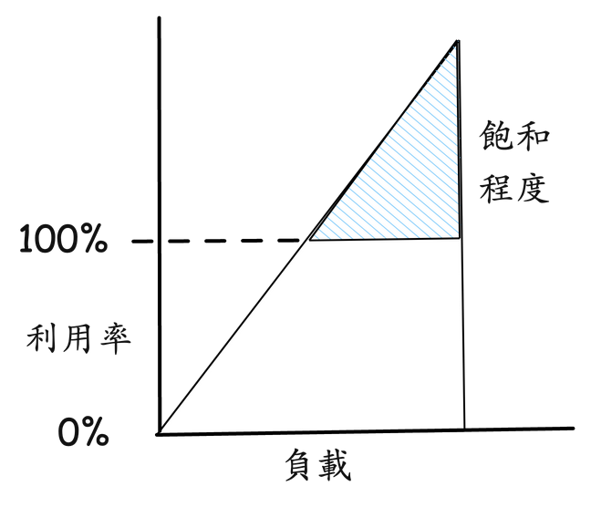
隨著負載/壓力的持續上升，上圖的飽和程度在超過基於容量的 100% 利用率的標記後線性增長。因為時間花在了等待上，所以任何程度的資源飽和都是性能瓶頸。而對於基於時間的利用率，排隊和飽和程度可能就不發生在 100% 利用率時，這取決於資源處理任務的併行能力。
像資料庫的 update，如果多筆同時要 update 就會受限於 row lock 而排隊。但讀取卻是shared lock。
在我們理解利用率與飽和程度後，對於性能瓶頸的排查就多了一分認識。
而錯誤也需要被調查，因為也會損害性能表現。
U.S.E. 的排查過程
U.S.E. 會將方法引導至一些關鍵指標上，這樣可以盡快地核實所有系統資源。如果通過該方法核實所有系統資源還是沒找到問題，那麼就能使用其他方法來繼續深入查找。
首先檢查錯誤，因為資源的錯誤通常可以很快被解釋。在開始調查其他指標之前排除掉錯誤是很省時的。
接著要排查的是飽和程度檢查，因為這個比利用率更好解釋，任何資源級別的飽和都可能是性能瓶頸問題。只是也未必一開始找到的資源飽和，就是主因 :(
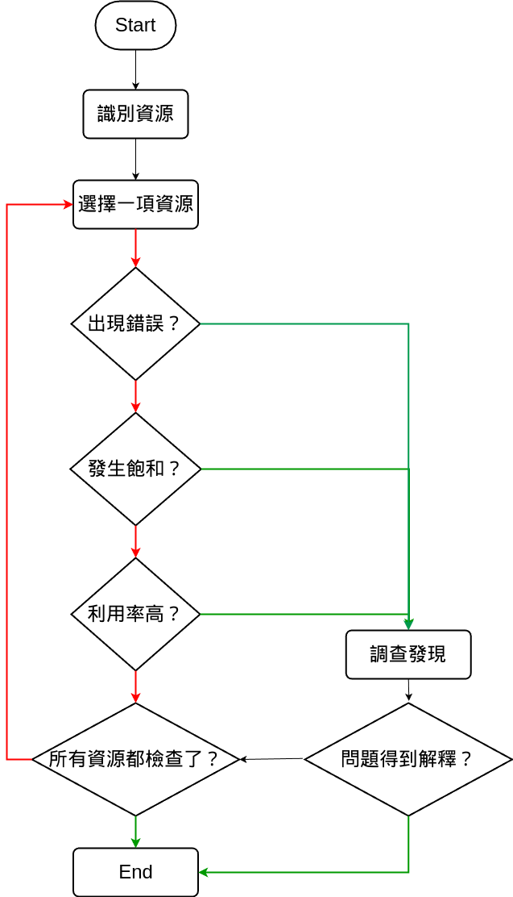
這裡以 D11 的購票窗口為例，利用率就相當於有多少購票窗口忙於購票和收費。利用率 100% 表示著我們找不到一個空閒的購票窗口，必須排隊在別人的後面（這就是飽和）。如果總經理跟老闆會報，一整天購票窗口的利用率是 40%，這老闆能判斷當天是否有人在某一時間排過隊嘛？很可能在高併發時期確實排過隊，因為那時所有的購票窗口的利用率都是 100%，但是這在一天的平均值上試看不出來的。
老闆永遠只看到大家平均工作才 4hr，就是沒發現都某幾天都忙到炸了。
我在可觀測性工程一書也翻譯到使用第一原則的除錯工作流程，工具怎用都很容易學，但知道這工具具體提供什麼樣的數據，能解決什麼問題？以及有沒有一個標準化的作業流程來處理，是可觀測性工程想要倡導的精神之一。
CPU 性能監測
當我們知道了 U.S.E.後，就不難發現 CPU 的關鍵指標是利用率（繁忙百分比）和飽和程度（從負載推算出來的運行佇列長度）。
Linux 對於 CPU 有蠻多工具可以使用，uptime/top 用來檢查平均負載。mpstat 用來檢查每個 CPU 的統計資訊。perf/profile 從 user space 或 kernel space 的角度剖析 CPU 的使用。以及今天要介紹的 vmastat 用來檢查 CPU 的使用情況。pidstat 將 CPU 使用情況分解成 user space 和 kernel space 來顯示。
這些工具主要是基於時間的利用率來進行資源的觀測和分析，而不是基於容量的利用率。
top：展示了系統的當前狀態，包括 CPU 使用率、記憶體使用情況、進程信息等，主要反映了系統在一段時間內的資源使用狀況，屬於基於時間的觀測工具。
vmstat：提供了 CPU、記憶體、虛擬記憶體、磁碟、系統過程等的統計數據，特別強調了 CPU 在一段時間內忙碌的比例，包括 user time 和 system time，也屬於基於時間的工具。
pidstat：可以將 CPU 的使用情況按照 user space 和 kernel space 拆解展示，同樣是在一段時間內進行資源的使用率分析，屬於基於時間的利用率觀測工具。
基於時間的利用率，主要反映資源在觀測週期內的繁忙程度，而不會直接涉及到容量飽和問題。這些工具的數據可以幫助我們了解系統的忙碌程度和性能瓶頸，尤其是在資源接近 100% 時，能夠提示潛在的性能問題，但它們並不會直接反映資源的容量利用狀況，例如硬碟空間是否滿了等。
VMSTAT
VMSTAT 是個 Linux 工具能夠動態監看 OS 的 CPU、記憶體、I/O 等活動。我們能透過 TOP 看到資源的使用情況，但還是看不到有在發生 context switching。其中在 VMSTAT 提供了 system 中提供了 cs （context switches per second）。還有 CPU 的資訊像是 us（user time） 和 sy（system time）、id（idle）和 wa（waiting for IO）。
以下是每個欄位的解釋：
procs (處理程式)
r: 可運行的處理程式數量（處於運行佇列中的處理程式）。如果該數字高於 CPU 核心數，表示系統處於過載狀態。
b: 等待 I/O 操作完成的處理程式數量（被阻塞的處理程式）。
memory (記憶體)
swpd: 使用的虛擬記憶體大小（以 KB 為單位）。若系統記憶體不足，系統會將部分內存交換到硬碟，該數值會上升。
free: 空閒的物理記憶體大小（以 KB 為單位）。
buff: 用於緩存硬碟的記憶體大小（以 KB 為單位），一般是用來做 I/O 操作的快取。
cache: 用於快取檔案的記憶體大小（以 KB 為單位），這些快取的檔案可以快速地被重複讀取而不需要從硬碟讀取。
swap
si: 由硬碟進入虛擬記憶體（swap-in）的數量（以 KB 為單位）。
so: 從虛擬記憶體移至硬碟（swap-out）的數量（以 KB 為單位）。當這兩個數值很高時，表示系統可能記憶體不足，頻繁進行 swap 會嚴重影響性能。
io (I/O)
bi: 從硬碟讀取的數量（以 KB/s 為單位）。
bo: 寫入到硬碟的數量（以 KB/s 為單位）。如果 bo 很高，通常表示系統正在進行大量的 I/O 操作。
system (系統)
in: 每秒的中斷次數，這包括硬體中斷和軟體中斷。
cs: 每秒的 context switch 次數。當該數值過高時，表示系統頻繁在不同的處理程式或 thread 之間切換，可能會導致性能問題。
cpu
us: user space 應用程式佔用的 CPU 時間百分比（user time）。
sy: kernel space 系統執行緒佔用的 CPU 時間百分比（system time）。
id: CPU 空閒時間的百分比（idle time）。
wa: CPU 等待 I/O 操作完成的時間百分比（I/O wait time）。
st: 虛擬化環境中，其他虛擬機佔用的 CPU 時間百分比（steal time），該值通常在虛擬化環境下才會有。
看下圖，vmstat 5 表示我每5秒統計顯示一次數據，這裡面的 cs 是這5秒內，每秒平均發生 context switching的次數。可以看見我平時大概每秒3000次上下的context switching。大多數情況下 us 和 sy 僅有 1% 到 2% 的 CPU 使用，這表示系統在執行較少的計算任務。然後 CPU 大部分時間處於 Idle，顯示 95% 到 99% 的 idle 時間。這表示系統在當前負載下有足夠的資源。
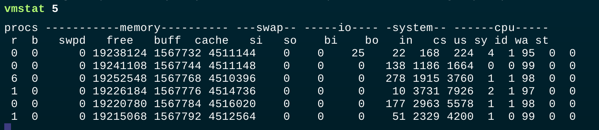
接著來啟動 go cs程式。可以看見下圖，第 2 行開始有很顯著的不同了。Context switching 次數從數百次到數千次迅速增加到每秒幾千次甚至超過一萬次。，這正是由於我建立了大量 goroutine 並在單個 CPU 核心上運行所導致的結果。這樣的情況會顯著增加系統的調度負擔，導致更多的 context switching。我們能通過 VMSTAT 該工具觀察。
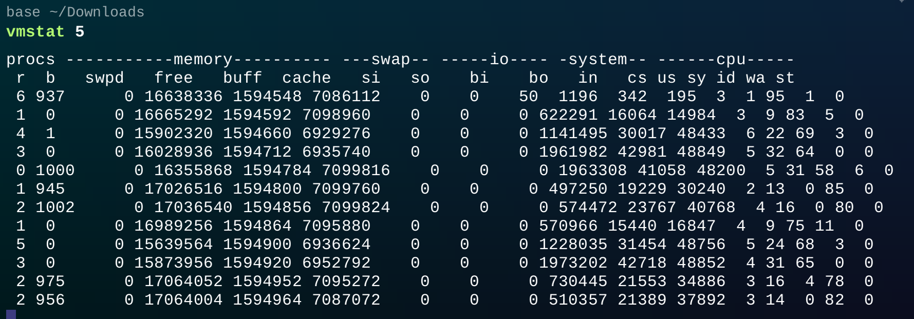
此外這裡還透漏很多資訊。b: 正在等待 I/O 操作完成的thread數量。這裡的數字非常高，大約在 1000，這與我們程式設定的 numWorkers 一致，這表示有大量的進程因為等待 I/O 操作（例如磁碟讀寫）而被阻塞。I/O 的 bo 寫入量很高，這是能理解的，畢竟我們真的有寫資料的動作。
重點在於 System 與 CPU 的部份。 in: 每秒進行的 interrupt 次數。in 值大幅增加，有時高達 11,827 次，表示系統正在處理大量的中斷。cs: 每秒上下文切換的次數。cs 值大幅增加，有時高達 17,219 次，表示大量的 context switching，系統負載非常高。us: User space 程式佔用的 CPU 百分比。通常在 0% 到 4% 之間，這表示 CPU 的計算資源大部分用於處理系統操作和 I/O，而不是應用程式邏輯。id: 空閒時間百分比。大部分時間 id 非常低，甚至達到 0%，這表明 CPU 幾乎沒有空閒時間，完全被利用。wa: I/O 等待時間百分比。wa 值非常高，達到 94% 甚至更高，這表明 CPU 大部分時間在等待 I/O 操作完成。這是 I/O 密集型負載的特徵。
這些統計資料表明系統處於非常高的負載狀態，特別是在 I/O 操作上，CPU 大部分時間都在等待磁碟 I/O 完成。相比於平常，系統的記憶體和 I/O 資源消耗非常嚴重，Context switching 次數大幅增加，CPU 幾乎無空閒時間。這樣的情況可能會導致系統性能下降或回應變慢，特別是在 I/O 密集型應用場景下。
PIDSTAT
剛剛 VMSTAT 能看到整體情況，但要是我們想往更細緻的方向去排查分析，通常就要依賴 pidstat 這工具了。 pidstat 主要用來監控和報告個別處理程式的各種性能指標，包括 %CPU（CPU 使用率）、記憶體使用率、I/O 操作、Context switching 等。
以下是每個欄位的解釋：
UID
使用者識別碼（User ID），指該處理程式的擁有者。UID 是用來標識處理程式屬於哪個用戶的。
TGID
處理程式組識別碼（Thread Group ID），也稱為處理程式識別碼（PID）。它表示處理程式或 thread 組的主 ID。在multi thread 的情況下，所有thread 共享同一個 TGID。
TID
Thread 識別碼（Thread ID），也稱為thread ID。這是每個 thread 的唯一標識符，用來區分同一處理程式內的不同 thread。
cswch/s
每秒自願上下文切換次數（Context Switch per second, Voluntary）。這表示該 thread 自願釋放 CPU 進行 I/O 操作或等待其他資源時，發生的上下文切換次數。
nvcswch/s
每秒非自願上下文切換次數（Non-Voluntary Context Switch per second）。這表示該 thread 被 OS 強制停止運行並切換到其他thread 時，發生的上下文切換次數。通常是因為該thread 已經耗盡了它的 CPU 時間配額，或者系統資源競爭激烈。
Command
顯示當前thread /處理程式的名稱或正在執行的命令。
其中 -w 是用來顯示處理程式的Context switching次數，包括 cswch 自願 Context switching（由處理程式自身引起）和 nvcswch 非自願Context switching（由操作系統引起）。
能看見下圖所示，PID 128422 (cs)：此處的 cs 處理程式在報告時間內每秒發生了 4701.70 次 cswch，並且有 11.89 次 nvcswch/s。這表明該處理程式頻繁地進行了 I/O 操作或其他等待操作，導致了大量的 cswch。
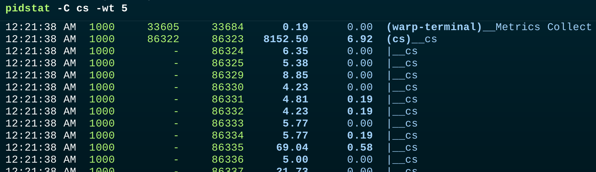
那我們就能抓到是哪個程式沒設計好，導致 CPU 的資源忙於 Context switching上。
小結
今天我們深入探討了如何利用 vmstat 和 pidstat 來分析系統的 CPU 使用情況和上下文切換的問題。透過這些工具，我們能夠觀察到 I/O 密集型任務在高併發情境下，如何引發頻繁的上下文切換，並進而影響系統的整體性能。我們還解釋了如何通過自願與非自願上下文切換數據，來識別系統中的性能瓶頸與潛在的設計缺陷。這些觀察為進一步優化系統性能奠定了基礎。明天，我們將進一步探討如何使用 Go 的工具來深入發現和解決這些問題。
其他參考
知乎 - Linux 記憶體問題定位方法
D15 淺談 Go Tool Trace - 1
- 系列：應該是 Profilling 吧？系列 第 15 篇
- Day：15
- 發佈時間：2024-09-15 01:03:12
- 原文：https://ithelp.ithome.com.tw/articles/10350656
在昨天的文章中，我們探討了 I/O 密集型任務與 CPU 上下文切換的關係，並利用觀測工具 vmstat 和 pidstat 分析了系統在高併發情況下的資源使用情形。我們看到了過多的 worker 會導致上下文切換的頻率大幅增加，從而對性能產生負面影響。
今天，我們將繼續延伸這個主題，轉向 Go 語言的生態圈，探討如何利用 Go 自帶的追蹤工具，如 Go Trace，深入分析程式的效能瓶頸。我們將展示如何通過對程式的執行時間、I/O 操作和 goroutine 的調度進行追蹤，來發現潛在的性能問題，並利用這些工具進一步了解系統的資源使用情況。這將使我們能夠更有效地解決高併發環境下的效能挑戰，並為未來的優化提供有力依據。
Go Trace
在 Go 的診斷工具中，Tracing 是一種用於分析程式碼延遲和執行路徑的重要工具。透過追蹤程式碼的執行，可以深入了解應用程式在處理請求或任務時的各個階段的延遲情況，識別出效能瓶頸。
Trace 概述
Tracing 是一種透過對程式碼進行追蹤，從而分析整個呼叫鏈中的延遲的技術。它不僅能幫助我們理解單一請求的執行時間，還能用於分析複雜系統中分散式請求的效能。
Trace 在 Go 中的實現
Go 提供了一個執行時間執行追蹤器（runtime execution tracer），用於在指定時間段內擷取各種執行時間事件，如排程、系統呼叫、垃圾收集（GC）、Heap 大小等。這些事件可以透過 go tool trace 進行視覺化和分析。透過 Trace，可以識別 CPU 使用率、網路或系統呼叫是否導致了 goroutine 的搶佔，以及系統的整體並行執行情況。
Trace 的用途
- 分析應用程式延遲：透過追蹤和分析應用程式的延遲，可以了解每個元件對整體延遲的貢獻，從而識別效能瓶頸。
- 理解 goroutine 的執行方式：Trace 提供了對 goroutine 執行的詳細分析，幫助識別哪些 goroutine 有延遲或阻塞問題。
- 檢查並行執行問題：Trace 能幫助偵測程式是否有併發化不足的問題，例如是否有因 Lock 競爭而導致的串列執行。
因此將範例程式新增 runtime/trace 。
package main
import (
"flag"
"fmt"
"log"
"net/http"
"os"
"runtime"
"runtime/pprof"
"runtime/trace"
"sync"
"time"
)
// 模擬一個從 Message Queue 中接收任務並處理的 Worker
func worker(id int, tasks <-chan int, wg *sync.WaitGroup) {
defer wg.Done()
for task := range tasks {
// 模擬 I/O 操作 (寫入和讀取文件)
filename := fmt.Sprintf("/tmp/testfile_%d_%d", id, task)
data := make([]byte, 1024*1024*2) // 生成 2MB 的數據
// 模擬寫文件 I/O
err := os.WriteFile(filename, data, 0644)
if err != nil {
log.Printf("Error writing file: %v\n", err)
}
// 模擬讀文件 I/O
_, err = os.ReadFile(filename)
if err != nil {
log.Printf("Error reading file: %v\n", err)
}
// 刪除文件
os.Remove(filename)
// 模擬其他 CPU 任務
sum := 0
for i := 0; i < 100000; i++ {
sum += i
}
}
}
func main() {
// 使用 flag 來設置 worker 的數量
numWorkers := flag.Int("workers", 10, "number of workers to start")
numTasks := flag.Int("tasks", 1000, "number of tasks to process")
procs := flag.Int("procs", 1, "number of go max procs")
flag.Parse()
// 設置最大 CPU 核心數，這裡可以嘗試不同的設定來觀察效果
runtime.GOMAXPROCS(*procs)
// 啟動 pprof 監控
go func() {
log.Println(http.ListenAndServe("localhost:6060", nil))
}()
// 設置 Trace 和 CPU Profile
cpuFile, err := os.Create("cpu.prof")
if err != nil {
log.Fatalf("could not create CPU profile: %v", err)
}
defer cpuFile.Close()
if err := pprof.StartCPUProfile(cpuFile); err != nil {
log.Fatalf("could not start CPU profile: %v", err)
}
defer pprof.StopCPUProfile()
traceFile, err := os.Create("trace.out")
if err != nil {
log.Fatalf("could not create trace file: %v", err)
}
defer traceFile.Close()
if err := trace.Start(traceFile); err != nil {
log.Fatalf("could not start trace: %v", err)
}
defer trace.Stop()
// 定義不同的 Worker 數量來測試
start := time.Now()
// 控制任務數量
//numTasks := numTasks
// 創建一個 Channel 作為任務隊列
tasks := make(chan int, *numTasks)
var wg sync.WaitGroup
// 啟動多個 Worker
for i := 0; i < *numWorkers; i++ {
wg.Add(1)
go worker(i, tasks, &wg)
}
// 模擬向 Message Queue 中發送事件
for i := 0; i < *numTasks; i++ {
tasks <- i
}
close(tasks)
// 等待所有 Worker 完成
wg.Wait()
elapsed := time.Since(start)
fmt.Printf("Workers: %d, Elapsed Time: %s\n", *numWorkers, elapsed)
}
一樣編譯後執行該程式，會發現產生了 trace.out這檔案。
Go Tool Trace
Go 有提供幾個工具，都能在 go/cmd 底下找到︰
go tool trace Go 提供的一個工具，用於檢視和分析程式的 Trace 檔案。這個工具可以幫助開發者深入理解程式的執行時間行為，特別是在並發程式的調度、系統呼叫、Atomic Primitives（如鎖定和通道）以及網路 I/O 等方面。以下是 go tool trace 的主要功能和使用方法的詳細說明：
go tool trace 需要 Trace來進行分析，而產生Trace 有三種方式︰
- runtime/trace.Start
- net/http/pprof package
- go test -trace
我們主要展示的是第一種，能看見上述的範例 import runtime/trace。
查看 Trace 檔案
產生 Trace 檔案後，你可以使用以下命令在瀏覽器中查看 Trace 檔案的詳細內容：
# 假設檔名是 trace.out
go tool trace trace.out
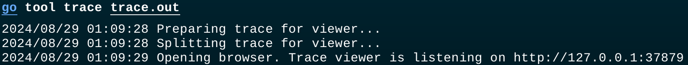
然後瀏覽器就會被自動開啟了。細節等等在介紹。
產生 Pprof 類似的 Profile
除了查看 Trace 檔案外，你還可以使用 go tool trace 從 Trace 資料中提取類似 pprof 的 Profile。這些 Profile 可以幫助你分析程式的效能瓶頸。
支援的 Profile 類型包括：
- net: 網路阻塞
- Profile sync: 同步阻塞
- Profile syscall: 系統呼叫阻塞
- Profile sched: 調度延遲 Profile
net：網路阻塞 Profile
用途：
net Profile 用於分析程式中 Goroutine 因為網路 I/O 操作（如網路請求、資料傳輸等）而導致的阻塞情況。這個 Profile 可以幫助識別網路操作中導致程式延遲的瓶頸，例如網路連線、資料讀取或寫入時的延遲。
典型場景：
當一個 Goroutine 發起網路請求（例如透過 net/http 套件進行 HTTP 請求），如果網路較慢或目標伺服器回應時間較長，Goroutine 就會因為等待網路 I/O 操作完成而阻塞。 如果程式經常進行網路通訊，網路延遲或頻寬限制可能會顯著影響程式的回應時間和吞吐量。
如何使用：
產生 Trace 資料後，可以使用下列命令產生 net Profile：
go tool trace -pprof=net trace.out > net.prof
然後使用 go tool pprof net.prof 進行分析，查看哪些網路操作引起了最長時間的阻塞。
net Profile 分析的具體內容：
連線阻塞：當 Goroutine 嘗試建立網路連線（如透過 Dial 方法）時，可能會因為網路不通或連線耗時過長而阻塞。 net Profile 會記錄這些情況。 資料讀取阻塞：Goroutine 從網路連線讀取資料時，若網路傳輸速度較慢或對端回應時間長，Goroutine 會等待資料流完成，導致阻塞。 資料寫入阻塞：Goroutine 透過網路連線傳送資料時，如果網路頻寬有限或對端接收速度慢，也會導致寫入操作的阻斷。
典型使用場景
- Web 服務：對於需要處理大量 HTTP 請求的 Web 服務，透過 net Profile 可以識別哪些請求處理因網路延遲而受阻，從而優化網路請求的分發或增加連線池。
- 分散式系統：在分散式系統中，節點之間的通訊至關重要。使用 net Profile 可以幫助開發者找到網路通訊中的瓶頸，並優化節點之間的資料傳輸效率。
- API 用戶端：對於需要頻繁呼叫外部 API 的用戶端應用，透過分析 net Profile，可以優化請求的策略（如 Timeout、Retry 等）以減少網路延遲的影響。
如何利用 net Profile 進行最佳化
- Connection pool 最佳化：如果發現大量連線阻塞，可以考慮使用 Connection pool以減少建立新連線的開銷。
- 逾時設定：在網路請求中設定合理的逾時，可以避免因網路問題導致的長時間阻塞。
- 並發請求控制：透過限制並發請求數，防止網路頻寬被耗盡，從而減少請求間的相互影響。
- 快取和負載平衡：對於頻繁存取的資源，使用快取或負載平衡技術可以降低單點的網路負擔，提升整體效能。
sync：同步阻塞 Profile
用途：
sync Profile 用於分析程式中因使用同步原語（如 Mutex、RWMutex、Cond、WaitGroup、Channel 等）而導致的 Goroutine 阻塞情況。這個 Profile 可以幫助開發者辨識鎖定競爭、mutex 爭用等問題，從而優化同步機制，減少不必要的阻斷。
典型場景：
鎖定競爭：當多個 Goroutine 同時嘗試取得一把鎖（如 Mutex 或 RWMutex），如果鎖的持有時間過長，其他 Goroutine 就會在取得鎖定時被阻塞，這可能導致程式的整體效能下降。 Channel 阻塞：Goroutine 在等待從 Channel 接收或發送資料時，如果 Channel 被填滿或為空，Goroutine 可能會被阻塞，直到操作能夠繼續進行。 條件變數（Cond）阻塞：使用條件變數時，Goroutine 可能會等待某個條件滿足而被阻塞。
如何使用：
產生 Trace 資料後，可以使用下列命令產生 sync Profile：
go tool trace -pprof=sync trace.out > sync.prof
然後使用 go tool pprof sync.prof 進行分析，查看哪些同步原語導致了最長時間的阻塞。
sync Profile 分析的具體內容：
- 鎖（Mutex/RWMutex）阻塞：在多 Goroutine 環境下，鎖是用來保護共享資源的常用機制。當一個 Goroutine 持有鎖時，其他嘗試取得鎖的 Goroutine 將被阻塞，直到鎖被釋放。 sync Profile 能夠幫助你辨識出這些鎖爭用的情況，並查看這些鎖阻塞了哪些 Goroutine 以及阻塞時間有多長。
- Channel 阻塞：Channel 是 Go 中用於 Goroutine 之間通訊的主要機制。如果一個 Goroutine 嘗試向一個已滿的 Channel 發送資料，或從一個空的 Channel 接收資料，那麼它就會被阻塞。 sync Profile 可以顯示這些阻塞情況，幫助你理解程式的瓶頸所在。
- 條件變數阻塞：條件變數（sync.Cond）允許 Goroutine 等待某個條件滿足。多個 Goroutine 可能會同時等待相同的條件，因此可能會導致阻塞。 sync Profile 可以顯示這些等待的 Goroutine 及其等待的時長。
go tool trace -pprof=sync trace.out > sync.prof
go tool pprof sync.prof
(pprof) top
(pprof) web
(pprof) list
這個指令會從 Trace 檔案中提取調度延遲的 Profile，並將其儲存為 sched.prof 檔案。
由這些範例不難發現，trace 檔案的副檔名我們習慣使用 .out，而 pprof檔案的副檔名則是 .prof，與標準習慣一致是比較好的。
常見的指令有 top、list、web
(pprof) top
Showing nodes accounting for 3147.77ms, 100% of 3147.77ms total
flat flat% sum% cum cum%
1777.87ms 56.48% 56.48% 1777.87ms 56.48% runtime.chanrecv1
1369.91ms 43.52% 100% 1369.91ms 43.52% sync.(*WaitGroup).Wait
0 0% 100% 1369.91ms 43.52% main.main
0 0% 100% 1002.61ms 31.85% runtime.(*traceAdvancerState).start.func1
0 0% 100% 1002.61ms 31.85% runtime.(*wakeableSleep).sleep
0 0% 100% 775.26ms 24.63% runtime.unique_runtime_registerUniqueMapCleanup.func1
top 這裡主要提供兩個指標：
- flat 表示某個函數自身花費的時間。
- cum 表示該函數和它調用的所有子函數花費的總時間。
也能top加數字，例如top3 顯示佔用比例最高的前三名。
接著我們就能複製 top 中你想深入調查的函数名稱。
(pprof) list main
Total: 3.15s
ROUTINE ======================== main.main in /home/nathan/Project/OpenTelemetryEntryBeook/additional_examples/context_switch/cs1/main.go
0 1.37s (flat, cum) 43.52% of Total
. . 108: tasks <- i
. . 109: }
. . 110: close(tasks)
. . 111:
. . 112: // 等待所有 Worker 完成
. 1.37s 113: wg.Wait()
. . 114:
. . 115: elapsed := time.Since(start)
. . 116: fmt.Printf("Workers: %d, Elapsed Time: %s\n", *numWorkers, elapsed)
. . 117: //}
. . 118:}
113: wg.Wait()：這行程式顯示，程式在 sync.WaitGroup.Wait() 函數上花費了 1.37 秒，佔總執行時間的 43.52%。這表示相當大的一部分時間都花在了等待所有的 worker 完成工作上。
** WaitGroup 的作用**
WaitGroup.Wait() 是一個同步 Primitives，它會阻塞主執行緒，直到所有的 worker goroutine 完成任務。這部分時間反映了 worker 處理任務所需的總時間。由於這段時間佔了很大比例，說明 worker 的運行可能存在效能瓶頸或阻塞，導致主執行緒需要長時間等待。
由於 wg.Wait() 函數是用來等待所有 worker 結束工作，所以它所花費的時間表明：
任務的處理時間較長：每個 worker 的執行時間較長，這可能是因為 I/O 操作或大量計算，導致整體處理時間增長。
(pprof) web
下圖就是 pprof 跑出來的函式依賴圖（Call Graph），能清楚理解函式之間的依賴方向，以及所佔用的成本。
線條越粗，表示佔用的相對成本是越高的。
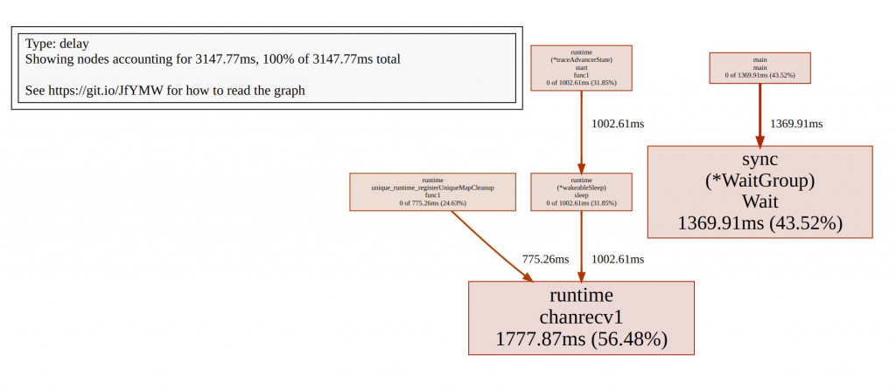
也能通過瀏覽器直接開啟 pprof 來提供可視化的分析結果。
go tool pprof -http :8080 cpu.prof
首先會先出現一個跟上圖很像也是 Call Graph，類似剛之鍊金術師裡面的賢者之們的圖。
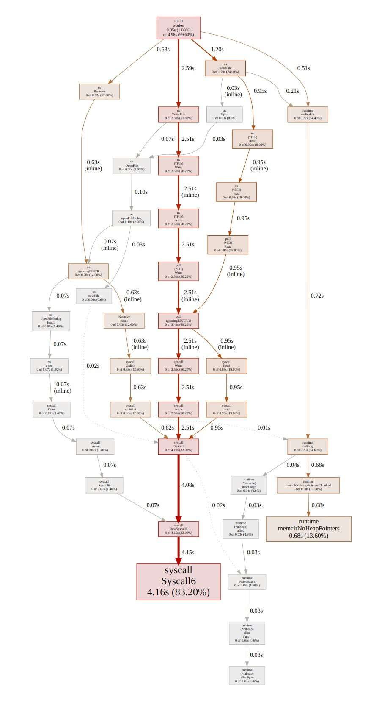
也能顯示火焰圖（Flame Graph）
火焰圖結構的結構組成有橫軸與縱軸。
橫軸代表了程式執行過程中的時間片段，每個橫向區塊表示某個函數的執行時間。火焰圖的每個區塊的寬度表示這個函數佔用了多長的 CPU 時間。因此，寬度越寬的函數，佔用的 CPU 時間就越多。
整體圖的寬度代表了整個程式的運行時間（在這個例子中是 5 秒）。
縱軸展示了函數之間的調用關係。底層函數被上層函數調用，最底層的區塊代表耗時最多的函數，它們是性能瓶頸的最直接原因。
從上往下逐層展示函數調用堆疊，頂層的函數調用其他函數，然後函數間逐步向下傳遞。
具體分析這張圖：
最頂層的函數：main.worker：這是程式中的主要 worker 函數，它調用了多個 I/O 操作（如讀取、寫入和刪除文件）。從這裡開始向下查看，表示程式的主要運行邏輯。
平常分析也是從底層看橫軸最寬的來開始著手分析。像這裡就是os.WriteFile那隻函數最寬。
典型使用場景 高並發 Web 服務：
在處理大量並發請求時，鎖的設計和使用至關重要。透過 sync Profile，可以發現哪些部分有嚴重的鎖爭用，從而優化鎖的粒度或使用無鎖資料結構。 多執行緒資料處理：在並發資料處理任務中，多個 Goroutine 可能需要協調處理共享資料。 sync Profile 可以幫助你辨識這些協調中的瓶頸，例如 Channel 阻斷或條件變數等待。 資源管理：在需要嚴格同步的場景中，例如管理共享資源池，透過 sync Profile 可以找到資源取得和釋放的瓶頸。
如何利用 sync Profile 進行最佳化
- 減少鎖的持有時間：如果發現鎖爭用嚴重，可以考慮縮短鎖的持有時間，盡量將鎖的範圍限制在必要的最小程式碼區塊內。
- 分解鎖：將一個大鎖拆分為多個小鎖，降低鎖的競爭粒度，使不同的 Goroutine 可以並發執行而不互相阻塞。
- 使用 lock-free 資料結構：在某些場景下，可以使用無鎖的資料結構（如 atomic 操作、CAS 等）來替代鎖，從而減少阻塞。
- 最佳化 Channel 使用：如果 Channel 阻塞嚴重，可以考慮增加 Channel 緩衝區的大小，或重新設計 Goroutine 通訊的策略。
syscall：系統呼叫阻塞 Profile
用途：
syscall Profile 用來分析程式中 Goroutine 因為系統呼叫（Syscall）而導致的阻塞情況。系統呼叫是程式與作業系統核心互動的主要方式，例如檔案 I/O、網路 I/O、處理程序控制等操作。 syscall Profile 可以幫助開發者辨識出哪些系統呼叫導致了 Goroutine 阻塞，以及這些阻塞如何影響程式的效能。
典型場景：
- 檔案 I/O：當 Goroutine 進行檔案讀取或寫入操作時，如果硬碟效能較差或 I/O 操作耗時較長，Goroutine 就會在系統呼叫處阻塞，等待操作完成。
- 網路 I/O：網路通訊涉及的系統呼叫（如 send, recv, connect 等）如果遇到網路延遲、頻寬限製或對方伺服器回應緩慢，Goroutine 也會阻塞，等待網路操作完成。
- 處理程序控制：例如呼叫 fork, exec 或其他與處理程序管理相關的系統呼叫時，Goroutine 可能會因為系統資源或操作的複雜性而阻塞。
如何使用：
產生 Trace 資料後，可以使用下列命令產生 syscall Profile：
go tool trace -pprof=syscall trace.out > syscall.prof
然後使用 go tool pprof syscall.prof 進行分析，查看哪些系統呼叫導致了最長時間的阻塞。
syscall Profile 分析的具體內容：
- 系統呼叫阻塞：Goroutine 在執行系統呼叫時，通常會交出控制權給作業系統 kernel，等待系統執行完成並傳回結果。在此期間，Goroutine 會處於阻塞狀態，無法執行其他操作。 syscall Profile 記錄了這些阻塞的發生位置和持續時間。
- I/O 阻塞：檔案和網路 I/O 是最常見的系統呼叫操作。如果系統 I/O 效能不佳或資源競爭嚴重，Goroutine 可能會長時間等待，syscall Profile 可以協助識別這些問題。例如，在檔案寫入時，硬碟效能下降或檔案鎖定競爭激烈都會導致 I/O 阻斷。
- 資源爭用：某些系統呼叫涉及作業系統資源的爭用，例如檔案鎖、Port 綁定等。 syscall Profile 可以幫助你找到這些爭用點，進而最佳化系統資源的使用。
典型使用場景
- 高負載 Web 服務：在 Web 服務中，頻繁的網路請求處理和 log 檔案寫入操作可能會導致系統呼叫阻塞。透過 syscall Profile，可以找出哪些系統呼叫是效能瓶頸，並進行對應的最佳化。
- 分散式系統：在分散式系統中，各個節點之間的通訊通常依賴網路 I/O。如果網路效能不佳，可能會導致大量的系統呼叫阻塞，影響整體系統的效能和回應時間。
- 高效能運算：在需要大量資料處理和檔案 I/O 的高效能運算任務中，syscall Profile 可以幫助識別哪些系統呼叫導致了效能瓶頸，從而優化資料讀取和寫入的策略。
如何利用 syscall Profile 進行最佳化
- 非同步 I/O：如果某些系統呼叫導致了嚴重的阻塞，可以考慮使用非同步 I/O 操作（如 select, epoll, kqueue 等），以減少阻塞時間，提高並發處理能力。
- 增加快取：在檔案或網路 I/O 中引入緩存，可以減少直接與系統互動的頻率，從而減少系統呼叫的阻塞時間。
- 最佳化資源分配：如果阻塞是由於系統資源（如檔案鎖、連接埠等）爭用導致的，考慮調整資源的分配策略，或透過增加資源數量來降低競爭。
- 分析並最佳化 I/O 效能：對於檔案 I/O 阻塞，可能需要進一步分析磁碟效能或檔案系統配置，以提高整體 I/O 效能，減少系統呼叫阻塞。
sched：調度延遲 Profile
用途：
sched Profile 用於分析 Go 程式中 Goroutine 調度中的延遲情況。調度延遲是指 Goroutine 已經準備好運行，但因為沒有可用的 CPU 或其他原因而沒有立即得到調度執行的時間。這種延遲可能是系統負載過高、CPU 資源緊張、或調度器策略導致的。 sched Profile 可以幫助開發者識別這些調度延遲的根源，從而優化程式的並發效能。
典型場景：
- 高併發環境下的 CPU 爭用：當系統中存在大量 Goroutine 競爭有限的 CPU 資源時，部分 Goroutine 可能會因為沒有可用的 CPU 而被延遲調度。這種情況在 CPU 密集型任務或系統負載較高時尤其明顯。
- 調度器策略：Go 的調度器負責在多個 Goroutine 之間分配 CPU 時間片。如果調度器分配不均衡或策略有問題，可能會導致某些 Goroutine 被延遲調度。
- 系統資源爭用：某些系統資源（如記憶體、I/O 等）的爭用也可能間接導致 Goroutine 調度延遲，因為這些資源的爭用會影響到 Goroutine 的執行和調度。
如何使用：
產生 Trace 資料後，可以使用下列命令產生 sched Profile：
go tool trace -pprof=sched trace.out > sched.prof
然後使用 go tool pprof sched.prof 進行分析，查看哪些 Goroutine 因為調度延遲而受到了影響。
sched Profile 分析的具體內容：
- 調度延遲：sched Profile 記錄了 Goroutine 準備好運作與實際得到 CPU 調度執行之間的延遲時間。這種延遲時間如果過長，可能會導致程式的回應時間增加，特別是在即時性要求較高的系統中。
- 調度頻率：sched Profile 還可以幫助你分析 Goroutine 的調度頻率，也就是某個 Goroutine 被調度執行的頻率如何。如果某個 Goroutine 的調度頻率過低，可能表示它受到其他高優先任務的壓制，或是系統資源緊張。
- context switching：在高並發環境中，頻繁的 context switching也可能導致調度延遲。調度器需要在不同的 Goroutine 之間切換執行，這個過程會帶來開銷。如果context switching 過於頻繁，反而會影響整體效能。
go tool pprof sched.prof
(pprof) top
flat flat% sum% cum cum%
547.51ms 99.43% 99.43% 547.58ms 99.44% main.main
3ms 0.54% 100% 3ms 0.54% runtime.selectnbsend
0 0% 100% 3.02ms 0.55% main.worker
0 0% 100% 3ms 0.54% runtime.clearpools
0 0% 100% 3ms 0.54% runtime.gcStart
0 0% 100% 3ms 0.54% runtime.makeslice
0 0% 100% 3ms 0.54% runtime.mallocgc
(pprof) list main
Total: 550.64ms
ROUTINE ======================== main.main in
ROUTINE ======================== main.worker in cs1/main.go
0 3.02ms (flat, cum) 0.55% of Total
. . 17:func worker(id int, tasks <-chan int, wg
來看這段就很有趣了。
main.main 函數佔用了 99.44% 的 CPU 時間：
絕大部分的時間（547.51ms）花費在 main.main 函數內，這意味著主要的 CPU 開銷來自於這裡的執行邏輯。
runtime.selectnbsend 函數只佔用了 3ms 的 CPU 時間（0.54%）：
這個函數與 Go 語言中的非阻塞 select 語句有關，主要用於在非阻塞的情況下從 channel 發送數據。由於它佔用的時間較少，並不是一個明顯的性能瓶頸。
main.worker 函數佔用了 0.55%（3.02ms）的時間：
這表示 worker 在實際執行任務的時候所消耗的 CPU 時間很少，因為 worker 的大部分時間可能都花在等待任務或 I/O 操作上。
main.main 函數分析︰
在 list main 的輸出中，我們可以看到大部分的 CPU 時間花費在 main.main 函數內的第 103 行，也就是：
go worker(i, tasks, &wg)
這表示大量的 CPU 時間被用來啟動 goroutine（即 go worker(...)），這裡的開銷來自於 Go 調度器需要管理和分配這些 goroutine。這並不意味著每個 worker 本身消耗了大量的 CPU，而是 Go 調度器在處理這些 goroutine 時花費了大量時間。
為何調度開銷如此之高？
雖然 worker 本身只佔用了很少的 CPU 時間（0.55%），但啟動和調度它們花費了大量的 CPU 時間。可能的原因包括：
大量的上下文切換：當有大量的 goroutine 被創建並且需要 CPU 時，Go 調度器需要頻繁地進行上下文切換。這些上下文切換會帶來額外的 CPU 開銷，特別是在多核環境下，調度器需要不停地在不同的 goroutine 之間切換。
GOMAXPROCS 設置過低：在程式中，你將 GOMAXPROCS 設為 1（即只使用一個 CPU 核心來運行 goroutine）。這意味著所有的 goroutine 都必須在一個核心上調度，這會導致更多的調度延遲和上下文切換開銷。
典型使用場景
- 高並發伺服器：對於處理大量請求的伺服器應用程序，調度延遲可能會導致請求處理時間增加。透過 sched Profile，你可以辨識出哪些 Goroutine 的調度延遲較長，從而優化伺服器的資源分配策略。
- 即時性應用：在需要即時回應的系統中，調度延遲可能會導致回應時間超出預期。使用 sched Profile 可以幫助你分析和最佳化 Goroutine 的調度策略，以確保關鍵任務能夠及時執行。
- CPU 密集型任務：對於 CPU 密集型應用，Goroutine 之間的調度競爭可能非常激烈。 sched Profile 可以幫助你辨識並優化這些競爭，減少排程延遲。
如何利用 sched Profile 進行最佳化
- 優化 Goroutine 的數量：減少同時活躍的 Goroutine 數量，以減少調度器的負擔，避免因過多的 Goroutine 導致調度延遲。
- 調整 GOMAXPROCS：透過調整 runtime.GOMAXPROCS 的值，優化 CPU 核心的使用率。確保程式在多核心 CPU 上能充分利用所有核心，以減少調度延遲。
- 減少不必要的 Goroutine 創建：避免過度創造 Goroutine，尤其是在高並發環境中。可以透過使用 Goroutine 池或限制 Goroutine 的同時數量來減少調度延遲。
- 優化 context switching：減少頻繁的 context switching，例如避免使用頻繁的鎖定/解鎖操作，或在可能的情況下使用無鎖演算法，減少調度器的負擔。
小結
透過深入理解 Go 的追蹤和性能分析工具，我們能夠精確定位程式的性能瓶頸，尤其是高併發系統中的 goroutine 調度和上下文切換問題。這些工具為我們提供了強大的可視化能力，能夠幫助我們在開發和測試過程中對程式進行優化，使其在高併發環境下更加高效地運行。
今天的討論為未來的優化工作提供了基礎，我們將繼續探索如何在實際應用中有效地利用這些工具來進行性能調整與優化。
其實是也不用在 code 當中明確的定義寫出要啟用 trace。
改用import "net/http/pprof"
啟動程式後在輸入curl -o trace.out http://localhost:6060/debug/pprof/trace?seconds=5
一樣就產生了 trace.out 就能用go tool trace trace.out
也能再寫單元測試時，使用 runtime/trace
就能深入分析剛剛設計好的程式碼有沒有能優化的地方
func TestMyFunction(t *testing.T) {
// 開啟 trace 檔案
traceFile, err := os.Create("trace.out")
if err != nil {
t.Fatalf("failed to create trace file: %v", err)
}
defer traceFile.Close()
// 啟動 trace 記錄
if err := trace.Start(traceFile); err != nil {
t.Fatalf("failed to start trace: %v", err)
}
defer trace.Stop()
// 在這裡執行你要測試的函數
MyFunctionToTest()
// Trace stop 會自動在 defer 中執行
}
D16 淺談 Go Tool Trace - 2 Go Trace 與使用者自訂追蹤分析
- 系列：應該是 Profilling 吧？系列 第 16 篇
- Day：16
- 發佈時間：2024-09-16 01:00:10
- 原文：https://ithelp.ithome.com.tw/articles/10351336
在昨天的文章中，我們深入探討了 I/O 密集型任務如何影響 CPU 的上下文切換，並運用 vmstat 和 pidstat 等觀測工具分析了高併發情境下的資源使用狀況。我們發現，當大量的 worker 被創建時，系統的上下文切換頻率會大幅增加，這對性能產生了明顯的負面影響。這些觀察使我們更好地理解了資源爭奪和上下文切換對效能的潛在影響。
今天，我們將進一步延伸這個主題，將焦點轉向 Go 語言生態圈中的高效性能分析工具——Go Trace。我們將演示如何使用 Go Trace 工具，深入了解程式在高併發情境下的調度機制、I/O 操作以及 goroutine 的執行情況。透過這些分析工具，我們能夠發現程式中的潛在效能瓶頸，並更深入地理解資源的使用狀況與優化的方向。這將為我們在處理高併發效能挑戰時，提供更加具體和有力的分析工具。
把昨天的程式先加入呼叫 api
func worker(id int, tasks <-chan int, wg *sync.WaitGroup) {
defer wg.Done()
for task := range tasks {
....
// API 請求
if _, err := http.Get("https://ithelp.ithome.com.tw/articles/10349527"); err != nil {
log.Printf("Error http get: %v\n", err)
}
...
}
}
執行
> go run main.go -workers 1000
Workers: 1000, Elapsed Time: 6.624095383s
Go Trace Event Viewer
在產出 trace.out後，我們執行go tool trace trace.out。
此時會出現這樣的訊息。Port號不一定。
2024/08/29 23:07:14 Preparing trace for viewer...
2024/08/29 23:07:14 Splitting trace for viewer...
2024/08/29 23:07:15 Opening browser. Trace viewer is listening on http://127.0.0.1:42345
此時我們會打開一個瀏覽器視窗如下圖。跟網路上很多文章看到的似乎有點變化對吧？
因為在 Go 1.22 版本更新了 Trace View，增加了每個子頁面的內容描述。
以下是 go tool trace 中各個功能的詳細說明：
Event Timelines for Running Goroutines
Goroutines 的事件時間軸，展示了在 Go 程式執行期間，每個 Goroutine 的運行時間軸。你可以選擇以邏輯處理器（proc）或作業系統執行緒（thread）的視角來查看這些事件。
-
by proc：展示每個
GOMAXPROCS邏輯處理器的時間線，顯示在某一時刻哪個 Goroutine 在該處理器上運作。這個視圖有助於分析 Goroutine 在不同處理器之間的遷移，以及它們的運行時長。 -
by thread：如果可用，顯示每個作業系統執行緒的時間線，顯示某個 Goroutine 在哪個執行緒上執行。這對於理解 Goroutine 如何映射到作業系統的實際執行緒上非常有用。
-
STATS 統計資訊︰它包含了三個關鍵的時間軸：Goroutines、Heap 和 Threads。這些時間軸以圖形化的方式展示了程式在運行期間的一些重要統計信息，幫助你深入理解程式的效能和資源使用情況。
-
Runtime-Internal Events 執行時期的內部事件︰
- GC
- Network、Timer、Syscall
下圖展示了 STATS 與 Runtime-Internal Events。
Goroutine Analysis
用於分析一組共享相同主函數的 Goroutine 的行為。可以查看與這一組 Goroutine 相關的四種阻塞 Profile（網路阻塞、同步阻塞、系統呼叫阻塞、調度延遲）。每個 Goroutine 實例的具體執行統計資訊。例如，它們的總執行時間、阻塞時間、系統呼叫阻塞時間等。 每個 Goroutine 實例都有一個指向它的事件時間線的連結。點擊連結後，可以查看該 Goroutine 的時間線，並展示它與其他 Goroutine 透過阻塞/解阻事件互動的情況。
Profiles（阻塞 Profiles）
go tool trace 提供了四種阻塞 Profile，這些 Profile 展示了阻止 Goroutine 在邏輯處理器上運行的各種原因。
- Network blocking profile：顯示因網路 I/O 而導致的阻斷。
因為程式有加入執行網路呼叫 api 所以這裡才會有profile。
- Synchronization blocking profile：顯示由於同步操作（如鎖或通道）導致的阻塞。
- Syscall profile：顯示由於系統呼叫而導致的阻塞。
- Scheduler latency profile：顯示調度器延遲導致的阻斷。
User-Defined Tasks and Regions（使用者自訂任務和區域）
Go 的 trace API 允許程式在 Goroutine 內標註程式碼區域（如關鍵函數），以便分析其效能。也可以為這些區域記錄日誌事件，並關聯執行時的資料值。
- User-defined tasks：顯示每個任務的執行時間直方圖。點擊可以查看任務的事件時間線，包括 Goroutine 的建立、日誌事件、子區域的開始和結束等。
- User-defined regions：顯示使用者定義的程式碼區域的執行時間直方圖，並提供與該區域相關的事件時間軸。這有助於識別區域中執行緩慢的步驟，以及資料值與執行時間之間的關係。
User-defined tasks 與 User-defined regions
User-defined tasks 與 User-defined regions 都是 Go 標準程式庫中的 runtime/trace的功能。
Go 的 trace 套件提供了使用者註解的 API，允許開發者在程式執行期間記錄感興趣的事件。這些註釋可以幫助你在分析執行追蹤時，更清楚地了解程式的行為和效能。使用者註釋主要有三種類型：log messages、regions和 tasks。
首先，日誌訊息是帶有時間戳記的訊息，你可以在程式執行的任何地方發出。這些訊息還可以包含額外的訊息，例如訊息的類別以及哪個 Goroutine 呼叫了日誌函數。在執行追蹤中，這些日誌訊息可以用於過濾和分組 Goroutines，使你能夠根據特定的類別或訊息內容來關注相關的活動。例如，你可以在處理特定請求時記錄一條日誌訊息，包括請求的 ID，這樣在分析追蹤時，就可以輕鬆找到與該請求相關的所有活動。
接下來，區域用於記錄單一 Goroutine 執行過程中的時間間隔。定義一個區域意味著你標記了某段程式碼的開始和結束，這段程式碼在同一個 Goroutine 中運行。區域可以嵌套，表示更細粒度的子步驟。舉個例子，假設你有一個製作卡布奇諾咖啡的函數，你可以為製作過程中的每個步驟定義一個區域：加熱牛奶、萃取咖啡、混合牛奶和咖啡。這樣，你就可以在執行追蹤中看到每個步驟的持續時間，幫助你識別哪些步驟可能是效能瓶頸。
為了實現上述區域劃分，你可以使用 trace.WithRegion 函數。這個函數接受一個上下文（context.Context）、一個區域名稱，以及一個要執行的函數。在這個函數內部，你可以再嵌套更多的區域或記錄日誌訊息。例如：
trace.WithRegion(ctx, "makeCappuccino", func() {
trace.Log(ctx, "orderID", orderID)
trace.WithRegion(ctx, "steamMilk", steamMilk)
trace.WithRegion(ctx, "extractCoffee", extractCoffee)
trace.WithRegion(ctx, "mixMilkCoffee", mixMilkCoffee)
})
在這個例子中，最外層的區域是 makeCappuccino，表示製作卡布奇諾的整個過程。內部的三個區域分別對應製作過程的三個步驟。透過這種方式，你可以清楚地在執行追蹤中看到每個步驟的開始和結束時間，以及整個過程的總持續時間。
最後，任務是一個更高層次的概念，用於追蹤需要多個 Goroutine 協同完成的邏輯操作，例如一個 RPC 請求、一個 HTTP 請求，或其他需要並發處理的操作。任務透過 context.Context 物件來跟踪，這意味著你可以在不同的 Goroutine 中傳遞這個上下文，以便將它們關聯到同一個任務上。
要建立一個新任務，你可以使用 trace.NewTask 函數。它會傳回一個新的上下文和一個任務物件。你可以在這個上下文中使用日誌訊息和區域，這些註釋都會被關聯到同一個任務。例如，如果你決定將之前的卡布奇諾製作過程中的每個步驟放到不同的 Goroutine 中執行，你可以這樣做：
ctx, task := trace.NewTask(ctx, "makeCappuccino")
trace.Log(ctx, "orderID", orderID)
milk := make(chan bool)
espresso := make(chan bool)
go func() {
trace.WithRegion(ctx, "steamMilk", steamMilk)
milk <- true
}()
go func() {
trace.WithRegion(ctx, "extractCoffee", extractCoffee)
espresso <- true
}()
go func() {
defer task.End() // 當所有步驟完成時，標記任務結束
<-espresso
<-milk
trace.WithRegion(ctx, "mixMilkCoffee", mixMilkCoffee)
}()
把昨天的程式加入 user define trace
// 模擬一個從 Message Queue 中接收任務並處理的 Worker
func worker(ctx context.Context, id int, tasks <-chan int, wg *sync.WaitGroup) {
defer wg.Done()
for task := range tasks {
// 每個任務建立一個 sub task，方便追蹤
taskCtx, taskSpan := trace.NewTask(ctx, fmt.Sprintf("Worker-%d-Task-%d", id, task))
defer taskSpan.End()
// 模擬 I/O 操作 (寫入和讀取文件)
filename := fmt.Sprintf("/tmp/testfile_%d_%d", id, task)
data := make([]byte, 1024*1024*2) // 生成 2MB 的數據
// 模擬寫文件 I/O
trace.WithRegion(taskCtx, "WriteFile", func() {
err := os.WriteFile(filename, data, 0644)
if err != nil {
log.Printf("Error writing file: %v\n", err)
}
})
// 模擬讀文件 I/O
trace.WithRegion(taskCtx, "ReadFile", func() {
_, err := os.ReadFile(filename)
if err != nil {
log.Printf("Error reading file: %v\n", err)
}
})
...
// API 請求
trace.WithRegion(taskCtx, "HTTPGet", func() {
if _, err := http.Get("https://ithelp.ithome.com.tw/articles/10349527"); err != nil {
log.Printf("Error http get: %v\n", err)
}
})
// 模擬其他 CPU 任務
trace.WithRegion(taskCtx, "CPUTask", func() {
sum := 0
for i := 0; i < 100000; i++ {
sum += i
}
})
}
}
func main() {
...
// 建立一個root span，用於追蹤所有 task
ctx := context.Background()
ctx, mainTask := trace.NewTask(ctx, "MainTask")
defer mainTask.End()
start := time.Now()
...
// 啟動多個 Worker
for i := 0; i < *numWorkers; i++ {
wg.Add(1)
go worker(ctx, i, tasks, &wg)
}
...
}
看到這裡有沒有覺得用法很像 OpenTelemetry 與 OpenTracing 的 trace 與 span的用法呢？
2024 iThome 鐵人賽看影片學技術系列 OpenTelemtry
Task 就很像 OTEL trace，而 Region 就是 OTEL span。
一開始與其專住在細部程式碼的追蹤上，不如專住在更多服務中推行 trace instrumentation，
使得端對端的路徑，和服務相依性能夠以全貌的形式呈現，
提供對整體系統模型的深入理解，能帶來更多價值。
深度的檢測或剖析，能再以上都建立的前提下，在推行導入於工作流程中。
這樣的差別正是 trace 與 profile 的價值差距。
User-defined tasks
下圖顯示的是 Go Trace 工具的 "User-defined tasks" 結果，特別是每個任務的執行時間分佈直方圖。
這個畫面說明了每個 worker 任務的執行時間分佈，讓你可以直觀地看到不同 worker 處理任務的持續時間。
從圖表中，我們可以看到以下資訊：
- Task type：左側列展示了任務的類型名稱，每個任務的名稱依照 worker 進行編號。例如，MainTask 代表整個應用的主要任務，而 Worker-0-Task-232、Worker-1-Task-233 等是不同 worker 處理的任務。
- Count：每一行任務右側有一個 "Count"，代表了該任務在跟踪中出現的次數。由於每個任務只執行了一次，因此每行的 Count 都是 1。
- Duration distribution (complete tasks)：這一欄展示了每個任務的持續時間。藍色的進度條表示該任務的執行時間相對其他任務的長短。進度條旁邊顯示具體的持續時間，比如 2.511886431s 和 3.981071705s。這些數據表示該任務在跟踪中的執行時間，藍色條越長表示任務執行時間越長。
User-defined Regions
下圖展示了 Go Trace 工具中的 Regions，列出了在執行追蹤中使用者自訂區域的摘要。該表按區域類型以及區域開始時的位置進行分組，右側顯示每個區域的執行時間分佈直方圖。
從圖表中，我們可以看到以下資訊：
- Region Type：每個區域的類型是由執行時的特定函數或操作所定義的。例如，表中顯示的區域類型如：
internal/singleflight.(*Group).DoChan 來自 singleflight 包，用於處理網路請求或建立連接。 - Count：每個區域的執行次數（或說區域內的操作次數）。例如，對於 net.(*netFD).connect 函數，它的執行次數是 3324 次，這表示該區域在整個程序中被執行了 3324 次。
- Duration Distribution (complete tasks)：每個區域的執行時間分佈。直方圖顯示了該區域的持續時間，並以藍色條形表示不同的時間分佈。對於像 connect 這樣頻繁執行的區域，右側藍色條形長度顯示不同執行的時間範圍。不同的持續時間顯示在表中，比如 100ms、158ms、251ms 等，這些數值代表了區域執行的具體時間。
這張 Regions 表格幫助我們了解每個函數或區域的執行時間分佈，以及這些區域被調用的頻率。從圖表中可以清楚地看到某些區域（如 connect 或 handshake）有較長的執行時間，這表明這些地方可能是性能瓶頸或存在需要優化的部分。透過觀察這些區域的執行時間分佈，你可以更有效地定位問題並進行優化。
以下兩個截圖中，我們看到的是同一個 Goroutine (G251 main.worker) 的不同系統呼叫（syscall）事件的追蹤資料。這些系統呼叫事件分別代表該 Goroutine 在執行期間進行的不同 I/O 操作。讓我們詳細分析這些項目：
- 第一個項目：
Stack Trace：
這段系統呼叫發生在寫入操作 (syscall.write)，表明這個 Goroutine 執行了文件寫入操作。從堆疊中可以看到，從 os.(*File).Write 開始，這個操作是由 os.WriteFile 函數觸發的，這與應用程式中的 I/O 任務（寫入文件）相符合。
Goroutine Context：
G251 main.worker：這個 Goroutine 是執行 Worker 的主 Goroutine，在多個系統呼叫之間進行工作，如 I/O 操作和網路請求。在這個項目中，它的主要任務是進行文件寫入操作。
- 第二個項目：
Stack Trace：
這次顯示的是 syscall.read，這意味著這個 Goroutine 正在進行文件讀取操作。從堆疊可以看到，這是由 os.ReadFile 函數觸發的，對應程式中讀取文件的步驟。
Goroutine Context：
同樣，這是 G251 main.worker，代表該 Goroutine 在讀取操作的系統呼叫。這也符合程式中先寫入文件，然後讀取文件的邏輯。
這段程式碼主要與文件讀取操作相關，透過 syscall.read 進行文件讀取，並將數據從硬碟讀回記憶體中。
展示了同一個 G251 Goroutine 在處理文件 I/O 的兩個不同階段：寫入文件和讀取文件。在 Go Trace 工具中，我們能夠看到 main.worker 如何使用系統呼叫來進行這些 I/O 操作。這對於分析應用程式的 I/O 操作是否成為瓶頸，以及系統呼叫耗時的部分非常有幫助。
這兩個截圖幫助我們理解該 Goroutine 的具體工作內容，並且為進一步分析和優化提供了詳細的線索。
Garbage Collection Metrics（垃圾回收指標）
包括垃圾回收期間的各種重要指標，例如：Minimum mutator utilization：顯示垃圾回收期間的最小「突變器」的利用率。這可以幫助你理解垃圾回收對應用程式的影響。
有機會在細講
小結
今天的內容深入探討了 Go Trace 工具中使用者自訂任務（User-defined tasks）和區域（User-defined regions）的應用，並詳細說明了如何將這些功能整合到 Go 程式中以追蹤系統行為與性能瓶頸。我們通過添加 API 請求、I/O 操作和 CPU 任務等模擬工作負載，並使用 Go 的 trace API 標註任務和區域，展示了如何收集詳細的性能數據。
分析中，首先從執行任務的 User-defined tasks 和執行步驟的 User-defined regions 開始，這些部分分別類似於 OpenTelemetry 的 trace 和 span 概念。這些視圖顯示了每個 worker 處理任務的時間分佈，讓我們能直觀地觀察不同 worker 的持續時間。隨後，我們探討了 Runtime-Internal Events 和 Profiles（如網路阻塞和系統呼叫阻塞）等內部運行時事件，並提供了垃圾回收指標來幫助理解程式在 GC 期間的性能表現。
透過這些工具，開發者能夠有效地定位性能瓶頸（如 connect 和 handshake 的執行延遲）並優化程式，使得系統在高併發環境下能夠更流暢運行。
這些分析不僅能幫助開發者提升 Go 程式的效能，也展示了如何運用 Go Trace 工具來獲取詳細的行為數據，進而對程式進行更精細的調整和優化。
D17 淺談 Go Tool Trace - 3 實際分析 Goroutine Analysis
- 系列：應該是 Profilling 吧？系列 第 17 篇
- Day：17
- 發佈時間：2024-09-17 00:06:30
- 原文：https://ithelp.ithome.com.tw/articles/10352139
昨天我們簡單理解了有關 runtime/trace 的 User-defined tasks 和 User-defined regions。
今天，我們將進一步探討如何運用 Go 語言生態中的性能分析工具——Go Trace，並結合自訂的分析功能來進行深入的性能調查。展示如何幫助我們理解程式的執行行為與資源分配情況。透過這樣的性能分析工具，我們不僅可以找出程式中的潛在效能瓶頸，以及它們如何影響整體性能。這些方法將為我們在高併發環境中處理效能問題提供強大的技術支持。
實際分析 Goroutine Analysis
會先看到如下圖，這裡能告訴我們整個應用程式中，有多少 Goroutine，又是在什麼 package 裡面建立並運行這些 goroutine，以及總共執行時間。
讓我們一起分析以下的圖。
主要 Goroutine 分佈
從上圖來看，我們可以清楚地看到 Goroutines 的分佈情況，這對於分析程式效能瓶頸至關重要。從圖表中，首先能夠觀察到各個 Goroutine 的啟動位置、數量以及它們所花費的總執行時間。
| Start Location | Count | Total Execution Time |
|---|---|---|
| main.excessiveWorker | 1000 | 1.598845619s |
| runtime.gcBgMarkWorker | 1 | 401.358648ms |
| runtime.bgscavenge | 1 | 154.031374ms |
| runtime.bgsweep | 1 | 11.882451ms |
| 其他 Goroutine | 其餘單次執行都較短 |
最顯著的一點是 main.excessiveWorker 這個 Goroutine 群組，它創建了 1000 個 Goroutines，並且總共花費了約 1.6 秒的執行時間。這個數據表明，這個 Goroutine 群組是程式的主要運算負載，消耗了大量的 CPU 資源。這樣的情況下，我們可以推測 excessiveWorker 這個 Goroutine 群組可能是在處理某個密集的任務，但由於創建了過多的 Goroutines，導致了 CPU 的競爭過度。當 Goroutines 被頻繁地創建和調度時，會導致大量的 context switching 開銷，而這些開銷會影響整體的系統性能。
除了 main.excessiveWorker 這個主要的 Goroutine 群組，我們還可以看到一些與 GC 相關的 Goroutines，例如 gcBgMarkWorker、bgscavenge 和 bgsweep。其中，gcBgMarkWorker 這個 Goroutine 花費了約 401 毫秒，這是一個相對高的垃圾回收工作時間。過多的 GC 工作通常表明程式中存在大量的記憶體分配和釋放操作，這些操作會加重 GC 的負擔，特別是在高併發的場景中，這可能進一步拖累系統的性能。不過，bgsweep 和 bgscavenge 的運行時間分別為 11 毫秒和 154 毫秒，相對較低，這表明在這段時間內，GC 的壓力並不大。
對於其他 Goroutines，如 main.main 或 internal/singleflight.(*Group).doCall，它們的執行時間相對較短，且每個只有一個 Goroutine，這些小範圍執行的 Goroutines 並未對整體性能造成顯著影響。這些 Goroutines 可能是一些初始化或輔助性的操作，它們不會對程式的效能瓶頸構成威脅。
所以這一頁就已經能給我分一些優化改善方向。
找出關鍵對象 Zoom in
進一步分析，我們可以將目光集中在 main.excessiveWorker 上，因為這個 Goroutine 群組佔據了大部分的計算資源。該群組創建了過多的 Goroutines，而每個 Goroutine 的執行時間相對較長。這可能是由於設計不佳的並發模式，導致了 Goroutine 爆炸（Goroutine Leak）或無限迴圈等問題。過多的 Goroutines 不僅會增加 context switching 的次數，還會讓 CPU 資源變得稀缺，進一步降低整體系統性能。
同時，GC 的負擔也是一個需要考量的問題。gcBgMarkWorker 花費了將近 400 毫秒的時間來執行垃圾回收操作，這表明記憶體分配和釋放頻率較高。這通常與大量 Goroutines 的創建和銷毀有關。當程式中頻繁進行記憶體分配和釋放時，GC 必須頻繁介入來管理記憶體，進而加重系統的負擔。
根據這些觀察，我們可以提出一些優化建議。首先，應該減少 main.excessiveWorker 中 Goroutines 的數量，避免過多的併發操作。這可以通過引入 Goroutine pool 來實現，限制同時運行的 Goroutines 數量，減少上下文切換的開銷。同時，可以優化記憶體管理，避免頻繁的記憶體分配和釋放，從而減輕 GC 的壓力。
總的來說，main.excessiveWorker 是目前程式性能的主要瓶頸。我們應該集中精力優化這個部分，並減少其對 CPU 資源和 GC 的過度消耗。這將有效提升程式的整體效能，並減少系統的運行壓力。
這些措施應能有效地減少系統負擔，並提高程式的併發性能。但我能根據 D6 介紹的 80/20 定律（80% 的性能瓶頸來自於 20% 的系統資源或程式碼區段）。選擇 main.excessiveWorker 來查看分析。就會看見如下圖所示的內容。
分析 Goroutine
在進行 Goroutine 分析時，從圖表中可以清楚地看到整個應用程式中的 Goroutine 活動分佈。這頁主要分為三個部分：Summary、Breakdown 和 Special Ranges，分別提供了 Goroutines 的概覽數據、詳細數據以及系統特殊事件的影響分析。
Summary 部分
Summary 部分提供了一個高層次的概覽，展示了某個 Goroutine 群組在應用程式中的整體重要性及其性能影響。首先，Summary 會顯示 Goroutines 的啟動位置，這使開發者可以快速定位這些 Goroutines 所屬的程式碼源頭。接著，會提供每個群組的 Goroutine 數量，像是在這個例子中，main.excessiveWorker 創建了 1000 個 Goroutines，這反映了程式中併發操作的數量。更重要的是，Summary 也展示了每個 Goroutine 群組的總執行時間，例如，main.excessiveWorker 佔用了整體系統執行時間的 73.28%，這是一個明顯的性能瓶頸指標。透過這個數據，開發者可以快速確定應該優先關注的 Goroutine 群組，進一步調查其性能問題。
Summary 還會提供一些圖表連結，如網路延遲、同步阻塞、系統調用阻塞以及調度延遲等性能瓶頸分析工具，這些圖表能幫助深入了解系統中的瓶頸原因。
Breakdown 部分
Breakdown 部分進一步提供了每個 Goroutine 更詳細的數據分析。這裡展示了每個 Goroutine 的執行時間分佈，以及它們在不同操作中的阻塞情況。首先是每個 Goroutine 的執行時間，這讓我們可以了解每個 Goroutine 完成其任務的時間長短。接下來展示的是阻塞時間，包括等待 GC、等待 Channel 資料或系統調用的阻塞時間。這對於理解 Goroutines 在等待資源或系統響應時的行為很有幫助。
Breakdown 還包括了調度等待時間，這揭示了 Goroutines 被 CPU 調度到運行之前的等待時間。如果 CPU 資源過於緊張，這段時間可能會很長，這也是性能瓶頸的常見來源之一。最後，系統調用的執行時間會顯示每個 Goroutine 在系統層面進行 I/O 或其他操作時的耗時。如果這部分的數據很高，說明系統層面可能存在 I/O 瓶頸。這些詳細的數據可以幫助開發者找到具體的性能瓶頸所在，例如系統呼叫過多或 CPU 調度延遲，從而對應進行調整和優化。
值得注意的是，還有一個名為 Unknown Time 的欄位，這用來表示無法追蹤的執行時間。如果該欄位的數值非零，則可能表明系統中存在一些未捕捉到的性能問題。
Special Ranges 部分
Special Ranges 部分主要針對特殊的系統事件和 GC 過程，特別是應用程式中 stop-the-world 的 GC 階段。這部分幫助開發者了解 GC 對應用的具體影響，尤其是在 GC 的標記和掃描階段。當 GC 進行時，程式可能會暫時停頓，以便回收不再使用的記憶體存，這會直接影響應用的延遲和響應性。
其中，GC incremental sweep 顯示了 Goroutine 在 GC 增量掃描階段的耗時。大部分 Goroutines 在這個階段的耗時非常短，通常在 us 級別，這表明增量掃描對系統的影響不大。增量掃描的設計就是為了減少垃圾回收對程式執行的影響，數據也顯示這部分運行正常。
另外，GC mark assist 反映了一些 Goroutines 在標記輔助過程中的耗時。某些 Goroutines 會幫助垃圾回收器標記存活對象，這會增加它們的執行時間。尤其是在高併發場景下，這些 Goroutines 可能因頻繁的記憶體分配而需要頻繁標記，從而影響性能。
最後，Stop-the-world (GC mark termination) 和 Stop-the-world (GC sweep termination) 顯示了程式在 GC 的標記和清理終止階段的暫停時間。從數據來看，大部分 Goroutines 的停頓時間都非常短，通常為 ms 或 us 級別，這表明垃圾回收對整體系統的影響有限。
問題分析與優化建議
從 Breakdown 部分來看，首先需要關注的是 Goroutines 在系統調用上阻塞的時間。系統調用（例如文件操作或網絡請求）如果遇到瓶頸，會導致大量的 Goroutines 堆積等待資源釋放，這會顯著影響應用的整體性能。解決這個問題的一個方法是引入 Async I/O 或批量操作，從而減少每次系統調用的頻率，提升效率。
另外，從調度等待時間來看，Goroutines 等待 CPU 的時間相對較長，這表明 CPU 資源不足或併發過度。當 Goroutines 的數量過多時，即使 CPU 利用率不高，調度器也無法及時處理所有的 Goroutines，導致這些 Goroutines 處於等待狀態。解決這個問題的一個方法是引入 Goroutine 池，限制同時啟動的 Goroutines 數量，減少 CPU 的調度壓力。
Special Ranges 部分的數據分析則顯示，GC 機制的增量掃描對系統的影響不大，GC 標記輔助部分可能會導致少量 Goroutines 的負擔加重。為了減少 GC 的影響，可以考慮優化記憶體分配，降低頻繁分配和釋放記憶體的次數。這可以通過使用 Pool 或對象重用技術來實現，從而減少 GC 的負擔。
總結來看，通過這些數據分析，我們可以識別出應用程式中的性能瓶頸，並提出具體的優化方案。減少系統調用的阻塞、優化 CPU 資源分配、優化記憶體管理，都是提高應用程式效能的有效措施。透過持續監控和調整這些指標，可以確保系統在高併發環境下仍能保持穩定高效的運行。
以 Object Pool Pattern 改寫優化
Object Pool Pattern是一種重複利用已建立對象的設計模式。透過建立一個 object pool ，當需要新 object時，從 pool 中獲取可用 object，使用後再放回 pool 中。這樣避免了反覆的建立和銷毀對象。
目的： 減少重複建立、銷毀大量短生命週期的object，降低記憶體分配頻率，從而提升系統效能。
改善的痛點： 頻繁的記憶體分配與釋放會導致 GC 壓力增大，增加 CPU 的上下文切換次數，降低系統整體性能，特別是在高併發的場景下。
// 創建一個 Object Pool ，用於重用 []byte Object
var bytePool = sync.Pool{
New: func() interface{} {
return make([]byte, 1024*1024*2) // 生成 2MB 的數據
},
}
// 模擬一個從 Message Queue 中接收任務並處理的 Worker
func worker(ctx context.Context, id int, tasks <-chan int, wg *sync.WaitGroup) {
defer wg.Done()
for task := range tasks {
...
// 從Object Pool中獲取一個 []byte Object，並在任務完成後 release it
data := bytePool.Get().([]byte)
defer bytePool.Put(data) // release it
// 模擬 I/O 操作 (寫入和讀取文件)
filename := fmt.Sprintf("/tmp/testfile_%d_%d", id, task)
...
}
}
在這次改寫後，應用了 Object Pool 技術來優化記憶體分配和對象重複利用的方式，進一步提升了整體效能。讓我們逐步比較改寫前後的執行結果，尤其是在 Goroutine 的分佈、GC 的壓力、系統調用等方面的影響。
- Goroutine 的總執行時間和分佈
從改寫後的結果圖中可以看到，main.workerGoroutine 群組仍然是主要的執行實體，總共啟動了 1000 個 Goroutines。這些 Goroutines 主要負責執行任務（如 I/O 操作和 CPU 任務）。但相比於原來的結果，執行時間明顯縮短。在 Object Pool 技術的幫助下，main.worker 的總執行時間減少到了 157.834026ms，這與之前的總時間相比明顯下降。
在改寫前，main.worker 占據了超過 1.6 秒的執行時間，這表明改用 Object Pool 後，記憶體分配的負擔得到了大幅緩解，從而提高了 Goroutines 的執行效率。Object Pool 避免了頻繁的記憶體分配和釋放操作，尤其在密集操作的場景下，顯著減少了 CPU 的上下文切換和記憶體管理的開銷。
- GC 增量掃描和標記輔助的時間
在 GC 壓力方面，改寫後的結果圖表明大部分 Goroutine 的增量掃描時間保持在數ms範圍內，且 GC mark assist 所花費的時間也有了顯著的改善。對比改寫前的結果，標記輔助時間在高併發場景下有明顯的縮短，例如：
Goroutine 46 在改寫後顯示的 GC 標記輔助時間大幅減少，僅僅約 86.912µs，而原來該數值在某些 Goroutine 中顯著偏高。這顯示 Object Pool 減少了 GC 對象標記和清理的負擔。
這些數據反映出，由於 Object Pool 的應用，GC 的整體運行效率得到了提升，系統的記憶體分配和釋放行為更為平衡，減少了 GC stop-the-world 的影響。雖然某些 Goroutines 的 GC 負擔依然存在，但這種負擔在改寫後已大幅減輕，讓整體的 GC 操作更加流暢和高效。
- 系統調用的阻塞和等待
在原始結果中，Syscall 和調度器等待時間對程序的性能影響較大，尤其是在密集 I/O 操作的場景下，出現了較為嚴重的系統調用阻塞現象。改寫後，系統調用的阻塞時間有所改善，因為 Object Pool 減少了記體體存分配的次數，從而減少了系統 I/O 操作的頻率。例如：
改寫前的數據顯示，main.worker Goroutine 在 Syscall 上花費了不少時間，但在改用 Object Pool 後，Syscall 的阻塞時間大幅減少，這進一步提高了程式的並發處理能力。
- CPU 調度的等待時間
改寫前，CPU 調度等待時間是另一個主要的瓶頸，因為大量的 Goroutines 創建導致 CPU 調度器的負載過大，從而導致了大量 Goroutines 處於等待狀態。Object pool 技術降低了 CPU 調度的壓力，減少了由於記憶體分配頻繁而導致的上下文切換次數。改寫後的結果顯示，調度器等待時間有了明顯縮短，這意味著 CPU 資源被更有效地利用，整體併發效率得到了提升。
小結
今天的深入分析，讓我們將視野集中在 Go Trace 工具的應用上，並特別關注 Goroutine 分析。透過詳細的數據，我們可以直觀地看到每個 Goroutine 在程式中所消耗的執行時間、阻塞時間以及相關的內部系統事件。在這個過程中，我們發現，特定 Goroutine 群組的過度使用以及系統調度資源的競爭，成為了系統性能下降的主要原因。
在分析過程中，我們也引入了 Object Pool 技術，來進一步減少記憶體分配頻率，從而緩解 GC 的壓力並減少上下文切換的開銷。這樣的優化讓程式在高併發場景下的性能得到了顯著提升。我們可以看到，Goroutines 的總執行時間得到了縮短，系統調用和阻塞現象也有了顯著改善。
總結來說，透過使用 Go Trace，我們能夠精準地找出程式在高併發下的效能瓶頸，並透過記憶體優化策略，如 Object Pool，有效降低了系統負擔。我們的分析顯示，當程式中的 Goroutine 和 I/O 操作進行優化後，系統調度和 CPU 資源利用率都有顯著的改善。這樣的性能分析方法不僅幫助我們解決當前的效能問題，也為未來的系統優化提供了明確的方向。
D18 Go Tool Trace - 4 從 分析到實戰：最佳化 Goroutine 數量
- 系列：應該是 Profilling 吧？系列 第 18 篇
- Day：18
- 發佈時間：2024-09-18 00:00:36
- 原文：https://ithelp.ithome.com.tw/articles/10352141
在昨天的文章中，我們深入探討了如何利用 Go Tool Trace 來分析程式的性能瓶頸，特別是 Goroutine 的調度與資源競爭問題。我們發現過多的 Goroutines 會導致 CPU 調度過度，從而增加排程等待時間，進一步降低系統的效率。通過數據分析與 Object Pool 技術的引入，我們逐步優化了系統性能，使得 Goroutines 的執行時間大幅縮短，同時降低了 GC 和系統調用的負擔。
今天，我們將繼續這個主題，進一步探討如何找到適合的 Goroutines 數量，並運用公式來計算出最佳化後的並發度。通過對不同 Goroutines 數量的實際測試與數據分析，我們將展現如何在高併發環境下，最大化資源使用效率，並保持系統性能的穩定性。
在高併發的環境中，找到適合的 worker 數量是一個關鍵的優化步驟。在上圖中，我們可以很容易地從總體比例圖中看到 Sched wait time（排程等待時間）和 Block time（系統調用阻塞時間）的差異。儘管系統需要進行寫入 I/O 並調用系統層面的 syscall，然而，在整個圖表中，幾乎看不到執行時間的明顯比例，這意味著大部分時間並非花在執行具體的任務上，而是浪費在等待 CPU 調度上。也就是說，儘管 CPU 佔用時間達到了 98.59%，但實際上，CPU 大部分時間都被浪費在無效的排程過程中，這顯示出 Goroutine 數量過多（1000 個）導致了過度的 CPU 調度壓力。

從上面這個現象我們可以得知，當前的 1000 個 worker 數量顯然太多了。我們需要找到一個更合適的 worker 數量，以降低過度的調度開銷，提升實際執行的效率。然而，直接嘗試不同的 worker 數量進行調整並不現實，因此可以通過計算公式來幫助我們快速找到一個最佳的數量。
Sched wait time我們已經知道是 Goroutines 在等待 CPU 調度將 CPU 指派給自己能執行時所花費的時間。雖然 CPU 佔用時間有 98.59%，但可以說幾乎在瞎忙。我們從這裡就能知道 Goroutine 1000 的數量太高了，至於要降低成多少呢？總不能每次都二分法吧（500、250、125這樣嘗試下去） 。
目前，1000 個 worker 執行完成任務所需時間約為 1.46s。這是一個重要的基準。調整完的結果不能比這個基準還差。
go run main.go -workers 1000
Workers: 1000, Elapsed Time: 1.468617815s
調整 Goroutine 數量的計算
為了找到最佳的 Goroutine 數量，可以使用以下的公式進行計算：
假設 Total Time 是整個 goroutine 的執行總時間，主要由以下幾部分構成：
T_wait: sched wait time（排程等待時間）T_exec: execution time（執行時間）T_block: block time（包括 sleep 和 syscall block time）T_syscall: syscall execution time（系統調用執行時間）
Goroutine 數量 = ( T_wait + T_exec + T_block + T_syscall ) / T_wait
這個公式的目的是保持 T_wait（排程等待時間） 和 T_exec、T_block、T_syscall之間的比例平衡。如果 T_wait太高，則意味著 Goroutine 數量過多導致了過度的排程開銷。我們希望減少 Goroutine 數量，直到這些時間達到一個合理的比例。
與 D11 高併發系統設計中的實踐與挑戰 的
最佳 Thread 數量 = （（Thread 等待時間 + Thread CPU 時間）/ Thread CPU 時間）* CPU 數量
今天的公式更側重於調度、系統調用的影響，強調調度效率以及阻塞時間對於 CPU 資源的影響。目的是讓 CPU 更加高效地被利用，減少等待時間。
可以按照上面的數據嘗試計算一下，以 Goroutine 885 為例。(1.4s + 258us + 43ms+3ms + 300us) / (258us + 43ms+3ms + 300us) = 31。
改以 worker 31 個執行，能看到總時間一樣的。這說明我們其實不用這麼多的 Goroutine 也能以一樣的效率完成作業。
go run main.go -workers 31
Workers: 31, Elapsed Time: 1.435286063s
透過上述公式的計算，我們得出當 worker 數量減少到 31 個時，總體執行時間依然保持在 1.4 秒左右，與 1000 個 worker 時的總時間相當。然而，這時的 Sched wait time 顯著減少，這意味著 CPU 調度壓力已經得到了緩解，每個 worker 能夠更有效地使用 CPU 資源來完成工作。相比之下，1000 個 worker 的 Sched wait time 平均為 1.4 秒，而 31 個 worker 的 Sched wait time 則下降到約 400 毫秒，顯示出減少 Goroutine 數量的確有效地減輕了排程等待的負擔。

調整過程中，要減少變數的數量。我們首先追求的是同樣的總執行時間下，怎麼有效增加 CPU 的執行時間。
而不會同時要追求總執行時間下降，又想要有效增加 CPU 的執行時間。
比較與分析
在減少 worker 數量之後，系統調用阻塞時間和執行時間也發生了變化。首先，系統調用的阻塞時間並未隨著 Goroutine 數量的變化而大幅改變，這是因為 I/O 操作的本質決定了阻塞時間相對穩定。而執行時間則有所增加，這意味著隨著 worker 數量的減少，CPU 能夠將更多的時間分配給每個具體的任務，而不是花在排程上，這也進一步印證了減少 Goroutine 數量對於提升 CPU 使用效率的有效性。
在這樣的基礎上，嘗試進一步增加 Goroutine 數量至 53 時，總體執行時間略微縮短到 1.2 秒，但 sched wait time 也有所上升。這表明，增加 Goroutine 數量會再次增加排程壓力，並未顯著改善吞吐量。由此可見，單純增加 Goroutine 數量並不是提升效能的最佳途徑，特別是在遇到系統調度瓶頸的情況下。
組合昨天的 Object Pool
go run main.go -workers 31
Workers: 31, Elapsed Time: 582.977589ms
此時，能驚訝的發現，整個時間大幅縮短至 583 ms。

在將這裡的數據套用一次公式計算看看。
選擇一個 Goroutine（例如 Goroutine 11）來計算：
- Sched wait time (T_wait) = 452.268789ms
- Execution time (T_exec) = 7.794432ms
- Block time (T_block) = 0ms (chan receive) + 111.060866ms (syscall)
- Syscall execution time (T_syscall) = 12.728448ms
(452.268789ms+7.794432ms+111.060866ms+12.728448ms)/452.268789ms
=(583.852535ms)/452.268789ms ≈ 1.29
這意味著根據這個 Goroutine 的情況，我們目前的 Goroutine 數量可能已經接近最佳水平，減少 Goroutines 數量不會帶來太多額外的效率提升。在這個情況下，進一步優化可能是調整其他系統層面的資源配置或工作負載。
但還是能將現在的 worker 數量 /1.29 ≈ 25試試看。
go run main.go -workers 25
Workers: 25, Elapsed Time: 589.183927ms

微調後的分析
從 31 個和 25 個 Goroutines 的執行結果對比來看，我們可以觀察到一些關鍵的差異。首先，在 31 個 Goroutines 的情境下，執行時間約為 583 毫秒，並且 CPU Sched Wait Time 大多數集中在 430 到 470 毫秒之間。這表示 Goroutines 雖然啟動了足夠多的執行緒來處理工作，但仍有大量時間浪費在等待 CPU 排程上，尤其是當系統遇到大量系統調用時。
而在 25 個 Goroutines 的狀況下，總體執行時間略有延長，來到了 587 毫秒左右，但 CPU 調度的等待時間也有所減少，排程等待時間主要集中在 420 到 450 毫秒之間。這表明，減少 Goroutines 數量使得 CPU 在排程和資源分配上更加有效率，避免了過度的 Goroutines 爭奪資源導致的頻繁上下文切換。
此外，兩者在 Block Time 上也有所差異。31 個 Goroutines 時，Block Time 在不同的 Goroutine 之間有較大的變化，從 95 毫秒到 130 毫秒不等。相對而言，25 個 Goroutines 的 Block Time 更加集中，大多數 Goroutines 的 Block Time 保持在 120 到 140 毫秒之間，顯示出系統調用更為穩定和一致。
對比下來，減少 Goroutines 數量有助於縮短調度等待時間，並使系統調用的阻塞時間更加集中和穩定。這表明，隨著 Goroutines 數量的減少，系統資源可以更有效地分配，從而提升系統整體性能。與此同時，總執行時間雖然略有延長，但這並未對系統效率產生太大負面影響，反而能夠在高效調度資源的情況下，達到更穩定的性能表現。
總結來說，31 個 Goroutines 提供了更高的並發處理能力，但代價是增加了排隊和調度的時間；而 25 個 Goroutines 則有效降低了調度開銷，使系統調用更加穩定，整體運行更加高效。因此，在實際應用中，應根據系統的具體負載來選擇合適的 Goroutines 數量，以便在並發處理能力和系統資源使用效率之間取得平衡。
小結
今天的實驗進一步驗證了昨日分析的結論：過多的 Goroutines 不一定帶來更好的性能，反而會加重 CPU 的調度壓力。通過對不同 Goroutines 數量的測試，我們發現 31 個 Goroutines 已經達到了一個較佳的平衡點，既能保持高併發處理能力，又不會浪費系統資源。在這個數量下，系統的 Sched Wait Time 明顯降低，I/O 操作的阻塞時間保持穩定，整體運行效率得到了顯著提升。
當我們嘗試進一步減少 Goroutines 數量至 25 個時，雖然排程等待時間有所下降，但總體執行時間略有增加，這表明減少 Goroutines 數量的邊際效益已經減少。因此，我們可以得出結論，在處理高併發任務時，選擇合適的 Goroutines 數量對於提升系統效能至關重要。而最佳的 Goroutines 數量並不是越多越好，而是應該根據系統負載進行調整，以達到最佳的資源利用效率。
透過這次實驗與公式應用，我們能夠更科學地計算出合理的 Goroutines 數量，從而在未來的高併發場景中，為系統性能優化提供更明確的方向。
CPU 使用率很高，真的不代表是有效的被利用在執行程式。需要我們花些時間與大量的知識來調整分析。
但重要的是要有穩定的 Baseline 作為比較的基準點。
CPU 使用率很低很低，那老闆才要哭泣。浪費錢租機器跟服務，每個月一樣要付那些費用的。就能考慮降機器規格節省成本。
D19 讓系統數據看得見（可觀測性驅動開發 ODD）
- 系列：應該是 Profilling 吧？系列 第 19 篇
- Day：19
- 發佈時間：2024-09-19 00:01:01
- 原文：https://ithelp.ithome.com.tw/articles/10353199
在現今的軟體開發中，性能優化不再僅僅依賴開發者的直覺或經驗，而是通過數據的收集和分析來指導優化方向。在昨天的文章中，我們探討了如何通過 Go Trace 工具來分析 Goroutine 的行為，並通過減少 Goroutine 數量和使用 Object Pool 技術來有效提升系統的整體效能。今天，我們將探討另一個有力的工具——可觀測性驅動開發（ODD，Observability-Driven Development），並展示如何通過 Prometheus 和 Grafana 將數據可視化，幫助我們更好地分析決策和優化系統性能。
在本文中，我將展示一個基於 Go 的 demo 程式，通過動態調整 worker 數量並將執行結果推送至 Prometheus Pushgateway，最終通過 Grafana 可視化這些數據。我們將看到，如何在開發過程中，通過收集和可視化性能數據，來做出更為理性且高效的優化決策。
可觀測性驅動開發（ODD）強調在軟體開發過程中，通過持續收集應用的運行數據，來幫助開發者理解系統的內部行為並發現問題。這種方法的核心宗旨是：開發者應當在日常的開發和優化工作中，將系統的性能指標可視化，從而能夠通過數據來驅動改進。
與傳統的性能分析工具不同，ODD 更加強調數據的持續性監控和可視化。例如，在優化工作中，我們不僅僅是分析執行時間或記憶體消耗的某一次性結果，而是持續地觀察系統在不同負載或併發情況下的行為變化。這使得 ODD 成為一個強有力的工具，幫助我們做出數據驅動的決策，而不僅依賴於經驗或假設。
有了數據，有了儀表板，就不用在說我感覺。
實例演示
動態調整 worker 數量
這個示例程式的設計思想很簡單：每次倍增 worker 的數量，並測量每次執行的時間，然後將這些數據推送到 Prometheus Pushgateway。這些數據最終會在 Grafana 中顯示出來，讓我們一目了然地看到隨著 worker 數量的增加，系統的執行時間是如何變化的。
package main
import (
"context"
"flag"
"fmt"
"log"
"os"
"runtime"
"runtime/pprof"
"runtime/trace"
"sync"
"time"
"github.com/prometheus/client_golang/prometheus"
"github.com/prometheus/client_golang/prometheus/push"
)
var (
// 定義 Prometheus 指標，使用 worker 作為 label
workerElapsed = prometheus.NewGaugeVec(
prometheus.GaugeOpts{
Name: "worker_elapsed_time_seconds",
Help: "Elapsed time for workers to complete tasks, labeled by worker count",
},
[]string{"worker"},
)
)
func init() {
// 註冊 Prometheus 指標
prometheus.MustRegister(workerElapsed)
}
// 創建一個 Object Pool ，用於重用 []byte Object
var bytePool = sync.Pool{
New: func() interface{} {
return make([]byte, 1024*1024*2) // 生成 2MB 的數據
},
}
// 模擬一個從 Message Queue 中接收任務並處理的 Worker
func worker(ctx context.Context, id int, tasks <-chan int, wg *sync.WaitGroup) {
defer wg.Done()
for task := range tasks {
// 每個任務建立一個 sub task，方便追蹤
taskCtx, taskSpan := trace.NewTask(ctx, fmt.Sprintf("Worker-%d-Task-%d", id, task))
defer taskSpan.End()
// 從Object Pool中獲取一個 []byte Object，並在任務完成後 release it
data := bytePool.Get().([]byte)
defer bytePool.Put(data) // release it
// 模擬 I/O 操作 (寫入和讀取文件)
filename := fmt.Sprintf("/tmp/testfile_%d_%d", id, task)
// 模擬寫文件 I/O
trace.WithRegion(taskCtx, "WriteFile", func() {
err := os.WriteFile(filename, data, 0644)
if err != nil {
log.Printf("Error writing file: %v\n", err)
}
})
// 模擬讀文件 I/O
trace.WithRegion(taskCtx, "ReadFile", func() {
_, err := os.ReadFile(filename)
if err != nil {
log.Printf("Error reading file: %v\n", err)
}
})
// 刪除文件
os.Remove(filename)
// 模擬其他 CPU 任務
trace.WithRegion(taskCtx, "CPUTask", func() {
sum := 0
for i := 0; i < 100000; i++ {
sum += i
}
})
}
}
func main() {
// 使用 flag 來設置 task 的數量
numTasks := flag.Int("tasks", 1000, "number of tasks to process")
procs := flag.Int("procs", 1, "number of go max procs")
flag.Parse()
// 設置最大 CPU 核心數，這裡可以嘗試不同的設定來觀察效果
runtime.GOMAXPROCS(*procs)
// 設置 Trace 和 CPU Profile
cpuFile, err := os.Create("cpu.prof")
if err != nil {
log.Fatalf("could not create CPU profile: %v", err)
}
defer cpuFile.Close()
if err := pprof.StartCPUProfile(cpuFile); err != nil {
log.Fatalf("could not start CPU profile: %v", err)
}
defer pprof.StopCPUProfile()
traceFile, err := os.Create("trace.out")
if err != nil {
log.Fatalf("could not create trace file: %v", err)
}
defer traceFile.Close()
if err := trace.Start(traceFile); err != nil {
log.Fatalf("could not start trace: %v", err)
}
defer trace.Stop()
// 動態增加 worker 數量，從 1 開始，每次倍增直到 1000
for workers := 1; workers <= 1000; workers *= 2 {
// 建立一個root span，用於追蹤所有 task
ctx := context.Background()
ctx, mainTask := trace.NewTask(ctx, "MainTask")
defer mainTask.End()
start := time.Now()
// 創建一個 Channel 作為任務隊列
tasks := make(chan int, *numTasks)
var wg sync.WaitGroup
// 啟動多個 Worker
for i := 0; i < workers; i++ {
wg.Add(1)
go worker(ctx, i, tasks, &wg)
}
// 模擬向 Message Queue 中發送事件
for i := 0; i < *numTasks; i++ {
tasks <- i
}
close(tasks)
// 等待所有 Worker 完成
wg.Wait()
elapsed := time.Since(start)
fmt.Printf("Workers: %d, Elapsed Time: %s\n", workers, elapsed)
// 更新 Prometheus 指標，將 worker 數量作為 label 傳遞
workerElapsed.With(prometheus.Labels{"worker": fmt.Sprintf("%d", workers)}).Set(elapsed.Seconds())
pushMetrics()
// 每次測試結束後休眠 5 秒
time.Sleep(5 * time.Second)
}
}
func pushMetrics() {
if err := push.New("http://127.0.0.1:9091", "workers").
Collector(workerElapsed).
Push(); err != nil {
fmt.Println("Could not push completion time to Pushgateway:", err)
}
}
每次 worker 執行完畢後，我們會將執行時間推送到 Prometheus Pushgateway。每個 worker 的數量作為 Prometheus 指標的標籤，執行時間則作為其值。這樣，我們能夠通過 Grafana 來看到隨著 worker 數量變化，執行時間是如何變化的。

這樣的可視化數據給了我們一個清晰的方向，幫助我們迅速判斷在不同併發量下系統的瓶頸。通過這樣的持續監控，我們能夠動態調整 worker 數量，進行實時的性能優化。
不過這裡我們只能看見總執行時間跟 Worker 數量，其實在前幾天我們已經證明了，在 worker 超過一個數量後，對總執行時間是沒太大影響的。有影響的是 CPU 的有效使用率。應用程式的細部行為與影響還是需要Profiler來協助。
小結
可觀測性驅動開發的應用場景
從這個案例中我們可以看出，可觀測性驅動開發不僅僅是一個技術實現，更是一種思維方式。它強調的是通過數據來驅動決策，通過持續的觀測來指導系統優化。這種方式適用於各種需要精確性能調整的場景，尤其是在高併發、高負載的分佈式系統中。
總結來說，可觀測性驅動開發（ODD）為我們的開發流程帶來了極大的變革。它將傳統的開發流程進一步延伸到運行時數據的收集與分析，幫助我們進行精確的性能優化。通過可視化的數據，我們不再依賴經驗，而是讓數據說話，讓每次性能調整和優化決策都基於真實的運行結果。這樣的方式將在未來的軟體開發中扮演越來越重要的角色。
D20 淺談回饋導向優化 PGO
- 系列：應該是 Profilling 吧？系列 第 20 篇
- Day：20
- 發佈時間：2024-09-20 00:05:19
- 原文：https://ithelp.ithome.com.tw/articles/10353428
在現代軟體開發的過程中，性能優化往往不僅僅是減少程式的執行時間。更關鍵的是，如何最大限度地提高系統資源的利用效率，從而能夠在同一時間處理更多的工作負載，或是服務更多的使用者請求。這是性能工程的核心精神：不僅關注於系統的表面結果（如總執行時間），而更應該著眼於整體資源使用情況，以及如何有效利用這些資源，提升系統的吞吐量和穩定性。
在我們昨天的示例程式中，通過 Prometheus 和 Grafana 進行性能指標的可視化，我們能夠觀察到不同 worker 數量對總執行時間的影響。而今天，我們將進一步探討如何運用 Profile-Guided Optimization（PGO）技術來優化 Go 應用程式的 CPU 資源利用率。儘管在 PGO 優化前後，我們的總執行時間變化不大，但通過差異分析（Differential Profiling）顯示，我們減少了大量的 CPU 開銷，這將幫助我們系統在相同的時間內，處理更多的請求，並且釋放資源去處理更多的並發任務。
我們之前為什麼要先跑出 trace 與 pprof 這些 profile 呢？
因為 Go 可以通過 profile 來重新編譯及優化，當然這不是 Go 的專屬能力，
因為我只會寫 Go。
Profile-Guided Optimization 的概述
Profile-Guided Optimization（PGO） 是一種基於程式運行時行為的優化技術。通常編譯器會根據靜態的原始程式碼進行最佳化，然而編譯器無法確切知道哪些程式路徑會在運行時頻繁被執行，因此它必須依賴於靜態分析進行猜測。PGO 的核心概念是利用應用程式的運行資料（稱為 profile）來幫助編譯器做出更準確的決策。例如，如果某些函數在運行中被頻繁調用，PGO 可以指導編譯器更積極地將這些函數進行內聯（inline），以減少函數調用的開銷。
這種基於運行資料進行優化的方式，也稱為 Feedback-Directed Optimization (FDO)。
在 Go 中，編譯器使用 CPU pprof profiles 作為 PGO 的輸入資料，這些 profile 可以來自 Go 的 runtime/pprof 或 net/http/pprof 模組。這意味著程式的真實運行資料會被收集，並在下次編譯時使用，從而進行針對性的優化。
參考來自 Go blog Profile-guided optimization
這就是為什麼前幾天都專住在 CPU Profile :)
PGO 的工作流程
持續採用 PGO 進行優化的工作流程如下：
- 建置並發布未經 PGO 優化的初始 Binary。
- 從營運環境中收集程式運行時的 CPU profile。
- 當準備釋出更新時，基於最新的原始碼進行建置，並使用收集到的 profile 資料來優化編譯過程。
- 重複上述步驟，隨著程式的發展進行迭代優化。
通過這樣的閉環流程，PGO 能夠針對應用程式的運行行為做出更精確的優化，而不僅僅依賴於靜態分析。
PGO 的性能提升
在 Go 1.21 中，使用 PGO 的程式通常可以獲得 2~7% 的 CPU 使用提升。這些性能增益主要來自於內聯函數優化和條件去虛擬化（Devirtualization）等技術。這些技術使得編譯器能夠更有效地針對熱點代碼進行優化，從而減少函數調用的開銷，並提升應用程式的總體性能。
PGO 主要利用兩種優化技術來提升程式性能：
- 內聯函數（Inlining）：內聯可以消除函數調用的開銷，並使編譯器能夠進一步優化調用者的程式碼，這樣可以減少函數調用的開銷，尤其是那些頻繁執行的小型函數。PGO 根據程式在實際運行時的資料，確定哪些函數是高頻調用的，從而決定是否對這些函數進行內聯處理。
。PGO 能夠根據應用程式的運行資料判斷哪些函數是頻繁調用的，從而更積極地將這些函數進行內聯。
- 去虛擬化（Devirtualization）：這種技術能夠將 interface 的間接函數調用轉換為直接函數調用，進一步減少函數調用的開銷。PGO 能夠根據運行資料識別出哪些 interface 的具體實現頻繁出現，從而將這些間接調用替換為直接調用，提升性能。
var r io.Reader = os.Stdin
r.Read(buf)
io.Reader 是個介面，在 PGO 優化後，若 PGO 資料顯示 io.Reader 幾乎總是被具體的 os.File 所實現，則編譯器會將這個間接調用優化為直接調用：
if f, ok := r.(*os.File); ok {
f.Read(buf)
} else {
r.Read(buf)
}
讓我們把昨天的演示程式給重跑一次取得總時間跟 profile。
Step 1︰建置並發布未經 PGO 優化的初始 Binary。
go run main.go
Workers: 1, Elapsed Time: 3.922600165s
Workers: 2, Elapsed Time: 1.590172501s
Workers: 4, Elapsed Time: 843.42172ms
Workers: 8, Elapsed Time: 564.651138ms
Workers: 16, Elapsed Time: 573.02314ms
Workers: 32, Elapsed Time: 585.480909ms
Workers: 64, Elapsed Time: 574.107537ms
Workers: 128, Elapsed Time: 589.158387ms
Workers: 256, Elapsed Time: 579.098454ms
Workers: 512, Elapsed Time: 584.564918ms
Step 2︰從營運環境中收集程式運行時的 CPU profile。
備份一下 cpu profile，重新命名成 nopgo.pprof。
將 cpu profile，重新命名成default.pgo。
cp cpu.prof nopgo.pprof
mv cpu.prof default.pgo
Step 3︰當準備釋出更新時，基於最新的原始碼進行建置，並使用收集到的 profile 資料來優化編譯過程。
go build -o app.withpgo
./app.withpgo
Workers: 1, Elapsed Time: 3.409535771s
Workers: 2, Elapsed Time: 1.728715572s
Workers: 4, Elapsed Time: 809.216133ms
Workers: 8, Elapsed Time: 568.59281ms
Workers: 16, Elapsed Time: 569.385177ms
Workers: 32, Elapsed Time: 585.190489ms
Workers: 64, Elapsed Time: 576.724821ms
Workers: 128, Elapsed Time: 578.651532ms
Workers: 256, Elapsed Time: 571.834141ms
Workers: 512, Elapsed Time: 553.589082ms
備份一下 cpu profile，重新命名成withpgo.pprof
mv cpu.prof withpgo.pprof
建置帶有 PGO 的程式
一旦 profile 資料被收集，建置帶有 PGO 的程式變得相對簡單。通常情況下，將 pprof CPU profile 儲> 存為default.pgo檔案並放置在主 package 目錄中，go build 會自動檢測到default.pgo檔案，並啟用 PGO 優化。
若要更靈活地控制 PGO profile 的選擇，可以使用 go build -pgo 參數。這個參數允許指定不同的 profile 來源，默認值為-pgo=auto，它會自動使用default.pgo文件。也可以使用-pgo=off來禁用 PGO 優化，或者指定自定義路徑來使用不同的 profile，如go build -pgo=/tmp/foo.pprof。
比較 PGO 優化的前後
Go tool pprof 能使用-diff_base來比較兩個pprof。
在這次的 pprof 分析中，我們進行了差異分析 (differential profiling)，通過比較兩個運行時的 CPU profile (nopgo.pprof 和 withpgo.pprof) 來識別 PG0 優化的效果。這裡的 -diff_base 命令會顯示兩個 profile 之間的差異，數值代表 PGO 優化後所增加或減少的 CPU 時間。
go tool pprof -diff_base nopgo.pprof withpgo.pprof
File: app.withpgo
Type: cpu
Time: Sep 19, 2024 at 12:10am (CST)
Duration: 120.50s, Total samples = 31.97s (26.53%)
Entering interactive mode (type "help" for commands, "o" for options)
(pprof) top -cum
Showing nodes accounting for -0.88s, 2.75% of 31.97s total
Dropped 3 nodes (cum <= 0.16s)
Showing top 10 nodes out of 187
flat flat% sum% cum cum%
0 0% 0% -0.92s 2.88% main.worker
0.01s 0.031% 0.031% -0.89s 2.78% syscall.Syscall
-0.88s 2.75% 2.72% -0.88s 2.75% internal/runtime/syscall.Syscall6
0 0% 2.72% -0.88s 2.75% syscall.RawSyscall6
0 0% 2.72% -0.79s 2.47% runtime/trace.WithRegion
0 0% 2.72% -0.74s 2.31% internal/poll.ignoringEINTRIO (inline)
-0.01s 0.031% 2.75% -0.57s 1.78% internal/poll.(*FD).Write
0 0% 2.75% -0.56s 1.75% main.worker.func1
0 0% 2.75% -0.56s 1.75% os.(*File).Write
0 0% 2.75% -0.56s 1.75% os.(*File).write (inline)
(pprof) top
Showing nodes accounting for -0.89s, 2.78% of 31.97s total
Dropped 3 nodes (cum <= 0.16s)
Showing top 10 nodes out of 187
flat flat% sum% cum cum%
-0.88s 2.75% 2.75% -0.88s 2.75% internal/runtime/syscall.Syscall6
0.07s 0.22% 2.53% 0.07s 0.22% runtime.memclrNoHeapPointers
-0.06s 0.19% 2.72% -0.06s 0.19% runtime.futex
-0.04s 0.13% 2.85% -0.04s 0.13% main.worker.func3
-0.02s 0.063% 2.91% -0.01s 0.031% runtime.(*mheap).initSpan
0.02s 0.063% 2.85% 0.02s 0.063% runtime.(*mheap).setSpans
0.02s 0.063% 2.78% 0.02s 0.063% runtime.(*traceBuf).varint
0.02s 0.063% 2.72% 0.01s 0.031% runtime.casgstatus
-0.01s 0.031% 2.75% -0.01s 0.031% context.WithValue
-0.01s 0.031% 2.78% -0.01s 0.031% fmt.(*pp).doPrintf
我們來看這些數據的解釋：
差異分析的輸出概述
Showing nodes accounting for -0.88s, 2.75% of 31.97s total：這表示我們正在顯示兩個 profile 之間的差異，且這些差異的 CPU 使用時間佔總 CPU 樣本時間的 2.75%。差異值是負數（如 -0.88s），表示 withpgo.pprof 中的 CPU 使用時間比 nopgo.pprof 減少了 0.88 秒。
pprof 命令顯示了兩種數據：top -cum 用來顯示按累積值排序的結果，這有助於理解函數調用堆疊對總體 CPU 使用的貢獻；top 則顯示每個函數單獨的 CPU 使用情況，能幫助我們了解具體函數在性能中的差異。
top -cum 分析：
此部分顯示累積數據，意味著每個函數以及它所調用的所有下層函數的總 CPU 使用時間。
main.worker：
main.worker 函數在 withpgo.pprof 中比 nopgo.pprof 減少了 0.92 秒的 CPU 時間，這表示 main.worker 及其調用的其他函數整體上受到了 PGO 的優化。
syscall.Syscall 和 internal/runtime/syscall.Syscall6：
這些與系統調用相關的函數也受到了優化，syscall.Syscall 減少了 0.89 秒的 CPU 時間，Syscall6 減少了 0.88 秒。這些優化通常表明減少了系統層級的 I/O 或調用次數，或是內部函數實現得到了改進。
trace.WithRegion：
trace.WithRegion 函數的 CPU 使用時間減少了 0.79 秒。這是 Go 中用來標記某段代碼進行跟蹤的函數，顯示出 PGO 優化後跟蹤操作的開銷減少，可能是由於內聯或更有效的程式碼路徑選擇所致。
top 分析：
此部分顯示每個函數本身的 CPU 使用差異，而不是累積堆疊。
internal/runtime/syscall.Syscall6：
Syscall6 函數的 CPU 使用時間減少了 0.88 秒，這與 top -cum 中觀察到的系統調用減少一致。這可能意味著系統調用的數量減少，或者系統調用的開銷得到了優化。
runtime.memclrNoHeapPointers：
這個函數是 Go 內部用來清除記憶體分配的一部分，CPU 使用時間增加了 0.07 秒。這可能是因為某些記憶體操作被內聯或其他優化操作影響，使得程式碼中進行了更多的記憶體分配操作。
runtime.futex：
futex 是 Go 用來進行同步的內核調用，通常和鎖或信號量有關。這裡的 CPU 使用時間減少了 0.06 秒，表示 PGO 幫助減少了對鎖或同步機制的依賴，從而提升了性能。
main.worker.func3：
main.worker.func3 的 CPU 使用時間減少了 0.04 秒。這是 worker 函數的一部分，說明 PGO 在這部分程式碼進行了優化，可能是通過內聯、減少上下文切換或更高效的內部邏輯實現的。
這次差異分析的結果顯示，PGO 對 Go 應用程序的性能提升是明顯的。系統調用（如 syscall.Syscall 和 Syscall6）的開銷顯著減少，說明 PGO 優化了系統 I/O 和記憶體分配的行為。此外，像 trace.WithRegion 這樣的函數也顯示了減少的 CPU 使用，這表明 PGO 有助於減少運行時的跟蹤和調試開銷。
內聯和去虛擬化這兩種 PGO 的核心優化技術在這裡起到了重要作用，使得應用程式中的熱路徑得到了更有效的優化，從而降低了 CPU 開銷並提升了整體性能。
小結
通過這次對 PGO 的初步探討與應用，我們可以清楚地看到，哪怕總執行時間沒有太大的變化，PGO 還是能夠顯著減少系統的 CPU 使用量，尤其是透過內聯（Inlining）與去虛擬化（Devirtualization）等技術。我們的分析結果表明，系統調用、同步機制以及部分記憶體分配開銷都得到了有效優化。
這種優化的結果，並不僅僅是讓程式更快地執行完畢，而是釋放了系統資源，使我們能夠在相同的資源限制下處理更多的工作負載。這對於高併發、高流量的系統而言，尤其重要，因為每一毫秒的 CPU 時間節省，都可能意味著系統可以服務更多的使用者請求。
最後，透過持續的性能優化和可視化數據監控，我們可以實現數據驅動的決策，不再依賴於假設或直覺。通過 Profile-Guided Optimization，我們能夠逐步迭代優化系統，讓每一個程式碼路徑都能夠在真實運行環境中得到最佳的性能表現。這正是可觀測性驅動開發（ODD）的核心精神：以數據為導向，不斷改進系統性能，讓每一次性能優化都基於真實的運行結果。
透過這樣的性能優化方式，我們將不僅僅提高單次請求的執行效率，更能提升系統整體的負載處理能力，為更多使用者提供穩定且快速的服務。
參考以下官方文章︰
Go Blog Profile-guided optimization in Go 1.21
Go Doc Profile-guided optimization
Doc 底下有常見的問題︰
- 是否可以使用 PGO 優化 Go 的 Standard library？
是的。Go 中的 PGO 應用於整個程式。所有的package，包括 Standard library，都會被重建以考慮可能的基於 Profile 的優化。 - 是否可以使用 PGO 優化依賴模組中的 package？
是的。PGO 在 Go 中應用於整個程式。所有的 package，包括依賴模組中的 package，會被重建以進行可能的優化。這意味著應用程式如何使用依賴 package 會影響到該依賴包的優化效果。 - GO 如何影響二進制檔案的大小？
PGO 可能會導致二進制檔案稍微增大，這主要是由於額外的函數內聯引起的。
裡面的常見問題都很值得在團隊中討論是否要使用 PGO。
D21 淺談 Go GC 機制
- 系列：應該是 Profilling 吧？系列 第 21 篇
- Day：21
- 發佈時間：2024-09-21 00:00:41
- 原文：https://ithelp.ithome.com.tw/articles/10353431
GC 機制幾乎常見的語言都有的機制，只有鮮少的程式語言需自己的規範來撰寫程式碼搭配立刻回收(例如 Rust)。因為 OpenTelemetry Collector 是用 Go 開發的，所以不是寫 Go 的讀者，是維運專長的讀者，也能稍微了解一下 GC 如何影響 OpenTelemetry Collector 的效能與可用程度。
Garbage Collection
垃圾回收機制（Garbage Collector，又稱 GC）。在許多程式語言都有這機制的存在，為了能在應用程式執行過程中，負責管理從記憶體分配出去，以及將分配出去的空間進行釋放。主要是防止記憶體洩漏問題（Memory leak）以及記憶體配置碎片化問題（Managed memory fragmentation）。
記憶體洩漏問題
In computer science, a memory leak is a type of resource leak that occurs when a computer program incorrectly manages memory allocations in a way that memory which is no longer needed is not released. -- From Wiki
本來該被釋放的記憶體空間，沒被釋放時。就發生了記憶體洩漏問題。而這樣的錯誤管理的行為重複個數次，應用程式就會發生 OOM （Out of Memory）問題，導致應用程式直接崩潰不正常退出。這在營運環境中發生這種情形時，重啟服務也沒用。就算該服務用叢集架構，也只是讓每個實例在短時間頻繁崩潰退出又重啟，勉強靠數量在支撐著。
記憶體配置碎片化問題
在提到記憶體配置碎片化問題時，通常都是在講外部空間碎片化。意思是記憶體存在足夠總量的記憶體可用空間。但這些可用空間卻是不連續、分散的小塊空間。當有一個配置請求比任何一個小塊空間都還大時，就無法配置一個完整的連續空間給該配置請求。只能配置數個不連續分散的小塊空間來用。
記憶體配置碎片化問題會對應用程式的效能表現造成負面影響，主要體現在以下幾個方面：
- 效能下降：由於記憶體配置碎片化會導致記憶體存取效率降低，從而影響應用程式的整體效能。
- 增加 GC 負擔：當記憶體配置碎片化嚴重時，垃圾回收器需要花費更多時間來尋找和整理可用空間，從而增加垃圾回收的負擔。
- 降低穩定性：在極端情況下，記憶體配置碎片化可能會導致記憶體分配失敗，從而導致應用程式崩潰。
為了解決以上兩個問題，GC 機制成為了現代程式語言中不可或缺的一部分，它可以幫助開發人員減輕記憶體管理的負擔，提高程式語言的易用性和安全性。在理解垃圾回收機制的基礎上，開發人員可以採取相應措施來避免記憶體洩漏和記憶體配置碎片化問題，以提升應用程式的效能和穩定性。
大部分的常見的程式語言都有 GC 機制，甚至連 FP 程式語言都有該機制。在 Java 和 .Net 的文章中，就蠻常會看見有相關的文章。小弟我比較擅長的程式語言 Go，也有這機制，藉由這次鐵人賽的機會一邊學習一邊分享。
而這幾年的熱門話題語言 Rust 則是通過所有權（Ownership）在管理，當變數擁有者離開作用域時，數值就會被丟棄，該變數佔有的記憶體就被釋放回去配置器了。因為 Rust 沒有 GC 機制，就會少了一些問題，只是在開發時，就需要配合 Rust 的機制在編寫。 Rust Ownership
Go GC 概念與週期解析
Go 的 GC 使用標記-清除（Mark-and-Sweep）的演算法來管理程式中的記憶體分配與釋放。GC 的目的是回收不再需要的記憶體配置，從而防止應用程式因記憶體可用空間耗盡而崩潰。這個過程會在背景不斷進行，並且由 Go 的運行時環境自動管理。
1. Go GC 的運行週期
Go 的垃圾回收週期分為三個階段：
- 標記階段（Mark Phase）
- 清除階段（Sweep Phase）
- 非活躍階段（Off Phase）
在標記階段，GC 會遍歷所有可達的物件，並將這些物件標記為活躍（Live）。這是非常關鍵的一步，因為只有確認物件仍在使用（即被程序中的其他物件引用）後，才不會被回收。這個過程通過追蹤從根 Roots（如全局變數、當前 Stack 等）開始的指標來實現。任何無法從這些「根」指標訪問的物件都會被認為是不再使用的物件。
一旦標記階段完成，GC 進入清除階段。在這個階段，GC 會清除那些未被標記的物件，釋放它們所佔用的記憶體空間。這些記憶體空間將可供應用程式再次使用。由於清除過程僅需遍歷已知的非存活物件，因此相對於標記階段，清除階段的開銷較低。
在 GC 完成標記和清除後，系統會進入非活躍階段。在此階段，GC 暫時不進行任何回收活動，直到下一次回收週期被觸發。這段時間允許應用程式自由運行，而不受 GC 的影響。
2. 理解 GC 的成本模型
Go 的 GC 設計需要在記憶體和 CPU 之間進行權衡，因此理解這些成本是優化 GC 性能的關鍵。
GC 的主要成本來源
CPU 時間
每次 GC 都會消耗一定的 CPU 資源來標記和清除記憶體配置中的物件。這些 CPU 開銷包括固定成本（如 GC 的初始化）以及與存活物件數量成比例的邊際成本。
記憶體使用
GC 會消耗一定的記憶體來維護 metadata（如標記狀態），同時它會管理應用程式所分配的記憶體 Heap，包括Live Heap 和 New Heap。這些記憶體配置是 GC 必須追蹤的主要對象。
3. GOGC：控制 GC 的頻率
Go 提供了一個關鍵的參數 GOGC，用來調整 GC 的頻率，從而在 CPU 和記憶體配置之間做出取捨。
GOGC 的值控制了 GC 的運行頻率。具體來說，它決定了在每個 GC 週期中允許分配的記憶體 Heap 大小，從而影響了 GC 的觸發頻率。
GOGC 的設置範圍是通過設定下一個 GC 週期的目標記憶體配置來控制的。當 GOGC 設置為 100 時，表示垃圾回收器允許 New Heap 大小為上一個 GC 週期 Live heap 大小的 100%，即一倍；如果設置為 200，則允許兩倍的記憶體分配。
GOGC 的值越高：能減少 GC 的頻率，使應用程式能夠使用更多記憶體空間，從而降低 GC 的 CPU 開銷，但會增加記憶體可用空間的消耗。
GOGC 的值越低：會增加 GC 的頻率，能夠更頻繁地回收記憶體空間，但代價是需要更多的 CPU 時間來處理這些回收操作。
目標最大 Heap 計算公式
Target heap memory = Live heap + (Live heap + GC roots) * GOGC / 100
例如，假設一個 Go 程式的 Live heap 大小為 8 MiB，GOGC 值為 100，則下一個 GC 週期之前允許的記憶體使用總量將為 8 MiB * 2，即 16 MiB。
官方網站有提供一個可視化的模型操作，能更簡單的理解 GOGC的值與 CPU 和 記憶體配置空間等的關係。
以上這三張圖呈現了不同 GOGC 設定下，Go 程式在 GC 週期中的 CPU 與記憶體使用情況，並展示了如何調整 GOGC 對系統效能的影響。
首先，我們看到 GOGC 設定為 202 的圖表。這個設定允許程式在進行 GC 前，佔用的記憶體可以達到Live heap 記憶體的 202%。因此，GC 的頻率較低，CPU 的使用率僅為 3.8%，代表 GC 佔用的計算資源非常少。然而，這也意味著更多的記憶體被佔用，總峰值達到了 60.4 MiB。由於垃圾回收執行較少，因此整體程式的執行時間稍微縮短，總共耗時約 10.39 秒。
接著，我們來看 GOGC 設定為 100 的情況。此時，GC 週期變得較為頻繁，因為每次回收前允許的記憶體使用量只有 Live heap 記憶體的 100%。這導致 CPU 使用率上升到 6.4%，顯示更多的計算資源用於垃圾回收。但相對的，記憶體佔用則降低，總峰值只有 40.0 MiB。由於記憶體管理變得更加積極，程式的執行時間略微增加，達到 10.68 秒。這說明當你選擇較低的 GOGC 設定時，會更頻繁地進行 GC，雖然減少了記憶體的佔用，但也提高了 CPU 的負擔。
最後，我們看到 GOGC 設定為 51 的圖表。這是一個更為激進的記憶體管理設定，允許在 GC 之前佔用的記憶體僅為 Live heap 記憶體的 51%。結果是，GC 週期更加頻繁，CPU 使用率顯著提升，達到了 11.2%。雖然這減少了記憶體的佔用（峰值僅為 30.2 MiB），但整體程式執行時間延長到了 11.26 秒。頻繁的 GC 過程雖然有效地節省了記憶體，但付出的代價是大量的 CPU 資源被消耗在 GC 上，導致程式的執行效能下降。
綜合來看，這三個圖表呈現了 GOGC 設定對 Go 程式效能的影響。當 GOGC 設定較高時，記憶體佔用較大，但 GC 的頻率較低，節省了 CPU 的使用。而當 GOGC 設定較低時，記憶體管理變得更加積極，導致 GC 的頻率增高，減少了記憶體佔用，但增加了 CPU 的負擔並延長了程式的執行時間。這三張圖表展示了在不同情境下，如何根據需求來平衡 CPU 與記憶體資源的使用。
現實中，更可能如下圖所示，比喻為一個系統突然遭遇大量請求的湧入。當系統的請求數量在短時間內成長時，系統需要快速分配更多的記憶體來處理這些請求，這就導致了圖中所展示的 New Heap 的快速增長。同時，為了避免記憶體溢出，GC 需要更頻繁地運行來釋放已經不再使用的記憶體，因此導致 CPU 使用率顯著上升（達到 25.3%），並且 GC 的週期變得更加密集。
可以用來說明系統在高並發和突發流量下的行為，並展示了在面對大量請求時，GC 的頻繁運行如何影響系統的效能。
所以平常進行負載測試的目的是模擬真實場景下的持續穩定負載，來測試系統是否能夠在特定的流量情況下穩定運行。你可以設定一個模擬 5 萬人同時湧入系統的場景，並調整 GOGC 參數來觀察對 GC 和效能的影響，調整 GOGC 的值，例如從 GOGC=100 調整到 GOGC=200 或 GOGC=50，觀察系統在不同設定下的 CPU、記憶體佔用和垃圾回收頻率。觀察是否存在 GC 過度消耗 CPU 資源或記憶體不足的問題。。負載測試可讓你確保系統在這種大規模用戶行為下，能保持一定的性能水平。
但如果只有GOGC來設定 New Heap 與 Live Heap 的比例，還是有可能突然出現峰值，而讓容器或伺服器上的記憶體不夠配置給應用程式作為 New Heap。所以 Go 1.19之後引入了記憶體限制參數 GOMEMLIMIT，允許你設置一個記憶體配置上限。當程式的記憶體使用量接近這個限制時，GC 會加速運行，以避免超過記憶體限制。
GOMEMLIMIT 是對 GOGC 的加強，它能有效地防止程式在突發記憶體分配的情況下用光系統資源。
當記憶體使用接近設定的限制時，GC 會自動增加回收頻率，以控制記憶體使用。
GOMEMLIMIT 特別適用於在資源受限的環境中（如容器）運行的應用程式。它可以幫助應用程式在不超過系統資源的情況下運行更穩定。
以上這兩張圖展示了當設定不同記憶體限制時，Go 程式的 GC 行為和效能表現。在這兩個測試情境中，GOGC 設定為 100，表示分配的額外記憶體是現有Live Heap記憶體的 100%。然而，兩者的差異在於對 Memory Limit 的設定，這對整個系統的效能和 GC 週期頻率產生了影響。
第一張圖的記憶體限制被設為 50 MiB。在這個情況下，GC 只佔用了約 6.4% 的 CPU，並且整體系統的峰值記憶體使用量達到了 50 MiB。我們可以觀察到當程式運行時，New Heap 記憶體逐步增加，並且每當達到峰值時，GC 就會啟動來 GC 記憶體。由於系統有 50 MiB 的記憶體限制，GC 週期在一定頻率內進行，並且不會有明顯的記憶體壓力。這意味著在這個限制下，GC 可以有效地在不超過記憶體限制的情況下執行，並且保持相對低的 CPU 開銷。
第二張圖中，記憶體限制降低到了 40 MiB。結果顯示，GC 的 CPU 開銷上升到了 10.4%，且程式的總運行時間略微增加。因為記憶體限制減少，GC 必須更頻繁地運行以避免超出限制，這導致了更高的 CPU 消耗。儘管峰值記憶體使用仍保持在 40 MiB，但由於 GC 週期更密集，程式運行的時間也因此延長。
這兩個情境的差異可以總結為記憶體限制對 GC 頻率與 CPU 負載的影響。在記憶體限制較高的情況下，GC 可以更少地運行，從而減少 CPU 的使用量並縮短總運行時間。然而，當記憶體限制變小時，GC 需要更加頻繁地運行以確保不會超出記憶體限制，這會導致更高的 CPU 使用和較長的程式運行時間。
如果業務場景涉及大量請求湧入且記憶體資源有限，這樣的測試可以幫助確定最佳的 GOGC 設定與記憶體限制，來平衡系統效能和資源使用，以便在高負載情況下維持系統穩定性。
為什麼在這系列提到 Go GC呢？
這是因為在小弟我翻譯的新書當中OpenTelemetry 學習手冊中第 7 章，曾經提到 OTel collector 會有拒絕接收新的遙測訊號的資料的時候嘛？
有的，因為 OTel collector 也是用 Go 開發的，它正好也是使用這兩個設定在保護 collector 應用程式本身不會因為記憶體沒控制好而崩潰，或是過度忙於 GC 上，而導致遙測訊號處理延遲。
所以才有今天的議題。
小結
今天我們深入探討了 GC 機制在程式語言中的重要性。在這個過程中，GC 會自動釋放不再使用的記憶體，從而確保系統的穩定性和效能。
總的來說，我們透過對 Go GC 機制的深入理解，學到了如何優化應用程式的效能，尤其是在高負載和突發流量的情境下。這些知識不僅能幫助我們優化日常開發中的系統效能，還能讓我們更好地應對突發情況的挑戰。
參考文件
Go Doc A Guide to the Go Garbage Collector
D22 看見 GC
- 系列：應該是 Profilling 吧？系列 第 22 篇
- Day：22
- 發佈時間：2024-09-22 01:05:03
- 原文：https://ithelp.ithome.com.tw/articles/10354730
繼昨天淺談 Go 的垃圾回收機制之後，今天我們將透過實際的範例來深入探討如何使用 Profiler 來觀察並分析 Go 程式在執行期間的垃圾回收行為。這將幫助我們更好地理解系統的性能瓶頸，特別是在面對高頻率的 GC 操作時。
在台灣，由於科技業的快速發展，許多公司和開發者都面臨著高負載 Web API 的性能優化問題。透過今天的範例，你將學到如何配置和利用 pprof 工具，這是一個極為寶貴的技能，可以幫助你在實際的工作中快速定位問題並優化程式。
昨天簡單的了解了 Go GC 的機制。
今天來通過簡單的範例程式來看看 Profiler 要怎麼發現系統在 GC 的行為。
上次在D15 淺談 Go Tool Trace提到能從pprof 直接產生trace profile。今天來展示一下。
以下範例程式，只是模擬 WebAPI 的場景，可能會透過 DB 撈取出資料，並且加工轉換成特定的格式。
加上分層設計軟體架構中，難免會產生很多短生命週期的物件，這時這些物件就會需要 GC 來處理。
package main
import (
"flag"
"fmt"
"net/http"
_ "net/http/pprof"
"os"
"os/signal"
"runtime"
"runtime/debug"
"syscall"
"github.com/gin-gonic/gin"
)
func main() {
gcPercent := flag.Int("per", 100, "number of workers to start")
memLimit := flag.Int64("mem", 50, "number of tasks to process")
flag.Parse()
// Set the target percentage for the garbage collector. Default is 100%.
debug.SetGCPercent(*gcPercent)
// Set memory limit. Default is 50 MiB
debug.SetMemoryLimit(*memLimit * 1024 * 1024)
defer func() {
var memStats runtime.MemStats
runtime.ReadMemStats(&memStats)
fmt.Printf("總 GC 次數: %v, 暫停總時間: %v ns\n", memStats.NumGC, memStats.PauseTotalNs)
}()
// 啟動 Gin 引擎
r := gin.New()
// 定義一個處理會觸發大量GC的路由
r.GET("/gc", func(c *gin.Context) {
// 不斷創建短命物件，促使 GC 頻繁觸發
for i := 0; i < 1000; i++ {
_ = createGarbage(i)
}
// 回應客戶端
c.JSON(200, gin.H{
"message": "GC triggered, check the server logs!",
})
})
// 啟動一個獨立的 pprof HTTP 伺服器
go func() {
fmt.Println(http.ListenAndServe("localhost:6060", nil))
}()
go func() {
// 啟動 HTTP 伺服器，監聽 8080 端口
r.Run(":8080")
}()
signalCh := make(chan os.Signal, 1)
signal.Notify(signalCh, syscall.SIGINT, syscall.SIGTERM)
// Wait for termination signal
<-signalCh
}
func createGarbage(n int) []int {
data := make([]int, 10000)
for i := range data {
data[i] = n
}
return data
}
搭配上 Makefile 方便執行一些指令。
run用來方便指派昨天提到的 GOGC 與 Memlimit。load_test方便我用 wrk 持續打 API，並且能得知 RPS 的統計。profilling就是方便通過 pprof 產生 profile 與 trace 用的 cpu profile。
.PHONY: run
PER ?= 100
MEM ?= 50
run:
go run main.go -per $(PER) -mem $(MEM)
.PHONY: load_test
load_test:
wrk -d20s -c30 http://localhost:8080/gc
.PHONY: profilling
profilling:
go tool pprof -http=localhost:8082 http://localhost:6060/debug/pprof/profile?seconds=3
curl -o trace.out http://localhost:6060/debug/pprof/trace?seconds=2
所以就開三個 terminal 視窗 -.- 分別依序執行 make run、make load_test與make profilling。執行make run時能指定參數make run PER=100 MEM=100。
以下是 wrk 的 RPS 統計。
wrk -d20s -c30 http://localhost:8080/gc
Running 20s test @ http://localhost:8080/gc
2 threads and 30 connections
Thread Stats Avg Stdev Max +/- Stdev
Latency 435.10ms 102.58ms 672.90ms 61.70%
Req/Sec 36.00 22.42 121.00 67.59%
1363 requests in 20.02s, 230.27KB read
Requests/sec: 68.08
Transfer/sec: 11.50KB
平均延遲 (Latency)：435.10ms，這個數值對於 Web API 來說是相對較高的，意味著每次請求的處理時間接近半秒。這很可能是因為 GC 的頻繁運行導致的延遲。
標準差 (Stdev)：102.58ms，表示延遲的波動範圍較大，這表明系統在某些請求上可能表現良好，但在 GC 期間請求的處理時間明顯變長。
最大延遲 (Max)：672.90ms，表明某些請求的處理時間接近 700 毫秒，這應該是在 GC 進行的時間段內，系統需要額外的時間來處理分配的內存。
每秒請求數 (Requests/sec)：68.08，這個吞吐量並不算高，顯示當前系統在創建和銷毀大量短生命週期物件時，會受到 GC 的嚴重影響。GC 的頻繁觸發導致了性能下降，使得每秒只能處理大約 68 個請求。
使用 Profiler 分析
利用 pprof 我們可以生成 CPU profile 和 trace profile，這些工具可以視覺化我們的應用在運行時的性能資料。尤其是 trace 工具，它提供了一個時間線視圖，讓我們可以清晰地看到應用程式中的各種事件，包括 GC 的標記和清掃階段，以及任何 stop-the-world 暫停。
pprof 跑出來的圖，可以看見 Mark 階段就佔用 18%的 CPU 時間了。

pprof 還提供了火焰圖，這個我們之後有一天會介紹。
這裡能看見 CPU 所有時間進行了哪些任務。我們可以點 gcBgMarkWorker

就進來到這張圖。能看見更多細節。

接著執行go tool trace trace.out，因為在makefile中
curl -o trace.out http://localhost:6060/debug/pprof/trace?seconds=2
我們透過pprof將結果輸出成trace profile。
下圖顯示了所有 goroutine 的執行時間，其中一個 goroutine (net/http.(*conn).serve) 佔用了大部分時間，總共執行了約 11.12 秒，約佔總執行時間的 81.7%。這個 goroutine 是用來處理 HTTP 連線的伺服程序，負責處理來自 wrk 工具的多個並發請求。接下來是 runtime.gcBgMarkWorker，該 goroutine 負責 GC 的標記階段，總執行時間為 1.95 秒，這反映了垃圾回收在執行過程中花費的顯著時間。其他 goroutine 例如 runtime.bgscavenge 和 runtime.bgsweep，分別負責垃圾回收的內存清理和掃除階段，但執行時間明顯較短，這表明主要的計算開銷還是在標記階段。

下圖進一步深入到 net/http.(*conn).serve 這個 goroutine 的內部，展示了其執行中的細節。圖中紅色表示執行時間，而其他顏色代表不同的「block time」類型，例如 GC 的標記協助時間（GC mark assist）和等待條件同步（sync condition wait）的時間。我們可以看到，多數的 block time 都發生在 GC 協助的階段（GC mark assist），表示這些 goroutine 花了大量時間在幫助 GC 的標記工作。GC 協助的時間大幅影響了整體吞吐量和延遲。

下圖顯示了每個 goroutine 在特定的垃圾回收時間範圍內所花費的時間，包括增量掃描（GC incremental sweep）、GC 標記協助（GC mark assist）和「stop-the-world」（GC 全域暫停）操作。從這裡可以看到，許多 goroutine 花費了大量時間在增量掃描和標記協助上。例如，goroutine 1560 的 GC 增量掃描時間為 48.18 毫秒，這對於大量請求來說是一個顯著的開銷。

接著點擊任何一個 goroutine，會看見如下圖的畫面。但這裡會很 Lag，我習慣把網址後面的goid去掉，變成網址是http://127.0.0.1:xxxx/trace。

這裡我習慣用快捷鍵操作wzoom in 放大，s zoom out 縮小，a和d往時間軸的左右移動。

下圖能看到昨天提到的 Go GC 階段中的標記階段（Mark Phase）（紫色區塊）與清除階段（Sweep Phase）（天空藍區塊）。順序一定是先 Mark 才接著 Sweep。這兩個區塊會使用到 CPU 的執行時間，但還不至於導致系統的吞吐量下降太大。

下圖的是 Stop-The-World（STW）這個就會使得整個應用程式短暫暫停。這才是影響效能的主因之一。

Wiki Stop-the-world vs. incremental vs. concurrent
因為這系列不是 Go 實戰系列，就不細說怎麼優化及改善這部份。
但了解 GC 的階段以及影響，對於高併發的服務是必備的知識。
對 Go GC STW 有興趣能參閱Medium Go: How Does Go Stop the World?
Design Pattern 中的 Flyweight 能透過共享內在狀態，你能顯著減少需要建立的物件數量，並且減少頻繁的物件建立和銷毀操作，從而間接減輕了 GC 的負擔。
小結
通過今天的範例，我們可以看到 GC 如何在實際的 Web API 應用中影響響應時間和吞吐量。這些知識對於在台灣這樣的高科技環境中工作的開發者來說是非常實用的，特別是在需要處理高併發和大數據處理的場景中。利用 pprof 和 go tool trace 等工具，我們不僅可以優化現有的應用，還可以在開發過程中預防性能問題的發生，從而提高服務的穩定性和用戶體驗。希望這些工具和技術可以幫助你更好地管理和優化你的 Go 應用。
D23 整合 OpenTelemetry Metrics
- 系列：應該是 Profilling 吧？系列 第 23 篇
- Day：23
- 發佈時間：2024-09-23 00:06:13
- 原文：https://ithelp.ithome.com.tw/articles/10353488
今天將介绍如何使用 OpenTelemetry 整合Go 應用程式以及產生指標，並透過 Prometheus 和 Grafana 来可視化分析應用服務的性能。我們將重點關注不同的 GOGC 和MEMLIMIT 設置對 GC、STW 以及 API 回應時間的影響。
以下是整合了 OpenTelemetry 和 Prometheus Exporter 的 Go 範例程式碼：
package main
import (
"context"
"flag"
"fmt"
"log"
"net/http"
_ "net/http/pprof"
"os"
"os/signal"
"runtime/debug"
"syscall"
"time"
"github.com/gin-gonic/gin"
"github.com/prometheus/client_golang/prometheus/promhttp"
"go.opentelemetry.io/contrib/instrumentation/runtime"
"go.opentelemetry.io/otel"
exporterProm "go.opentelemetry.io/otel/exporters/prometheus"
"go.opentelemetry.io/otel/sdk/metric"
"go.opentelemetry.io/otel/attribute"
metricapi "go.opentelemetry.io/otel/metric"
)
var (
meter metricapi.Meter
httpRequestsTotal metricapi.Int64Counter
httpRequestDuration metricapi.Float64Histogram
activeConnections metricapi.Int64UpDownCounter
)
func main() {
gcPercent := flag.Int("per", 100, "number of workers to start")
memLimit := flag.Int64("mem", 50, "number of tasks to process")
flag.Parse()
// Set the target percentage for the garbage collector. Default is 100%.
debug.SetGCPercent(*gcPercent)
// Set memory limit. Default is 50 MiB
debug.SetMemoryLimit(*memLimit * 1024 * 1024)
exporter, err := exporterProm.New()
if err != nil {
log.Fatal(err)
}
provider := metric.NewMeterProvider(metric.WithReader(exporter))
defer func() {
err := provider.Shutdown(context.Background())
if err != nil {
log.Fatal(err)
}
}()
otel.SetMeterProvider(provider)
// 初始化 Meter
meter = otel.GetMeterProvider().Meter("ithome2024")
// 建立指標
httpRequestsTotal, _ = meter.Int64Counter(
"http_requests_total",
metricapi.WithDescription("Total number of HTTP requests"),
metricapi.WithUnit("{call}"),
)
httpRequestDuration, _ = meter.Float64Histogram(
"http_request_duration_seconds",
metricapi.WithDescription("Duration of HTTP requests"),
metricapi.WithUnit("s"),
)
activeConnections, _ = meter.Int64UpDownCounter(
"active_connections",
metricapi.WithDescription("Number of active connections"),
metricapi.WithUnit("{item}"),
)
err = runtime.Start(runtime.WithMinimumReadMemStatsInterval(time.Second))
if err != nil {
log.Fatal(err)
}
// 啟動 Gin 引擎
r := gin.New()
r.Use(prometheusMiddleware)
r.GET("/metrics", gin.WrapH(promhttp.Handler()))
// 定義一個處理會觸發大量 GC 的路由
r.GET("/gc", func(c *gin.Context) {
// 不斷建立短生命物件，促使 GC 頻繁觸發
for i := 0; i < 100; i++ {
_ = createGarbage(i)
}
c.JSON(200, gin.H{
"message": "GC triggered, check the server logs!",
})
})
// 啟動一個獨立的 pprof HTTP 伺服器
go func() {
fmt.Println(http.ListenAndServe("localhost:6060", nil))
}()
go func() {
// 啟動 HTTP 伺服器，監聽 8080 端口
r.Run(":8080")
}()
signalCh := make(chan os.Signal, 1)
signal.Notify(signalCh, syscall.SIGINT, syscall.SIGTERM)
// Wait for termination signal
<-signalCh
}
func createGarbage(n int) [][]byte {
data := make([][]byte, 100)
for i := range data {
// 分配 1KB 的切片
data[i] = make([]byte, 1024)
}
return data
}
// Middleware to track OpenTelemetry metrics
func prometheusMiddleware(c *gin.Context) {
path := c.Request.URL.Path
attrs := []attribute.KeyValue{
attribute.String("path", path),
}
// 記錄請求開始時間
startTime := time.Now()
// 增加總請求計數器
httpRequestsTotal.Add(c.Request.Context(), 1, metricapi.WithAttributes(attrs...))
// 增加活動連接數
activeConnections.Add(c.Request.Context(), 1)
// 處理請求
c.Next()
// 計算請求持續時間
duration := time.Since(startTime).Seconds()
// 記錄請求持續時間
httpRequestDuration.Record(c.Request.Context(), duration, metricapi.WithAttributes(attrs...))
// 減少活動連接數
activeConnections.Add(c.Request.Context(), -1)
}
其中exporter, err := exporterProm.New()，就是 OpenTelemetry 提供的 Prometheus 指標資料導出器。負責將 OpenTelemetry 蒐集到的指標資料轉換成 Prometheus 可以讀取得格式，並且提供一個 HTTP Endpoint。
provider := metric.NewMeterProvider(metric.WithReader(exporter))則是將 exporter 註冊到 MeterProvider 中，同時 MeterProvider 也是用來管理 Meter 進行計量數據的蒐集的核心組件。
圖片出自 OpenTelemetry 入門指南 5.3 Metric
meter = otel.GetMeterProvider().Meter("ithome2024")則是建立 Meter，ithome2024則是Meter名稱，也是它的scope name。接著就能透過它建立httpRequestsTotal、httpRequestDuration和activeConnections這些指標了。
最後建立 Middleware func prometheusMiddleware(c *gin.Context) 來蒐集 API 請求資訊，這裡就能對指標物件進行紀錄操作。
然後我們就能開始做實驗了。
實驗與觀察
我們將透過調整 GOGC 和 MEMLIMIT 的數值，觀察對 GC、STW和API反應時間的影響。
預設：GOGC為100%，MEMLIMIT為100 MiB。
降低GOGC：將GOGC設定為50，增加GC的頻率。
降低MEMLIMIT：將MEMLIMIT設定為50 MiB，迫使GC更頻繁地運作。
測試場景 wrk -d240s -c200 http://localhost:8080/gc
200個併發請求，維持四分鐘。
- GOGC 設定為 100%、MEMLIMIT 設定為 100 MiB (測試數據為 109077 requests, Requests/sec: 454.46):
API 的回應時間表現相對穩定，平均延遲時間約為 439.71ms，並且擁有較高的請求處理吞吐量，每秒可以處理大約 454.46 次請求。
從 Heap 使用情況來看，系統內存保持在 100 MiB 左右，STW（Stop-The-World）暫停時間每次大約在 30 ms 左右，並且 STW 發生的次數也較為穩定，約在每 10 秒內發生 1600-1800 次。
可以看出在 GOGC 和 MEMLIMIT 設定都比較寬鬆的情況下，系統能夠較穩定地進行回收並保持高效能。
- GOGC 設定為 50%、MEMLIMIT 設定為 100 MiB (測試數據為 46909 requests, Requests/sec: 232.14):
降低 GOGC 設定使得 GC 的執行頻率更高，導致 API 的回應時間變得更高，平均延遲上升至 859.47ms，幾乎是之前測試的兩倍。
請求的吞吐量也相應地下降，從 454.46 requests/sec 降至 232.14 requests/sec，顯示出 GC 開銷的增加對效能的顯著影響。
STW 暫停時間和 GC 的頻率也變得更為頻繁，明顯影響了 API 的整體效能。
這裡能觀察到，GOGC 降低至 50% 後，系統會更頻繁地進行 GC，導致 STW 次數增加和暫停時間變長，影響系統吞吐量與反應時間。
- GOGC 設定為 50%、MEMLIMIT 設定為 50 MiB (測試數據為 51522 requests, Requests/sec: 231.69):
雖然這次的 MEMLIMIT 減少至 50 MiB，但是請求的吞吐量和 API 回應時間與第二次測試（MEMLIMIT 設定為 100 MiB）相比並沒有明顯的變化，平均延遲時間為 861.31ms。
這表明 MEMLIMIT 的影響較為有限，因為 GOGC 的降低已經主導了效能下降的主要原因。這可以解釋為即使內存壓縮到 50 MiB，由於 GOGC 仍然很低，GC 的觸發頻率過高導致大量的 STW 暫停。但也能發現這樣配置所佔用的 Heap 記憶體用量也是這三個測試中最低的。
由此我們可以得知在記憶體很有限的情況下，降低 GOGC 會顯著提高 GC 的頻率，導致每次請求的延遲時間上升，並降低整體吞吐量。這說明當 GOGC 設定過低時，系統會因為頻繁的 GC 停止而影響效能。在這樣的規格下，降低 MEMLIMIT 雖然也會促使 GC 更頻繁觸發，但其影響相對於 GOGC 來說較小。即使記憶體壓縮到了 50 MiB，當 GOGC 低時，記憶體配置的影響變得不那麼明顯。
PGO 回饋優化
透過D20 淺談回饋導向優化 PGO來產生 CPU profile並編譯優化。
curl -o cpu.pprof http://localhost:6060/debug/pprof/profile\?seconds\=30
go build -pgo=cpu.pprof -o ithome main.go
./ithome -per 100 -mem 100
wrk -d240s -c200 http://localhost:8080/gc
Running 4m test @ http://localhost:8080/gc
2 threads and 200 connections
Thread Stats Avg Stdev Max +/- Stdev
Latency 401.07ms 114.99ms 1.13s 68.67%
Req/Sec 250.29 44.13 430.00 70.59%
119602 requests in 4.00m, 19.73MB read
Requests/sec: 498.14
Transfer/sec: 84.16KB
回應速度有變快一點點^^
小結
通過整合 Prometheus，你可以實時地監控 Go 應用程式的性能，包括響應時間的直方圖、時間序列，還有 GC 相關的指標。這樣你就可以透過 Prometheus 來定位垃圾回收對於應用性能的影響，並且針對 STW 的頻率和持續時間進行優化。此外，搭配 pprof 的火焰圖，你也可以更具體地找出 GC 的瓶頸。
補充
go.opentelemetry.io/contrib/instrumentation/runtime 內建的指標說明。
這些 Go runtime 指標的含義。這些指標對於監控 Go 應用程式的效能和狀態非常有用，尤其是在偵錯和效能最佳化時。
- runtime.go.cgo.calls
意義：目前程式中中呼叫 cgo 函數的次數。
如果 cgo 呼叫次數過多，可能會影響效能，因為每次呼叫都涉及到 Go 和 C 之間的上下文切換。 - runtime.go.gc.count
意義：已完成的 GC 循環次數。 - runtime.go.gc.pause_ns （單位：奈秒）
意義：GC Stop-The-World，STW 暫停所花費的奈秒數。
較高的暫停時間可能會導致應用程式回應變慢，需要優化記憶體分配或調整 GC 參數。 - runtime.go.gc.pause_total_ns （單位：奈秒）
意義：自程式啟動以來，GC STW 暫停的累積奈秒數。 - runtime.go.goroutines
意義：目前存在的 Goroutine 數量。
過多的 Goroutine 可能導致記憶體和調度器壓力，需要確保 Goroutine 的建立和銷毀得到適當管理。 - runtime.go.lookups
意義：運行時執行的指標查找次數。 - runtime.go.mem.heap_alloc （單位：位元組）
意義：已指派的 Heap 的位元組數。
表示目前分配在 Heap 上的記憶體大小。用於儲存動態分配的對象，生命週期由垃圾回收器管理。
高 Heap 記憶體使用 可能導致更多的 GC，需要優化記憶體使用或檢查是否有記憶體洩漏。 - runtime.go.mem.heap_idle （單位：位元組）
意義：處於 Idle 狀態的 Heap 位元組數。
這些記憶體已經從作業系統獲取，但尚未用於分配物件。
Heap 記憶體 過多可能意味著記憶體未被充分利用。 - **runtime.go.mem.heap_inuse **（單位：位元組）
意義：正在使用的 Heap 位元組數。
表示實際用於儲存 Heap 上物件的記憶體大小。
Heap 使用記憶體 越高，可能會導致更頻繁的垃圾回收。 - runtime.go.mem.heap_objects
意義：已分配的 Heap 對象數量。
大量的小物件 可能會增加 GC 的負擔。 - runtime.go.mem.heap_released （單位：位元組）
意義：已歸還給作業系統的空閒 Heap 記憶體位元組數。
Go 運行時會將不再需要的 Heap 記憶體歸還給作業系統，以減少應用程式的記憶體佔用。
已釋放的堆記憶體 越多，表示記憶體管理更有效。 - runtime.go.mem.heap_sys （單位：位元組）
意義：從作業系統取得的 Heap 總位元組數。
這是 Go 運行時向作業系統請求的 Heap 總量，包括正在 inuse 和 idle 的部分。
可以用於評估應用程式的記憶體佔用。 - runtime.go.mem.live_objects
意義：存活物件的數量，即累積的分配數減去釋放數。
這個指標可以幫助了解物件的生命週期和記憶體佔用。 - runtime.uptime （單位：毫秒）
意義：表示應用程式已運行的時間。
這些指標提供了 Go 應用程式在運行時的各種性能和狀態資訊。
- GC 相關指標（如 runtime.go.gc.count、runtime.go.gc.pause_ns）可以幫助您了解 GC 的行為，優化記憶體分配，減少停頓時間。
- 記憶體使用指標（如 runtime.go.mem.heap_alloc、runtime.go.mem.heap_sys）可以幫助您監控記憶體消耗，並偵測記憶體洩漏或過度分配的情況。
- Goroutine 指標（runtime.go.goroutines）有助於了解並發執行的程度，避免過多的 Goroutine 導致資源耗盡。
- 運行時指標（如 runtime.uptime）可以用來計算其他指標的速率或平均值。
D24 簡介 Flame Graph
- 系列：應該是 Profilling 吧？系列 第 24 篇
- Day：24
- 發佈時間：2024-09-24 00:03:40
- 原文：https://ithelp.ithome.com.tw/articles/10356636
效能優化在軟體開發過程中扮演著至關重要的角色。然而，隨著系統的複雜度增加，定位效能瓶頸變得越來越困難。傳統的日誌和監控手段往往無法直觀地展示系統內部的運作。 **火焰圖（Flame Graph）**作為一種新穎的視覺化工具，為我們提供了全局視角，幫助快速識別效能熱點。透過本文的介紹，希望讀者能了解火焰圖的原理和應用方法，並將其運用於實際的效能分析和最佳化。
我們之前在D22 看見 GC，曾經提到火焰圖（Flame grpah）。今天來簡短介紹它。
Flame Graph
火焰圖是一種用於可視化層次結構資料的工具，最初是為了直觀展示軟體性能剖析（Profilling）過程中取樣的 Stack trace 資料。它可以快速、準確地識別最頻繁執行的程式碼路徑，也能說是應用程式中最耗費資源的部份。因為由底部開始往上延，又是紅色色調，很像火焰故而得名火焰圖。
火焰圖由 Bredan Gregg 開發的，它可以生成互動式的 SVG。
火焰圖不僅適用於 CPU 效能剖析，還可以用於其他類型的數據，例如：
- 記憶體使用情況（Memory）
- 非 CPU 時間分析（Off-CPU）
- 熱點和冷點分析（Hot/Cold）
差異分析（Differential）
此外，火焰圖也可以用於任何層次結構的數據，例如檔案系統內容，並與樹狀圖（Treemaps）和旭日圖（Sunbursts）進行比較。Flame Graphs vs Tree Maps vs Sunburst
火焰圖的結構與原理
-
- X 軸（橫軸）：表示 Stack 的樣本數量，通常依照字母順序排序（非時間順序）。這意味著 X 軸上的位置並不代表時間的流逝，而是為了展示所有不同的程式碼路徑。
- Y 軸（縱軸）：表示 Stack 的深度，從底部的零開始計數。每向上一層，就表示 call stack 的更深一層。
- 每個矩形框代表 Stack 裡的一個函數或方法呼叫（即一個 Stack Frame）。
- 矩形框的寬度表示函數在 CPU 上執行，或者是它的上級函數在 CPU 執行的時間（基於採樣計數）。寬框的函數可能會比窄框的函數慢，也可能是因為只是很頻繁的被調用。這裡不會顯示調用計數（且是通過採樣的可能計數也不準）。
矩形的頂部邊緣表示目前正在消耗 CPU 資源的函數。
-矩形的下方表示其所呼叫的祖先函數，即呼叫路徑。
- 色調，色調表示程式碼類型。例如紅色色調表示 user space 層級的程式碼，橙色色調表示 kernel space，黃色表示 C++ 的程式碼等等的。因為平常我們執行都是屬於user space 層級的程式碼路徑所以都是紅色色調。
- 也透過顏色漸變來傳達訊息，例如記憶體使用量或 CPU 耗時。
反過來的火焰圖
不難發現之前 pprof 的火焰圖，以及之後要介紹的 Pyrscope 的火焰圖方向正好是上下顛倒了。
這其實叫Icicle graph冰柱圖，不同於火焰圖從底部開始，冰柱圖是從頂部開始。
火焰圖的類型
- CPU 火焰圖
顯示哪些程式碼路徑正在消耗 CPU 資源，以及消耗了多少。
幫助識別效能瓶頸和優化機會。 - 記憶體火焰圖
展示記憶體的分配情況，哪些函數在分配更多的記憶體。
有助於發現記憶體洩漏或優化記憶體使用。
- Off-CPU 火焰圖
顯示程式在等待狀態（如 I/O、鎖、睡眠）下的堆疊情況。
幫助分析阻塞和等待問題。
- 熱點/冷點火焰圖
熱點圖：強調高頻率的程式碼路徑。
冷點圖：強調低頻率的程式碼路徑，可能隱藏著效率低的部分。
- 差異火焰圖
比較兩個火焰圖之間的差異，突出變化的部分。
用於在程式碼變更或配置調整前後，觀察效能的改進或退化。
如何解讀火焰圖
在解讀火焰圖時，首先要找到最寬的“塔”，也就是由多個堆疊框架堆積而成的區域。這些寬塔代表了消耗最多資源的程式碼路徑。由於空間限制，較窄的塔可能無法顯示函數名稱，但這也意味著它們對整體性能的影響較小。
理解這些寬塔的呼叫關係，可以幫助我們了解程式效能的主要瓶頸所在，從而針對性地進行最佳化。
產生火焰圖的步驟
- 收集效能資料：使用效能分析工具（如 perf、dtrace、eBPF 等）收集程式的堆疊追蹤資料。
- 處理資料：使用 Brendan Gregg 提供的腳本（如 stackcollapse.pl）將收集到的堆疊資料折疊成適合產生火焰圖的格式。
- 產生火焰圖：使用 flamegraph.pl 腳本產生火焰圖的 SVG 檔案。
- 檢視與分析：在瀏覽器中開啟產生的 SVG 文件，利用互動功能（如滑鼠懸停顯示詳情、點擊縮放、搜尋功能）深入分析效能問題。
火焰圖的優勢
- 直覺性：以圖形方式展示複雜的呼叫關係和資源消耗情況，易於理解。
- 全面性：能夠涵蓋整個程式的效能數據，而不僅僅是某個模組或函數。
- 可互動性：支援放大、縮小和搜索，方便深入分析。
- 高效性：幫助開發者快速定位效能瓶頸，節省調試和優化時間。
小結
火焰圖是一種強大的效能分析和視覺化工具，能夠幫助我們深入理解程式的執行情況和資源消耗。透過對火焰圖的解讀，我們可以快速定位效能瓶頸，發現潛在的問題，並指導最佳化工作。無論是在 CPU 效能調優、記憶體最佳化，或是分析阻塞和等待問題，火焰圖都提供了直覺而有效的手段。
補充
A Must read , AI flame graphs by Brendan Greg,
- Y axis helps visually analyse the call stacks
- X-axis helps analyse cpu costs , compute costs,
https://www.brendangregg.com/blog/2024-10-29/ai-flame-graphs.html
D25 Pyroscope 與 Profiling
- 系列：應該是 Profilling 吧？系列 第 25 篇
- Day：25
- 發佈時間：2024-09-25 00:01:41
- 原文：https://ithelp.ithome.com.tw/articles/10353443
終於來到系列主題的 Profiling 了。Profiling作為一種強大的工具，能夠幫助開發者和運維人員深入了解程式在執行過程中的行為，找出資源的主要消耗點，並針對性地進行優化。
Pyroscope
Pyroscope 是一個開源的、專門用來分析應用程式效能的持久化 CPU 和記憶體使用分析工具。它常被用來進行持續的性能剖析，幫助開發者識別出系統瓶頸和性能問題。Pyroscope 會以低開銷（overhead）持續地對應用進行性能數據的收集，並能夠通過直觀的 UI 提供火焰圖等視覺化數據，來展示應用的 CPU、內存和其他資源的使用情況。
Pyroscope 的核心功能
- 持續性能剖析 (Continuous Profiling)： Pyroscope 可以持續地對應用進行性能剖析，並且能夠將數據持久化存儲。這樣開發者可以查看系統在不同時間段的性能變化，而不僅僅是單一時間點。
- 火焰圖： Pyroscope 生成火焰圖，這是一種直觀的方式來展示 CPU、內存等資源的消耗情況。火焰圖的寬度表示方法的資源消耗程度，越寬表示該方法消耗的資源越多。通過火焰圖，開發者能快速找到應用的性能瓶頸。
- 支持多種後端和數據來源： Pyroscope 支持多種後端存儲，如文件系統、Amazon S3 等，並且它可以與多種數據來源集成，比如：
- Go 語言內建的 pprof
- Python 的 py-spy
- Java 的 async-profiler
- Ruby 的 rbspy
- 低成本開銷 (Low Overhead)： Pyroscope 在進行性能分析時對應用本身的性能影響極小，確保它不會引入額外的瓶頸或資源佔用問題，適合長時間運行的營運環境。
- 歷史數據回顧與比較： Pyroscope 可以回顧過去的性能數據，並允許你將不同時間段的數據進行比較，以了解某些變更（如代碼改動、配置調整）對系統性能的具體影響。
Pyroscope 的典型使用場景
- 應用性能監控：Pyroscope 常被用於持續監控服務端應用程式的性能，找出 CPU 和記憶體配置的使用瓶頸。它適合在開發和營運環境中進行長期的性能分析。
- 容量規劃與性能優化：Pyroscope 幫助開發者理解應用在哪些操作上消耗了最多的 CPU 或記憶體配置資源，從而能夠進行優化，或提前做容量規劃。
- 診斷性能問題：當應用表現出不可預測的性能問題（如回應太慢或資源使用飆升）時，Pyroscope 能夠快速找到相關的性能瓶頸。
這些場景我們從一開始探討系統資源，性能工程的基本定理、到性能指標，到後面用 Go tool trace 以及 pprof 協助來發現以上場景出現的問題。
接著幾天會介紹更多關於 Pyroscope 的內容。
Profiling
Profiling 是軟體開發中的一種技術，用來測量與分析程式在運行時的行為。透過 profiling，開發者可以識別出程式中哪些部分消耗了最多的資源，例如 CPU 時間、記憶體或 I/O 操作。這些資訊可用來優化程式，使其運行更快速或使用更少的資源。
Pyroscope 可以用於傳統 Profiling 和持續 Profiling。
Profiling 類型
傳統 Profiling（非持續 non-continuous）
傳統的 Profiling，通常被稱為基於取樣（sample-based）或基於檢測（instrumentation-based）的 Profiling，有其根源於計算機科學早期發展階段。當時的主要挑戰是了解程式如何利用有限的計算資源。通常是在特定的時間範圍內手動啟動，並收集程式執行狀態的快照。這意味著開發者通常會在開發環境中或在特定的除錯過程中進行一次性的性能剖析。一旦剖析完成，數據就會被儲存並用於後續分析。取樣方法也會被用來減少性能影響。但應用程式還是不會持續收集數據，也不會覆蓋長時間的執行周期。
基於取樣的 Profiling：在此方法中，profiler 會定期中斷程式，捕捉每次的程式狀態。透過分析這些快照，開發者可以推測程式碼中各部分執行的頻率。
基於檢測的 Profiling：在此方法中，開發者會在程式中插入額外的程式碼來記錄其執行情況。這種方法提供了詳細的內容，但可能會改變程式的行為，因為增加了額外的負擔。
持續 Profiling
隨著軟體系統的複雜性和規模增長，傳統 Profiling 的局限性日益顯現。某些在開發或測試環境中不易察覺的問題，可能會在營運環境中出現。
因此，持續 Profiling（Continuous profiling）誕生了。這種方法會在後台持續收集 Profiling 數據，且幾乎不影響系統運行。這樣開發者能夠全方位觀察程式的行為，幫助識別偶發或長期的性能問題。持續 Profiling 也是使用 sampling，每隔幾秒取一次程式的執行狀態，來降低對系統的影響。這樣的方式不僅能降低開銷，還能持續收集 CPU 使用率、多執行緒操作、記憶體使用及延遲等資料，從而在不影響使用者體驗的情況下保持性能監控。
傳統 Profiling 的優勢
精確性：
傳統 Profiling 提供非常細緻的數據，能夠深入了解程式中每個具體部分的執行情況。這使得開發者可以精準地定位哪些程式碼佔用了最多的資源，進行針對性的優化。通常用於短期內對性能問題進行診斷。例如，當開發者發現某個函數運行過慢時，可以啟動傳統 Profiling，使用取樣技術來抓取函數調用的快照，然後分析哪裡存在性能瓶頸。
控制性（Control）：
開發者可以根據需要啟動和停止 Profiling，讓其在特定場景下運行，這樣可以更加集中地進行效能測試與分析。
詳細報告：
透過傳統的 Profiling，開發者可以獲取非常詳細的程式執行報告。這些報告能幫助開發者快速識別和定位效能瓶頸，例如哪段程式碼消耗了最多的 CPU 或記憶體。
持續 Profiling 的優勢
持續監控：
與傳統 Profiling 不同，持續 Profiling 提供不間斷的監控，用來識別隨時間變化的性能問題或偶發問題。它讓開發者能夠從整體上持續觀察程式的行為，識別隨著時間變化的性能問題。
主動檢測效能瓶頸：
透過持續收集數據，持續 Profiling 能夠在問題發生前即識別並解決效能瓶頸，從而減少系統停機時間，並確保系統穩定性與順暢運行。
廣泛的效能視角：
持續 Profiling 提供跨平台的洞察，涵蓋各種技術 stack 和 OS。這使得開發者能夠更全面地了解不同環境下的效能問題，並找到潛在的優化點。
這是最大的優點，能讓各種profile都能整合在一個分析系統中。
非侵入式運行：
持續 Profiling 專為在背景中以低成本的方式運行而設計，這樣可以不影響現有的營運環境，確保程式能夠平穩運行，不因 Profiling 的操作而出現性能下降。
即時回應：
持續 Profiling 讓團隊能夠即時採取行動，及時解決發現的問題，避免問題在事後再進行處理。這在維持系統高可用性時尤其重要。
因為一直在持續的檢測，所以不用等出事了，再來像傳統profiling一樣，才來打開profiling開始錄製，再來分析。可能問題沒法重現而被錄製到，或者分析的時間大大延遲了解決問題的黃金時刻。
Profiling 的劣勢
上面都是 profiling 的優勢, 但profiling 之所以在開發團隊中很少有人討論甚至使用就是因為有以下劣勢
缺少業務屬性：
因為關注點都在user/kernel space的執行路徑上,不知道現在這個採樣在哪個時機段為哪個業務行為服務, 除非在很單純的壓力測試場景中, 才好判斷。
kernel space 的知識太硬核 ：
kernel space的調用和相關知識對於決大部分開發人員而言太過陌生,導致即使看到了 kernel 相關系統調用比如說 futex 執行時間很長,其實也不能理解這意味著什麼
持續 Profiling 使用時機
持續 profiling 是一種系統化的方法，用來收集和分析來自營運系統的效能數據。傳統上，profiling 常作為一種臨時的除錯工具，特別是在 Go 和 Java 等語言中，通常會在本地執行基準測試工具，生成像 Go 的 pprof 文件，或是在 Java 中從營運環境中提取 JFR 文件來進行分析。這些方法適合用來除錯，但對於營運環境並不適用。
持續 profiling 是一種現代化的方法，它更加適合並且能擴展至營運環境。這種方法使用低成本開銷的採樣技術來從營運系統中收集性能分析數據，並將這些數據存儲在資料庫中供日後分析。透過這種方式，開發者能夠獲得更全面的視角來了解應用程式在營運環境中的行為。
持續 Profiling 的應用場景
採用像 Pyroscope 這樣的持續 profiling 工具，能帶來許多商業上的優勢：
降低運營成本：
持續監控和優化資源使用，能大幅減少雲端和基礎設施的開銷。透過 Pyroscope 提供的效能洞察，團隊能夠識別並消除低效率的地方，從而在觀測、事故管理、消息排隊系統、部署工具及基礎設施上節省大量成本。
上圖說明了使用 Profiling（效能分析）對於優化和降低成本的關鍵作用。圖表分為三個時期：「過去」、「現在（沒有使用 Profiling）」、「未來（使用 Profiling）」。
-
過去（Years ago）：
過去的基礎設施、運營和觀測成本較低，成本並不是企業的主要關注點。這段時間，技術環境相對簡單，運營成本不如現在這麼高。 -
現在（Today, without profiling）：
- Observability：現在的系統需要觀測性工具來監控運行狀況，使用了像是日誌、指標和追蹤的技術，這些都會增加基礎成本。
- Incidents：事故的管理成本也上升，包括檢測、排查和解決問題的過程。
- Messaging/Queuing：使用事件佇列（如 Kafka、RabbitMQ 和 Amazon SQS）來處理大型系統間的事件傳遞，這些基礎設施的成本不斷增長。
- Deployment Tools：部署工具（如容器編排、測試套件和建置流水線）的使用是現代軟體開發和運維的關鍵，它們也帶來了相當的成本。
- Infrastructure：包括計算資源、儲存和網路，這些是技術基礎的核心支出項目，隨著企業需求增加，這些成本也在不斷上升。
-
未來（Tomorrow, with profiling）：
- Cost saving from profiling（透過 Profiling 節省成本）：展示了使用 Profiling 所能實現的成本節省。
- Profiling 只需要額外的 1-3% 的開銷，即可持續監控系統效能，並幫助開發者針對佔用最多資源的程式碼進行優化。 之前提到 PGO 約能帶來2-7%的改善空間，而 pprof 採集成本只需要額外的1-3%，是不是賺！
- Profiling 能精確指出哪些程式碼行耗費了最多的計算資源，使得開發者能夠針對性地優化程式碼，從而在可觀測性、事故管理、事件佇列 和 基礎設施 的使用上，實現更高效能，節省下剩餘的 97% 成本。
- 透過持續的 Profiling，企業能夠提升效率並降低不必要的開銷，最終在未來達到更低的成本基線。
站在未來，規劃現在
降低延遲：
Pyroscope 透過識別程式碼層面的效能瓶頸，有助於降低應用程式的回應時間，從而提升用戶體驗。這樣的效能改進還能帶來更好的商業結果，如提升客戶滿意度和增加營收。
加強事故管理：
Pyroscope 能夠快速提供應用程式性能問題的即時洞察，讓團隊能夠迅速定位事故的根源，縮短問題的 MTTR，從而提升系統的穩定性和用戶滿意度。
本日小結
持續 Profiling 不僅能夠實現應用程式的精確監控，還為企業帶來了長期的成本優化效益。Pyroscope 作為一個高效能的持續 Profiling 工具，能夠以極低的資源消耗為應用程式提供詳細的性能數據。它不僅能夠揭示即時性能問題，還能通過火焰圖等視覺化工具幫助開發者快速定位瓶頸，從而實現系統的優化與改進。隨著技術的發展，持續 Profiling 已經成為開發者和運維團隊的重要資源，無論是在生產環境中還是在開發過程中，透過持續 Profiling 我們能夠更好地理解系統的行為，並提前預防潛在的性能問題。透過這種全局的性能洞察，我們不僅能提升應用程式的運行效能，還能有效降低企業的運營成本，實現更高的資源利用率和用戶滿意度。
D26 關聯 Profile 與 Trace
- 系列：應該是 Profilling 吧？系列 第 26 篇
- Day：26
- 發佈時間：2024-09-26 00:58:48
- 原文：https://ithelp.ithome.com.tw/articles/10354731
Grafana 與 Pyrscope 的合作
Pyrscope 以前是一個開源的持續 Profiling 專案，直到 2023 年被 Grafana 收購，就成為 Grafana 生態圈中的一員。
在這之前 Grafana 生態圈其實有自己的開源持續 Profiling 專案Phlare，於 2022 年推出。但在這時，2021年推出的 Pyrscope 更知名更多公司在用。收購後兩個專案合為一個Grafana Pyrscope。所以這裡以後提到 Pyrscope 都是指 Grafana Pyrscope。
OpenTelemetry 已經有計畫將 Profile 作為第四種遙測訊號，所以 Grafana Lab 與其自己開發，不如收購整合已經成熟的 Pyrscope。這裡的成熟指的是針對各種程式語言與 profile 格式的整合程度，Pyrscope 顯然是超過 Phlare 的。
上圖的 Grafana Agent 也能想成是 OpenTelemetry Collector Sidecar 容器一樣的角色，負責收集某一個 k8s pod 中所有容器的 profile，在集中轉發至 Pyrscope 。這種用法，如果有使用過 OpenTelemetry 的讀者想必應該很熟悉。
而左上角中的 Pyrscope SDK 其作用也與 OpenTelemetry SDK 一樣，負責設定與產生、傳送遙測訊號。
以上與 OpenTelemetry 有關的內容，可以參加OpenTelemetry 入門指南 Ch 5、6、7
迭代過程與 Pyrscope
-
Step 1 : 收集分析數據
Grafana Pyrscope 從公開pprof端點的應用程式收集 CPU 和記憶體設定檔。 -
Step 2︰運行 Pyrscope
透過將 Pyrscope 作為單一進程來啟動，只需幾分鐘即可開始。當您準備好從更多應用程式收集設定檔或想要高可用性設定時，只需添加更多主機資源並水平擴展即可。剩下的事情就由 Pyrscope 來處理。 -
Step 3︰在 Grafana 中可視化
使用 Grafana 的 Pyrscope 資料來源，查詢 Pyrscope 中儲存的資料，並按相關時間範圍和 Label 進行切片和切區塊。 Grafana 的火焰圖、直方圖和表格視圖可讓您以不同的方式視覺化您的分析數據，並從中建立強大的儀表板。 -
Step 4︰優化您的程式碼
Grafana Pyrscope 可協助您識別程式碼中最慢且最耗記憶體的部分，以便開發人員能夠深入並優化這些區域。這導致：- 更快的應用程式
- 更可靠的應用程式和更少的 OOM 崩潰
- 使用更少 CPU 和記憶體的經濟高效的應用程序
這樣的流程如同我們在D19 讓系統數據看得見（可觀測性驅動開發 ODD）與D20 淺談回饋導向優化 PGO 的結合，我們可以從頭到尾都在一個工具視窗中看見分析與比對，這是很舒服的一件事情。
將 Profile 寫至 Pyrscope
首先我們需要安裝兩個套件github.com/grafana/otel-profiling-go與github.com/grafana/pyroscope-go。
pyroscope-go是Pyroscope Golang Client。主要功能是透過 pprof 負責檢測並產生各種 Profile 類型的資料，以及將 Profile 資料傳送至 Pyroscope 後端服務。
而otel-profiling-go主要是提供由 OTel 的 trace 標準，將 trace 與 profiling 結合整合。
import (
otelpyroscope "github.com/grafana/otel-profiling-go"
"github.com/grafana/pyroscope-go"
)
_, err = pyroscope.Start(pyroscope.Config{
// 被檢測的盈用程式名稱
ApplicationName: "ithome2024",
// Pyroscope 服務位置
ServerAddress: "http://localhost:4040",
Logger: pyroscope.StandardLogger,
// 用來方便查詢用的標籤
Tags: map[string]string{
"region": "taiwan",
"hostname": "nathan",
"service_git_ref": "HEAD",
"service_repository": "https://github.com/grafana/pyroscope",
"service_root_path": "examples/language-sdk-instrumentation/golang-push/rideshare",
},
// 指定要產生哪些類型的 profile
ProfileTypes: []pyroscope.ProfileType{
pyroscope.ProfileCPU,
pyroscope.ProfileInuseObjects,
pyroscope.ProfileAllocObjects,
pyroscope.ProfileInuseSpace,
pyroscope.ProfileAllocSpace,
pyroscope.ProfileGoroutines,
},
})
if err != nil {
log.Fatalf("error starting pyroscope profiler: %v", err)
}
整合 Trace 與 Profiling
缺少業務屬性：
因為關注點都在user/kernel space的執行路徑上,不知道現在這個採樣在哪個時機段為哪個業務行為服務, 除非在很單純的壓力測試場景中, 才好判斷。
所以我們需要把它與業務屬性或方便與業務做關聯的 trace 兩者進行整合。
在我們設定配置完成 trace provider 時，將 trace provider 包裹進 otelpyroscope 的 trace provider 裡。為的是在 span.Start 時，能取得 span id 設置到 pyroscope.profile.id屬性上。
這與上面的 Tag 一樣也是用來查詢的，所以這樣 Trace 與 Profiling 之間就有了關聯。
// 設定配置 otel trace sdk 的 trace provider
tracerProvider := sdktrace.NewTracerProvider(
sdktrace.WithSampler(sdktrace.AlwaysSample()),
sdktrace.WithResource(res),
sdktrace.WithSpanProcessor(bsp),
)
// wrap otel trace provder into otelpyroscope trace provider
// otelpyroscope.WithRootSpanOnly(false) 讓所有的 span 都會被設置 pyroscope.profile.id
otel.SetTracerProvider(otelpyroscope.NewTracerProvider(tracerProvider, otelpyroscope.WithRootSpanOnly(false)))
下圖點擊Profiles to the span按鈕，或是旁邊的迴紋針icon也能。就會跳轉去更完整的火焰圖。也能看見上面註明有pyroscope.profile.id，它的值就是該scope 的 root span id。
下圖左側是耗時的排行榜，右邊是火焰圖，而 Both 就是兩個都顯示。我們可以選擇要顯示哪個。
點擊 Expand 之後能看見下圖更細節的火焰圖。
下圖能看見我程式有呼叫兩個不同名稱的 create garbage 函式，佔了總執行時間的多少百分比等資訊。
原始程式碼的設計與場景等更深入的細節，未來在部落格或是書上再深入做說明。例如什麼是 span scope、trace provider等。
Grafana 套件
因為這些都並不是原生就預載的功能，需要額外安裝grafana-pyroscope-app套件。
以及開啟該套件的功能traceToProfiles與tracesEmbeddedFlameGraph，我們才能完成 trace 關聯至 profile的動作。
- GF_INSTALL_PLUGINS=grafana-pyroscope-app
- GF_FEATURE_TOGGLES_ENABLE=traceToProfiles tracesEmbeddedFlameGraph
Grafana Pyrscope Demo Site
這裡則是有 Grafana Pyrscope Demo Site 可以試玩。
連結
本日小結
Grafana Pyroscope 是一個強大的持續 profiling工具，它融合了 Grafana 的可觀測性平台與 Pyroscope 的持續剖析技術，為開發者提供更全面的性能監控解決方案。通過這個整合，Grafana Pyroscope 能夠在長時間內不間斷地收集應用程式的 CPU 和記憶體資料，並將這些資料可視化呈現，從而幫助開發團隊識別出系統瓶頸，優化應用效能。
這個工具的核心在於它不僅能收集應用程式的性能數據，還能透過火焰圖等視覺化工具，讓開發者能夠直觀地看見問題所在。此外，Pyroscope 能夠與 OpenTelemetry 進行整合，將 trace 和 profile 進行關聯，讓開發者能更精準地分析每個 span 的性能數據，進一步提高調試效率。
透過持續剖析，開發者可以不斷收集系統的長期數據，這讓他們能夠快速發現長期隱藏的效能瓶頸，並透過 Grafana 的視覺化工具及時進行修正，減少系統崩潰和效能下降的風險。最終，這樣的全方位觀測不僅有助於提升應用程式的效能和可靠性，還能讓企業節省計算資源與基礎設施成本，實現更具經濟效益的應用運維策略。
D27 將四種遙測訊號編織在一起
- 系列：應該是 Profilling 吧？系列 第 27 篇
- Day：27
- 發佈時間：2024-09-27 00:18:04
- 原文：https://ithelp.ithome.com.tw/articles/10354732
昨日補充
昨天我們將 Tracing 與 Profiling 整合起來了。而 Grafana Blog 有篇文章在講這樣做能帶來的商業價值。讓我們用 GPT 快速的給些結論，然後再來開始今天的主題。
Grafana Blog - Combining tracing and profiling for enhanced observability: Introducing Span Profiles
Span Profiles 是 Grafana 10.3 中引入的一項嶄新功能，它將應用程式中的 tracing 與 profiling 緊密結合，提供了一種更加精細的分析方式，讓開發者能夠深入了解應用程式的性能表現。與傳統的持續剖析不同，Span Profiles 針對特定的執行範圍，如個別的請求或特定的 trace span，進行動態分析，使得剖析數據與 trace 數據緊密相關，從而提供了更完整的應用程式行為視角。
傳統的 profiling 往往提供整體應用程式的視圖，展示應用程式在固定時間間隔內的性能數據。然而，Span Profiles 則能夠專注於特定的執行範圍，並且直接關聯 trace 數據，這種方式能夠讓開發者更加精確地定位應用程式中的性能瓶頸。通過將 trace 與 profiles 的數據整合，Span Profiles 提供了更加高效的分析工具，讓團隊可以更快地解決性能問題，進而提高應用程式的效能並降低運營成本。
在實際應用中，Grafana Labs 已經通過這種 traces-to-profiles 的方法取得了顯著成果。他們在內部使用 Span Profiles 後，提升了 CPU 利用率 4 倍，並減少了對物件儲存服務（OSS）的 API 調用量達到 3 倍，這直接帶來了成本的大幅下降。例如，在 Google Cloud Storage 中的 GET 請求成本，每月節省大約 8000 美元。
整合 Span Profiles 到 Grafana 的 trace 視圖中，讓用戶能夠輕鬆地從高層次的 trace 概覽過渡到深入的 profile。這使得開發者能夠具體了解應用程式中的哪段程式碼在特定的執行期間消耗了最多的資源，從而快速找到並解決瓶頸，改善應用程式的整體性能。
總之，Span Profiles 不僅是技術上的進步，更為企業提供了一個強有力的工具來降低營運成本，提高性能和效率，並增強用戶體驗。它不僅將 tracing 和 profiling 兩者結合，還讓開發者能夠在同一視圖下進行跨數據源的分析，從而實現更強大的可觀測性。
這裡真的告訴我們如同可觀測性工程一書的第 8 章的
迭代分析方法與First principle想讓我們知道的，這些數據與圖表，不是好看和報告用的，最主要的是給我們發現與改善問題提供具體的線索。
First Principle，就是把所有已知的假設跟理論先擺一旁，從最基本的事實和證據開始思考。將這種思考方式應用於軟體系統的可觀測性，意味著當我們試圖理解或解決一個系統的問題時，我們需要從最基本的、可以直接觀察或測量的事實出發。這就是說，我們不是依賴假設或理論，而是先問自己：「我們能直接看到、測量或確定什麼？」從這些可觀測的事實出發，我們再構建對系統的理解和解決方案。
就是別腦補，觀察找線索，做出假設後做實驗驗證
不發這個，我怕今天我湊不到 300 字。
今天想介紹這個，是引入 OpenTelemetry 框架最重要的核心精神。
將所有遙測訊號編織匯集在一起
圖片出自OpenTelemetry 學習手冊 設置和操作現代化的可觀測性系統 一書
如果今天團隊沒辦法將各種類型的遙測訊號，在一個工具視窗中匯集在一起操作。那麼團隊掌握的只會是更多種工具，彼此都是 Silo（穀倉）。面對問題發生時，需要在多個工具視窗中，頻繁的切換去查找線索，最重要的是無法彼此關聯。
下圖示可觀測性成熟度模型（OMM），協助團隊判斷自己系統的可觀測性能力到什麼程度，下一個階段能往什麼方向前進。
只有匯集在一處的系統，其實才有具備成為可觀測性能力的基本，這時才會來到下圖的基本可觀測性的程度。
圖片出自OpenTelemetry 入門指南 一書
而 OpenTelemetry 就是負責檢測、產生、匯集 context、匯出的遙測訊號框架。
如下圖，會把 context 給注入到各種遙測訊號裡。這樣每個遙測訊號就能通過共同的 context 相互關聯在一起。
圖片出自iThome 鐵人講堂連結 - OpenTelemtry
OpenTelemetry Demo Project
緊接著我們可以透過OpenTelemetry Demo 專案來體驗。
官方有提供OpenTelemetry Demo Project
小弟我這裡採用OpenTelemetry 入門指南 一書第 12 章的內容來修改。
下圖是 OpenTelemetry Demo Project 的系統架構圖。
Astronomy Shop 是一個基於微服務架構的電子商務應用系統,由多個獨立的服務組成。
Astronomy Shop 的目的是讓開發人員、維運人員和其他使用者能夠探索一個「輕量級營運」項目的部署。為了建立一個具有有趣可觀測性示例的有用 演示,包含了一些在「真實」營運環境的應用中不一定會看到的內容,例如模擬故障的程式碼。大多數現實世界的應用,即使是雲端原生的,在程式語言和運行時方面都比這個演示更為同質化的
應用,而「真實」應用通常會處理更多的資料層和儲存引擎,而不僅僅是這個演示所展示的。
我們可以將整體架構分為兩個基本部分:可觀測性關注點和應用程式關注點。應用程式關注點是處理業務邏輯和功能需求的服務,例如電子郵件服務(負責向客戶發送交易郵件)和貨幣服務(負責在應用中轉換所有支持的貨幣值)。
可觀測性關注點負責應用整體可觀測性的某些部分,透過蒐集和轉換遙測資料、儲存和查詢這些資料,或可視化這些查詢。這些關注點包括系統負載生成器、OpenTelemetry Collector、Grafana、Prometheus、Jaeger 和 OpenSearch。系統負載生成器也是一個可觀測性關注點,因為它對演示應用程式施加一致的系統負載,以模擬「現實世界」環境可能的樣子。
接著我在checkoutservice專案中安裝了昨天提到的兩個套件github.com/grafana/otel-profiling-go與github.com/grafana/pyroscope-go。
主要的是我設定了ApplicationName與service_repository和service_root_path。其實這很重要
方便查詢問題的人，也能知道你這程式的 Git repository 是哪一個。
_, err = pyroscope.Start(pyroscope.Config{
ApplicationName: "checkoutservice",
ServerAddress: "http://pyroscope:4040",
Logger: pyroscope.StandardLogger,
Tags: map[string]string{
"region": "taiwan",
"hostname": "checkoutService-1",
"service_git_ref": "HEAD",
"service_repository": "https://github.com/open-telemetry/opentelemetry-demo/tree/main/src/checkoutservice",
"service_root_path": "opentelemetry-demo/tree/main/src/checkoutservice",
},
ProfileTypes: []pyroscope.ProfileType{
pyroscope.ProfileCPU,
pyroscope.ProfileInuseObjects,
pyroscope.ProfileAllocObjects,
pyroscope.ProfileInuseSpace,
pyroscope.ProfileAllocSpace,
pyroscope.ProfileGoroutines,
},
})
緊接著也在productcategoryservice專案也做一樣的設定。
_, err = pyroscope.Start(pyroscope.Config{
ApplicationName: "productcategoryservice",
ServerAddress: "http://pyroscope:4040",
Logger: pyroscope.StandardLogger,
Tags: map[string]string{
"region": "taiwan",
"hostname": "productCategoryService-1",
"service_git_ref": "HEAD",
"service_repository": "https://github.com/open-telemetry/opentelemetry-demo/tree/main/src/productcatalogservice",
"service_root_path": "opentelemetry-demo/tree/main/src/productcatalogservice",
},
ProfileTypes: []pyroscope.ProfileType{
pyroscope.ProfileCPU,
pyroscope.ProfileInuseObjects,
pyroscope.ProfileAllocObjects,
pyroscope.ProfileInuseSpace,
pyroscope.ProfileAllocSpace,
pyroscope.ProfileGoroutines,
},
})
把 trace provider 設定好，docker compose 中加入 Psyroscope即可。
接著在 Grafana Provisioning -> datasource -> default.yaml 中的 tempo json data 加入，
我們設定從 trace -> profile 時，這裡想透過 service_name 搭配 span id 來查詢。
因為...我懶得寫扣，拿 resource detector 取得的
hostname作為 pyroscope Tagshostname的值。 請原諒我懶，改設定只要一行，寫扣要好幾行。
正式運用肯定是拿 hostname 指到對應主機，可以輔助搭配 service_name 就是。
tracesToProfiles:
customQuery: false
datasourceUid: "pyroscope"
profileTypeId: "process_cpu:cpu:nanoseconds:cpu:nanoseconds"
tags:
- key: "service.name"
value: "service_name"
Grafana 上操作所有遙測訊號
從下圖，跟昨天一樣我們能從 Trace 點進去，首先能看見該指定的 tracing ，具體經過哪些服務與端點，然後各自耗費多少時間的一個節點圖。
然後能發現 Span 上可以關聯至對應的 Logs、Metrics 以及昨天提到的 profile。
就能再一個視窗內從一個遙測訊號，往下深入探索，也能關聯至其他種類的遙測訊號，進行廣度認知各種維度上的資訊。
還能從 Trace span 中轉換成 metrics，呈現 R.E.D.指標，用來體現使用者體驗。R.E.D. 方法不僅幫助團隊監控現狀,也是持續改進和調整系統配置的基礎。透過這三個指標的綜合分析,團隊可以更全面地了解服務的運行
狀況,從而提供更可靠、更快速的服務給最終用戶。此外,這些數據還能幫助預測系統需求,為未來的擴展提供數據支持。
有興趣的讀者能參考OpenTelemetry 入門指南 第 8、12章，裡面有 logs <-> traces，metrics <-> traces 的介紹與操作。
資料探索
Grafana 於 11的版本開始在 Explore 提供了 Logs、Metrics、Traces 與 Profiles 的資料探索功能。
並於今年的 Grafana Conf 2024 中展示了這項功能。
ObservabilityCON 2024 - Opening Keynote
但這些功能都還在 Preview 階段，可以嚐鮮玩看看。
下圖是透過 heap profile，轉成指標後呈現的數據。可以從圖上看見這裡每一個 panel 其實是從我們上面配置 psyroscope 設定的Tags。利用每個 Tag 做聚合成現在同一個panel中，方便我們判斷是不是某一個 tag 的值與其他不同，從而辨識出異常。
例如 Region USA比起其他 Region 用量特別高。就能縮小查詢範圍了。
下圖是透過Goroutine/Coroutine profile，轉成指標後呈現的數據。
本日小結
OpenTelemetry 框架在這其中起到了關鍵作用，它負責收集、生成、關聯 context，並導出所有的遙測訊號，使不同類型的遙測資料能夠在同一工具中集中管理，避免了資訊孤島的問題。
我們透過 OpenTelemetry Demo Project 體驗了這個整合過程，並在 checkoutservice 和 productcategoryservice 中引入了 Pyroscope 進行效能剖析。在 Grafana 中，我們可以在一個視圖中關聯和操作所有的遙測訊號，包括 Traces、Logs、Metrics 和 Profiles。這使我們能夠從整體到細節，快速發現和解決系統中的問題。
此外，Grafana 11 在 Explore 中提供了簡化的探索功能，支援 Logs、Metrics、Traces 和 Profiles 的資料探索，進一步提升了可觀測性的能力。
總而言之，透過將所有遙測訊號集中在一起，並利用 OpenTelemetry 框架和 Grafana 的新特性，我們能夠更有效地監控和優化系統效能，提升使用者體驗並降低營運成本。
D28 透過 Grafana Pyroscope 察覺 Memory Leak 並解決
- 系列：應該是 Profilling 吧？系列 第 28 篇
- Day：28
- 發佈時間：2024-09-28 01:36:32
- 原文：https://ithelp.ithome.com.tw/articles/10354132
接著的三天都會是幹話了，不寫扣了，絕對不寫扣了
任何可觀測性/監控工具都是為了，發覺問題，協助解決問題的。
因此選了一篇文章，怎麼透過 Grafana Pyroscope 發現程式有 Memory Leak 問題，然後修正。
Grafana Blog - How to troubleshoot memory leaks in Go with Grafana Pyroscope
文章首先說明了記憶體洩漏的常見原因，特別是與 Goroutine 相關的問題。例如，當 Goroutine 在結束後沒有正確釋放，或是在程式中無限創建 Goroutine 時，可能導致未被 GC 的記憶體持續消耗系統資源。此外，文章提到了定時器和 Ticker 的使用不當，也可能導致記憶體洩漏。
儘管 Go 語言本身具備 GC 機制，它仍然可能出現記憶體洩漏。記憶體洩漏會導致應用效能下降、系統不穩定，甚至可能觸發 Linux 系統的 Out-of-Memory (OOM) killer，迫使操作系統終止佔用過多記憶體的程式。
因為 Gooutine 沒有被釋放，而被該 Goroutine 建立的資源就也不會被釋放。
記憶體洩漏的檢測通常依賴於監控應用或系統的記憶體使用情況。隨著系統變得日益複雜，追蹤程式碼中的記憶體洩漏點變得更加困難。記憶體洩漏的影響可能是嚴重的，包括：
- 效能降低：記憶體洩漏會逐漸耗盡系統可用的記憶體，導致應用程式運行速度變慢，甚至崩潰。
- 系統不穩定：嚴重的記憶體洩漏可能使整個系統變得不穩定，最終導致系統崩潰或出現其他故障。
- 資源使用增加：隨著記憶體洩漏的發生，系統可能需要花費更多資源來管理記憶體，進而減少其他程式的可用資源，導致系統效率下降。
記憶體洩漏的常見原因
記憶體洩漏在 Go 中常常與資源管理不當有關，這些資源可能是開發者未能正確釋放的。當程序中創建了過多的資源而沒有適當管理時，就可能導致洩漏。Go 程式中的記憶體洩漏常見於以下幾個情況：\
- Goroutine 洩漏：Goroutine 是 Go 語言中輕量級的併發執行單元。Goroutine 的建立與管理由 Go 的運行時系統負責，理論上，你可以創建數百萬個 Goroutine 而不會對系統性能造成顯著影響。然而，未正確管理 Goroutine 的生命周期可能會導致記憶體洩漏。如果一個 Goroutine 在其生命周期中沒有正確終止，它將繼續佔用系統資源，導致記憶體無法被 GC。這樣，隨著時間的推移，應用程式的記憶體使用量將不斷增加，最終導致洩漏。
- 資源管理不當：例如在程序中建立Timer或 Ticker 而沒有正確釋放。Go 語言的time.After函數在其文件中已提示到這一點，Timer 在到達預定時間之前，不會被 GC，這就可能導致不必要的記憶體佔用。如果你不需要計時器，你應該明確調用
Timer.Stop()來釋放它。否則，這些資源將無法被回收，從而導致洩漏。 - 未正確管理 Channel：在併發操作中，未正確管理 channel 可能會導致 Goroutine 被
block，這將使得它們無法退出，最終造成記憶體洩漏。即使通道中的數據已經處理完畢，如果 Goroutine 仍在等待某些條件，它們就無法被垃圾回收，從而持續佔用記憶體。
能參考小弟的文章關於無緩衝區的 channelChannel, goroutine之間的溝通橋樑
一個 Goroutine 洩漏的範例
文章提供了一個範例程式來展示如何在 HTTP 伺服器的背景作業中造成 Goroutine 洩漏。該範例中，longRunningTask 函數被用來處理數據，但由於通道（channel）responses 沒有得到處理，Goroutine 被永久阻塞，導致記憶體洩漏：
func main() {
http.HandleFunc("/", func(w http.ResponseWriter, r *http.Request) {
responses := make(chan []byte)
go longRunningTask(responses)
// 其他處理任務
})
log.Fatal(http.ListenAndServe(":8081", nil))
}
func longRunningTask(responses chan []byte) {
res := make([]byte, 100000)
time.Sleep(500 * time.Millisecond)
responses <- res
}
在這個範例中，longRunningTask 函數中的 Goroutine 並沒有正確終止，這會導致持續佔用記憶體。如果沒有正確管理這些併發執行，Goroutine 將會一直存在，佔用系統資源。為了解決這個問題，應用程式應確保所有 Goroutine 在完成工作後正確終止，或者通過設置 cancel signal來結束它們。
如何使用 Pyroscope 來發現記憶體洩漏
Pyroscope 是一個開源的持續剖析工具，能夠幫助開發者通過持續監控應用程式的記憶體和 CPU 使用情況來檢測性能問題，包括記憶體洩漏。文章介紹了使用 Pyroscope 的步驟來診斷記憶體洩漏。
下圖能看見短短不到一分鐘內，各項 profiling 數據瘋狂上升。
步驟 1：識別記憶體洩漏的來源
首先，你需要通過日誌、指標或追蹤數據來識別系統中的問題區域。例如，你可以從應用程式的日誌中找到重啟訊息，或從 Kubernetes 日誌中查看系統記憶體使用情況的報警訊號。當你確定了系統中的問題部分後，可以使用持續剖析來進一步鎖定問題函數。
步驟 2：整合 Pyroscope 到應用程式
要開始對 Go 程式進行剖析，首先需要在應用程式中包含 Pyroscope 的 Go 模組：
go get github.com/pyroscope-io/client/pyroscope
接著，在應用程式中初始化 Pyroscope，並設置需要追蹤的記憶體和 CPU 剖析數據。以下是一個簡單的配置範例：
import "github.com/pyroscope-io/client/pyroscope"
func main() {
pyroscope.Start(pyroscope.Config{
ApplicationName: "simple.golang.app",
ServerAddress: "http://pyroscope-server:4040",
ProfileTypes: []pyroscope.ProfileType{
pyroscope.ProfileCPU,
pyroscope.ProfileAllocObjects,
pyroscope.ProfileInuseObjects,
},
})
}
這段程式碼初始化了 Pyroscope 並開始持續監控應用程式的 CPU 和記憶體使用情況。
步驟 3：深入分析剖析數據
在 Pyroscope 的持續監控下，你可以觀察 Goroutine 的使用情況，並檢視其記憶體使用情況。通過剖析火焰圖（Flame Graph），你可以清楚地看到程式中哪些函數消耗了大量的記憶體資源。
例如，在 Profiling 範例中，你可以發現 longRunningTask 函數一直佔用記憶體，因為它被阻塞在等待通道數據輸出的部分。這樣的阻塞行為會導致 Goroutine 洩漏，而 Pyroscope 的火焰圖可以幫助你發現這些問題。
strings.(*Builder).Write 佔據了 57.3K 次的記憶體分配。如果有大量並行請求，這將導致頻繁的記憶體分配，進而引發頻繁的 GC。
main.longRunningTask 出現了 1.23K 次的 goroutine 調度，這表明每次 HTTP 請求都會觸發新的 goroutine，而 runtime.chansend1 則表示 goroutine 間的 channel 通訊次數較多，這可能導致 context switching增加。
sync.(*Cond).Wait 出現了 656 次鎖競爭，表明 goroutine 在某些條件下的等待操作比較頻繁，這可能會導致應用程式的阻塞和性能下降。
runtime.selectgo 消耗了 8.75 分鐘的延遲，這表示在 select 語句中等待 channel 的操作較多，導致了長時間的阻塞。
圖片中顯示 internal/runtime/syscall.Syscall6 消耗了 50ms，這意味著 syscall 的呼叫佔據了相對較多的 CPU 資源。因為 time.Sleep(500 * time.Millisecond) 這行可能會觸發系統級別的呼叫。
runtime.futex 消耗了 50ms，顯示鎖定操作可能存在競爭，導致了鎖操作消耗較高的 CPU 時間。runtime.futex 表示有多個 goroutine 在競爭同一資源（例如 channel 的讀寫操作），這會導致 context switch 和同步操作（鎖）的增加。
runtime.memclrNoHeapPointers 消耗了 30ms，表明 GC 過程中記憶體清理的開銷不小。
步驟 4：確認問題並撰寫測試
在確認問題後，建議先撰寫測試來展示這個問題，以便防止未來其他開發者重複出現類似的錯誤。Go 語言提供了強大的測試框架，你可以利用 go test 來編寫基準測試，並通過 -benchmem 參數來輸出記憶體配置數據。
go test -bench=. -benchmem
package main
import (
"testing"
)
// 對 longRunningTask 進行基準測試
func BenchmarkLongRunningTask(b *testing.B) {
// b.ResetTimer() 可以重置計時器
for i := 0; i < b.N; i++ {
responses := make(chan []byte)
longRunningTask(responses) // 但會發現被 block 在這
<-responses // 消費結果，確保操作完成
}
}
此外，你可以使用 goleak 套件來檢測是否有 Goroutine 洩漏：
func TestA(t *testing.T) {
defer goleak.VerifyNone(t)
// 測試邏輯
}
步驟 5：修復記憶體洩漏
一旦問題定位清楚，並且你能重現這個問題，就可以開始修復洩漏。修復後，繼續使用 Pyroscope 持續監控應用程式，以確保變更生效，並確認系統的記憶體使用量是否下降。
修正程式。
http.HandleFunc("/", func(w http.ResponseWriter, r *http.Request) {
responses := make(chan []byte)
go longRunningTask(responses)
// do some other tasks in parallel
<-responses
})
對比前後
使用類似 D26 的差異火焰圖比對功能。
嘿，Grafana 開始也能整合 LLM 做即時的分析建議，但我還不太熟 LLM 明年在介紹。
接著，文章重點介紹了如何使用 Grafana Pyroscope 這個 Profiling 工具來檢測和解決 memory leak。透過持續監控 Goroutine 和記憶體的配置，Pyroscope 可以在長期或快速的洩漏情況下提供詳細的資料，協助開發者找到程式中的問題。
總結
這篇文章展示了如何使用 Grafana Pyroscope 來發現並解決 Go 程式中的記憶體洩漏問題。Pyroscope 的持續剖析功能能夠幫助開發者持續觀察應用程式的記憶體和 CPU 使用情況，從而及時發現性能瓶頸。文章強調了持續剖析在現代應用程式中的重要性，並指出透過精確的性能分析，可以幫助開發者優化系統性能，提升應用的穩定性和效能。
最後，文章還介紹了如何將 Pyroscope 與 Go 應用程式整合，通過火焰圖等視覺化工具來發現記憶體洩漏的具體位置，並提供了測試和修復這些洩漏的具體方法。
以下是文章的幾個主要步驟：
- 確認記憶體洩漏的來源：使用 logs、metrics、或 traces 來識別問題發生的區域。
- 整合 Pyroscope：將 Pyroscope 的 Go 模組整合到應用程式中，並開始持續監控 CPU 和記憶體使用情況。
- 深入分析配置：檢視 Goroutine 的狀況和記憶體配置，通過 flamegraph 來觀察每個函式的狀態，找出可能的問題點。
- 測試並防止洩漏：確認問題後，編寫測試用例以重現並防止未來出現相同的錯誤。使用 Go 的測試框架來進行效能測試，並利用 goleak 來檢測 Goroutine 洩漏。
- 修正記憶體洩漏：解決問題並部署修正，透過 Pyroscope 持續監控確認變更是否生效。
文章還強調，Pyroscope 的持續剖析功能讓開發者能夠即時觀察程式的效能狀況，並分享記憶體使用下降的數據圖表，以便與團隊分享成功解決的成果。隨著 Pyroscope 與 Grafana Phlare 合併，該工具將進一步提升效能剖析的能力。
總結來說，這篇文章介紹了如何利用 Pyroscope 來監控、發現和修正 Go 程式中的記憶體洩漏問題，並強調了持續剖析工具在效能優化和系統穩定性中的價值。
D29 閒聊可觀測性"驅動"開發
- 系列：應該是 Profilling 吧？系列 第 29 篇
- Day：29
- 發佈時間：2024-09-29 01:38:59
- 原文：https://ithelp.ithome.com.tw/articles/10353460
今天來閒聊一下可觀測性驅動開發（ODD，Observability-Driven-Developemt）。這術語中最容易引起誤解的肯定是驅動。
驅動
在軟體開發中，「驅動」（Driven）通常表示某種原則、實踐或工具在開發過程中起引導作用，引導或影響開發者的決策和工作流程。它強調某個特定的關注點或方法對開發過程的核心影響。例如：
- 測試驅動開發（Test-Driven Development，TDD）：測試引導開發者編寫程式碼。開發者首先編寫失敗的測試，然後編寫程式碼使測試通過。
- 行為驅動開發（Behavior-Driven Development，BDD）：行為規格驅動開發，強調以使用者行為和需求為核心編寫測試和程式碼。
- 領域驅動設計（Domain-Driven Design，DDD）：領域模型和業務邏輯驅動系統的設計和架構。
所以這是我們開發流程中，需要遵守的原則，所以才會有後來常聽到的"左移"（Shift left）。
但價值都是要產生出滿足客戶或對齊商業價值的產品與服務。
可觀測性工程 CH 11
關於「驅動開發」術語的歷史：
「X驅動開發」（X-Driven Development）的概念起源於軟體工程領域，旨在強調在軟體開發過程中，以特定的關注點或實踐為核心，指導系統的設計和實現。這種方法論透過在開發前明確關注某個方面，幫助開發者做出更好的設計決策。
驅動開發最早始於1989年Rebecca Wirfs-Brock與Brain Wilkerson在OOPSLA'89發表『責任驅動設計』的軟體設計方法，後來她們與Lauren Wiener共同寫了一本叫『Designing Object-Oriented Software』
X驅動開發其他例子包括 TDD、BDD 等。這些方法強調在開發前關注特定的方面，如測試或行為，以原則指導設計。
權衡與取捨
這些其實都是各種關注點，但我們最終要確保的是交付的產品要能滿足使用者與業務需求。因此在這些關注點的關注程度，要有所權衡和取捨。因為時間與資源是有限的，過份投入在這些關注抵上，可能會導致複雜度提高，專案延遲交付，或是其他關注點的質量有所下降。
所以在專案開發的初期，可以與相關利益者一起確定各種面向的優先權，根據目標來分配資源。當然測試、可觀測性這些的相關利益者不會是你老闆，而是開發團隊、QA Team、SRE Team等等的，如果有業務指標的需求，也能找市場/行銷/客服團隊，別找老闆、經理高層們來費時討論，傳產很愛這樣就是了:)
也是蠻多身旁的工程師說，這些不甘它們的事情，都是市場跟行銷的事情。但我想問的是，你不想知道自己每次迭代的東西，到底有沒有人在用跟實際對營運起到作用嘛 XD
曾經我在信義做個 AI 講房，功能不難，上去後幾個月，我就去問有這功能後，成交率有沒有幫助，答案是有！
也能在開發過程中，定期回顧進度與各方面的投入情況，適時調整。也鼓勵大家一起溝通與協作，確保不同的關注點都能得到適當的考量。這些都是權衡，為了實現平衡。
誤入魔道
以上常見的開發驅動模式，總是有人誤入魔道。舉例 TDD 就以為要測試涵蓋率 100%，但大幅拉長了交付時間，或是根本盲寫測試案例的，最後交出去也不是用戶要的。然後全部 SUT 都mock只為了達成超高測試涵蓋率。
這時就變成了XXX 主導了開發
但我們開發（Development）與設計（Design）都是為了提供價值，而不是為了 XXX。
所以不應該倒過來由 XXX 來主導開發。
這些能參考Honeycomb blog- What Observability-Driven Development Is Not有更多的說明。
可觀測性驅動開發 ODD
開發過程以系統可觀測性為核心考量。在編寫程式碼之前，開發者會思考如何讓系統行為更易於被觀測和理解。這可能包括決定在哪裡添加檢測程式碼，哪些指標和事件需要監控，以及如何結構化地蒐集遙測資料。
我們設計的解決方案，以及編寫的程式碼，最後就行成了
系統行為。
可觀測性影響設計與實現決策：
開發者可能會為了提高系統的可觀測性而選擇特定的設計模式或架構。例如，拆分模組以更清晰地監控不同組件的效能和行為。因為一個函數就有幾千行的，這種紀錄下去也只會是一筆資料，看不出細部的系統行為。
持續回饋循環：
開發者透過即時的可觀測性數據，持續獲得系統運作的回饋，從而快速迭代並改進程式碼。可觀測性驅動了開發者的調試、最佳化和驗證工作。
恩 畫得很醜。
我們會根據系統可觀測性為核心考量，規劃測試目標。以這些為出發點去設計系統與測試計畫。
接著就能因應讓系統具備可觀測性能力以及滿足測試計畫，而開始開發。
例如透過 DDD 的工作坊方法 Event Storming 討論在現有的流程與新的設計流程中，哪些是關鍵的事件我們可以提早設計加入檢測。
除了常見的性能監控和D9 性能的外部指標外，其實還有種與業務相關的落後指標，也能考入加入程式碼的檢測之中。
有落後指標自然就有領先指標，領先指標能即時立刻反應營運系統的業務現況。
當然系統的性能指標與使用者相關的指標例如R.E.D.指標也都是屬於領先指標，也能考入加入程式碼的檢測之中。
不知道圖片中的known還是unknown什麼的，能參考D1 遙測信號在軟體系統中的協同應用
這些相互結合起來，就能在營運之前的測試做一些驗證了。
我個人基本性能測試也會問我們預計想容納多少使用者在使用這些功能或服務，我用來評估目前的設計與系統容量足不足夠，不足夠就安排多點資源。
已經測試完畢後就能估算出成本，能給上層評估。是下一個階段做優化，還是怎樣的決策。
又或者詢問是想要用固定的容量，但要能計算出能服務多少使用者與流量，是不是要提早設計rate limit 或其他排隊機制。以確保系統的可用性以及使用者體驗。
系統行為測試，像是微服務架構中常聽到的熔斷，降級，隔離，這些對我們系統產生什麼行為與影響，服務是否還是可用可操作。Feature flag被改變時，系統又會怎麼樣。
驗證失敗就能再回去優化開發的程式與架構或設計。 畫很醜的圖中，綠色線往回指就是這意思。
我只是個開發者，我的守備範圍就是根據需求與場景，驗證我的設計是否滿足。
不滿足的服務，我提交出去，也只是拖累未來團隊的進度。
這些都要搭配系統具備一定的可觀測性能力，否則就是通靈，瞎給報告。迭代過程中出問題，就是忙於猜測，下場不是交付延遲，就是硬著頭皮上個已知有問題的。
上圖參考 What is DevOps? How does DevOps work?
怎讓遺留系統具備基本可觀測性
其實講很多原則，但大多數開發者們面對的不是全新系統，而是很有歷史的遺留系統。
新的系統當然要加入 OpenTelemetry、Prometheus/Psyroscope client library還不容易？
遺留系統才麻煩，其實這幾天聊的 Profiling 在遺留系統上價值不太高，因為遺留系統（那種十幾二十年的老系統）的主要問題是，細部系統行為與哪些還在使用的不明確性以及版本過低，其實現代化的檢測套件都沒法用，。
很多遺留系統的問題是︰
問題一：遺留系統版本過舊，無法引進 OpenTelemetry，日誌也是非結構化的
- 版本限制：遺留系統可能使用了老舊的程式語言版本、框架或函式庫，無法直接支援現代的可觀測性工具，如 OpenTelemetry。
- 非結構化日誌：日誌格式不統一，缺乏標準化，可能只是簡單的文字輸出，難以進行有效的解析與分析。
團隊協作困難：缺乏統一的日誌語意和規範，團隊成員在理解和使用日誌時可能存在差異，增加了溝通和維護的成本。 - 除了 Error Log，其餘什麼都沒紀錄。
可能的解決方式：
- 改造日誌格式，定義團隊的日誌語意規範︰:Log 有 Level，上面講的很多關鍵事件，都能用 INFO 來紀錄。且不是什麼都是 ERROR，不造成副作用且沒辦法自我修復問題的，都能用 ERROR。但能夠自我修復，或者能提早判斷出可能造成問題的，就能 Reject ，紀錄成 WARN。
- 引入結構化日誌：選擇通用的日誌格式：如 JSON、YAML 或 XML。 JSON 常用且易於解析。修改日誌輸出方式：在不大幅度更改業務邏輯的情況下，調整日誌記錄程式碼，使其輸出結構化的資料。
- 定義團隊的日誌語意（Semantics）規格：
關鍵欄位屬性：確定每個日誌應包含的關鍵字段，如時間戳記、日誌等級、訊息、模組名稱 等。還要包含 GIT 資訊。常常出事時，都沒人能立刻從上面看出這是哪一個 commit /tag 去佈署的應用程式，等於你連 redeploy 一樣的版本來演練重現都一時間做不到。（2015年小弟所在的團隊，從 SVN 做 CD 都能做到了...別說 2024 從 GIT 做不到了吧）
如果有 SRE 團隊，為了讓它們能再出事情時，好理解問題的嚴重程度安排優先順序處理，有些 ERROR/FATAL log 能多紀錄Severity欄位。 - 團隊培訓：統一認知：確保團隊成員理解新的日誌規格和其重要性。程式碼規格：將日誌規格納入程式碼標準，進行程式碼審查時檢查日誌的正確性。
問題二︰不知道系統的行為與表現
可能的解決方式︰
利用主機上的監控和存取日誌
- 收集和分析訪問日誌：IIS、Nginx 等存取日誌：這些日誌通常包含請求的 URL、狀態碼、回應時間、用戶端 IP 等資訊。
- 工具分析：使用分析工具（如 GoAccess、AWStats）對存取日誌進行統計，識別高頻存取的服務端點、錯誤率高的介面、回應慢的請求等。
- 識別問題端點：定位效能瓶頸：根據回應時間和錯誤率，找出需要最佳化的服務端點。
- 安全審計：透過分析異常的存取模式，發現潛在的安全問題。
可能的優化︰
程式碼最佳化：D6 性能工程基本定律 - 80/20 法則中提到，先針對最常被使用的功能或路徑效能問題，最佳化程式碼邏輯或資料庫查詢。引入快取機制，減少資料庫或後端服務的壓力。
資源配置：調整伺服器資源，如增加執行緒池大小、最佳化連線池等。
設定基準：確定正常的效能指標和錯誤率，作為參考基準。
警報機制：配置監控工具，當指標超出預設範圍時，及時通知相關人員。
問題三︰遺留系統架構簡單，主要依賴資料庫和定時任務，Tracing 價值有限
簡單架構：系統可能是單體應用，沒有微服務或複雜的服務呼叫鏈。
依賴關係簡單：主要與資料庫和定時任務交互，缺乏跨服務的調用，因此分散式追蹤（Tracing）可能無法提供太多額外資訊。
資源限制：引進 Tracing 可能會增加系統的開銷，且效益不明顯。
可能的解決方式：
聚焦於現有的可觀測性手段
強化日誌：在關鍵的業務邏輯和異常處理處添加詳細的日誌訊息，幫助快速定位問題。
監控關鍵指標：如資料庫連線數、查詢耗時、定時任務執行等，使用監控工具進行追蹤。
規劃未來的可觀測性
為演進做準備：即使當前 Tracing 價值有限，也可以在程式碼中為未來的分散式追蹤預留介面或上下文傳遞機制。
所以能考慮引入 Correlation/Event ID：
產生唯一請求 ID：在每次請求處理開始時產生唯一的 Correlation/Event ID，並在日誌和上下文中傳遞。
日誌關聯：即使不進行分散式追踪，也可以透過 Correlation/Event ID 將相同請求的日誌關聯起來，方便排查問題。
資料庫監控：使用資料庫自帶的監控工具或第三方工具，分析慢查詢、鎖定等待等問題。
定時任務監控：記錄定時任務的開始、結束時間、執行結果和異常訊息，確保定時任務能如預期運作。
慢慢演化至新的系統與架構
當上面的遺留系統慢慢具備可觀測性能力時，這時候就能有更多本錢與經驗，來重作翻新了。
重構遺留系統本身就很奇怪。只要版本沒升級，重構大多就只是為了可維護性以及便於單元測試。
但一直不升級版本的系統本身就會有問題，所以早晚一定會重作的。這時我們就能引入 OpenTelemetry 了。
這時期，我們在意的是系統全面端到端的粗顆粒的鏈路追蹤。
如果團隊這時有用 API Gayway 或是全面用服務網格 Istio, 能在這上面啟用 OpenTelemetry 的 tacing功能，就能達成端到端的監控與追蹤，呈現出系統全面的節點圖。
API Gateway︰ 舉例 Kong，有支援Opentelemetry
Service Mesh︰舉例 Istio，有支援Opentelemetry
從關鍵服務開始：最核心或最複雜的服務先引入 Tracing，累積經驗。
最佳化配置：根據系統負載和效能，調整取樣率和資料上報策略，平衡效能和可觀測性。
加強團隊能力建設
- 培訓與學習：讓團隊成員了解分散式追蹤的原理與實務方法。
- 經驗分享：在團隊內部分享引入 Tracing 的心得和遇到的問題，促進知識傳播。
- 完善監控與告警體系
建立全面的可觀測性體系：結合全面類型的遙測資料，實現對系統行為的全方面認知以及提高系統的全方面觀測能力。
自動化維運：引進自動化的監控和警告機制，提高反應速度。
當粗顆粒端到端的粗顆粒的鏈路追蹤落實了，再來追求細顆粒度的全面遙測資料的落實。
總結
站在未來 規劃現在
循序漸進地提升可觀測性：從改進日誌開始，利用現有的監控手段，逐步為系統引入更多的可觀測性實踐。
根據系統現況選擇合適的工具和方法：在目前架構下，重點強化日誌與監控；在系統演進過程中，再引進Tracing等高階可觀測工具。
為未來做好規劃：即使目前無法引入最先進的工具，也可以透過規格日誌、預留介面等方式，為未來的可觀測性升級打下基礎。
評估成本和效益：在引入任何新工具或實務前，評估其對系統性能的影響和帶來的實際效益，確保投入產出比合理。
重視團隊協作：可觀測性的提升需要開發、維運等多方協作，確保資訊透明化與知識分享。
持續改進：可觀測性建設是一個持續的過程，需要持續根據系統變化和業務需求進行調整和最佳化。
推薦讀物
以下是幾篇 Honeycomb 的文章分享。
Honeycomb blog - ODD
Honeycomb blog - o11y
最重要的一篇Honeycomb blog- What Observability-Driven Development Is Not
D30 結尾，推薦讀物
- 系列：應該是 Profilling 吧？系列 第 30 篇
- Day：30
- 發佈時間：2024-09-30 00:19:45
- 原文：https://ithelp.ithome.com.tw/articles/10352882
最後一天來整理一下這一系列的內容。

D1 探討遙測信號與系統可觀測性之間的關聯。我們得知道各類型遙測信號負責的守備範圍，才好在設計階段，就把這些與系統結合，以滿足需求。遙測信號是系統具備可觀測性的基石，也是 OpenTelemtry 框架的重要價值。
OpenTelemetry Isn’t the Hero We Need: Here’s Why it’s Failing our Stack
這篇文章的重點在於探討 OpenTelemetry 和 eBPF 兩者在可觀測性領域的不同定位與優劣，並指出 OpenTelemetry 雖然提供了一個標準化、跨系統的觀測性工具，但在實際應用上存在一些問題，特別是效率低下、功能過於廣泛且由於企業介入導致的「特性膨脹」。相對地，作者認為 eBPF 是一個更加高效、輕量的內核層次觀測工具，提供更深入且精確的系統可觀測性。
OpenTelemetry 適合提供大範圍的分佈式系統觀測，作為「大局觀」的工具；而 eBPF 適合深入系統內部進行精確診斷。合理的可觀測性方案應該將兩者結合使用，以達到全面的系統洞察。
OpenTelemetry 的 Roadmap 中確實也有 eBPF。
然後也有一些語言的 OpenTelemetry 自動檢測也是採用 eBPF。opentelemetry-ebpf-profiler、opentelemetry-go-instrumentation
所以接下來我也打算往 eBPF 這方向去研究。
D2~ D12 則是探討性能工程，介紹基本定律、系統容量、外部指標。這也是系統測試工程中的一環。監控固然重要，但沒法左移，而這些都能嘗試左移，在釋出之前就能做出的驗證與評估。
D13 ~ D18 從系統容量的維度，CPU 是系統容量的一項資源。但大部分的後端應用場景，幾乎是以 I/O 密集任務為大宗。許多後端的普片常識是利用 Async 來處理，但 Async 就沒問題了？有這麼好用的銀彈？我們怎樣能看到 I/O 密集任務具體有多少在執行，消耗了什麼資源。可以怎麼估算。
D21 ~ D23 從系統 GC的角度，來嘗試檢測並可視化。能讓我們更了解 GC 對系統運行時的行為會有怎樣的影響。
D24 ~ D27 則是講 Profiling 常用到的部份，像是火焰圖，和 Profiling 服務 Grafana Pyroscope 怎麼蒐集這類型遙測訊號後提供分析與展示。
D19、D20、D28、D29 都是朝可觀測性驅動開發的目標去探討。一個角度是從寫好的程式看見問題後回饋並解決。令一個角度則是左移，在設計階段就能考慮近來。以及簡單分享遺留系統能怎麼稍加改善，使得遺留系統具有基礎的可觀測性能力。
推薦讀物
可觀測性工程

這本書專注於如何透過現代可觀測性技術，提升軟體在營運環境中的可靠性、性能和可維護性。其主題圍繞可觀測性的概念，解釋如何透過蒐集和分析系統的 logs、metrics、traces 等資料，來診斷、排除和預防營運環境中的問題。
主要內容包括：
- 可觀測性的基礎理論：解釋什麼是可觀測性，與傳統監控的區別，並探討在現代分散式系統中的重要性。
- 實際應用：涵蓋如何在營運系統中實現高效的可觀測性架構，並且融入到開發流程中，以提升團隊在處理異常情況時的反應能力。
- 工具與技術：介紹如何運用如 OpenTelemetry、Prometheus、Jaeger 等觀測性工具來建立統一的可觀測平台，並以實際的技術實踐指導讀者。
- 文化與流程：除了技術面向，書中還強調團隊文化與組織結構如何影響可觀測性成功實施的效果，並鼓勵跨團隊的協作與共享觀測資料。
- 營運環境優化：討論如何利用觀測性數據進行系統調優，最終達到更穩定、更高效的營運運行狀態。
總體來說，這本書是為希望深入了解觀測性如何幫助實現軟體工程卓越的工程師、架構師和主管而寫的，特別針對那些管理複雜分散式系統、微服務架構的團隊。
裡面也有推薦一些書
- 《Implementing Service Level Objectives》,Alex Hidalgo 著(O’Reilly)
- 《Distributed Tracing in Practice》,Austin Parker 等人所著(O’Reilly)
OpenTelemetry 學習手冊

該書的翻譯版本，在這篇文章的當下已經翻譯完成但還沒上架，十月多就會上架了，也是由小弟翻譯。
這本書針對開發者，尤其是有興趣導入 OpenTelemetry 的開發團隊。
該系列的 D1 很多概念也是出自此書。對於可觀測性驅動開發、以及 OpenTelemetry 框架有興趣的讀者。這本書是必買的。作者 Ted 本身就是 OpenTelemetry 項目的創始人之一。由它的角度在講解 OpenTelemetry 一定是精準的。
總的來說,這本書主要分為兩部分。在第 1 章至第 4 章中,會討論了監控和可觀測性的現狀,並向你展示了 OpenTelemetry 背後的動機。這些章節幫助你理解支撐整個項目的基礎概念。它們對於首次閱讀者來說不僅價值連城,對於已經實踐可觀測性一段時間的人也同樣寶貴。第 5 章至第 9 章則進入具體的使用案例和實施策略,以之前章節介紹的概念為主,討論其背後的運作原理,並提供指引,好讓你在各種應用和情景中實際實OpenTelemetry。
如果你已經對可觀測性主題非常熟悉,可能會考慮直接跳到書的後半部分,這樣也不是不行,但審視初期章節總能再獲得一些收穫。無論如何,只要你帶著開放的心態閱讀這本書,你應該能從中獲益,並且一次又一次地回來翻閱。我們希望這本書成為你可觀測性旅程下一章的基石。
裡面也有推薦一些書
- Betsy Beyer, Chris Jones, Jennifer Petoff 和 Niall Richard Murphy 編著, 網站可靠性
工程:Google 的系統管理之道(O’Reilly,2016) - Daniel Gomez Blanco 著,Practical OpenTelemetry: Adopting Open Observability
Standards Across Your Organization(Apress,2023) - Alex Boten 著,Cloud-Native Observability with OpenTelemetry: Learn to Gain Visibility into Systems by Combining Tracing, Metrics, and Logging with OpenTelemetry(Packt,2022)
- Sidney Dekker 著,The Field Guide to Understanding “Human Error”(Routledge,2014)
- Brendan Gregg 著,Systems Performance: Enterprise and the Cloud(Addison-Wesley,2020)
- Ronald McCollam 著,Getting Started with Grafana: Real-Time Dashboards for IT and
Business Operations(Apress,2022)
Foundations of Software and System Performance Engineering
這本書專注於軟體和系統性能工程的基礎，提供讀者關於性能優化的系統化方法，並涵蓋從需求定義到測試和擴展性等關鍵主題。其主要目標是幫助軟體工程師、架構師及測試工程師學習如何從設計開始就考慮性能，並在整個軟體開發生命週期中進行有效的性能管理。
特別的是還有教導如何使用性能建模技術來預測系統在不同負載下的行為，幫助識別性能瓶頸和潛在的擴展性問題。
探討不同的性能模型，包括排隊論、模擬模型等。
The Art of Application Performance Testing
這本書聚焦於應用程式性能測試的實踐與策略，幫助讀者學習如何針對應用程式進行有效的性能測試，並提供解決性能瓶頸的具體方法。書中主要強調如何規劃、設計和執行性能測試，以確保應用在各種負載條件下的穩定性和可擴展性。
這本書適合剛接觸性能測試的初學者和有一定經驗的測試工程師，強調實際操作與理論結合。它為讀者提供了一個清晰的框架，讓他們能夠有效地測試應用程式性能，並提供持續優化的實踐指南。
Effective Performance Engineering
這本書專注於教導讀者如何在軟體開發過程中有效進行性能工程，從而提高系統的可靠性、穩定性和效率。書中的核心理念是將性能考量嵌入到整個開發週期，而不僅僅是留到最後的測試階段。它強調性能工程不僅僅是一組技術，而是涉及到開發流程、工具和文化的整體變革。
也是有提到性能建模，以及解釋性能工程應該是整個 SDLC 的一部分，從需求分析、架構設計、開發到測試、部署和運維，每個階段都應考慮性能問題。強調性能工程不僅是解決性能瓶頸，還包括預防問題的發生。
一樣呼應了 站在未來，規劃現在的口號 :)

Art of Scalability, The: Scalable Web Architecture, Processes, and Organizations for the Modern Enterprise
這本書著重於現代企業如何設計可擴展的網路架構，並探討如何通過技術、流程和組織結構的協作，實現系統的高可擴展性。書中的主題不僅限於技術層面，還涵蓋企業在成長過程中所面臨的各種管理和運營挑戰，強調技術和組織結構必須同步發展以應對擴展需求。
解釋可擴展性（Scalability）的基本概念，探討如何評估系統是否具備擴展能力，以及在軟體開發和架構設計中如何體現可擴展性的原則。強調擴展不僅是技術問題，也是業務和組織問題，需要跨部門的協作和規劃。
提供多個真實世界的案例研究，展示不同規模的企業如何通過技術和組織策略來實現成功的擴展。
這些案例涵蓋了從初創公司到大企業的不同擴展需求，幫助讀者理解不同情況下的最佳實踐。
探討在可擴展性實踐中如何進行風險管理，確保系統在擴展過程中保持穩定性。
蠻值得推薦的一本書
推薦演講影片
Golang UK Conference 2017 | Filippo Valsorda - Fighting latency: the CPU profiler is not your ally
Filippo Valsorda 的演講Fighting Latency: The CPU Profiler Is Not Your Ally聚焦於解釋為什麼僅依賴 CPU profiler 來分析程式中的延遲問題是行不通的。他指出，Go 的 CPU profiler 雖然可以有效捕捉佔用 CPU 的程式運行過程，但卻無法反映出那些由 I/O 操作或網絡延遲引發的問題。Filippo 解釋了 CPU profiler 的工作原理，說明它只能記錄在 CPU 上執行的程式邏輯，對於程式等待 I/O 或外部響應的這些“空閒時間”，它是完全不可見的。
接著，Filippo 強調了 CPU profiler 在改善吞吐量上的有效性，但如果目標是優化延遲，開發者應該考慮使用 Go 的 tracer 工具。透過 tracer 工具，開發者能夠捕捉所有阻塞的事件（如網路等待或檔案操作），這些事件雖然不消耗 CPU，但卻影響了系統的整體性能。他分享了一個具體的例子，展示如何通過分析阻塞事件來發現並解決瓶頸問題，最終優化延遲。
GopherCon 2017: Rhys Hiltner - An Introduction to "go tool trace"
Rhys Hiltner 的演講**An Introduction to "go tool trace"**深入探討了 Go 的執行追蹤工具 "go tool trace" 的應用。他強調，Go 語言的並行性使得 goroutine 成為開發者常用的工具，但也因此引發了一些並行相關的問題。"go tool trace" 提供了一種方式，可以幫助開發者直觀地查看goroutine的排程狀況，理解goroutine是如何在多個操作系統 thread 之間切換的，以及它們的執行時間如何影響整體性能。
Rhys 透過實際範例展示了 "go tool trace" 如何幫助解決延遲與競態條件等問題。例如，他分享了 Twitch 的一個營運環境問題，該問題涉及 RPC 系統中的同步邏輯錯誤。透過分析追蹤數據，他發現某些協程因為不正確的配額管理邏輯而陷入長時間的等待，這導致了服務的延遲。他還指出，這個工具不會取代其他分析工具，而是作為 CPU 或記憶體分析工具的補充，幫助開發者進一步理解系統中的延遲問題。
此外，Rhys 還詳細解釋了 "go tool trace" 如何用來分析 Go 程式中的 GC 行為。他展示了如何通過該工具觀察垃圾回收期間goroutine數量的變化、CPU 的使用情況，以及為什麼某些服務在 GC 期間會出現性能下降的問題。他強調了 Go 在不同版本中對 GC 的改進，以及如何利用這些工具進行優化。
總結來說，這兩篇演講雖然都關注 Go 中的性能問題，但著眼點有所不同。Filippo 著重於解釋為什麼單純依賴 CPU profiler 來優化延遲是行不通的，而 Rhys 則深入介紹了 "go tool trace" 如何幫助開發者可視化並理解協程的排程與系統延遲問題。兩位演講者都強調了 Go 語言中這些工具的重要性，並鼓勵開發者在遇到性能瓶頸時靈活應用這些工具來進行深入分析和優化。
#113 性能优化究竟应该怎么做？
內容也分成 CPU 使用場景以及 Mem 使用場景在分別說明，也值得一看。重點是中文的。
推薦 Blog
Grafana Blog Tags
這裡有 Grafana Blog 所有的 Tag :)
Honeycomb Blog
可觀測性工程一書，就是由 Honeycomb 的眾人分享著作的。
推薦鐵人賽系列
Grafana Zero to Hero
時光之鏡：透視過去、現在與未來的 Observability
你以為你在學 Grafana 其實你建立了 Kubernetes 可觀測性宇宙
後 Grafana 時代的自我修養
論前端工程師如何靠 Grafana 吃飯：從 Grafana App 到前端可觀測性
Observability 101
全端監控技術筆記---從Sentry到Opentelemetry
小弟有興趣找有興趣落實可觀測性工程的團隊，也能去貴司進行分享內訓，歡迎聯繫。
小弟的Linkedin
小弟今年的著作，有興趣也能多支持 OpenTelemetry 入門指南